МИНИСТЕРСТВО ТРАНСПОРТНОГО СТРОИТЕЛЬСТВА СССР
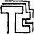
ВСЕСОЮЗНЫЙ ОРДЕНА ОКТЯБРЬСКОЙ РЕВОЛЮЦИИ
НАУЧНО-ИССЛЕДОВАТЕЛЬСКИЙ
ИНСТИТУТ
ТРАНСПОРТНОГО СТРОИТЕЛЬСТВА
УТВЕРЖДАЮ
Директор института
А. П. Кожевников
21 ноября 1989 г.
ПОСОБИЕ
ПО ПРОИЗВОДСТВУ И ПРИЕМКЕ
РАБОТ
ПРИ СТРОИТЕЛЬСТВЕ НОВЫХ, РЕКОНСТРУКЦИИ
И РАСШИРЕНИИ ДЕЙСТВУЮЩИХ ГИДРОТЕХНИЧЕСКИХ
МОРСКИХ И РЕЧНЫХ ТРАНСПОРТНЫХ СООРУЖЕНИЙ
(к СНиП 3.07.02-87)
Рекомендовано секцией строительства
портовых и гидротехнических сооружений
Научно-технического совета Минтрансстроя СССР
Москва 1991
В Пособии приведены рекомендации, основные положения правил производства и приемки работ при строительстве новых, реконструкции и расширении действующих гидротехнических морских и речных транспортных сооружений.
При пользовании Пособием следует учитывать изменения строительных норм и правил и государственных стандартов, публикуемые в журнале «Бюллетень строительной техники», «Сборнике изменений к строительным нормам и правилам» Госстроя СССР и информационном указателе «Государственные стандарты СССР» Госстандарта.
Пособие разработано Всесоюзным ордена Октябрьской Революции научно-исследовательским институтом транспортного строительства Минтрансстроя совместно с Союзморниипроектом Минморфлота СССР, Гипроречтрансом Минречфлота РСФСР, Гипрорыбпромом Минрыбхоза СССР и Союзпроектверфью Минсудпрома СССР в соответствии с письмом Госстроя СССР № 8-770 от 07.05.88.
Пособие предназначено для инженерно-технических работников проектных, изыскательских и строительных организаций.
Пособие разработано:
разделы 1, 2, 8, 11 - канд. техн. наук К. Д. Ладыченко; разд. 3 - кандидатами техн. наук М. А. Барановым, К. Д. Ладыченко; разд. 4 - кандидатами техн. наук А. С. Головачевым, К. Д. Ладыченко, И. Е. Школьниковым; разд. 5 - д-ром техн. наук Ф. М. Ивановым, кандидатами техн. наук К. М. Акимовой, Ю. М. Аниным, Э. А. Виноградовой, В. С. Гладковым, И. В. Грановской, Г. С. Рояком, В. Н. Свиридовым, В. Д. Малюком, инженерами В. В. Шильниковым, А. В. Никоновым; разд. 6 - канд. техн. наук А. А. Долинским; разд. 7 - кандидатами техн. наук К. Д. Ладыченко, В. В. Соколовым, инж. П. П. Никитиным; разд. 9 - кандидатами техн. наук И. И. Денисовым, К. Д. Ладыченко; разд. 10 - кандидатами техн. наук К. Д. Ладыченко, И. Е. Школьниковым, инженерами В. А. Поповым, Л. Г. Сахаровой; разд. 12 - канд. техн. наук А. Ф. Высоцким, инженерами В. В. Ковалевым, Л. А. Морозовым, Г. А. Цатуряном, Я. С. Шульгиным, канд. техн. наук Л.Н. Юдиным; разд. 13 - канд. техн. наук Ю. М. Гуткиным, инженерами П. Ф. Кучерявенко, канд. техн. наук К. Д. Ладыченко, инженерами В. Г. Дмитриевым, В. В. Капустиным, И. Г. Кухаревым, Г. Б. Паулиным, А. А. Петровым, В. Н. Терещенко, А. С. Тюриным; разд. 14 - канд. техн. наук К. Д. Ладыченко, инженерами А. В. Соколовым, Ю. М. Омельченко; разд. 15 - кандидатами техн. наук Е. И. Гамаюновым, К. Д. Ладыченко, инж. А. Н. Черемисoвoй.
Пособие разработано под общей редакцией межведомственной редакционной комиссии в составе:
инж. Д. Ф. Черевач, И. М. Капулер (Главморречстрой Минтрансстроя);
канд. техн. наук К. Д. Ладыченко (ЦНИИС Минтрансстроя);
д-р техн. наук, проф. В. Д. Костюков, инж. Т. И. Чодришвили, Г. М. Гидаль (Союзморниипроект Минморфлота);
канд. техн. наук Ю. М. Гуткин (Союзпроектверфь Минсудпрома);
инж. М. А. Кузьмин (Гипрорыбпром Минрыбхоза СССР);
инж. А. И. Певзнер, В. С. Александровский (Главспецпромстрой Минмонтажспецстроя СССР);
канд. техн. наук М. Н. Пинк (Фундаментпроект Минмонтажспецстроя СССР);
д-р техн. наук, проф. В. Б. Гуревич (Гипроречтранс Минречфлота РСФСР);
инж. В. Ф. Скорощинский (ГУКС Минречфлота РСФСР)
1.1. Настоящее Пособие рекомендуется использовать при производстве работ по строительству, реконструкции или расширению морских и речных портовых и берегозащитных гидротехнических сооружений, а также гидротехнических сооружений судостроительных и судоремонтных предприятий. Производство и приемка указанных работ в особых условиях (сейсмических районах, в Северной строительно-климатической зоне и в зоне распространения просадочных грунтов) должны выполняться с соблюдением требований соответствующих глав строительных норм и правил и других общесоюзных нормативных документов, действие которых распространяется на работы в этих условиях.
1.2. Строительная организация обязана вести работы в строгом соответствии с проектом, полученным от заказчика, требованиями строительных норм и правил и других нормативных документов (справочное приложение 1).
1.3. Строительство портовых и берегоукрепительных гидротехнических сооружений должно выполняться специализированными строительно-монтажными организациями.
Для работы по монтажу оборудования, устройству различимых коммуникаций, укладке железнодорожных путей, электромонтажных работ, телефонизации и т.п. должны привлекаться на условиях субподряда специализированные организации.
1.4. В соответствии с требованиями СНиП 3.01.01-85 строительство должно осуществляться, как правило, индустриальными поточными методами с применением утвержденных типовых проектов и преимущественным использованием унифицированных железобетонных конструкций, предусматриваемых проектом. Следует по возможности совмещать отдельные виды работ. При составлении графика строительства надлежит учитывать фактическое число рабочих дней в году при работе как на защищенной акватории, так и у открытых берегов, продолжительность ледостава, приливов и отливов в море и паводков на реках, интенсивность волнения и силу ветра, при которых допускается производить отдельные виды работ.
1.5. Предельные нормативные сроки строительства портовых и берегоукрепительных сооружений, определяющие распределение капитальных вложений по годам, устанавливаются в соответствии со СНиП 1.04.03-85.
1.6. При производстве работ должны выполняться требования по технике безопасности, предусмотренные проектом производства работ, СНиП III-4-80, ведомственными правилами техники безопасности и производственной санитарии, требованиями ГОСТ о мерах пожаровзрывобезопасности при производстве строительных работ, правилами эксплуатации судов технического флота и постановлениями капитана порта.
1.7. На зимний период надлежит планировать работы, производство которых обусловлено необходимостью и учетом требования наиболее рационального использования в течение года строительных механизмов, кадров строителей и материально-технической базы.
1.8. Производство работ в зимний период с помощью плавучих средств (установка массивов, погружение свай, отсыпка постелей, призм и др.) разрешается только на акваториях, не имеющих сплошного ледового покрова, когда обеспечена возможность маневрирования судов и прохода их к мосту укрытия при получении штормового предупреждения. Необходимо непрерывно поддерживать в незамерзающем состоянии полынью (майну) вокруг судов, перемещая их при помощи лебедок с применением гидравлической или пневматической циркуляционных установок, сколки льда и других мероприятий.
Работы в зимний период следует производить, как правило, круглосуточно за исключением перерывов, вызываемых штормами и туманами.
1.9. До начала основных строительно-монтажных работ должна быть выполнена инженерная подготовка территории и акватории строительства (расчистка и дноуглубление, намыв грунта, планировка площадки, дренажи дорог, проведение подземных и подводных коммуникаций, электросетей и т.п.).
Для временных сооружений и зданий на строительной площадке следует предусматривать преимущественное применение инвентарных передвижных или сборно-разборных конструкций.
1.10. Материалы и конструкции должны по возможности доставляться без перегрузок к складам на стройплощадку и к зоне действия подъемно-транспортного оборудования.
1.11. Железобетонные элементы должны изготовляться на заводах или полигонах железобетонных конструкций. Изготовление на месте строительства допускается только для нетранспортабельных элементов (массивы, уголковые контрфорсные стенки и т.п.) или когда условия транспортировки затруднены.
1.12. В проектах организации строительства и производства работ должны предусматриваться мероприятия по предупреждению загрязнения атмосферы, почвы и воды на строительной площадке и прилегающих к ней территориях и акваториях запыленностью и загазованностью, производственными отходами и сточными водами. Должны также приниматься меры к ограничению уровня шума и вибрации от работы строительных механизмов.
1.13. Порядок предъявления к приемке законченных строительством объектов должен соответствовать установленному СНиП 3.01.04-87.
2.1. В соответствии с указаниями СНиП 3.01.01-85 до начала основных строительно-монтажных работ должна быть обеспечена подготовка строительного производства.
2.2. Строительные организации на основе решений, принятых в проекте организации строительства, рабочих чертежей и смет составляют на каждое сооружение в соответствии с приложениями 4 и 5 СНиП 3.01.01-85 проект производства работ (ППР), который должен также содержать:
уточненный строительный генеральный план объекта с расположением причалов, постоянных и временных транспортных путей, портов (мест) - убежищ, сетей электроснабжения, крановых путей и зон их действия, площадок укрупнительной сборки, складов и других временных сооружений и устройств, необходимых для строительства;
решения по технике безопасности в соответствии с требованиями строительных норм и правил и ведомственных правил техники безопасности и производственной санитарии.
При строительстве освоенных строительной организацией объектов объем ППР может быть сокращен, но при всех условиях должны составляться календарный план (график), стройгенплан и пояснительная записка.
Для объектов, строящихся по типовым проектам, производится привязка типовых ППР.
ППР на объекты, предусматривающие выполнение работ в действующих портах, заводах и цехах, должны быть согласованы с руководителем действующего предприятия, а на судоходных внутренних водных путях - с управлениями речных пароходств, а также при необходимости с органами Госнадзора.
Проект производства работ должен быть утвержден и передан на строительство не позднее чем за два месяца до начала работ на объекте. В ходе строительства при наличии изменений в условиях работ или обеспечения ресурсами силами строительных организаций в ППР вносятся коррективы, обеспечивающие выполнение плана, соблюдение сметной стоимости объекта и выполнение установленных показателей.
Строительство объектов без наличия утвержденных проектов производства работ запрещается.
До начала строительства должны быть проведены занятия с ИТР и рабочими по изучению конструкции сооружения, проекта производства работ и соответствующих правил техники безопасности.
2.3. До начала основных работ на строительстве должны выполняться следующие подготовительные работы:
а) создание заказчиком опорной геодезической сети (высотные реперы, главные оси сооружений, опорная строительная сетка, красные линии);
б) закрепление в натуре границ строительной площадки и обвехование акватории, установление межевых знаков, которые также осуществляются заказчиком своими средствами за свой счет;
в) освоение строительной площадки - расчистка территории строительства, снос неиспользуемых в процессе работ строений и другие работы;
г) создание складского хозяйства, мастерских и подсобных производств, обслуживающих строительное производство;
д) устройство или монтаж временных жилых и производственных сооружений, а также возведение полностью или частично тех постоянных объектов порта (предприятия), которые предусмотрены к использованию для нужд строительства (например, энергосеть, водопровод, дороги, жильё и т.д.);
е) инженерная подготовка строительной площадки - первоочередные работы по планировке территории, обеспечивающей организацию временных стоков поверхностных вод, перенос существующих подземных и надземных сетей, устройство постоянных или временных подъездных железнодорожных путей и автомобильных дорог, постройка причалов и в отдельных случаях судоходных трасс, устройство временных или постоянных источников и сетей водоснабжения и энергоснабжения, устройство телефонной и радиосвязи;
ж) организация и постройка полигона по изготовлению железобетонных и бетонных конструкций (парка массивов).
Объем подготовительных работ и последовательность их выполнения определяются из условия бесперебойного производства основных работ и предусматриваются в проекте организации строительства.
2.4. Складские помещения следует организовывать преимущественно в виде центральных баз материально-технического снабжения в узлах сосредоточенного строительства. Базы должны быть оснащены механизмами и устройствами для правильного складирования, хранения и комплексного отпуска материалов.
2.5. При размещении складов надлежит соблюдать следующие условия:
а) сооружать склады на площадках, не подлежащих застройке в течение периода их эксплуатации и не затопляемых паводковыми водами;
б) склады сборных конструкций и изделий располагать в зоне действия монтажных кранов или соответствующего подъемно-транспортного оборудования.
Снабжение отдельных объектов, удаленных от баз строительных организаций и выполняемых прорабскими (мастерскими) участками, должно производиться с центральных баз.
2.6. До начала производства основных работ следует подготовить комплексы машин и механизмов, обеспечивающие механизацию всего рабочего процесса:
а) землечерпательные снаряды, самоходные плавучие землесосные снаряды и землесосные снаряды с грунтоотвозными шаландами и плавучими пульповодами - при разработке подводных котлованов и намыве территорий;
б) саморазгружающиеся шаланды, контейнеры для камня, плавучие краны для разгрузки контейнеров, а также подводные механические планировщики и плавучие виброударные уплотнители - при отсыпке, ровнении и уплотнении каменных постелей;
в) плавучие копры и плавучие или гусеничные краны в комплекте с направляющими кондукторами, молотами или вибропогружателями с самозакрепляющимися наголовниками - при погружении свай, шпунтов и свай-оболочек.
При погружении железобетонных свай-оболочек и шпунтин таврового сечения в плотные грунты следует предусматривать подмыв или лидерное бурение. При погружении в скальные грунты следует использовать плавучие установки для бурения скважин в скале под водой и станки ударного бурения;
г) плавучие краны, оборудованные установками подводного телевидения, - при установке массивов, оболочек больших диаметров, элементов уголковых стенок и т.п.;
д) плавучие краны повышенной мореходности, береговые краны, самоходные баржи с откидной носовой частью - при строительстве морских берегозащитных сооружений. Для наброски тетраподов рекомендуется применять стропы с автоматической расстроповкой.
2.7. Проверка качества строительных материалов и подбора состава бетона, а также качества бетонных работ, геотехнических характеристик возводимых земляных сооружений и т.д. должны оформляться соответствующими документами и актами.
Строительные материалы, изделия, конструкции и оборудование, применяемые в строительстве, должны соответствовать требованиям проекта, действующим государственным стандартам или техническим условиям, а также условиям, предусмотренным договорами о поставках.
Во всех случаях несоответствия стандартам или техническим условиям доставленных партий материалов и изделий строительные организации обязаны предъявлять заводам-изготовителям и транспортным организациям рекламации в установленном порядке.
Запрещается применение строительных материалов и изделий, не имеющих паспортов, сертификатов и т.п., подтверждающих их соответствий требованиям государственных стандартов или технических условий.
Качество поступающих на строительство элементов сборных бетонных и железобетонных конструкций и соответствие их требованиям проекта устанавливается предприятием-изготовителем и указывается в документах, прилагаемых к этим элементам. Перед монтажом элементы должны быть дополнительно освидетельствованы.
3.1. Геодезические работы при возведении портовых гидротехнических сооружений следует выполнять в соответствии с требованиями СНиП 3.01.03-84 и СНиП 3.07.02-87.
3.2. Геодезические работы при возведении гидротехнических сооружений должны включать:
а) создание геодезической разбивочной основы (плановой и высотной) в районе строительства;
б) прокладку и закрепление магистральных линий с привязкой их к пунктам геодезической разбивочной основы (в плане и по высоте);
в) разбивку и закрепление основных линий сооружений и границ черпания;
г) разбивку отдельных элементов сооружений;
д) геодезический контроль правильности возведения сооружений;
е) геодезические наблюдения за перемещениями и деформациями строящихся сооружений;
ж) проведение необходимых геодезических работ для составления исполнительной документации.
3.3. В состав работ подготовительного периода должны входить в объёмах, обеспечивающих нормальное развитие строительства:
а) создание заказчиком разбивочной геодезической основы;
б) выполнение детальных разбивочных работ от геодезической основы.
3.4. До начала основных строительных работ долины быть составлены:
а) генеральный план строительной площадки в единой системе координат с нанесенными пунктами государственной геодезической сети и геодезической разбивочной основы, пунктами для разбивок, осевыми линиями всех сооружений со схемами и исходными числовыми данными для переноса в натуру (условные координаты отдельных точек, а также условные координаты концов и направления магистральных линий, величины, и направления углов засечек, расстояния до ориентиров на местности, схемы примыкания к существующим сооружениям или схемы разбивок, гониометрические сетки с нанесенными границами черпания для определения места нахождения земснаряда на участке работ, отметки или превышения и т.д.) с приложением краткой пояснительной записки, содержащей:
исходные данные;
оценку точности геодезической разбивочной основы и гониометрической сетки;
требования к точности разбивок;
метод и точность линейных, уголковых и высотных измерений;
методику производства разбивочных работ.
Примечания: 1. Для удобства выполнения разбивочных работ может быть составлен отдельный от генерального плана строительной площадки разбивочный чертеж основных осей зданий и сооружений.
2. Для детальных геодезических разбивок из генерального плана делают выкопировки отдельных сооружений, зданий (групп сооружений, зданий). На выкопировке или на приложении к ней выписываются координаты привязочных точек сооружений и зданий и схемы привязки сооружений к местным предметам.
б) схема расположения и детальное описание знаков геодезической разбивочной основы с приложением чертежей установленных знаков;
в) каталоги координат и высот пунктов геодезической разбивочной основы и знаков государственной геодезической сети.
Указанные документы и материалы, а также предъявленные в натуре знаки геодезической разбивочной основы, центры, закрепляющие магистральные, основные осевые линии, исходные реперы и марки, передаются по акту (см. справочное приложение 2) представителями заказчика представителям подрядчика (для сооружений I категории капитальности, а также в особо сложных случаях разбивки - обязательно в присутствии представители проектной организации).
3.5. Разбивочные работы выполняются в следующей очередности и состоят из следующих этапов:
а) установки и закрепления основных и рабочих опорных знаков геодезической разбивочной основы с привязкой их к государственной планово-высотной сети или иной, принятой проектом за исходную (свободная сеть с условным началом, планово-высотная основа существующих портовых или иных сооружений и т.п.);
б) установки мареографов и водомерных постов (реек), привязки их к основным опорным знакам или приемки их от изыскательской группы по акту;
в) разбивки и закрепления магистральных линий на территории возводимого сооружения;
г) разбивки от магистральных линий и закрепления основных осей зданий и сооружений;
д) переноса в натуру от пунктов геодезической разбивочной основы или строительной сетки и основных осей сооружений и закрепления вспомогательных линий разбивки отдельных элементов сооружений.
Примечания: 1. Работы по пп. «а» - «г» выполняются заказчиком, а по п. «д» - подрядчиком.
2. Временные здания и сооружения могут быть привязаны только к местным предметам без использования координат опорной сети.
3. В натуру, как правило, не выносятся одновременно оси всего комплекса сооружений и зданий. Отдельные сооружения и здания выносятся с генплана на местность (разбиваются в натуре) последовательно, в соответствии с календарным графиком строительства.
3.6. В качестве исходных базисных линий основной разбивки следует принимать, как правило, стороны ходов государственной геодезической сети или линии плановой основы существующих портовых сооружений, к которым ведется привязка магистральных линий.
Указанные магистральные линии должны располагаться вдоль береговой полосы, примыкающей к месту возведения сооружений.
Примечание. При постройке сооружений, не связанных с берегом, магистральная линия должна служить основанием для инструментальной разбивки и закрепления точек основной линии сооружения на воде.
3.7. Количество и расположение пунктов высотной геодезической разбивочной основы должна определять и фиксировать на разбивочных чертежах проектная организация с таким расчетом, чтобы обеспечить заданную точность разбивки, быстроту и удобство выноса необходимых отметок на все участки сооружения. Знаки высотной геодезической основы нужно устанавливать вне зоны строительных работ, складирования и транспортировки материалов, в местах, не подверженных осадкам и оползням, размыву и действию ледохода. Знаки должны быть предохранены от смещений и повреждений в процессе производства работ.
В состав высотной основы следует включать также пункты плановой геодезической разбивочной основы.
3.8. Установка реперов и определение их отметок от нуля, принятого в проекте сооружения, должны фиксироваться актом.
Привязку устанавливаемых реперов к ближайшим государственным или ведомственным пунктам нивелирования выполняют замкнутыми или двойными нивелирными ходами (нивелирование III класса).
3.9. Плановое и высотное положение подводных разбивочных знаков следует определять или по линиям надводной разбивки, смещенным под воду, или путем применения подводных геодезических инструментов.
На глубине более 11,5 м следует применять, как правило, подводные геодезические инструменты.
3.10. Плавучие знаки, устанавливаемые при выполнении работ на акваториях, следует надежно закреплять против воздействий волн, льда и т.п., а также дублировать створами на берегу для возможности быстрого восстановления после повреждений.
3.11. При создании геодезической разбивочной основы и точных разбивках при монтаже металлических конструкций следует использовать:
для измерения углов - оптические теодолиты с точностью отсчета 2-5″;
для измерения расстояний - светодальномеры, параллактический метод или непосредственное измерение длин стальной лентой или мерной проволокой.
Наиболее эффективно для выполнения этих работ использование электрооптических или электронных тахеометров.
Способ измерения расстояний выбирают, исходя из имеющихся геодезических приборов и условий работы.
Для обеспечения строительной площадки высотными реперами на основе нивелирования III класса необходимо применять нивелир с ценой деления цилиндрического уровня не более 15″ на 2 мм и увеличением зрительной трубы не менее 30х. Допускается использовать рейки деревянные шашечные с сантиметровыми делениями и круглым уровнем.
Для производства детальных разбивочных работ можно применять теодолиты с точностью отсчета 15-30″, технические нивелиры, мерные стальные ленты и рулетки.
3.12. Для выполнения подводных геодезических работ на глубине более 11,5 м следует применять подводные нивелиры ЦНИИС ПН-2-30 (справочное приложение 3), имеющие точность отсчета ±3 мм.
Допускается использование подводных нивелиров при создании сети подводных реперов.
Для измерения уклонов грунта и элементов конструкций следует применять универсальный уклономер ЦНИИС, обеспечивающий точность измерений 10′ (см. справочное приложение 3).
Для грубых подводных геодезических работ (предварительные изыскания в акватории строительства, контроль выемки слабого грунта, послойной отсыпки камня и т.п.) допускается использовать эхолоты, обеспечивающие точность измерения глубины ±20 см.
3.13. Геодезические разбивочные работы производят под контролем работников геодезической службы треста, подразделение которого выполняет строительно-монтажные работы на данном объекте.
Разбивка основных осей сооружений
3.14. Разбивочные работы следует выполнять с точностью, обеспечивающей выполнение требований СНиП 3.01.03-84 и СНиП 3.07.02-87, а также допусков, установленных в проекте.
3.15. Все разбивочные работы, в том числе и установка разбивочных знаков, должны фиксироваться в журналах геодезических работ с приложением чертежей, на которых указывают все разбивочные знаки, закрепленные на территории и акватории порта с привязкой их к магистрали.
3.16. Положение разбивочных линий и реперов в плане, а также правильность высотного положения знаков разбивки следует проверять не реже одного раза в месяц. При наличии обстоятельств, вызывающих сомнение в сохранении первоначального положения какого-либо знака разбивки, проверку надлежит производить немедленно. В частности, знаки, установленные на акватории, необходимо проверять после каждого шторма, навала судна и т.п.
3.17. Пункты и знаки геодезической разбивочной основы должны быть сохранены в течение всего периода строительства и переданы заказчику при сдаче сооружений в эксплуатацию по акту (см. справочное приложение 2) с приложением схемы расположения знаков, описания и фотоснимков.
3.18. Разбивка вспомогательных линий сохраняется на время производства работ по постройке соответствующего элемента сооружения.
3.19. Все документы по плановым и высотным разбивкам, проверке опорных знаков, определению отметок элементов сооружений и проверке фактических размеров сооружений (акты, чертежи, журналы геодезических работ, подсчеты и др.) необходимо хранить до окончания строительства и сдачи объекта в эксплуатацию.
Разбивка основных точек сооружений по высоте
3.20. Для проведения основных высотных разбивок сооружений используется сеть пунктов высотного обоснования, заложенная до начала строительных работ.
В соответствии с требованиями точности выноса проектных отметок при разбивках применяют:
а) геометрическое нивелирование III и IV класса или техническое нивелирование;
б) тригонометрическое нивелирование;
в) гидростатическое и гидродинамическое нивелирование.
3.21. Перенос в натуру проектных (или вспомогательных) отметок производится способами, обеспечивающими ведение как текущего, так и периодического контроля (прокладкой ходов между двумя реперами сети, замкнутыми ходами или «висячими» ходами, прокладываемыми в прямом и обратном направлениях и т.п.).
Документация по выполненным высотным разбивкам и контрольным измерениям вместе с актом сдачи исходных опорных точек передается производителям строительных работ, а по завершении последних - заказчику.
3.22. Пункты основных высотных разбивок закрепляются грунтовыми реперами, марками на основаниях существующих сооружений, окрашенными знаками высотных разбивок на основаниях постоянных сооружений и другими способами, обеспечивающими постоянство высотного положения знака на период возведения сооружения. Окраска подводных знаков должна быть белой, желтой или оранжевой.
Знаки высотных разбивок следует располагать так, чтобы можно было постоянно контролировать строительные работы, как правило, с одной станции (без прокладок вспомогательных ходов нивелирования).
Детальные разбивки
3.23. Детальную разбивку элементов сооружений выполняет строительно-монтажная организация по рабочим чертежам отдельных частей сооружений или по специальным разбивочным схемам, привязанным к осям сооружения.
3.24. Во всех случаях детальных разбивок должны быть обеспечены точность, установленная СНиП 3.01.03-84 и СНиП 3.07.02-87 или допуски, предусмотренные проектом.
При детальной разбивке земляных и каменно-набросных конструкций, волноломов, буя и аналогичных сооружений непосредственно от основных осей допускается использовать простейшие геодезические приборы и приспособления (стальные ленты, рулетки, эккеры, отвесы, шаблоны, строительные уровни и т.п.).
3.25. Точки и линии детальных разбивок закрепляют знаками на временных подсобных сооружениях (обноски, подмости, сваи и т.п.) и сохраняют на время строительных работ по возведению того элемента, положение и размеры которого они определяют.
Указанные точки и линии служат также для контроля за строительными работами.
Геодезический контроль в период строительства
3.26. Состояние возводимых сооружений в надводной и подводной частях (при помощи водолазов и телевизионных установок) систематически проверяют до сдачи в эксплуатацию наружным осмотром и инструментально.
Порядок и сроки проверок устанавливает главный инженер строительства.
Примечание. Особое внимание должно быть уделено наблюдению за состоянием подводных частей сооружений и их элементов, расположенных на незащищенной акватории, а также за осадками и горизонтальными смещениями как всего сооружения, так и его частей.
3.27. При геодезическом контроле состояния сооружения проверяют:
а) соблюдение проектных размеров, положения и допусков на возводимое сооружение;
б) общую величину перемещений сооружения или его частей, их равномерность и интенсивность нарастания.
Перед проверкой состояния сооружения необходимо выполнить тщательный инструментальный контроль исходных пунктов наблюдений (створные знаки, реперы, контрольные точки и т.п.) с целью определения их незыблемости.
Результаты контрольных проверок и наблюдений необходимо актировать и использовать как исходный материал для составления исполнительных чертежей при сдаче сооружений в эксплуатацию.
3.28. В процессе основного строительства проверяют:
а) при дноуглубительных работах: положение нулей водомерных реек, правильность разработки прорези;
б) при отсыпке каменных и массивовых набросок: соблюдение проектных размеров и допусков, объем созданной отсыпки из камня (массивов) и расход камня (массивов); осадку каменной (массивовой) наброски;
в) при ровнении: соблюдение проектных отметок поверхности ровнения, взаимное высотное положение участков ровнения (по сетке квадратов со сторонами 2 м), наличие и толщину слоя наносов (в случае перерыва работ);
г) при виброуплотнении подводных каменных постелей: правильность установок виброуплотнителя на уплотняемой поверхности подводной каменной постели, величины отказов виброуплотнителя по залогам;
д) при укладке массивов: правильность установки массивов по осевой (боевой) линии, соблюдение заданной проектом фасадной плоскости, правильность укладки массивов в курсах и курсов по высоте, осадку массивовой кладки;
е) при установке массивов-гигантов: правильность установки массивов-гигантов по створам осевых линий и их осадку;
ж) при огрузке массивовых кладок: горизонтальное и вертикальное смещение и её состояние;
з) при возведении верхних строений: состояние нижележащих частей сооружений (планово-высотными контрольными измерениями), правильность детальных разбивок по откорректированным рабочим чертежам, соблюдение размеров возводимых строений (или их частей) и допусков на их монтаж;
и) при регулировании: правильность намыва территории в плане, крутизну откосов - как надводных, так и подводных (раздельно), высотные отметки территории и отдельных её частей, уклоны территории, если они заданы проектом, осадку территории и отдельных её участков, геометрические размеры заполняемых пазух (до начала работ), качество заполнения пазух (отсутствие пустот).
3.29. При производстве на площадке строительства контрольных обмеров, инвентаризации выполненных работ или при приемке заказчиком законченных конструктивных элементов и целых сооружений работники геодезической службы строительно-монтажной организации должны выполнять инструментальные геодезические работы в соответствии с указаниями главного инженера строительства.
Наблюдения за деформациями сооружений в период их возведения
3.30. Геодезические наблюдения за перемещениями и деформациями (осадками, сдвигами, кренами и т.п.) гидротехнических сооружений выполняют по техническому заданию, составленному проектной организацией с учетом назначения и конструктивного решения сооружений и инженерно-геологического строения оснований.
Геодезические наблюдения за деформациями сооружений выполняет заказчик или работники геодезической службы строительно-монтажной организации в случаях, если это обусловлено договором с заказчиком.
3.31. Наблюдения за деформациями строящегося гидротехнического сооружения производятся систематически, в сроки, установленные техническим заданием. Моменты наблюдений, как правило, приурочивают к окончанию определенного этапа работ (покурсовая кладка массивов, устройство надводного строения и др.).
При появлении факторов, меняющих нормальные условия работы основания сооружения (резкое возрастание или уменьшение нагрузки, появление трещин, рост деформаций и т.п.), необходимо произвести внеочередной замер деформаций.
В случае перерывов в строительстве наблюдения за деформациями производятся сразу же по окончании работ и перед их возобновлением.
3.32. Наблюдения за деформациями сооружений производятся с целью определения деформаций:
а) сооружения в процессе его возведения в зависимости от роста нагрузки;
б) происшедших после окончания постройки в зависимости от величин эксплуатационных нагрузок, действующих на сооружение.
По результатам наблюдений за деформациями сооружения составляются документы, характеризующие качество основания.
3.33. Точность геодезических наблюдений за деформациями должна соответствовать требованиям СНиП 3.01.03-84 и технического задания, составленного проектной организацией.
3.34. До начала наблюдений за деформациями сооружений определяют отметки грунтовых реперов и производят их плановую привязку к пунктам геодезической разбивочной основы, другим грунтовым реперам и точкам на местности. Плановое и высотное положение грунтовых реперов периодически проверяется.
3.35. На элементах конструкций наблюдаемого сооружения в местах, предусмотренных проектом, закладываются реперные знаки (марки) с полусферической головкой с крестообразной насечкой для планово-высотных наблюдений или острой гранью для высотных наблюдений. Головки и грани должны быть защищены от возможных повреждений при строительстве и во время эксплуатации. Остальные точки, в которых производятся измерения, следует отмечать несмываемой краской и одновременно давать их описание. Например, «береговой угол на верхней горизонтальной плоскости массива со стороны акватории».
3.36. Результаты наблюдений за деформациями записывают в специальный журнал (см. справочное приложение 2), который служит исходным материалом для составления графиков изменения деформаций и величины нагрузок в зависимости от времени. При сдаче сооружения в эксплуатацию все реперы и знаки (марки), документация на них и данные наблюдений передаются заказчику для дальнейшего наблюдения за сооружением.
К журналам прилагают:
а) схему расположения наблюдаемых реперов и марок с фотоснимками, определяющими их местонахождение;
б) схематический план и разрезы сооружения с нанесенными на них контрольными знаками (марками);
в) техническую схему участка.
3.37. Все случаи появления трещин в сооружении или расстройства швов должны быть немедленно зафиксированы в журнале, где указываются дата возникновения дефекта, его характер и вероятные причины повреждения. К журналу прилагают зарисовки и по возможности фотографии участков деформации.
О всех случаях появления таких деформаций строящегося сооружения должны быть поставлены в известность заказчик, проектная организация и подрядчик.
3.38. Все данные наблюдений за деформациями, полученные в период строительства, прилагаются к актам сдачи сооружения в эксплуатацию и хранятся вместе с результатами дальнейших наблюдений, производимых организацией, эксплуатирующей сооружение.
3.39. Наблюдения за деформациями сооружения в плане выполняют (с учетом указаний п. 3.31) по контрольным знакам (маркам) путем непосредственных промеров отклонений последних от закрепленного створа методом условных засечек с берегового базиса или другими методами.
По данным указанных промеров вычерчивается график смещения сооружения в горизонтальной плоскости.
3.40. Наблюдения за изменением наклонов отдельных частей сооружения (с учетом указаний п. 3.31) выполняются с помощью непосредственных замеров уклономерами, измерениями расстояний от точек исследуемой грани сооружений до отвеса, а также путем последовательных нивелировок верхней плоскости наблюдаемой части сооружений.
По полученным данным вычерчиваются графики изменения наклонов частей сооружения.
При измерении уклонов уклономерами последние должны устанавливаться на постоянные марки.
Настоящее Пособие рекомендуется использовать при производстве свайных работ на акваториях при строительстве морских и речных портовых сооружений с применением следующих видов свай и свай-оболочек:
а) сваи деревянные цельные, срощенные и пакетные;
б) сваи железобетонные с предварительно напряженной и ненапряженной продольной арматурой; призматические и цилиндрические, сплошные и полые диаметром до 80 см;
в) сваи стальные трубчатые любого диаметра с наконечником и без наконечника;
г) железобетонные сваи-оболочки с предварительно напряженной и ненапряженной продольной арматурой.
Пособие не распространяется на свайные работы в условиях вечномерзлых, просадочных и подверженных карсту грунтов.
Для сокращения в случаях, когда требования являются общими, частные термины «свая» и «свая-оболочка» объединяются общим понятием «свайный элемент».
Общие положения
4.1. Работы по устройству свайных фундаментов должны выполняться в соответствии с рабочими чертежами, проектом организации строительства, проектом производства работ, составленных с учетом местных условий и требований, СНиП 3.01.01-85; СНиП 3.07.02-87; СНиП 3.02.01-87.
4.2. Проект организации строительства свайных сооружений разрабатывается организацией, выполнившей проект сооружения, с учетом решений по конструкции свайного фундамента, способов организаций и средств механизации свайных работ, предварительно согласованных со строительной организацией, а также должен включать организационно-технологические схемы возведения свайных сооружений и описание с обоснованием принятых методов производства свайных работ, обеспечивающих выполнение требований проекта. Кроме того, проектная организация, выполнявшая проектирование свайного сооружения, требующего использования свайных элементов длиной более 25 м или железобетонных свай-оболочек или возводимого в сложных гидрометеорологических условиях (см. ниже), должна разрабатывать рабочие чертежи или проекты соответствующих направляющих устройств.
Свайные работы в сложных гидрометеорологических и инженерно-геологических условиях (открытая для волнения свыше трех баллов акватория, глубина воды более 16 м, течение со скоростью более 1 м/с, колебания уровня воды более 2 м/сут, неустойчивые площадки с возможным образованием оползней), а также в Северной строительно-климатической зоне и в условиях высокой интенсивности движения судов следует производить по проектам производства работ, разрабатываемым, как правило, по заказу строительной организации оргтехстроями или проектными организациями на основе проекта организации строительства.
4.3. Конструкция закрепления свайных элементов, подверженных воздействию волн и льда, определяется проектной организацией, разработавшей проект конструкции сооружения, с учетом возможных нагрузок на них в строительный период, свободной длины, поперечного сечения их и прочих местных условий. Ею же разрабатываются принципиальные схемы защиты и рабочие чертежи или проект крепления свайных элементов.
4.4. Предельная отрицательная температура, при которой допускается производство свайных работ, устанавливается проектной организацией, разработавшей проект свайного фундамента, в зависимости от вида и конструкции свайных элементов и конкретных условий производства работ.
4.5. При производстве свайных работ следует соблюдать требования СНиП III-4-80, а также действующих «Правил техники безопасности и производственной санитарии при производстве строительно-монтажных работ по постройке портовых гидротехнических сооружений» Минтрансстроя. В зимнее время должны выполняться требования «Указаний по технике безопасности для рабочих, выполняющих строительно-монтажные и транспортные работы на льду рек и других водоемов» Минтрансстроя.
Применяемые при производстве свайных работ плавучие средства и береговые механизмы и оборудование должны эксплуатироваться с соблюдением требований Регистра и Гостехнадзора. Судоходные участки акватории в местах производства работ должны быть оборудованы навигационными знаками.
4.6. Производство свайных работ должно быть обеспечено гидрометеорологическими сводками, а также прогнозами и штормовыми предупреждениями ближайшей гидрометеорологической станции; систематическими сведениями об уровнях воды.
4.7. При производстве свайных работ необходимо вести журнал, в котором должны отмечаться основные данные о применяемом оборудовании, материале, форме, глубине заложения острия (ножа) каждого свайного элемента, а также о всех обстоятельствах и затруднениях, встретившихся в процессе работ.
Журнал должен заполняться непосредственно во время и на месте погружения. Заполнение журнала после выполнения работ запрещается.
К журналу прилагается план расположения свай и свай-оболочек с указанием их номеров, расстояний между сваями (или сваями-оболочками) и отступлений от проектного положения в плане и профиле.
Формы отчетной технической документации и правила их заполнения приводятся в справочном приложении 2. Все страницы журналов должны быть пронумерованы и скреплены печатью строительной организации.
4.8. Всякие отступления от проекта при производстве свайных работ, в том числе превышение установленных допусков расположения свайных элементов в плане и профиле, неполучение расчетного отказа на проектной отметке, применение сваебойного оборудования и способов погружения, отличных от указанных в проекте производства работ и влияющих на несущую способность свайных элементов, подложат обязательному согласованию с проектной организацией.
Подготовительные работы
4.9. Основным работам по погружению свайных элементов должны предшествовать:
а) выполнение работ подготовительного периода в соответствии с проектом организации строительства в целом и проектом производства работ для данного конкретного сооружения в объемах, обеспечивающих нормальное производство свайных работ с соблюдением требований СНиП 3.01.01-85; СНиП 3.07.02-87; СНиП 3.02.01-87 и разд. 2 настоящего Пособия;
б) выполнение и принятие по акту работ, предшествующих свайным работам, в соответствии с проектом производства работ;
в) проверка наличия технической документации и ознакомление с рабочими чертежами свайного фундамента сооружения с проектами организации строительства и производства свайных работ;
г) выбор способа погружения свайных элементов, сваепогружающего и вспомогательного оборудования и механизмов, разработка новых или привязка типовых технологических карт на основные виды свайных работ в случае отсутствия проекта производства работ при строительстве мелких объектов;
д) детальная разбивка свайного основания;
е) подводное обследование дна в районе погружения свайных элементов водолазами или с помощью установок подводного телевидения с целью удаления подводных препятствий или ограждения их сигнальными плавучими знаками;
ж) подготовка сваепогружающего и вспомогательного оборудования и обустройств для производства свайных работ;
з) приемка и подготовка свайных элементов;
и) проведение динамических и статических испытаний пробных свайных элементов.
Примечание. Проведение в подготовительный период указанных испытаний пробных свайных элементов для уточнения глубины погружения и методов производства работ допускается только при невозможности выполнения этих работ в комплексе проектно-изыскательских работ на стадии разработки проекта свайного сооружения. Испытания выполняются по программе, составленной проектной организацией в соответствии с указаниями ГОСТ 5686-78*.
Разбивочные работы
4.10. Разбивку и закрепление знаками в натуре свайного сооружения следует производить с соблюдением требований разд. 3 настоящего Пособия и СНиП 3.07.02-87 в следующем порядке:
а) установка постоянных реперов и мареографа (водомерного поста) с привязкой их к триангуляционной сети;
б) прокладка и закрепление магистральной линии с привязкой к постоянным реперам;
в) разбивка и закрепление основных линий сооружения;
г) детальная разбивка свайного фундамента (т.е. продольных и поперечных рядов свайных элементов).
Примечание. На продольных основных осях сооружения должны быть показаны и закреплены на местности знаками точки начала и конца сооружения, его повороты в плане.
4.11. При детальной разбивке свайного основания должны быть закреплены следующие линии:
а) оси двух крайних продольных рядов свайных элементов;
б) оси первого и последнего поперечных рядов свайных элементов;
в) оси нескольких промежуточных (через 20-30 м) поперечных рядов свайных элементов.
Примечание. Разбивочные линии свайных элементов (обычно в виде натянутых проволок) следует смещать от своего проектного положения в плане так, чтобы не мешать погружению свайных элементов. Точное их положение определяется промерами от разбивочной линии.
Положение промежуточных продольных и поперечных рядов свайных элементов между крайними или ранее разбитыми промежуточными рядами, а также положение отдельных свайных элементов в ряду устанавливается в процессе свайной бойки промерами от закрепленных осей или вспомогательных осей, закрепленных на ранее погруженных свайных элементах.
Точность разбивки и высотной привязки основных линий сооружений устанавливается проектом в соответствии с видом сооружения.
При использовании направляющих устройств в виде инвентарных перемещающихся кондукторов для точного взаиморасположения свайных элементов в плане и профиле с соблюдением установленных допусков должна обеспечиваться правильная их установка в первоначальное рабочее положение и контроль их положений по мере передвижения.
Приёмка, подготовка, транспортирование и складирование свайных элементов
4.12. Конструкция и изготовление свайных элементов, применяемых на строительстве морских и речных портовых сооружений, должны отвечать требованиям проекта и технических условий на изготовляемые элементы.
4.13. Деревянные сваи должны изготовляться из лесоматериалов, удовлетворяющих требованиям СНиП 2.02.03-85.
Лес должен быть окоренный, без сучьев и наростов, как правило, зимней рубки. Свайные бревна должны быть правильной формы с допускаемым односторонним искривлением не более 1 % длины (но не более 12 см), разность диаметров комля и поперечного сечения бревна на расстоянии 1 м от комля не должна превышать 10 см, сбежистость допускается не более 1 см на 1 м длины бревна, причем первый метр от комля не учитывается. Лесоматериал перед изготовлением из него свай должен быть освидетельствован комиссией с участием представителя заказчика.
При изготовлении деревянных свай (учитывая возможность размочаливания голов при забивке) следует увеличивать их длину на 30-60 см против проектной.
Способы защиты древесины свай от гниения и морских древоточцев предусматриваются проектом.
Стыки деревянных свай выполняются в соответствии с проектом. При отсутствии указаний проекта рекомендуются конструкции стыков для составных и пакетных свай, указанные в п. 4.14.
4.14. Стыки составных свай осуществляют впритык со стальным штырем, входящим в заранее высверленное отверстие. Длину штыря принимают равной диаметру стыкуемых бревен, а его диаметр - 20-30 мм. Стыкуемые бревна связывают не менее чем четырьмя стальными накладками с постановкой не менее двух болтов на каждом конце накладки. В необходимых случаях (при работе на горизонтальную нагрузку) вместо накладки следует применять металлические муфты. Длину накладок и муфты принимают равной четырем диаметрам стыкуемых элементов.
Стыки бревен в пакетных сваях располагают вразбежку на расстоянии не менее 1,5 м друг от друга и перекрывают металлической накладкой с постановкой не менее двух болтов на каждом конце накладки дополнительно к болтам, установленным через 0,5 м и скрепляющим бревна в пакет.
Диаметр болтов следует принимать не менее 16 мм.
4.15. Верхние концы деревянных свай должны быть обрезаны строго перпендикулярно к их оси; нижний конец сваи должен быть заострен в виде четырехгранной или трехгранной пирамиды с вершиной, лежащей на оси сваи. Заострение должно иметь длину 1,5 диаметра сваи, а само острие должно быть притуплено. При наличии в грунте твердых включений на острие сваи надевают башмак.
При забивке деревянных свай молотами одиночного действия или трубчатыми дизель-молотами необходимо укреплять голову сваи стальным кольцом (бугелем), предохраняющим голову деревянной сваи от размочаливания. Для штанговых дизель-молотов и молотов двойного действия применение бугеля не обязательно.
4.16. Стальные трубчатые свайные элементы, поступающие в готовом виде или изготавливаемые из стальных труб на строительстве, должны удовлетворять действующим стандартам на стальные трубы и сварные швы. Сваи не должны иметь вмятин и трещин. Наибольшая допускаемая кривизна сваи не должна превышать 1:600 её длины. Оформление нижнего конца устанавливается проектом.
4.17. Стыки стальных трубчатых свай выполняют в соответствии с проектом из условия обеспечения равнопрочности стыка основному сечению сваи.
Несовпадение окружностей торцов стыкуемых труб в плоскости стыка не должно превышать 2 мм для свай диаметром до 80 см и 3 мм для свай диаметром более 80 см. Местные неровности на торцевой поверхности труб не должны превышать 2 мм. Наклон верхней торцевой плоскости к оси свайного элемента не должен превышать 0,003. Верхний конец сваи не должен иметь фаски.
4.18. Железобетонные свайные элементы должны быть изготовлены в соответствии с требованиями проекта, ГОСТ 19804.0-78* и ГОСТ 19804.2-79, СНиП 2.02.03-85 и действующих технических условий.
Допустимые отклонения размеров железобетонных свайных элементов приведены в справочном приложении 4.
4.19. Каждая партия железобетонных свайных элементов должна иметь паспорт, в котором указываются:
а) наименование предприятия-изготовителя и его адрес;
б) номер паспорта (номер партии);
в) дата составления паспорта;
г) марка свайного элемента;
д) количество свайных элементов в партии;
е) даты изготовления и приемки партии ОТК и номер браковщика ОТК;
ж) отпускная прочность бетона свайного элемента;
з) данные по морозостойкости, водонепроницаемости, трещиностойкости и другим требованиям, оговоренным в заказе;
и) номер стандарта (ГОСТа).
Примечание. Паспорт должен быть подписан начальником ОТК или другим ответственным представителем предприятия-изготовителя.
При приемке железобетонных свайных элементов следует проверить по паспорту их соответствие требованиям проекта.
Запрещается применять свайные элементы без паспорта и не отвечающие требованиям проекта.
4.20. На торце или на боковой поверхности на расстоянии 0,5 м от торца свайного элемента должны быть нанесены предприятием-изготовителем несмываемой краской марка, дата изготовлена и номер партии.
Подъемные петли железобетонных призматических свай и шпунтин, а также места строповки круглых полых свай и свай-оболочек, отмеченные несмываемой краской, должны находиться на расстоянии 0,2 их длины от концов, без учета длины острия.
Места строповки железобетонных призматических свай и шпунтин для подъема за одно сечение на копер фиксируются металлическими штырями, заделанными в бетон при изготовлении, или несмываемой краской на круглых полых сваях и сваях-оболочках.
4.21. Секции наращиваемых круглых полых свай и свай-оболочек должны предварительно пройти контрольное стыкование между собой и с наконечником для проверки соосности всех элементов, плотности стыковых поверхностей и совпадения фланцевых отверстий.
При стыковании секций между собой и с наконечником или ножом необходимо соблюдать следующие условия:
а) отклонения размеров металлических стыковых фланцев и ножей должны находиться в пределах допусков, указанных в СНиП 2.02.03-85;
б) отклонение оси устанавливаемой секции от направления оси ранее установленной секции не должно превышать 2 мм на каждый метр длины секции;
в) поверхности стыкуемых фланцев должны плотно прилегать друг к другу; местные неплотности (зазоры) не должны быть более 1,5 мм.
4.22. Стыкование секций круглых полых свай и свай-оболочек диаметром до 2 м следует производить на горизонтальном стенде, оборудованном роликовыми опорами и механизмами для поворота секций вокруг оси. Сваи-оболочки диаметром 3 м целесообразно стыковать в вертикальном положении.
Секции, прошедшие контрольное стыкование, должны быть замаркированы и размечены масляной краской для правильного соединения их при погружении.
4.23. При наличии грузоподъемного, транспортного и погружающего оборудования, обеспечивающих доставку на место и погружeниe конструкций в укрупненном виде, целесообразно производить полное стыкование на стенде, руководствуясь при этом следующим:
а) прочность соединения секций на болтовых и сварных фланцевых стыках должна быть не меньше прочности железобетонного поперечного сечения сваи или сваи-оболочки между стыками при работе на продольную силу и на изгиб;
б) применение каких-либо податливых прокладок между фланцами запрещается;
в) гайки фланцево-болтовых соединений секций после затяжки должны быть приварены к болтам во избежание их ослабления в процессе погружения. Вследствие затруднений с контролем равномерности натяжения болтов суммарную прочность болтов необходимо назначить на 20-30 % выше расчетной;
г) при наличии неплотностей или необходимости обеспечения водонепроницаемости соединения фланцы болтовых соединений следует обварить по периметру конструктивным швом;
д) соединение секции сваркой необходимо производить нижним швом, с поворотом свай-оболочек вокруг оси. Сварку следует производить электросварочным полуавтоматом под флюсом или ручной дуговой сваркой электросварщиком высокой квалификации (не ниже 5 разряда). Сварка должна производиться по утвержденным техническим правилам для трубопроводов большого диаметра и высокого давления;
е) при стыковании секций путем сварки выпусков стержней двухсторонними накладками с целью снижения реактивных неравномерных напряжений от сварки и обеспечения необходимой прочности стыков на воздействие динамической нагрузки при погружении должна осуществляться следующая технология:
после выверки положения стыкуемых секций сварить четыре пары выпусков, расположение во взаимно перпендикулярных диаметральных плоскостях;
скрепленные секции расклинить несколькими парами симметрично расположенных стальных клиньев;
продолжить сварочные работы, по возможности, двумя сварщиками, одновременно сваривая две пары диаметрально расположенных стержней;
после окончания стыкования всех стержней удалить клинья;
ж) сварные стыки между секциями перед заделкой их бетоном должны быть приняты и оформлены актом на скрытые работы. К акту должны быть приложены документы об испытании сварных образцов на прочность, относительное удлинение и ударную вязкость, данные о фактических параметрах сварного шва;
з) для омоноличивания, а также изоляции сварных стыков на выпусках рекомендуется применять бетон марки по прочности не менее 500 на быстротвердеющем цементе с укладкой в опалубку и уплотнением виброиглой или торкретированием по предварительно установленной в месте стыка стальной сетке с ячейкой 10-15 мм из проволоки диаметром 1-3 мм. С целью ускорения твердения бетона целесообразно использовать паропрогрев или электронагрев с постоянным увлажнением. Для электронагрева могут быть применены сварочные агрегаты. Наложение на бетон противокоррозионной изоляции следует производить по достижению им прочности не менее 70 % проектной;
и) стальные элементы фланцево-болтовых соединений и обечаек следует также защищать торкрет-бетоном или омоноличивать бетоном марки не ниже 400. При этом бетонную смесь или торкретбетон следует приготовлять с применением цементов и заполнителей, устойчивых против воздействия данной среды, и укладывать по предварительно установленной в место стыка стальной сетке;
к) к моменту погружения или подъемно-транспортных операций бетон омоноличивания должен иметь прочность не менее марки бетона конструкции.
4.24. Противокоррозийное покрытие свайных элементов, если оно предусматривается проектом, рекомендуется наносить на заводе и только в исключительных случаях, а также в зонах омоноличивания стыков - на строительной площадке с соблюдением указаний СНиП 3.04.03-85.
4.25. С целью контроля погружения свайных элементов производят их разметку по длине. Размотку выполняют несмываемой краской на видимой при погружении стороне свайного элемента.
На нижней части длины свайного элемента, которая в начале погружения будет находиться в воде, отметки наносят через метр, а выше: на сваях - через полметра, а на сваях-оболочках - через 20 см. Отметки метров обозначаются цифрами.
Все подъемно-транспортные операции со свайными элементами надлежит производить в соответствии с требованиями проекта производства работ с соблюдением мер предосторожности против появления трещин, нарушения противокоррозийных покрытий и возникновения прочих дефектов.
Отгрузку железобетонных свайных элементов с предприятия-изготовителя и подъемно-транспортные операции с железобетонными свайными элементами, изготовленными на строительстве, разрешается производить не ранее достижения бетоном проектной прочности.
Погрузочно-разгрузочные работы необходимо осуществлять сухопутными или плавучими кранами с соответствующими грузоподъемностью и вылетом стрелы.
Подъем свайных элементов, находящихся в горизонтальном или вертикальном положении, должен во всех случаях производиться при вертикальном положении грузоподъемного полиспаста.
Кантование свайных элементов, перемещение их волоком и сбрасывание с высоты не допускается.
Строповка свайных элементов при подъеме должна производиться в местах, предусмотренных проектом.
В случае необходимости, например для укрупненных свайных конструкций, количество точек строповки и их расположение определяются по расчету на прочность и трещиностойкость от нагрузки собственного веса с коэффициентом динамичности, равным 1,5 исходя из равенства максимальных напряжений и поперечных сечениях по длине свайной конструкции, в точках и между точками строповки.
Строповка железобетонных свайных элементов, изготовленных в соответствии с требованиями ГОСТ 19804-0-78*, производится в двух точках за петли или петлевыми стропами с мягкими прокладками, обеспечивающими сохранность ребер, гребней, пазов и прочих выступающих конструктивных деталей.
Угол наклона стропов к горизонту должен быть не менее 60°.
Подъем свайных элементов, у которых величина отношения расстояния между точками строповки к размеру поперечного сечения в плоскости стропов более 30, а также свайных элементов, которые должны стропиться более чем в двух точках, необходимо производить с применением траверсы.
Все операции, связанные с переводом железобетонных свайных элементов из горизонтального положения в вертикальное, должны производиться плавно, без рывков и ударов, чтобы в них не могли возникнуть изгибающие моменты, превышающие допускаемые по трещинообразованию.
Свайные элементы, выполненные в соответствии с ГОСТ 19804.0-78*, разрешается стропить при переводе в вертикальное положение в одном сечении, расположенном на расстоянии 0,3 длины элемента от верхнего конца и обозначенном обычно штырем.
Перевод свайного элемента в вертикальное положение со строповкой за верхнюю петлю, расположенную на расстоянии 0,2 длины элемента от верхнего конца, разрешается производить только при использовании второго крюка крана грузоподъемностью не менее 50 % массы свайного элемента для строповки свайного элемента за точку, отстоящую на 0,2 длины элемента от его нижнего конца, или при условиях, обеспечивающих свободный свес нижнего конца свайного элемента с понтона или подмостей на всем этапе подъема свайного элемента за верхнюю точку для свободного поворота его вокруг опоры, расположенной на расстоянии 0,2 длины элемента от его нижнего конца.
При многоточечной строповке длинных свайных элементов перевод из горизонтального положения в вертикальное осуществляется с помощью специальных траверс.
Для строповки свай-оболочек при подъеме их в вертикальное положение следует применять приспособления жесткой конструкции, прикрепляемые к фланцам или выпускам продольных стержней арматуры.
4.26. Транспортирование свайных элементов на суше разрешается осуществлять любыми средствами, обеспечивающими безопасность движения на путях перевозки и сохранность перевозимых элементов. В пределах акватории свайные элементы следует транспортировать на палубных баржах или плашкоутах, имеющих достаточную плавучесть, остойчивость и проверенных расчетом на восприятие сосредоточенных усилий от массы свайных элементов.
4.27. При наличии плавкранов грузоподъемностью, превышающей в 2 раза массу свайного элемента, допускается транспортировать свайный элемент на крюке крана в вертикальном положении по защищенной от волнения акватории.
Стальные трубчатые сваи и железобетонные сваи-оболочки диаметром 1,6 м и более разрешается транспортировать на плаву в горизонтальном положении с водонепроницаемыми заглушками на торцах. Заглушки следует делать инвентарными с резиновыми уплотнениями.
При перевозке и складировании железобетонные сваи и сваи-оболочки диаметром до 2 м необходимо укладывать горизонтально на подкладки и прокладки, расположенные под подъемными петлями в одной вертикальной плоскости для всех рядов.
Прокладки должны иметь толщину на 2 см больше высоты петель и ширину не меньше 15 см. Подкладки и прокладки для круглых свай и свай-оболочек должны иметь выкружки того же радиуса.
Звенья свай-оболочек диаметром 3 м следует перевозить и хранить в вертикальном положении. На время перевозки их необходимо раскреплять оттяжками.
4.28. Места складирования запаса свайных элементов необходимо выбирать возможно ближе к копрам или кранам. Элементы следует укладывать в штабели с таким расчетом, чтобы не производить их перекантовки при строповке.
Количество рядов в штабелях по высоте должно быть не более:
4-х рядов для призматических и полых круглых свай диаметром до 0,6 м;
2-х рядов для полых круглых свай диаметром 0,6-0,8 м, таврового шпунта и свай-оболочек диаметром 1,2 м;
1-го ряда для свай-оболочек диаметром более 1,2 м.
Расположение штабелей должно быть удобным для подъезда кранов и транспортных средств и производства погрузочно-разгрузочных операций.
Выбор оборудования для погружения свайных элементов
4.29. Способ погружения свайных элементов и применяемое оборудование должны соответствовать указаниям проектов организации строительства и производства работ для данного сооружения. Выбор погружающего оборудования следует производить, руководствуясь принятым методом производства работ (с берега, с подмостей или с воды), указаниями рабочих чертежей (размеры, масса и материал свайных элементов, отметки голов в погруженном состоянии и т.д.), местными техническими и природными условиями (наличие соответствующего оборудования, энергии, транспортных путей; глубина, скорость течения, расположение соседних сооружений и т.д.) и указаниями настоящего раздела.
Примечание. Наклонные сваи необходимо погружать, как правило, теми же видами свайного оборудования, какими производится забивка вертикальных свай. Направление хода наклонной сваи создается соответствующим наклоном копровой стрелы или специальными направляющими устройствами (каркасы, наклонные направляющие рамы и т.п.).
4.30. Забивной способ погружения при правильном подборе энергии удара и массы ударной части молота применим к любым видам свайных элементов в любых грунтовых условиях за исключением скальных, крупнообломочных грунтов и грунтов, имеющих включения валунов и других крупных крепких инородных тел.
Выбор молота для забивки свайных элементов длиной до 25 м включительно следует производить в соответствии с указаниями СНиП 3.02.01-87 и Пособия к ним.
4.31. При одинаковой энергии удара для забивки железобетонных свайных элементов предпочтение следует отдавать молотам с большой массой ударной части и меньшей ударной скоростью, так как они создают более низкие напряжения в свайном элементе при забивке (справочные приложения 5, 6, 7).
Принятый тип молота и высоту падения его ударной части следует дополнительно проверить по допустимым максимальным сжимающим напряжениям в железобетонной свае при забивке.
Максимальные сжимающие напряжения в железобетонной свае при ударе молота (с учетом обжатия бетона в преднапряженной свае) не должны превышать 60 % от марки бетона по прочности на сжатие для свай, находящихся в неагрессивной среде, и 50 % - для свай, подверженных воздействию агрессивной среды, и свай, погружаемых на акваториях.
Значения максимальных напряжений в железобетонных сваях от удара молота рекомендуется определять в соответствии с указаниями рекомендуемого приложения 8.
4.32. Выбор молота для забивки свай длиной более 25 м должен производиться проектной организацией при разработке проекта свайного фундамента с использованием специальных программ, алгоритмы которых основаны на волновой теории удара.
Выбор следует осуществлять путем решения на ЭВМ вариантов задач, позволяющих вычислять отказ сваи и величины динамических напряжений в ней.
Варьируя массой ударной части молота, высотой его падения, параметрами сваи, параметрами, характеризующими сопротивление грунта, полученными результатами по отказам и динамическим напряжениям, следует определить приемлемость того или иного молота для данной сваи и грунтовых условий.
Указанные расчеты для забивки свай паровоздушным и дизельным молотами рекомендуется выполнять по программам ЦНИИС Минтрансстроя (номер программ в Госфонде алгоритмов и программ соответственно № П006029 и 50850000319).
4.33. Для погружения в песчаные грунты стального шпунта, прокатных профилей в виде двутавровых балок и других стальных элементов с малой площадью поперечного сечения целесообразно применять вибромолоты, молоты двойного действия с поперечной частотой ударов и вибропогружатели. Последние также следует применять для погружения свай-оболочек.
4.34. Выбор типа вибропогружателя следует производить в соответствии с указаниями СНиП 3.02.01-87 и Пособия к ним.
Определенные необходимые значения статического момента массы дебалансов ko и вынуждающей силы Pв при выборе типа вибропогружателя с фиксированными или ступенчато-изменяемыми значениями этих параметров должны обеспечиваться на одной из ступеней частоты вращения, а для более предпочтительных вибропогружателей с регулируемыми на ходу параметрами - находиться в пределах диапазона регулирования.
При этом следует учитывать, что при равной вынуждающей силе большей погружающей способностью обладает режим работы с большим статическим моментом дебалансов (справочное приложение 9).
4.35. Окончательным критерием правильности выбора погружающего механизма является успешное пробное погружение не менее трех свайных элементов в наиболее характерных пунктах данной площадки.
В случае тяжелых условий погружения (отказ при забивке менее 0,2 см или скорость вибропогружения менее 2 см/мин) необходимо осуществлять дополнительные облегчающие погружение мероприятия, а именно: лидерное бурение, подмыв, разработка грунта внутри полых свай и свай-оболочек и т.д.
4.36. Выбор копрового или грузоподъемного оборудования для подвески погружающего снаряда и производства подъемно-транспортных операций со свайными элементами обусловливается принятым в проекте методом производства работ (на плаву, с берега или с подмостей), видом погружающего снаряда и его массой, массой свайного элемента, необходимой полезной высотой подъема и местными условиями. Основные технические характеристики плавучих копров и кранов, применяемых в портовом строительстве, приведены в справочном приложении 10.
Работа с молотами осуществляется со специальных копровых установок (плавучих или сухопутных) или с кранов, оборудованных подвесными или навесными копровыми стрелами. При выборе копрового оборудования следует иметь в виду, что из-за большой массы и длин свайных элементов, применяемых в портовом строительстве, в большинстве случаев наиболее рационально применять плавучие полноповоротные копровые установки с изменяемым вылетом копровой стрелы.
Примечание. Копровые установки применяют также и для работы с вибропогружателями, причем последние должны быть оборудованы специальными захватами или роликами.
Плавучие копры, используемые при строительстве морских и речных гидротехнических сооружений, должны соответствовать требованиям Морского и Речного регистров СССР и иметь средства, обеспечивающие стабильное положение копра в период производства работ.
Устойчивость положения плавучих копров обеспечивается путем закрепления системой якорных устройств.
При соответствующей конструкции плавучего копра допускается закрепление его при помощи специальных анкерных свай.
Плавучие копры, используемые в местах, подверженных волнению, должны быть оборудованы не менее чем шестью якорными устройствами: носовым, кормовым и четырьмя папильонажными, направленными примерно под углом 45° к направлению первых двух.
При работе в защищенных от волнения местах разрешается закреплять копры четырьмя якорями.
Каждое якорное устройство должно состоять из следующих элементов:
а) якоря, тип и масса которого определяются по правилам Морского (Речного) Регистра СССР в зависимости от типа судна, его характеристики и района плавания;
б) стального или пенькового каната или якорной цепи сечением, определяемым теми же правилами регистра, и длиною, обеспечивающей заброску якоря от судна на расстояние не менее 8 глубин воды у якоря;
в) механизма для навивки якорного каната грузоподъемностью в 2,5 раза превышающей массу якоря;
г) буйка, прикрепленного канатом к якорю, предназначенного для обозначения места последнего.
4.37. Передвижение плавучего копра от забитой сваи к вновь забиваемой производится за счет подтягивания одних и ослабления других якорных цепей (канатов).
Рабочее положение плавучего копра следует закреплять натяжением всех якорных цепей (канатов).
Перекладка якорей в новое положение производится с помощью крана-якорницы грузоподъемностью, в 2,5 раза превышающей массу самого тяжелого якоря данного судна.
4.38. При забивке большого количества свай при одинаковых поперечных рядах (пирсы, молы и т.п.) рекомендуется применять копры с несколькими стрелами на каждом.
При отсутствии специализированных плавучих копров заводского изготовления допускается применение береговых копров, установленных на понтонах или баржах при работе на защищенных акваториях.
Переоборудование береговых копров в плавучие должно производиться по проектам, обоснованным расчётами грузоподъемности, остойчивости и удовлетворяющим требованиям, предъявляемым к плавучей конструкции.
При переоборудовании сухопутных копров в плавучие для сокращения времени на перемещение копров от одного свайного элемента к другому допускается установка копра на рельсы, уложенные на палубе судна параллельно его борту. Установленный в требуемое положение копер должен жестко закрепляться до конца погружения очередного свайного элемента соответствующими приспособлениями (рельсовыми захватами, аутригерами и т.п.).
4.39. Подача свайных элементов с баржи (понтона, шаланды) в направляющие стрелы плавучих копров (за исключением полноповоротных копров, для которых разрешается установка свайных элементов с помощью копровой свайной лебедки) должна производиться автономными кранами, которые могут устанавливаться на том же судне, где и копер, или плавучими кранами, располагающимися для этой цели между плавкопром и баржей со свайными элементами.
4.40. При вибропогружении свай и свай-оболочек необходимо применять краны грузоподъемностью на 25 % больше массы вибропогружателя с наголовником или массы свайного элемента (или его секции), если масса последнего больше массы вибропогружателя с наголовником. Высота крюка и вылет стрелы крана в этом случае должны обеспечивать возможность подъема вибропогружателя с наголовником на 1 м над головой ранее выставленной сваи или сваи-оболочки.
В случае отсутствия на строительстве стреловых кранов требуемой грузоподъемности допускается применение копров соответствующей грузоподъемности.
4.41. Для обеспечения необходимой точности погружения свайных элементов следует применять направляющие устройства, конструкция которых определяется видом сооружения, типом свайного элемента, местными условиями погружения и устанавливается проектом производства работ или разрабатывается проектной организацией, выполнившей проект свайного фундамента (см. п. 4.2).
В качестве направляющих устройств могут быть использованы направляющие копровых стрел, одноярусные и многоярусные плавучие и навесные каркасы, специальные плавкондукторы и т.п.
Направляющие копровых стрел плавучих копров (справочное приложение 10) обеспечивают достаточную точность погружения вертикальных и наклонных свай при глубине воды до 10 м. При забивке наклонных свай на больших глубинах необходимо добавлять к направляющим копровой стрелы специальную подводную удлиняющую секцию длиной не менее 0,25 длины свайного элемента.
Для сокращения объема разбивочных работ и времени установки копра на новую позицию при работе с плавучим копром следует применять кондуктор, представляющий собой металлическую рамную конструкцию с количеством ячеек, равным числу свайных элементов в поперечном ряду сооружения. Кондуктор устанавливается на тыловой и кордонный свайные элементы, являющиеся маячными для данного поперечного ряда свайных элементов. Поперечные размеры ячеек в плане выполняются на 4-5 см большими поперечных размеров свайного элемента.
При погружении свайных элементов молотами с подвесных стрел и вибропогружателями на тросах (без направляющей стрелы крана или копра) необходимо применять направляющие каркасы и пространственные кондукторы. При этом база направляющих устройств в направлении погружения должна применяться по возможности большей, допустимой по условиям удобства производства работ и составлять для вертикальных свайных элементов не менее двух диаметров элемента и не менее двух метров, а для наклонных свайных элементов не менее трех диаметров и не менее четырех метров.
4.42. Одноярусные направляющие каркасы могут применяться только для погружения вертикальных свайных элементов при условиях, что центр тяжести установленного в ячейку свайного элемента находится ниже её верха.
Одноярусные направляющие каркасы могут быть навесными и плавучими при массе свыше 30 т.
Для погружения наклонных и вертикальных свай-оболочек на водотоках со скоростью течения воды более 1 м/с необходимо применять двухярусные и многоярусные каркасы.
Конструкция закрепления направляющих каркасов зависит от глубины и скорости течения воды, физико-механических свойств грунтов дна водоемов, необходимой точности погружения и т.п.
На защищенных от волнения акваториях при глубине воды свыше 12-15 м, скорости течения менее 1 м/с, отсутствии сильных ветров и массе свыше 30-50 т направляющие каркасы допускается размещать на плавучих средствах.
При скорости течения свыше 1 м/с и сильных ветрах направляющие каркасы следует после установки их в проектное положение по высоте и в плане закрепить за несколько погруженных свайных элементов, освободив от плавучих средств.
4.43. При применении направляющих каркасов в первую очередь следует погружать вертикальные свайные элементы, а затем наклонные.
Примечание. Предельная величина наклона свай-оболочек диаметром до 1,6 м должна превышать 5:1. Сваи-оболочки диаметром более 1,6 м погружаются только в вертикальном положении.
При необходимости погружения большого количества свай-оболочек диаметром 1-2 м при глубине воды до 15 м на строительстве эстакад, пирсов и причалов в пределах одного бассейна на защищенной от волнения акватории следует применять специальные плавучие направляющие кондукторы, представляющие собой понтон с жестко прикрепленными к нему направляющими ячейками, которые выполняются в виде обойм, раскрывающихся гидроприводом.
Для облегчения установки, а также предохранения свай-оболочек от повреждения металлическими элементами в ячейках каркаса или кондуктора необходимо закреплять вертикальные направляющие из деревянных брусьев сечением не менее 12×16 см и в количестве не менее трех штук на ячейку.
Расстояние в свету между брусьями и сваей-оболочкой должно быть 2-3 см.
Погружение свайных элементов
4.44. Работы по погружению свайных элементов необходимо выполнить в соответствии со специально разработанными или типовыми, привязанными к местным условиям, технологическими картами производства работ, указаниями рабочих чертежей по производству работ с соблюдением требований техники безопасности на строительстве (см. п. 4.3).
Запрещается работа копров и страховых кранов при скорости ветра более 6 баллов (9,9-12,4 м/с). Максимальная балльность волнения, при которой разрешается производство свайных работ принимается в зависимости от технических характеристик основной несущей машины (плавучего копра, плавучего крана, самоподъемной платформы) и других местных условий. Для плавучих копров она не должна превышать двух баллов (высота волны до 0,75 м), а для самоподъемных платформ - четырех баллов (высота волны до 2 м).
Глубина акватории для работы плавучего крана или копра определяется согласно указаниям «Правил техники безопасности на морских судах Министерства транспортного строительства».
Плавучие копры и краны должны быть надежно раскреплены во время производства работ, причем для плавучих копров и плавучих кранов, оборудованных навесной стрелой, максимальное смещение от первоначальной точки стояния должно быть не более 5 см и максимальное отклонение стрелы копра от вертикали при раскачивании - не более одного градуса.
Работы должны быть обеспечены необходимыми спасательными средствами и вестись в соответствии с требованиями «Типовой инструкции по технике безопасности копровой команде» Минтрансстроя.
4.45. Точность расположения копра или направляющей стрелы проверяют визированием по двум створам разбивочных знаков и по створам продольных и поперечных рядов свайных элементов, разбивку и закрепление которых на местности в свою очередь выполняют в соответствии с указаниями пп. 4.10, 4.11. При применении плавучего копра на его палубе должны быть закреплены два визирных приспособления по борту со стороны копровой стрелы и два по оси, перпендикулярной первой.
4.46. Подъем и установку свайного элемента на стрелу копра или в направляющее устройство надлежит выполнять плавно без рывков, в соответствии с указаниями пп. 4.25, 4.26. При этом следует избегать касания и ударов поднимаемого элемента о ранее забитые свайные элементы и направляющее устройство или стрелу копра, пользуясь в необходимых случаях специальными мягкими (пеньковыми) оттяжками.
4.47. Перед началом погружения следует проверить правильность положения направляющего устройства и свайного элемента, а также надежность закрепления направляющего устройства и свайного элемента в нем для предотвращения отклонения последнего от заданного положения в процессе погружения.
4.48. В течение всего процесса погружения необходимо фиксировать качественную картину погружения свайного элемента в грунт, т.е. количество ударов (для молотов одиночного действия и дизель-молотов) или время непрерывной работы агрегата (для молотов двойного действия, вибропогружателей и вибромолотов), затрачиваемое на каждый метр свайного элемента.
В конце погружения необходимо измерять отказ свайного элемента для сравнения его с расчетным отказом.
Величина отказа вычисляется как среднее арифметическое значение осадки свайного элемента от одного удара в 10 последних ударах в контрольном залоге при забивке молотом одиночного действия или дизель-молотом, как среднее значение глубины погружения сваи от одного удара в течение последней минуты залога для молотов двойного действия и как значение осадки при работе вибропогружателя в течение последней минуты в контрольном залоге.
4.49. Расчетный отказ для деревянных и железобетонных свай длиной до 25 м, погружаемых молотами, определяется в соответствии с указаниями СНиП 3.02.01-87.
Для железобетонных свай длиной свыше 25 м и стальных трубчатых свай расчетный отказ определяется по волновой теории удара с использованием специальных программ (см. п. 4.32).
4.50. Свая и свая-оболочка должны погружаться до получения отказа, не более расчетного, и до проектной отметки или до пласта грунта, в который должны быть погружены их нижние концы.
Свайные элементы, недопогруженные до проектной отметки свыше допусков, указанных в п. 4.91, и давшие на протяжении трех последовательных контрольных залогов отказ, равный или меньше расчетного, должны быть подвергнуты обследованию для выяснения причин, затрудняющих забивку. Дальнейшая забивка недопогруженных свайных элементов или замена их должна быть согласована с проектной организацией.
Свайные элементы, погруженные молотами и не давшие расчетного отказа, должны подвергаться контрольной добивке после «отдыха» в грунте в соответствии с ГОСТ 5686-78*. В случае, если отказ при контрольной добивке превышает расчетный, проектная организация должна установить необходимость испытания свайных элементов статической нагрузкой и корректировки проекта свайного фундамента или соответствующей его части.
Забивка свайных элементов молотами
4.51. Все операции в период производства работ по погружению свайных элементов должны выполняться в строгом соответствии со специальной инструкцией на производство свайных работ, составляемой для конкретной сваебойной установки с учетом технологических карт и требований техники безопасности.
Эксплуатация и уход за погружающим оборудованием, подъемными механизмами, энергетической установкой и т.д. должны осуществляться в соответствии с указаниями заводских технических инструкций по эксплуатации соответствующих механизмов или установок.
Необходимо постоянно контролировать состояние направляющих копровой стрелы. При применении паровоздушных и механических молотов рекомендуется, оборудовать копровую стрелу объемлющими направляющими, т.е. направляющими, обе ветви которых расположены диаметрально относительно сваи с обеих её сторон.
Направляющие должны быть достаточно жесткими, прямыми и иметь гладкую рабочую поверхность, периодически смазываемую в процессе работы.
Свободный ход сваебойного снаряда в направляющих в любом поперечном направлении должен находиться в пределах 5-10 мм.
Копровая стрела должна быть оборудована специальным устройством для надежной фиксации молота в направляющих при перерывах в работе.
4.52. Связь вертикальных свайных элементов с копровой стрелой в период забивки осуществляется посредством захвата головы свайного элемента, которая входит в выемку наголовника, снабженного пазами для продольного перемещения по направляющим. При забивке вертикальных свайных элементов не допускается касание ими копровой стрелы или понтона. При забивке свайных элементов, особенно железобетонных, с наклоном 3:1 и круче допускается применение скользящих или роликовых опор в промежуточных точках по длине копровой стрелы с целью ликвидации возможного прогиба свайных элементов от собственной массы. С этой же целью следует наращивать копровую стрелу под водой при глубинах более 10 м. При этом следует особо тщательно контролировать относительное положение свайного элемента и копровой стрелы и изменять положение последней в случае отклонения оси свайного элемента от первоначального направления для предотвращения его поломки от изгиба.
4.53. Все свайные элементы, за исключением деревянных, необходимо забивать с применением специальных наголовников.
Для забивки свай паровоздушными молотами одиночного действия и трубчатыми дизель-молотами рекомендуется применять Н-образные литые и сварные наголовники с верхней и нижней выемками (справочное приложение 11). При забивке свай штанговыми дизель-молотами и паровоздушными молотами двойного действия разрешается применять П-образные наголовники с одной нижней выемкой.
Длина направляющих пазов наголовника должна быть не менее наибольшего размера поперечного сечения забиваемого свайного элемента, а величина свободного хода наголовника в направляющих стрелы должна быть в пределах 5-10 мм в любом поперечном направлении.
Наголовник должен иметь проушины или крюки для подвески его к стационарной части дизель-молота или ударной части паровоздушного молота для подъема наголовника совместно с молотом в верхнее положение перед установкой свайного элемента на место забивки.
Примечание. Длина подвесных канатов при работе с дизель-молотом принимается с запасом на величину максимального хода шабота или пяты с подпятником.
Верхняя выемка наголовника выполняется круглой в плане и глубиной 100-150 мм при паровоздушных молотах и 200-300 мм при дизель-молотах. В верхнюю выемку вставляется верхний амортизатор, роль которого заключается в снижении динамических нагрузок на молот, наголовник и сваю.
Диаметр верхней выемки в наголовниках под трубчатый дизель-молот назначается больше диаметра шабота на 10-15 мл.
Верхний амортизатор следует изготовлять из обрезка ствола дерева твердой породы (дуб, бук, граб, комлевая часть сосны и лиственницы) с прямыми вертикально расположенными волокнами и строго перпендикулярными оси торцами.
Высота верхнего амортизатора назначается в пределах 150-250 мм для трубчатых дизель-молотов (см. справочное приложение 11) и 200-300 мм для паровоздушных молотов, причем в первом случае верхняя плоскость амортизатора должна быть не менее чем на 50 мм ниже верхней кромки бортов выемки наголовника для фиксации последним положения шабота молота. Для паровоздушных молотов, наоборот, амортизатор должен выступать над бортами верхней выемки наголовника на 100-200 мм. С целью уменьшения размочаливания верхнего амортизатора при работе с паровоздушными молотами верхний конец амортизатора укрепляют стальным кольцом (бугелем). В зависимости от типа применяемого паровоздушного молота в верхнем амортизаторе устраивают выемку глубиной 30-40 мм под шток или упорную лапу молота.
Запрещается работа с изношенным верхним амортизатором, при котором возможен прямой удар молота по корпусу наголовника.
Нижняя выемка наголовника служит для удержания головы свайного элемента в соосном положении с молотом и для размещения в ней нижнего амортизационного блока.
Размеры в плане нижней выемки наголовника должны удовлетворять следующим требованиям:
максимальные размеры выемки в плане ограничиваются из условия обеспечения центральности удара. Допустимый эксцентриситет размещения головы свайного элемента в выемке не должен превышать 0,025 её диаметра или стороны поперечного сечения;
минимальные размеры выемки в плане ограничиваются из условия обеспечения возможности незначительного поворота свайного элемента вокруг своей оси (1,5-2°), для предотвращения разрушения его от окручивающих усилий, возникающих в некоторых случаях, когда грани свайного элемента попадают на твердые включения в грунте. Ограничение минимальных размеров выемки в плане также связано с необходимостью предотвращения жесткого защемления свайного элемента в наголовнике при возможном отклонении от первоначального направления.
Исходя из указанных требований, размеры нижней выемки наголовника в плане следует назначать на 2,5 % больше соответствующих размеров головы свайного элемента.
Примечание. При размерах нижней выемки наголовника более указанных выше или при необходимости забивки свайных элементов с меньшими поперечными размерами лишний зазор необходимо устранить посредством приварки временных упоров-ограничителей.
Глубина нижней выемки наголовника назначается на диаметр или сторону поперечного сечения свайного элемента больше толщины применяемых амортизаторов с обязательным устройством раструбного оголовка высотой не менее 60 мм с наклоном стенок к вертикали 30-40°.
Для облегчения операции удаления амортизаторов при их смене стенки нижней выемки наголовника (начиная с половины толщины амортизатора) желательно выполнять сужающимися с уклоном 4-5 %. С этой же целью в боковых стенках наголовника на уровне поперечной диафрагмы желательно прорезать сквозные отверстия диаметром 30-40 мм для пропуска ручного инструмента.
Нижний амортизатор может выполняться из следующих материалов целиком или в комбинации друг с другом; древесины или пенькового каната, войлока, мешковины, асбеста и т.п. (табл. 1). Амортизатор из древесины выполняется как с волокнами вдоль направления удара, так и с волокнами поперек направления удара. В последнем случае амортизатор выполняется в виде накрест расположенных слоев досок толщиной 4-6 см.
Амортизаторы из древесины с волокнами вдоль направления удара целесообразно изготовлять из 4-8 отдельных одинаковых по высоте торцевых деревянных шашек квадратного или секторного поперечного сечения (в зависимости от общего очертания амортизатора). Верхний амортизатор, собранный из отдельных торцевых шашек, должен быть скреплен бугелем. Этим достигается экономия в древесине за счет использования короткомерных отходов; отпадает необходимость в толстоствольной древесине; облегчается работа по удалению размочаленных амортизаторов из наголовника при их замене.
Амортизаторы из войлока и мешковины следует собирать из отдельных слоев; амортизаторы из пенькового каната и асбестового шнура собирать также из отдельных слоев, уложенных в плоскую бухту каната или шнура.
Для защиты амортизаторов из резины, войлока, асбеста или мешковины между ними и головой сваи нужно уложить прокладку из досок толщиной 5-6 см, которая периодически должна заменяться по мере износа или разрушения.
Наиболее длительно сохраняют свои свойства амортизаторы из резины и асбеста. Наименее долговечны амортизаторы из древесины с волокнами поперек направления удара, которые обычно необходимо заменять после забивки каждой очередной сваи, а в случаях тяжелой забивки требуется неоднократная их замена даже при погружении одной сваи. Ориентировочные сроки службы различных амортизаторов приведены в табл. 1.
4.54. Толщина нижнего амортизатора при забивке железобетонных свайных элементов зависит от целого ряда факторов (материала амортизатора, технических характеристик молота и свайного элемента, грунтовых условий и т.д.) и должна определяться расчетом (см. справочное приложение 8). Рекомендуемые минимальные толщины амортизаторов приведены в табл. 1.
Забивка железобетонных свайных элементов без амортизатора в нижней выемке наголовника запрещается.
Ориентировочные (с точностью 15 %) значения сжимающих напряжений от удара в сплошных железобетонных сваях при забивке паровоздушными молотами одиночного действия, штанговыми и трубчатыми дизель-молотами в зависимости от толщины амортизатора из сосновых досок (как наиболее часто применяемых) в нижней выемке наголовника при различных высотах падения ударной части молота приведены в табл. 2.
4.55. Забивку стальных свай следует производить без применения амортизатора в нижней выемке наголовника. Жесткость и форма нижней поверхности опорной плиты наголовника должны обеспечивать равномерное распределение ударного импульса по всей площади торца сваи и надежную фиксацию головы сваи от поперечных смещений.
4.56. Деревянные свайные элементы разрешается забивать без наголовника. Голову деревянных свай укрепляют при этом стальным кольцом (бугелем). При забивке деревянных свай паровоздушными молотами в верхнем торце свай устраивают выемки, аналогичные указанным в п. 4.53. При забивке деревянных свай дизель-молотом в отверстие в нижней плоскости шабота дизель-молота ввертывают специально предусмотренный наконечник-фиксатор. В случае размочаливания головы сваи поврежденная верхушка сваи срезается, насаживается снова бугель, и процесс забивки продолжается.
Таблица 1
|
Минимальная начальная толщина амортизатора в нижней выемке наголовника до уплотнения, см |
Ориентировочный срок службы амортизатора (количество ударов) |
|
|
Древесина пород средней твердости (сосна, ель, пихта и т.п.) при деформации поперек волокон |
20 |
500 |
|
То же при деформации вдоль волокон |
20 |
1000 |
|
Древесина твердых пород (дуб, бук, граб и т.п.) при деформации поперек волокон |
20 |
2000 |
|
Фанера березовая многослойная |
15 |
2000 |
|
Войлок технический грубошерстный (ГОСТ 6418-81) |
20 |
4000 |
|
Пеньковый бельный канат (ГОСТ 483-75х) |
30 |
4000 |
|
Асбест шнуровой (ГОСТ 1779-83) |
35 |
5000 |
Примечание. Для предотвращения выхода амортизатора из строя в результате чрезмерного перегрева непрерывная работа молота при забивке сваи должна ограничиваться 400-500 ударами.
Таблица 2
|
Высота падения ударной части молота, м |
Начальная толщина нижнего амортизатора из сосновых досок до уплотнения, см |
Ориентировочные сжимающие напряжения, МПа, от удара в железобетонных сваях сплошного сечения при отношении массы ударной части молота к площади поперечного сечения сваи, кг/см2 |
|||||||||
|
1,0 |
1,5 |
2,0 |
2,5 |
3,0 |
3,5 |
4,0 |
4,5 |
5,0 |
|||
|
Штанговый дизельный |
1,5 |
10 20 30 |
8,8 7,2 6,7 |
10,3 8,5 7,9 |
11,5 9,4 8,7 |
12,3 10,1 9,4 |
13,1 10,7 10,0 |
- |
- |
- |
- |
|
2,0 |
10 20 30 |
12,8 11,7 9,7 |
15,1 13,8 11,4 |
16,7 15,3 12,6 |
17,9 16,4 13,5 |
19,0 17,5 14,4 |
- |
- |
- |
- |
|
|
Трубчатый дизельный |
1,5 |
10 20 30 |
11,1 9,0 8,0 |
13,4 10,6 9,5 |
14,4 11,7 10,5 |
15,5 12,6 11,2 |
16,4 13,4 12,0 |
- |
- |
- |
- |
|
2,0 |
10 20 30 |
16,0 13,1 11,6 |
18,8 15,3 13,7 |
20,9 17,0 15,2 |
22,4 18,3 16,3 |
23,8 19,4 17,3 |
- |
- |
- |
- |
|
|
Трубчатый дизельный |
2,5 |
10 |
19,1 |
22,5 |
24,9 |
26,7 |
28,4 |
- |
- |
- |
- |
|
20 |
15,5 |
18,3 |
20,3 |
21,7 |
23,1 |
||||||
|
30 |
13,9 |
16,3 |
18,1 |
19,4 |
20,7 |
||||||
|
3,0 |
10 |
22,2 |
26,0 |
28,9 |
31,0 |
33,0 |
- |
- |
- |
- |
|
|
20 |
18,0 |
21,2 |
23,6 |
25,3 |
26,9 |
||||||
|
30 |
16,1 |
19,0 |
21,1 |
22,6 |
24,0 |
||||||
|
Паровоздушный одиночного действия |
0,4 |
10 |
9,8 |
11,4 |
12,7 |
13,5 |
14,5 |
15,3 |
16,0 |
16,6 |
17,1 |
|
20 |
7,8 |
9,1 |
10,7 |
11,1 |
11,5 |
12,2 |
12,7 |
13,2 |
13,6 |
||
|
30 |
7,0 |
8,1 |
9,0 |
9,6 |
10,2 |
10,8 |
11,4 |
11,8 |
12,1 |
||
|
0,8 |
10 |
14,9 |
17,3 |
19,2 |
20,5 |
21,9 |
23,2 |
24,3 |
25,2 |
25,9 |
|
|
20 |
11,8 |
13,8 |
15,3 |
16,3 |
17,4 |
18,4 |
19,3 |
20,0 |
20,6 |
||
|
30 |
10,6 |
12,3 |
13,7 |
14,6 |
15,6 |
16,5 |
17,3 |
17,9 |
18,4 |
||
|
1,2 |
10 |
18,4 |
21,4 |
23,7 |
25,3 |
27,1 |
28,6 |
30,0 |
31,0 |
32,0 |
|
|
20 |
14,7 |
17,1 |
18,9 |
20,1 |
21,6 |
22,8 |
23,9 |
24,7 |
25,5 |
||
|
30 |
13,1 |
15,3 |
16,9 |
18,0 |
19,3 |
20,4 |
21,4 |
22,1 |
22,8 |
||
4.57. В течение всего процесса погружения необходимо проверять правильность положения стрелы и свайного элемента, а также вести наблюдения за исправным состоянием свайного элемента и наголовника; при замеченных повреждениях необходимо принять меры по их устранению, сделав соответствующую запись в журнале свайных работ.
4.58. При забивке железобетонных свайных элементов, отвечающих требованиям существующих норм на их изготовление, возможны следующие основные виды их повреждений, связанные с нарушениями технологии забивки:
местные растрескивания и сколы в голове;
продольные трещины, могущие возникнуть в любом месте по стволу;
поперечные трещины, возникающие обычно в средней и верхней третях ствола;
поперечные трещины, переходящие в наклонные под углом 45°, возникающие чаще всего в надземной части свайного элемента.
Начальным признаком разрушения первого вида является появление пыли и осыпание осколков бетона из-под наголовника. При продолжении забивки обнажается продольная и поперечная арматура, и разрушение чрезвычайно быстро прогрессирует.
Причиной разрушения является большая концентрация местных напряжений в голове свайного элемента, вызванная нецентральностью удара молота или неудовлетворительным состоянием амортизаторов наголовника.
При длительной и тяжелой забивке возможно нарушение однородности и потеря упругих свойств амортизаторов в результате их подгорания и неравномерного износа, особенно при наличии выступающих концов арматуры в торце сваи.
При первых сигналах разрушения необходимо прекратить забивку; проверить соосность положения молота и свайного элемента; проверить состояние и величину зазоров в направляющих пазах и гребнях молота, стрелы и наголовника; проверить состояние верхнего и нижнего амортизаторов, особенно перпендикулярность верхней плоскости верхнего амортизатора оси сваи и однородность и равномерность распределения прокладочного материала в нижнем амортизаторе.
Забивка может быть возобновлена после устранения замеченных дефектов,
4.59. Появление продольных трещин в железобетонных свайных элементах связано с общим превышением сжимающих напряжений при забивке динамической прочности бетона, на сжатие при повторяющихся нагрузках. Разрушения такого рода наиболее вероятны от чрезмерной для данных условий высоты падения ударной части молота или жесткости амортизатора. Другой причиной появления продольных трещин может явиться встреча нижнего конца свайного элемента с плотным и жестким грунтовым слоем или каким-либо препятствием.
Для снижения напряжений необходимо уменьшить высоту падения ударной части молота или заменить нижний амортизатор наголовника на более упругий или на новый при чрезмерном уплотнении старого, причем уменьшение жесткости амортизатора более предпочтительно, так как мало снижает погружающую способность единичного удара молота.
При чрезмерном снижении отказа свайного элемента в результате указанных мер (менее 0,2 см) необходимо переходить на применение более тяжелого молота или применение средств снижения сопротивления грунта (подмыв, лидерное бурение и т.п.).
Примечания: 1. Регулировка высоты падения ударной части паровоздушных молотов одиночного действия производится в зависимости от их конструкции или вручную, а также установкой в соответствующее положение регулировочной штанги или с помощью специального регулятора высоты падения молота.
2. Регулировка высоты падения молота ударной части трубчатых дизель-молотов производится изменением количества подаваемого насосом топлива, для чего насос имеет регулировочное устройство в виде двухплечевого рычага, управление которым производится вручную с помощью веревок, прикрепленных к его обоим концам. Высота падения ударной части определяется визуально по выходу последней из направляющей трубы, для чего рекомендуется с наружной стороны направляющей трубы прикрепить металлическую рейку с делениями через 20 см, которые наносятся с учетом скрытого хода ударной части молота.
3. Максимальная высота падения ударной части молотов всех типов ограничивается из условия максимальной скорости соударения не более 6 м/с. Соблюдение этого условия обеспечивается конструктивно во всех отечественных моделях паровоздушных и дизельных молотов. При работе с подвесными молотами максимальная высота падения не должна превышать 1,5 м.
4. Запрещается погружать железобетонные сваи трубчатым дизель-молотом с вывернутой декомпрессионной пробкой, работающим в режиме простого свободнопадающего молота.
4.60. Одной из причин появления поперечных трещин в железобетонных свайных элементах является их изгиб, возникающий из-за отклонения острия свайного элемента от первоначального направления при встрече с препятствием или из-за изменения положения копровой стрелы и её качаний. Изменение первоначального положения копровой стрелы и её раскачка возможны при производстве работ в период волнения; в результате действия ветра и волн, поднимаемых проходящими судами; вследствие общего смещения всей копровой установки при слабых якорях; от передачи усилия на копровую стрелу при работе лебедки механического молота или начальном подъеме ударной части дизель-молота при его пуске.
Чрезмерные напряжения от изгиба могут также возникнуть из-за поперечных колебаний свайного элемента вследствие нецентрального удара и нарушения в наголовнике, указанных в п. 4.58.
Наличие изгиба, связанного с отклонением свайного элемента или копровой установки от первоначального положения, следует устанавливать по отходу головы свайного элемента в сторону после снятия с неё молота с подвешенным к нему наголовником.
Другой причиной появления поперечных трещин являются растягивающие напряжения, которые могут возникнуть в свайном элементе в начале забивки при нахождении его нижнего конца в зоне слабых грунтов и при забивке с применением подмыва или лидерного бурения.
Свидетельством слабого сопротивления грунта является большой отказ сваи, поэтому в тех случаях, когда поперечные трещины не допускаются, необходимо ограничивать максимальный отказ во время погружения железобетонных свайных элементов следующими величинами при длине свайных элементов: до 10 м - 5-6 см; от 10-15 м - 4-5 см; от 15 до 20 м - 3-4 см; более 20 м - 2-3 см.
При отказах более указанных следует уменьшить высоту падения ударной части молота. При этом разрешается ограничивать высоту падения для паровоздушных молотов до 0,3 м, а для трубчатых дизель-молотов до 1,5 м вне зависимости от величины последующих отказов. Другой мерой снижения растягивающих напряжений является применение менее жестких амортизаторов в наголовнике.
4.61. Наклонные трещины (обычно под углом, близким к 45°) в железобетонных свайных элементах появляются в результате действия скручивающих усилий, возникающих из-за препятствия, создаваемого наголовником свободному повороту свайного элемента вокруг своей оси, или совместного действия скручивающих усилий и растягивающих напряжений.
Крутящий момент возникает в результате попадания одной из граней свайного элемента на твердое препятствие или вследствие непараллельности направляющих и усугубляется чрезмерной плотностью насадки наголовника на голову свайного элемента. Признаком действия крутящего момента является поворот головы свайного элемента после снятия наголовника и наличие следов трения от углов головы на внутренней стороне нижней выемки наголовника.
При обнаружении поворота свайного элемента необходимо развернуть копровую стрелу или всю копровую установку вокруг сваи; при забивке свай трубчатым дизель-молотом и наголовника без хвостовика достаточно отсоединить подвеску наголовника к молоту. При частных случаях повреждений такого рода рекомендуется применять наголовники специальной конструкции, не препятствующие свободному повороту свайного элемента вокруг своей оси.
Вибропогружение свайных элементов
4.62. Крепление вибропогружателя к свайным элементам должно быть жестким, соосным и обеспечивать установку и снятие его с погружаемого элемента в кратчайший срок. Для свай и свай-оболочек следует применять преимущественно безболтовые самозакрепляющиеся наголовники. Основные технические характеристики самозакрепляющихся наголовников приведены в справочном приложении 12.
4.63. Для установки вибропогружателя на голову свайного элемента при фланцево-болтовом соединении к нему нужно предварительно прикрепить переходник-наголовник и подвесные кольцевые подмости со штормтрапом. Для удобства надевания фланца переходника-наголовника вибропогружателя на болты (шпильки), выступающие из свайного элемента, следует применять направляющие конусы, надеваемые на эти болты (шпильки). Опускаясь, наголовник «ловится» на три конуса с диаметром вершин 14 мм, которые входят в три отверстия на фланце переходника-наголовника. При дальнейшем опускании переходник-наголовник направляется конусами на стальные болты (шпильки), которые входят в отверстия его фланца. После установки наголовника на голову свайного элемента конусы снимают, а наголовник закрепляют.
Для обеспечения плотного контакта головы свайного элемента с вибропогружателем и во избежание её нарушения затяжку гаек фланцево-болтового соединения нужно производить равномерно по всей окружности в несколько проходов накидными ключами с длиной рычага не менее 1 м, после чего включить на 10-15 с вибропогружатель и затем произвести окончательную затяжку гаек с постановкой контргаек.
4.64. Эксплуатацию вибропогружателей и вибромолотов, а также их текущее содержание и ремонт следует осуществлять в соответствии с заводской инструкцией по эксплуатации вибропогружателей.
4.65. Пульт управления вибропогружателя следует подключать к шинам низкого напряжения понизительной подстанции отдельным кабелем, падение напряжения в котором не должно быть более 20 В при номинальном напряжении 380 В. Желательно, чтобы расстояние от подстанции до пульта управления не превышало 100 м. Длина шланговых кабелей от пульта управления до места присоединения к электродвигателю вибропогружателя не должна превышать 50 м.
Желательно, чтобы кабель, питающий электродвигатель, не имел соединений. В случае необходимости сращивании следует выполнять горячей пайкой. При этом сопротивление изоляции соединения кабелей должно быть не ниже 10 кОм на 1 В рабочего напряжения.
В местах контакта кабеля с корпусом вибропогружателя следует защищать кабель от перетирания трубкой из резины или другого материала. Для предупреждения обрыва концов кабелей в местах присоединения к электродвигателю следует подвязать их в виде петли, исключая передачу массы кабеля на соединение.
Мощность подстанции или передвижной электростанции, обслуживающей вибропогружатели, имеющие двигатели с фазным ротором, должна быть в 1,5 раза, а при обслуживании вибромолотов с электродвигателями с короткозамкнутыми роторами - 1,5-2 раза больше номинальной мощности двигателей.
4.66. При подготовке вибропогружателя к пуску необходимо проверить состояние болтовых соединений и их шплинтовки, убедиться в наличии заземления корпуса вибропогружателя и пульта управления, а также исправности щеточной системы. Пусковые командоконтроллеры в последующие положения следует переводить постепенно после установления показателей амперметра. Если на третьем положении контроллера двигатель не вращается, следует колебаниями ручки контроллера "раскачать" дебалансы для облегчения запуска. В зимних условиях можно произвести предварительный подогрев смазки.
4.67. В целях предотвращения работы электродвигателя на недопустимо пониженном напряжении в питающей сети (ниже 360 В) запрещается работать вибропогружателями, не имеющими на пульте управления вольтметры и амперметры на каждой фазе.
Напряжения на трех фазах пульта управления при работе вибропогружателя не должны отличаться более чем на 5 %. В противном случае вибропогружатель необходимо выключить, проверить сеть и устранить причину асимметрии напряжений.
4.68. После включения вибропогружателя, установленного на свайный элемент, погруженный ранее на некоторую глубину, время, необходимое для его срыва и дальнейшего погружения, может колебаться от нескольких секунд в водонасыщенных песках до 15-30 мин в глинистых грунтах. Для уменьшения этого времени следует, доведя обороты дебалансов до максимума, периодически их уменьшать и увеличивать, переключая контроллер. После срыва свайного элемента могут резко повыситься скорость погружения, сила тока, нагрузка на двигатель и амплитуда колебаний. В этом случае следует уменьшить обороты, а затем приводить их к номиналу в соответствии с величиной потребляемой мощности или силы тока.
4.69. Нормальные условия погружения свайных элементов характеризуются амплитудами их колебаний не менее 5-8 мм и скоростью погружения не менее 5 см/мин. Если скорость погружения свайного элемента при постоянном режиме вибрации и отсутствии твердых препятствий становится по мере заглубления в грунт менее 5 см/мин (за исключением последнего залога) с одновременным снижением силы тока, потребляемой мощности и амплитуды колебаний (до 3-4 мм), то для увеличения глубины погружения следует принудительно повышать потребляемую мощность (силу тока), используя для этого конструктивные особенности вибропогружателей (переход на более высокие ступени частоты вращения дебалансов, увеличение статического момента их массы, безинерционная пригрузка). При этом следует учитывать, что повышение частоты вращения дебалансов может быть эффективно в грунтах легких и средних, а тяжелые грунты (особенно тугопластичные и полутвердые глины и суглинок) требуют повышения амплитуды колебаний за счет увеличения статического момента массы дебалансов при невысоких частотах их вращения порядка 300 - 420 в мин.
При недостаточной эффективности этих мер и снижении скорости погружения ниже 2 см/мин следует ориентироваться на применение более мощного вибропогружателя, подмыв или разработку грунта в полости свайных элементов.
4.70. Для обеспечения целостности свайного элемента в ходе его погружения необходимо следить за напряжением питающей сети, величинами тока, амплитуд колебаний и скорости погружения. Внезапное повышение амплитуд, силы тока и потребляемой мощности может возникнуть при встрече свайного элемента с плотным грунтом или валуном, при расстройстве крепления вибропогружателя или же из-за входа нижнего конца свайного элемента и слишком слабого грунта, что сразу сопровождается ростом скорости погружения. Если повышение потребляемой мощности, тока и амплитуд не сопровождается ростом скорости погружения, причина заключается во встрече с твердым препятствием, которое может представлять опасность для целостности свайного элемента, или же в ослаблении крепления вибропогружателя со свайным элементом. В этом случае вибропогружатель следует выключить и, устранив люфты и неплотности в креплении, возобновить погружение. Если и после этого повторяется прежняя картина, следовательно, нижний конец свайного элемента встретился с твердым препятствием, и нужно принять меры по его устранению.
4.71. Если в процессе вибропогружения возникают горизонтальные колебания верха незаглубленной в грунт части свайного элемента (при свободной длине его, превышающей в 5 и более раз размер поперечного сечения) с амплитудой 2-3 см и более, погружение должно быть приостановлено для принятия мер по уменьшению величин амплитуд колебаний путем сокращения зазора в ячейках направляющего каркаса или изменения частоты колебаний вибропогружателя, а также проверки и устранения возможной несоосности вибропогружателя и свайного элемента.
4.72. В процессе вибропогружения свайных элементов необходимо вести журнал по форме, указанной в справочном приложении 2, в который дополнительно заносят все существенные факты, наблюдаемые в период производства работ.
Ориентировочная оценка несущей способности свай и свай-оболочек, погружаемых с применением вибропогружателей, производится в соответствии с методиками, приведенными в СНиП 3.02.01-87.
Особенности погружения свай-оболочек
4.73. При достаточной мощности вибропогружающего механизма и прочности сваи-оболочки с целью повышения её несущей способности погружение рекомендуется вести без извлечения грунта из полости сваи-оболочки.
В противном случае необходимо применять технологические мероприятия, предусмотренные проектом или дополнительно согласованные заказчиком и заключающиеся в снижении сил трения по боковой поверхности и уменьшении сопротивления грунтового сердечника путем применения подмыва или гидравлической или механической его разработки.
Выбор рационального способа снижения сопротивления погружению свай-оболочек (а также полых свай) нужно производить с учетом их размеров в соответствии с указаниями настоящего Пособия, на основании данных гидрогеологических изысканий и анализа технико-экономической эффективности применяемых мероприятий и уточнять после погружения пробных свай-оболочек. При этом грунт из полости свай-оболочек разрешается извлекать в тех случаях, когда не удается достигнуть проектной глубины погружения с применением подмыва или при необходимости удаления твердого препятствия.
Во избежание снижения несущей способности сваи-оболочки гидравлическую или механическую разработку грунта в полости следует производить периодически, по мере возрастания сопротивления и уменьшения скорости погружения до 2-5 см/мин. При этом глубина лидирующего подмыва или выемки грунта должна быть по возможности минимальной и устанавливается опытным погружением.
Минимальная высота несущего грунтового ядра назначается проектной организацией в зависимости от грунтовых условий.
Гидравлические способы разработки и удаления грунта из полостей вертикальных и наклонных свай-оболочек рекомендуется применять при погружении в грунт всех категорий, за исключением скальных, глинистых грунтов твердой конструкции и других грунтов, не поддающихся гидравлическому рыхлению. Эти способы заключаются в периодическом гидравлическом рыхлении грунта внутренними подмывными трубками и удалении его с помощью эрлифтов, гидроэлеваторов и гидрожелонок.
4.74. Оборудование, применяемое для гидравлического рыхления грунта внутри сваи-оболочки, аналогично оборудованию, применяемому для подмыва (пп. 4.80-4.81). Напор воды устанавливают с учетом физико-механических свойств грунтов, подлежащих рыхлению. Для рыхления мелких и среднезернистых песков давление воды на выходе из подмывных трубок должно быть не менее 0,4 МПа, а пластичных суглинков и глин - не менее 1 МПа. Производительность и тип насосов должны обеспечивать подачу воды в каждую подмывную трубку 0,7-1,0 м3/мин.
Для удаления песчаных и других слабосвязанных грунтов применяют эрлифты с диаметром стояка 150-200 мм, а для удаления гравелисто-галечниковых грунтов - 200-250 мм. При этом необходимо, чтобы высота нагнетания пульпы составляла не более 50 % глубины погружения эрлифта в воду.
Производительность компрессора определяется необходимым расходом воздуха: для одного эрлифта с диаметром всасывающего отверстия 150 мм - 9-12 м3/мин, 200 мм - 15-18 м3/мин, 250 мм - 23-26 м3/мин; для воздушных трубок, расположенных рядом с подмывными, - 2-3 м3/мин на каждую трубку.
4.75. В сваях-оболочках диаметром до 2 м положение всаса эрлифта или гидроэлеватора должно фиксироваться на продольной оси сваи-оболочки, что обеспечивается применением специальных центрирующих приспособлений. При этом должна обеспечиваться возможность вертикального перемещения эрлифта.
Для предотвращения наплыва грунта в сваю-оболочку при работе эрлифта необходимо в ней поддерживать воду на уровне более высоком, чем отметка горизонта воды в водоеме.
В тех же условиях, что и эрлифты, для удаления грунта из свай-оболочек можно применять гидроэлеваторы с кольцевой насадкой. Преимущество гидроэлеваторов заключается в возможности работы ими без поддержания в свае-оболочке повышенного уровня воды.
Примечание. Гидроэлеваторы и эрлифты применяют также для удаления плотных связных грунтов при предварительном разбуривании их буровыми станками.
Для удаления мелких валунов, оставшихся на забое при разработке грунта эрлифтами и гидроэлеваторами, применяют гидрожелонку, представляющую собой гидроэлеватор с кольцевой насадкой диаметром 25-30 см, оборудованную приемным бункером цилиндрической формы.
4.76. Механический способ разработки грунта в полости сваи-оболочки следует применять при вертикально погружаемых сваях-оболочках диаметром более 1 м в тех случаях, когда гидравлические способы разработки и удаления грунта по каким-либо причинам (отсутствие оборудования, плотные грунты и т.д.) не могут быть использованы.
При механической разработке грунта в полости сваи-оболочки наибольший размер грейфера в плане (в раскрытом состоянии) должен быть на 0,3 м меньше диаметра полости сваи-оболочки.
Для выемки грунта следует, как правило, применять одноканатные или четырехканатные многочелюстные грейферы. Двухканатные грейферы могут использоваться при глубине до 20 м при условии снабжения грейфера во избежание вращения дополнительным тросом, закрепленным через блок к противовесу, установленному на мачте крана.
При применении двухчелюстного грейфера последний снабжается дополнительной пригрузкой, а режущий кромке челюстей придается криволинейное очертание.
При работе с грейферами нельзя допускать образования грунтовых пробок, трудно поддающихся разработке, поэтому сваю-оболочку погружают ступенями, величина которых (обычно 30-200 см) зависит от диаметра сваи-оболочки, вида грунта и возможности разработки его ниже сваи-оболочки с целью увеличения глубины погружения за ступень. При этом следует иметь в виду, что опережающая разработка грунта наиболее целесообразна в средних и тяжелых грунтах, в легких же грунтах удаление грунта ниже ножа может привести к прорыву его в полость сваи-оболочки.
4.77. Для разработки и удаления тугопластичных глинистых и уплотненных гравийно-песчаных заиленных грунтов из полости свай-оболочек диаметром 1,6 м рекомендуется применять механизм для извлечения грунта и валунов, разработанный ЦНИИСом. Данный механизм представляет собой шестичелюстной грейфер принудительного вдавливания. Грейфер и все приводные механизмы смонтированы на специальном станке, устанавливаемом с помощью крана на верхнем торце сваи-оболочки. Реактивное усилие при вдавливании грейфера в грунт передается на стенки сваи-оболочки через специальное распорное устройство.
Для разработки и удаления чрезмерно уплотненных грунтовых пробок из полости сваи-оболочки, а также плотных грунтов, валунов и скальных прослоек под ножом сваи-оболочки следует предусматривать выполнение буровых работ.
4.78. При вибропогружении свай-оболочек с удалением грунта с целью ликвидации затрат времени на периодический демонтаж вибропогружателя для освобождения верхнего отверстия сваи-оболочки и пропуска через него грунтоизвлекающего оборудования и последующий монтаж вибропогружателя для продолжения погружения желательно применять вибропогружатели специальной конструкции, имеющие центральное проходное отверстие (ВУ-1,6; ВУ-3). При применении обычных вибропогружателей (без центрального проходного отверстия) и извлечения грунта с помощью эрлифтов или гидроэлеваторов в переходниках-наголовниках вибропогружателей необходимо устраивать прорези для пропуска труб и шлангов, а также отверстия для возможного выпуска напорной воды; общая площадь которых должна быть не менее 1/8 площади поперечного сечения внутренней полости свай-оболочек.
Погружение подмывом и подмывом в сочетании с вибрационным или ударным воздействиями
4.79. Допустимость применения подмыва при погружении свайных элементов определяется проектной организацией в зависимости от конструкции подземной части сооружения, рельефа местности, грунтовых и других условий.
Применение подмыва вблизи существующих сооружений, если подмыв может вызвать их просадку, или на расстоянии от них менее 20 м не допускается.
Погружение подмывом свайных элементов, рассчитанных на восприятие осевых сил, без последующей добивки молотами или вибропогружателями не допускается.
При использовании подмыва для погружения свайных элементов обязательна их добивка до расчетного отказа молотами или вибропогружателями без подмыва на последнем этапе погружения.
Погружение свай в песчаные или гравелистые грунты подмывом без последующей добивки молотами или вибропогружателями разрешается только в том случае, если сваи воспринимают в основном горизонтальные силы, а осевые силы являются незначительными.
В глинистых грунтах погружение в основном осуществляется за счет ударных или вибрационных воздействий, а подмыв используется лишь как вспомогательное средство для преодоления лобового сопротивления и частично для снижения сил трения по боковым поверхностям.
В гравийно-галечных грунтах подмыв малоэффективен. В плотных и твердых глинах подмыв не рекомендуется.
4.80. Комплекс технических средств для подмыва состоит из подмывных трубок, центробежного многоступенчатого насоса, напорно-распределительной и всасывающей линий.
Подмывные трубки собирают на необходимую длину из отдельных секций металлических труб с толщиной стенки 3-5 мм. Секции труб соединяют муфтами с резьбой.
Подмывные трубки снабжают коническими наконечниками (угол конусности не более 10°), диаметр выходных отверстий которых равен 0,4-0,45 внутреннего диаметра трубки.
Для увеличения зоны размыва в наконечнике, помимо центрального отверстия, просверливают боковые отверстия диаметром 6-10 мм, наклоненные под углом 30-45° к вертикали и расположенные на расстоянии 40-50 мм от края центрального отверстия.
Подмывные трубки прикрепляют к боковой поверхности свайного элемента удерживающим хомутом, который крепится у верхнего конца свайного элемента и препятствует смещению подмывных трубок в продольном направлении, и направляющими хомутами, предотвращающими уход трубок в сторону от свайного элемента. Конструкция направляющих и удерживающих хомутов не должна препятствовать извлечению подмывных трубок из грунта после погружения.
Для контроля положения подмывных трубок по высоте они должны быть размечены на дециметры по длине несмываемой краской, начиная от сопла наконечника.
4.81. Вода по напорной линии подается в водораспределитель, имеющий вентили, к которым подключают подводящие резиновые высоконапорные шланги, рассчитанные на давление 1,5-2,5 МПа.
Для уменьшения потерь давления в трубопроводах насосную установку необходимо располагать возможно ближе к месту работ. Напорный трубопровод должен быть снабжен манометром и предохранительным клапаном во избежание повреждений насосной установки при случайных закупорках отверстий наконечников грунтом.
4.82. Для погружения железобетонных свай сплошного сечения рекомендуется следующее подмывное устройство: короткий изогнутый отрезок подмывной трубки, забетонированный в свае и одним концом с соплом выходящий к острию сваи, а другим концом, имеющим винтовую нарезку, - на её боковую грань. Наличие нарезки позволяет вывинчивать инвентарную подмывную трубу (подающую воду сверху) после погружения сваи и использовать её при погружении следующих свай.
При погружении полых свай следует применять одну подмывную трубку, расположенную по центру сечения. Для свай-оболочек подмывные трубки следует располагать равномерно по внешнему периметру из расчета одна трубка на 1-1,5 м периметра, но не менее 2 шт.
При погружении наклонных свай и свай-оболочек должны применяться три подмывные трубки, одна из которых устанавливается вдоль верхней наклонной поверхности, а две другие - по бокам сваи или сваи-оболочки.
4.83. Для уменьшения наплыва грунта внутрь полых свай и свай-оболочек в процессе их вибропогружения с подмывом нижние концы подмывных трубок должны быть выше нижнего конца свай и свай-оболочек на 0,5-1,5 м в зависимости от их диаметра и подвижности грунта.
При значительных (свыше 20-25 м) глубинах погружения подмыв должен сопровождаться нагнетанием в зону подмыва сжатого воздуха через воздухоподводящие трубки, скрепляемые с подмывными трубками-хомутами. Расход воздуха на выходе их трубки должен быть не менее 2-3 м3/мин. Нижние концы воздухоподводящих трубок следует располагать на 1 м выше подмывных.
4.84. При погружении железобетонных свай в основном за счет подмыва обязательно применение направляющих устройств. При больших объемах работ направляющие устройства должны быть инвентарными.
Разрешается применять любые типы и виды направляющих устройств за исключением плоских и одноярусных кондукторов и каркасов; они должны обеспечивать проектное положение свай в плане и профиле с учетом допусков, принятых в проекте возводимого сооружения. Скорость перемещения направляющих устройств должна обеспечивать необходимый темп ведения работ.
При использовании направляющих плавучего типа необходимо в процессе ведения работ вести непрерывное наблюдение за их креном и дифферентом.
При погружении свай подмывом во избежание просадок ранее погруженных свай при окончании погружения подмывные трубки не допускается погружать ниже отметки острия соседних свай.
Одновременно должно быть обеспечено необходимое регулирование напора подмывных струй.
Напор, расход воды и количество подмывных трубок ориентировочно принимают в соответствии с указаниями, приведенными в справочном приложении 13 в зависимости от размеров поперечного сечения погружаемого элемента, глубины погружения и грунтовых условий.
В зависимости от требуемого расхода воды, напора перед наконечником и потерь напора в системе подбирают мощность и количество насосов.
Выправка и другие работы после погружения свайных элементов
4.85. Стальные и деревянные сваи, имеющие отклонения в плане свыше допускаемых, разрешается выправлять по согласованию с проектной организацией. При этом дополнительное к проектной нагрузке на сваю воздействие горизонтального усилия от выправки не должно нарушать нормальной работы сваи в сооружении.
Железобетонные сваи должны погружаться в пределах установленных допусков.
Стальные и деревянные сваи следует выправлять по поперечным и продольным створам, начиная с крайних, в каждом пятом-десятом поперечном ряду при помощи стяжек из пенькового каната и временных распорок между соседними сваями. Промежуточные сваи необходимо выправлять, ориентируясь по натянутым на выправленных сваях проволокам.
4.86. Срубка (срезка) голов свай может быть произведена только с разрешения приемочной комиссии после приемки ею погруженных свай.
Срезку голов стальных и деревянных свай следует производить на проектной отметке, перенесенной с берегового репера на крайние сваи поперечных рядов. На промежуточных сваях линию срезки допускается отметить по рейке, приложенной к отметке на крайних сваях.
Опиливать деревянные сваи под водой при небольшом их количестве разрешается вручную, а при значительном количестве - специальными станками, установленными на понтонах.
Срезка голов призматических железобетонных свай и оголение арматур последних производится либо специальными механическими устройствами при условии неповреждения бетона ниже плоскости среза, либо отбойными (пневматическими) молотками. В последнем случае работы производят с плавучего мостика и начинают с отколки борозд вдоль стержней продольной арматуры. После срезки автокраном или электрическим резаком обнаженной арматуры срубается оставшийся бетон головы сваи.
Срезку свай-оболочек производят (со специальных инвентарных круговых мостиков, надеваемых на голову сваи-оболочки и закрепляемых на ней зажимами) отбойными молотками или, что лучше, алмазно-корундовыми дисками, установленными на тележках, передвигающихся по рельсам вокруг сваи-оболочки.
Для защиты срезаемого элемента от возможных крупных выколов бетона при срубке отбойными молотками и обеспечения необходимой точности на свайный элемент устанавливают бандаж из полосовой стали толщиной 5-6 мм, высотой 100 мм. Подрубленную часть свайного элемента в целях безопасности стропят к гаку крана и после обрезки арматуры убирают.
Срубку бетонной головы свайного элемента производят на несколько сантиметров выше проектной отметки с последующей аккуратной подчисткой плоскости сруба до проектной отметки.
После срубки и подчистки бетон оставшейся части свайного элемента должен быть освидетельствован приемочной комиссией, которая дает разрешение на производство дальнейших работ.
4.87. Для выдёргивания свайных элементов могут быть использованы следующие механизмы:
краны грузоподъемностью 500 кН и выше;
вибропогружатели с амортизаторами;
шпунтовыдергиватели виброударного действия;
молоты двойного действия.
Рекомендуются также комбинированные способы, например сочетание действия выдергивающих средств с подмывом.
Сопротивление свайных элементов выдергиванию может быть определено по значениям сопротивления грунта (табл. 3).
Таблица 3
|
Сопротивление грунта при способах выдергивания, кН, на 1 м2 боковой поверхности |
||
|
без вибрации |
с вибрацией |
|
|
Песок водонасыщенный |
40 |
5 |
|
Песок сухой |
40 |
10 |
|
Супесь |
50 |
15 |
|
Суглинок |
60 |
20 |
|
Глина |
60 |
30 |
Примечания: 1. Приведенные значения справедливы при глубине погружения свайных элементов не более 12 м.
2. При определении грузоподъемности крана необходимо учитывать также массу свайного элемента и извлекающего механизма (вибропогружателя, шпунтовыдергивателя и т.д.).
3. Все выдергивающие устройства должны быть рассчитаны на восприятие усилий, определяемых по данным табл. 3 с коэффициентом перегрузки не менее 1,5.
Пригодность плавучих средств для извлечения свай должна быть проверена расчетом на грузоподъемность и остойчивость. При выдергивании свайных элементов, забитых в глинистый грунт, для нарушения сцепления их с грунтом целесообразно сначала осадить свайный элемент вниз на 3-5 см, а потом приступить к выдергиванию.
Скорость подъема крюка крана при извлечении сваи с применением вибрирования не должна превышать 3 м/мин в песчаных и 1 м/мин в глинистых грунтах.
Приемка свайных работ и техническая документация
4.88. Журналы погружения свайных элементов и сводные ведомости являются документами строгой технической отчетности и должны храниться на строительстве до завершения работ. При сдаче свайного фундамента эти документы должны быть переданы заказчику.
По данным журналов погружения свайных элементов составляются сводные ведомости по формам, указанным в справочном приложении 2.
К ведомости прилагается план расположения свайных элементов с указанием их номеров, расстояний между ними и отступлений от проектного положения. Свайные элементы должны быть пронумерованы.
4.89. После забивки определенного (по согласованию с заказчиком) участка свайного фундамента должна быть произведена сдача-приемка погруженных свайных элементов приемочной комиссией, состоящей из представителей заказчика и подрядчика.
Состав приемочной комиссии и порядок её работы устанавливается заказчиком и строительной организацией.
Работа приемочной комиссии должна оформляться актом, в котором на основе анализа предъявленных документов, осмотра и проверки выполненных работ в натуре комиссия определяет качество сдаваемой работы, устанавливает соответствие её проектным чертежам и требованиям настоящего пособия и выносит решение о принятии предъявленной работы и о производстве дальнейших работ.
Для оформления приемки свайного фундамента рекомендуется типовая форма акта, в котором отражены все основные вопросы, характеризующие сдаваемый свайный фундамент.
Форма акта приведена в справочном приложении 2.
4.90. Отклонения от проектного положения погруженных на акваториях с применением плавучих копров и кранов, свай, свай-оболочек не должны превышать величин, указанных в СНиП 3.07.02-87.
Измерение отклонений свайных элементов следует производить до их выправления. Отклонения свайных элементов в плане должны замеряться на уровне проектного положения их голов.
При определении отклонений наклонных свай следует принимать во внимание не связанные с технологией производства работ дополнительные отклонения свай под действием взвешенной в воде их собственной массы. Эти дополнительные отклонения следует определять расчетным путем, рассматривая условно сваю как консольную балку, жестко защемленную в грунте на глубине 5 d.
4.91. В зависимости от требований, предъявляемых к свайному фундаменту, в проекте могут устанавливаться допускаемые отклонения менее величин, указанных в п. 4.90. Но в этом случае проектной организацией, разработавшей проект фундамента, должны быть разработаны мероприятия, а также рабочие чертежи или проекты устройств, обеспечивающие соблюдение установленных ею допусков на отклонения.
4.92. Каждая забитая свая или свая-оболочка подлежит обследованию. Обследования в подводной зоне следует выполнять в соответствии с указаниями разд. 7 настоящего Пособия. Результаты подводных обследований фиксируются специальным актом.
5.1. Рекомендации данного раздела распространяются на все виды бетонных и железобетонных конструкций, применяемых в строительстве морских и речных портовых сооружений.
5.2. Рекомендации настоящего раздела являются дополнением к требованиям СНиП 3.03.01-87 и должны соблюдаться при производстве и приемке работ по изготовлению и монтажу сборных бетонных и железобетонных конструкций портовых сооружений из монолитного бетона.
5.3. Бетоны, применяемые при строительстве морских и речных портовых сооружений, должны соответствовать требованиям ГОСТ 26633-85. Требования данного раздела распространяются на изготовление конструкций из бетонов с маркой морозостойкости не выше F300.
Изготовление конструкций из бетонов более высокой морозостойкости следует производить по специальным рекомендациям.
Приготовление бетонов марок F400 и F500 для сборных конструкций, насыщаемых пресной водой, следует производить в соответствии с рекомендуемым приложением 14.
При изготовлении железобетонных немассивных конструкций морских сооружений, из бетона особо высокой морозостойкости (F1000) следует пользоваться рекомендуемым приложением 15.
5.4. Долговечность бетонных и железобетонных конструкций портовых сооружений обеспечивается выполнением комплекса технических мероприятий, включающего:
а) рациональные конструктивные решения;
б) Правильное назначение требований к бетону в соответствии с условиями службы;
в) правильный выбор материалов для бетона;
г) правильное назначение состава бетона;
д) применение совершенной технологии приготовления бетонной смеси, возведения монолитных сооружений и изготовления сборных элементов конструкций;
е) защиту конструкций;
ж) правильную эксплуатацию портовых сооружений в соответствии с действующими ведомственными правилами технической эксплуатации портовых сооружений и акваторий;
з) ограничение действующих в конструкциях напряжений в период строительства и эксплуатации сооружений с целью предупреждения образования трещин и снижения долговечности конструкций.
5.5. В железобетонных сваях, в том числе предварительно напряженных, сжимающие напряжения должны быть ограничены величинами, принимаемыми по табл. 4.
Таблица 4
|
Допустимый уровень сжимающих напряжений для марок бетона, МПа |
||||
|
300 |
350 |
400 |
500 |
|
|
Кратковременная динамическая при погружении свай совместно с предварительным обжатием |
14,7 |
17,2 |
19,6 |
24,5 |
Проверку напряжений в бетоне свай при их погружении следует производить в соответствии с указаниями разд. 4 настоящего Пособия.
Материалы для бетона и железобетона
5.6. Цемент должен удовлетворять требованиям ГОСТ 10178-85 и ГОСТ 22266-76*.
Выбор вида цемента для конструкций осуществляют в зависимости от условий эксплуатации (зоны сооружения и агрессивности среды).
При этом в надводной зоне применяют портландцементы и портландцементы с минеральными добавками, в зоне переменного уровня воды - портландцементы и портландцементы с минеральными добавками, а также при наличии сульфатной агрессии - сульфатостойкие портландцементы и сульфатостойкие портландцементы с минеральными добавками, в подводной и подземной зоне - шлакопортландцементы и пуццолановые портландцементы, портландцементы и портландцементы с минеральными добавками. В клинкере цементов, применяемых для бетонов марок F200 и более, содержание трехкальциевого алюмината С3А не должно превышать 8 %.
Следует применять портландцементы с пластифицирующей или гидрофобизирующей добавкой.
Выбор цемента для агрессивных условий эксплуатации осуществляет проектная организация.
5.7. Вода для приготовления бетонной смеси, промывки заполнителей, а также для поливки твердеющего бетона должна отвечать требованиям ГОСТ 23732-79.
5.8. Заполнители для бетона должны, как правило, соответствовать требованиям ГОСТ 10268-80. При несоответствии местных заполнителей требованиям указанного документа их применение в гидротехнических бетонах допускается после проведения специальных исследований при технико-экономическом обосновании и согласовании с заказчиком.
При этом применение гравия не допускается в бетонах элементов и конструкций, подвергающихся воздействию тяжелых динамических, вибрационных и знакопеременных нагрузок, и в бетонах с маркой морозостойкости F200 и выше, если в них не вводятся добавки для повышения морозостойкости.
5.9. Применение природных гравийно-песчаных смесей для приготовления гидротехнического бетона без предварительного рассева на песок и гравий не допускается.
Полученные при рассеве гравий и песок должны удовлетворять требованиям ГОСТ 10268-80.
5.10. Разрешается применение в бетонах в качестве мелкого заполнителя морских ракушечных песков, в том числе добываемых из подводных карьеров, при их соответствии требованиям ГОСТ 10268-80.
5.11. При изготовлении крупных бетонных блоков (массивов) или возведении монолитных бетонных стенок разрешается укладка в бетон отдельных камней («изюма») с соблюдением требований главы СНиП 3.03.01-87 и разд. 9 настоящего Пособия.
5.12. Для повышения морозостойкости и водонепроницаемости бетона, улучшения технологических свойств бетонной смеси и экономного расходования цемента следует вводить в бетонную смесь химические добавки пластифицирующего и воздухововлекающего (или газообразующего) действия.
Характеристики рекомендуемых для Применения добавок приведены в табл. 5.
Таблица 5
|
Наименование добавок |
Обозначение |
Стандарты и технические условия на добавки |
|
|
Пластифицирующие |
Лигносульфонаты технические |
ЛСТ |
ОСТ 13-185-83 Минлесбумпрома |
|
Пластифицирующе-воздухововлекающие |
Суперпластификатор |
С-3 |
ТУ 6-14-625-80 с изменением № 1 Минхимпрома |
|
Щелочный сток производства капралактама |
ЩСПК |
ТУ 113-03-488-84 Минудобрений |
|
|
Этилсиликонат натрия |
ГКЖ-10 ГКП-10 |
ТУ 6-02-696-76 с изменением № 1 Минхимпрома |
|
|
Метилсиликонат натрия |
ГКЖ-11 ГКП-11 |
То же |
|
|
Нейтрализованный черный контакт |
НЧК |
ТУ 38-101615-76 Миннефтехимпрома |
|
|
Воздухововлекающие |
Смола нейтрализованная воздухововлекающая |
СНВ |
ТУ 81-05-7-74 Минбумпрома |
|
Синтетическая поверхностно-активная добавка |
СПД |
ТУ 38-101253-77 Миннефтехимпрома |
|
|
Смола древесная смыленная |
СДО |
ТУ 81-05-2-78 Минбумпрома |
|
|
Клей талловый пековый |
КТП |
ОСТ 81-12-77 Минбумпрома |
|
|
Абиетат натрия |
- |
ТУ ГЛХ-01 (на абиентиновую смолу) |
|
|
Газообразующие |
Кремнийорганическая жидкость (бывшая ГКЖ-94) 136-41 в виде водной эмульсии |
136-41 (жидкость) КЭ-30-04 (эмульсия) |
5.13. Химические добавки следует, как правило, применять в виде комплексов, выбирая их по табл. 6 с учетом назначения бетона и условий производства.
5.14. Введение в бетонные смеси, транспортируемые на большое расстояние, комплексных добавок СНВ+СДБ (СДО+СДБ, КТП+СДБ, СПД-СДБ) должно производиться независимо от наличия требования по морозостойкости: такие смеси обладают минимальным водоотделением и повышенной нерасслаиваемостью.
Таблица 6
|
Рекомендуемые добавки |
|
|
Монолитные массивные бетонные и железобетонные, а также сборные массивные конструкции |
СНВ+ЛСТ, СДО+ЛСТ, КТП-ЛСТ, СПД+ЛСТ, С-3+КТП, НЧК, НЧК+ЛСТ, С-3+СКВ, С-3+СДО |
|
Сборные бетонные и железобетонные конструкции немассивные |
Те же и 136-41+ЛСТ, ЩСПК, ЩСПК+СНВ, ЩСПК+СДО, ЩСПК+СНД, ГКЖ-10, ГКЖ-11 |
|
То же при уплотнении центрифугированием |
СНВ+ЛСТ, СДО+ЛСТ, КТП+ЛСТ |
|
При большой длительности транспортирования бетонной смеси |
Те же и СНД+ЛСТ |
|
На полигоне в условиях пониженных положительных температур воздуха (ниже + 10 °С) |
Те же и С-3+СНВ, С-3+СДО, С-3+КТП |
5.15. При применении пластифицированного портландцемента в бетонную смесь следует вводить воздухововлекающую или газообразующую добавку.
При применении гидрофобного портландцемента в бетонную смесь следует вводить только пластифицирующую добавку.
5.16. Использование в качестве добавки к бетону суперпластификатора, например С-3, следует осуществлять в соответствии со специальными рекомендациями.
5.17. При выборе вида добавки следует исходить из целесообразности применения на одном бетонном заводе только одного вида добавки (или одной комплексной добавки) с учетом возможности её использования для всей продукции.
Применение добавок 136-41, ГКЖ-10, ГКЖ-11 должно быть обосновано технико-экономическим расчетом ввиду их большой стоимости. В качестве эталона в расчетах следует при этом применять бетон с комплексной добавкой типа СНВ+СДБ.
5.18. Выбор арматуры для железобетонных конструкций осуществляет проектная организация на основании указаний СНиП 2.06.08-07 и ведомственных нормативных и рекомендательных документов на проектирование портовых сооружений с учетом условий их эксплуатации.
Замена арматурной стали должна быть согласована с проектной организацией.
Требования к бетону и бетонной смеси
5.19. Марки бетона по прочности, морозостойкости и водонепроницаемости назначаются в проекте в зависимости от условий эксплуатации конструкций и с учетом указаний ГОСТ 26633-85.
5.20. В неделимых конструктивных элементах, расположенных в двух или более зонах, требования по морозостойкости и водонепроницаемости бетона устанавливаются по наиболее опасной зоне.
5.21. Достижение проектных классов бетона по прочности и марок водонепроницаемости должно предусматриваться в возрасте 28 суток или в более поздние сроки с учетом условий строительства. Достижение проектных марок бетона по морозостойкости должно предусматриваться в возрасте 28 суток или по достижению проектного класса бетона по прочности.
5.22. Водоцементное отношение в гидротехнических бетонах должно назначаться не только из условия достижения требуемой прочности, но также и из условий обеспечения долговечности бетона.
5.23. Предельные значения водоцементного отношения в бетонах морских сооружений должны приниматься по табл. 7.
Таблица 7
|
В/Ц (не более) для конструкции |
||||||
|
железобетонных |
бетонных и малоармированных |
|||||
|
в районах с гидрометеорологическими условиями |
||||||
|
легкими |
средними |
тяжелыми |
легкими |
средними |
тяжелыми |
|
|
Подземная и подводная |
0,55 |
0,53 |
0,60 |
0,60 |
0,60 |
0,55 |
|
Переменного уровня воды (в том числе бетон внутреннего заполнения в тонкостенных конструкциях) |
0,50 |
0,45 |
0,40 |
0,55 |
0,50 |
0,43 |
|
Надводная |
0,60 |
0,55 |
0,50 |
0,65 |
0,65 |
0,55 |
|
Внутреннего заполнения в тонкостенных конструкциях (кроме бетона заполнения в зоне переменного уровня воды) |
0,65 |
0,60 |
0,60 |
0,70 |
0,70 |
0,65 |
5.24. Предельные значения водоцементного отношения в бетонах речных сооружений должны приниматься по табл. 8.
Таблица 8
|
Марка бетона по морозостойкости F |
В/Ц, не более |
|
100 |
0,60 |
|
150-200 |
0,55 |
|
300 |
0,50 |
5.25. Бетоны марок F150 и выше должны быть приготовлены с применением воздухововлекающих, пластифицирующе-воздухововлекающих или газообразующих добавок в соответствии с указаниями пп. 5.12-5.17.
Добавки ГКЖ-10 и ГКЖ-11 разрешается применять в бетонах марки не выше F200, насыщаемых при эксплуатации пресной водой.
5.26. Количество вовлеченного воздуха в бетонной смеси в случае применения воздухововлекающих или пластифицирующе-воздухововлекающих добавок в морозостойких бетонах, насыщаемых при эксплуатации морской или минерализованной водой с содержанием солей более 10 г/л, рекомендуется принимать по табл. 9.
Таблица 9
|
Воздухосодержание, %, при В/Ц |
|||
|
<0,41 |
0,41-0,50 |
>0,50 |
|
|
10 |
4 |
5 |
7 |
|
20 |
3 |
4 |
6 |
|
40 |
3 |
3 |
5 |
|
70 |
2 |
3 |
4 |
В бетонных смесях с воздухововлекающими или пластифицирующе-воздухововлекающими добавками для морозостойких бетонов, насыщаемых при эксплуатации пресной или слабоминерализованной водой (содержание солей менее 10 г/л), воздухосодержание должно быть не менее 2 %, а при марке морозостойкости выше F300 - не менее 3 %.
5.27. Для омоноличивания узлов и стыков следует применять бетоны с проектными марками по морозостойкости и водонепроницаемости не ниже марок бетона омоноличиваемых конструкций.
5.28. Расход цемента в бетонах должен быть установлен путем подбора состава с учетом активности цемента, требуемых марок бетона, качества заполнителей и необходимой подвижности бетонной смеси.
Во всех случаях следует применять в бетонах химические добавки в соответствии с пп. 5.13-5.17.
Расход цемента более 500 кг/м3 в каждом конкретном случае может быть допущен лишь при наличии технико-экономического обоснования, согласованного с вышестоящей организацией.
5.29. Подвижность бетонной смеси должна назначаться в соответствии с принятым способом уплотнения и указаниями СНиП III-15-76. В уплотняемых бетонных смесях не должно происходить водоотделения.
Бетонные смеси для конструкций морских сооружений в зоне переменного уровня должны иметь, как правило, осадку конуса у места бетонирования не более 6 см в случае густоармированных конструкций (армирование более 1 %) и не более 4 см в остальных случаях. В особых случаях подвижность бетонной смеси может быть более 6 см по осадке конуса при соответствующем обосновании.
5.30. Для уменьшения расхода цемента подбор состава бетона с добавками следует вести с максимальным использованием повышенной удобоукладываемости (пониженной жесткости) бетонных смесей с добавками, вовлекающими воздух.
Назначение подвижности бетонных смесей с такими добавками следует производить по табл. 10.
Таблица 10
|
Необходимая осадка конуса, принятая для смесей без добавок, см |
Осадка конуса бетонных смесей с добавками, см, при воздухосодержании, % |
||
|
1-2 |
2-4 |
4-6 |
|
|
2-4 |
2-4 |
1-3 |
1-2 |
|
4-6 |
4-6 |
3-4 |
2-4 |
|
6-8 |
6-8 |
4-6 |
3-5 |
|
8-10 |
8-10 |
6-8 |
4-6 |
|
10-12 |
10-12 |
7-9 |
5-7 |
|
12-14 |
12-14 |
9-11 |
6-8 |
5.31. Подборы составов бетона с химическими добавками следует производить в соответствии со справочным приложением 16 путем установления оптимального соотношения между компонентами бетонной смеси при введении добавок, обеспечивающего выполнение требований, предъявляемых к бетонной смеси (подвижность или жесткость, воздухосодержание) и к бетону (прочность, морозостойкость, водонепроницаемость).
Требования к технологии бетонных работ
5.32. Приготовление, транспортирование и укладку бетонных смесей следует производить в соответствии с указаниями СНиП 3.03.01-87 и пп. 5.33-5.39 настоящего раздела.
5.33. Приготовление бетонных смесей рекомендуется производить в бетоносмесителях периодического действия. Жесткие и малоподвижные бетонные смеси с осадкой конуса 2 см и менее рекомендуется приготавливать в бетоносмесителях принудительного действия.
Бетонные смеси с добавкой 136-41 при любой подвижности рекомендуется приготавливать в бетоносмесителях принудительного действия.
5.34. Химические добавки следует вводить в бетонную смесь в виде раствора определенной концентрации. Как правило, водный раствор добавок подается в бетономешалку вместе с водой затворения.
Приготовление водных растворов добавок следует производить в соответствии с рекомендуемым приложением 17.
5.35. Для приготовления и дозирования водных растворов добавок рекомендуется применять специальное оборудование. Принципиальная схема установки для приготовления и дозирования добавок приведена в рекомендуемом приложении 18.
Дозирование водных растворов добавок может производиться по массе или по объему. Особенности технологии применения химических добавок применения в рекомендуемом приложении 18.
5.36. Опалубочные работы следует производить в соответствии с указаниями СНиП 3.03.01-87.
При изготовлении элементов конструкций зоны переменного уровня воды из высокоморозостойких бетонов рекомендуется покрывать внутреннюю поверхность опалубки водопоглощающим материалом, например картоном, который до начала бетонирования следует защищать от увлажнения.
5.37. Транспортирование и укладку бетонной смеси следует производить в соответствии с указаниями СНиП 3.03.01-87 и пп. 5.39-5.40.
Для уплотнения бетонной смеси могут быть применены вибрирование, вибропрессование, центрифугирование, вибровакуумирование и другие эффективные методы уплотнения.
Запрещается вибровакуумирование бетонных смесей с воздухововлекающими или пластифицирующе-воздухововлекающими добавками при бетонировании конструкций из морозостойкого бетона.
5.38. В каждый элемент сооружения бетонная смесь должна укладываться по заранее разработанной технологии, исключающей получение недоброкачественных участков бетона.
5.39. Открытую поверхность свежеуложенного бетона следует защищать от дождя или высыхания брезентом, синтетическими пленками или другими материалами. Случайно размытый бетон должен быть удален.
5.40. При укладке монолитного бетона в зоне переменного уровня воды применять методы подводного бетонирования не следует.
5.41. Твердение бетона должно происходить в условиях и в течение сроков, достаточных для формирования долговечной структуры. При этом должны соблюдаться указания СНиП 3.03.01-87 и пп. 5.42-5.46 настоящего раздела.
5.42. Твердение монолитного бетона в естественных условиях при сохранении им положительных температур и с соблюдением правил ухода должно продолжаться не менее 10 сут.
Прочность бетонов, к которым предъявляются требования морозостойкости, изготовленных без воздухововлекающих добавок, должна к моменту замерзания бетона достичь не менее 100 %-ной проектной.
Прочность бетонов с воздухововлекающими добавками, изготовленных с учетом требований пп. 5.22-5.26, должна к моменту замерзания бетона составлять не менее 70 %-ной проектной.
5.43. Отпускная прочность несущих сборных железобетонных и бетонных конструкций, включая сваи и сваи-оболочки, а также массивы для морских сооружений в тяжелых и средних условиях службы, должна быть не менее 100 %-ной проектной.
Отпускная прочность остальных конструкций устанавливается проектом, но должна быть не менее 70 %-ной проектной.
При этом конструкции для морских сооружений должны быть выдержаны при положительных температурах бетона в точение сроков, установленных табл. 4 СНиП 3.07.02-87.
При среднесуточной температуре воздуха ниже 5 °С должен производиться обогрев бетона или должен быть увеличен срок выдержки до наступления температуры воздуха выше 5 °С с последующим выдерживанием в течение установленного табл. 4 срока.
Для всех конструкций, изготовленных из бетонов с комплексными добавками при регулярно контролируемом воздухосодержании бетонной смеси, срок выдержки может быть сокращен по согласованию с проектной организацией при технико-экономическом обосновании и при подтверждении проектных марок морозостойкости и водонепроницаемости и необходимой прочности испытаниями производственного бетона.
5.44. Разрешается ускорять процесс твердения бетона путем тепловлажностной обработки в пропарочных камерах или другими способами, создающими условия, установленные пп. 5.45-5.46.
Запрещается применение электропрогрева для бетона с добавкой 136-41.
5.45. Прогреву бетона должна предшествовать предварительная выдержка не менее 2 ч при температуре не ниже 5 °С.
Для бетона с добавками ЛСТ, а также для бетонов на пластифицированном или гидрофобизированном портландцементе она должна поставлять не менее 4 ч.
Предварительная выдержка бетонов с добавкой 136-41 должна составлять не менее 4 ч при температуре окружающей среды выше 20 °С и не менее 6 ч при температуре окружающей среды ниже 20 °С. Предварительная выдержка изделий из бетонов с добавками ГКЖ 10(11) должна быть не менее 8 ч.
5.46. Режим тепловлажностной обработки изделий и конструкций из бетонов, к которым предъявляются требований морозостойкости и водонепроницаемости, следует назначать с учетом следующих ограничений:
скорость подъема температуры - не более 20 град/ч и не более 10 град/ч при марке бетона F200 и выше и во всех случаях применения бетонов с добавкой 136-41;
температура изотермического прогрева не должна превышать 80 °С, а при марке бетона F200 и выше - 70 °C;
скорость снижения температуры после прогрева должна быть не более 20 град/ч, а при модуле поверхности изделия менее 6 и во всех случаях при марке бетона F200 и выше - не более 10 град/ч. При тепловлажностной обработке массивных изделий температура изотермического прогрева должна быть ограничена из условий обеспечения их трещиностойкости.
Возможно применение ступенчатого режима тепловлажностной обработки бетонных и железобетонных элементов. При этом следует:
а) температуру плавно повышать до 50 °С со скоростью не более 15 град/ч, а в случае применения бетонных смесей с осадкой конуса свыше 3-4 см не более 10 град/ч;
б) при температуре 50 °С выдерживать изделие 1,5-3 ч, а затем плавно повышать температуру до 70 °С со скоростью 10-15 град/ч;
в) снижать температуру со скоростью 10-12 град/ч, а в случае конструкций с модулем поверхности менее 6 - со скоростью не более 10 град/ч.
Продолжительность изотермического прогрева устанавливают опытным путем из расчёта достижения к концу пропаривания заданной прочности, но не менее 70 %-ной проектной.
Пропаривание следует производить в безнапорных каморах в среде, насыщенной влагой паровоздушной смеси при относительной влажности не менее 95 %. Сухой пар с давлением более 0,5 атм. должен пропускаться через слой воды высотой не менее 20 см.
Защитные мероприятия
5.47. Конструктивные решения и технологические мероприятия по защите бетона применительно к конкретному сооружению и условиям его службы разрабатываются проектной организацией в соответствии с требованиями СНиП 2.06.01-86 и включаются в состав проекта.
5.48. Для защиты бетонных и железобетонных конструкций гидротехнических сооружений в зоне переменного уровня воды в тяжелых условиях службы рекомендуется применять на основе технико-экономического анализа следующие способы:
а) теплогидроизоляцию из битумно-минеральных смесей (БМС) с использованием естественных или искусственных пористых заполнителей в виде контактного пояса с плотным примыканием к конструкции или экрана, расположенного на некотором расстоянии от защищаемых элементов;
б) пропитку бетонных и железобетонных элементов конструкций горячим битумом;
в) облицовку деревоплитами, в том числе пропитанными синтетической (фенолформальдегидной) смолой.
5.49. Работы по устройству защитных покрытий из битумно-минеральной смеси следует проводить в соответствии со справочным приложением 19.
5.50. Технология пропитки битумом отдельных малогабаритных элементов бетонных и железобетонных конструкций приведена в справочном приложении 20.
Пропитку таких элементов битумом следует, как правило, производить при повышенном давлении (в автоклавах). Глубина пропитки должна быть в пределах 1,5-5 см. В случае отсутствия необходимого оборудования допускается пропитка при атмосферном давлении.
5.51. Защитная облицовка из деревоплиты изготавливается из древесины, укрепляемой на поверхности конструкции при помощи специальных анкеров или хомутов. Зазор между деревоплитой и конструкцией должен быть заполнен битумной мастикой.
Элементы, из которых выполняется деревоплита, должны соединяться в шпунт.
Толщина деревоплиты в тяжелых условиях службы должна составлять не менее 8 см.
Битумная мастика должна наноситься на поверхность бетона в горячем состоянии следующего состава:
нефтяной битум марки БНД 130/200 (по ГОСТ 22245-76) или БН 70/30 - 65-70 %;
машинное масло - 10-15 %;
асбест VI-VII сорта (по ГОСТ 12871-83Е) - 15-20 %.
Древесина для деревоплиты должна быть антисептирована.
В районах с древоточцами следует применять древесину, пропитанную синтетической смолой в соответствии со специальными указаниями, приведенными в справочном приложении 21.
Контроль качества производства работ
5.52. Контроль качества бетона и соответствия его техническим требованиям, а также контроль качества сборных изделий должен быть систематическим и осуществляться в строгом соответствии с действующими государственными стандартами.
5.53. Цементы и заполнители, применяемые для приготовления бетонной смеси, должны иметь полные паспортные данные. Не допускается применение материалов, которые не отвечают требованиям действующих государственных стандартов.
Особый контроль должен быть установлен за правильностью использования различных видов цементов в соответствии с назначением бетона для различных зон сооружения.
5.54. В соответствии с подобранным составом бетона для приготовления бетонной смеси лабораторией выдается бетоносмесительному узлу (БСУ) расчет количества материалов на 1 м3 бетона и на один замес бетономешалки с указанием вида и марки цемента; выпускаемая БСУ бетонная смесь должна строго соответствовать установленным параметрам, обеспечивающим заданные свойства затвердевшего бетона.
5.55. Выданный на завод состав бетонной смеси должен регулярно корректироваться с учетом влажности заполнителей.
5.56. Контроль качества бетона должен состоять в проверке качества составляющих бетон материалов, работы дозировочных устройств, бетоносмесительных установок, подвижности и воздухосодержания бетонной смеси при её приготовлении и перед укладкой, сроков распалубливания, правильности ухода за бетоном, а также качества бетона и выполненной конструкции или отдельных элементов и изделий.
5.57. На месте бетонирования должна производиться систематическая проверка подвижности бетонной смеси не реже двух раз в смену. В случае отклонений от заданной подвижности или нарушении однородности бетонной смеси должны быть выявлены причины этих дефектов и приняты меры к их устранению (улучшение условий транспортирования бетонной смеси, корректировка ее состава и др.).
5.58. При применении воздухововлекающих или пластифицирующе-воздухововлекающих добавок контроль пористости бетонной смеси осуществляется на месте укладки (т.е. после ее транспортировки) не реже двух раз в смену. Методика и оборудование для определения пористости бетонной смеси должны соответствовать ГОСТ 10181.3-81.
5.59. Контроль прочности уложенного бетона должен производиться путем испытания на сжатие серий образцов, хранившихся как в условиях твердения бетона в конструкциях, так и в нормальных воздушно-влажных условиях.
Контроль прочности бетона в конструкциях следует осуществлять в дополнение к стандартным испытаниям образцов неразрушающими методами.
5.60. Контроль водонепроницаемости бетона осуществляется путем испытания образцов, изготавливаемых из производственной бетонной смеси, в соответствии с ГОСТ 12730.5.84.
Контроль морозостойкости бетона осуществляется путем испытания контрольных образцов в соответствии с ГОСТ 12730.5.84.
Контрольные образцы должны твердеть в условиях, идентичных условиям твердения бетона конструкции, при изготовлении которой они отбираются.
5.61. Отбор контрольных образцов бетона для проверки водонепроницаемости и морозостойкости бетона осуществляется перед началом производства бетона данного состава, в дальнейшем не реже одного раза в квартал для монолитного бетона и не реже одного раза в полгода для бетона сборных конструкций, а также при изменении состава бетона, характеристики любого из компонентов бетона, режима твердения или его длительности.
5.62. Температурно-влажностный режим твердения бетона должен контролироваться с момента формования изделий и до приобретения бетоном проектных марок (по морозостойкости, водонепроницаемости и прочности).
5.63. Результаты контроля качества бетона должны фиксироваться в обязательных документах (акты, журналы, паспорта), установленных ведомственными техническими условиями и правилами на производство бетонных работ. Документация по результатам контроля должна быть пронумерована по страницам, прошнурована и опечатана.
5.64. Контроль качества изготовления защиты производится в соответствии с указаниями, приведенными в справочных приложениях 19-21.
6.1. Настоящий раздел предусматривает осуществление сплошного или выборочного контроля трещиностойкости предварительно напряженных железобетонных элементов портовых гидротехнических сооружений, армированных симметричной арматурой, предварительное натяжение которой производится на упоры.
6.2. Контроль и оценка трещиностойкости элементов производится статистическим методом в целях обеспечения соответствия среднего момента трещинообразования требуемому. Средний и требуемый на производстве моменты трещинообразования определяются в соответствии с пп. 6.22 и 6.23 настоящего раздела.
6.3. Частные значения момента трещинообразования, необходимые для осуществления статистического контроля, определяются величинам эффективного напряжения в арматуре по номограммам, помещенным в приложениях 1, 2 ВСН 34/VIII-82 Минтрансстроя.
Примечание. В приложениях 1, 2 помещены номограммы для призматических свай, шпунта и свай-оболочек. Номограммы для элементов, армированных симметричной арматурой иных сечений, могут быть построены в соответствии с методикой, изложенной в справочном приложении 22 настоящего Пособия.
6.4. За эффективное напряжение σ0 принимается среднее значение установившегося напряжения в арматуре после всех потерь, происходящих до обжатия бетона, определяемое с помощью аппаратуры контроля по технологической карте.
6.5. Технологические карты служат основанием для составления паспорта на железобетонные предварительно напряженные элементы (справочное приложение 23).
6.6. В целях предотвращения появления продольных трещин в железобетонных элементах следует осуществлять контроль за степенью обжатия бетона.
6.7. За степень обжатия бетона принимается отношение эффективного обжатия σб.н к передаточной прочности бетона R0, определяемой к моменту передачи усилия натяжения арматуры на бетон по результатам испытаний образцов в соответствии с ГОСТ 10180-78.
6.8. Эффективная величина обжатия бетона определяется по формуле
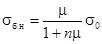
где μ - коэффициент армирования, равный отношению площадей поперечного сечения напряженной арматуры и бетона;
n - отношение соответствующих модулей упругости Eα и бетона Eб, определяемое на момент передачи усилия натяжения арматуры на бетон.
6.9. Модуль упругости бетона Eб допускается определять по графику, приведенному на рис. 1, по величине прочности бетона, определяемой испытанием стандартных кубов. Модуль упругости арматуры Eα из стали класса А-III, А-IIIв и А-IV принимается равным 2 · 105 МПа (2 · 106 кгс/см2).
6.10. На стендах, оборудованных клиновыми устройствами для плавной передачи усилия натяжения арматуры на бетон, модуль упругости бетона на сжатие следует определять по формуле
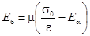
где ε - относительная деформация элемента, измеренная деформометрами клиновых устройств в момент передачи усилия напряженной арматуры на бетон.
Рис. 1. График зависимости модуля упругости бетона от его прочности на осевое сжатие
6.11. Сжимающие напряжения в бетоне в стадии предварительного обжатия не должны превышать величин (в долях от передаточной прочности бетона R0), указанных в СНиП 2.03.01-84, а для элементов, погружаемых в грунт забивкой, степень обжатия бетона не должна превышать 0,4.
6.12. В целях избежания образования продольных трещин в элементах передачу усилия натяжения арматуры на бетон рекомендуется осуществлять ступенями по мере нарастания его прочности в период твердения; при этом минимальное значение передаточной прочности бетона R0 назначается не ниже 40 % проектной марки, а степень обжатия бетона для этой и каждой последующей ступени не должна превышать значений, указанных в СНиП 2.03.01-84.
Примечание. Номенклатура изделий, для которых допускается передача усилия натяжения арматуры на бетон в процессе его твердения, должна быть согласована с проектной организацией.
6.13. Прочность бетона при отпуске изделий с завода должна определяться по результатам испытания стандартных образцов на сжатие.
6.14. Количество изделий, подвергаемых контролю по трещиностойкости, определяется в соответствии с п. 6.25 настоящего раздела.
6.15. Приемка и паспортизация предварительно напряженных элементов со стержневой арматурой осуществляется ОТК и заказчиком (или заводской инспекцией) с составлением ведомостей на испытания элементов и паспортов на партию изделий (см. справочное приложение 23).
6.16. К работе с аппаратурой контроля допускаются работники ОТК, мастера, производители работ, начальники цехов и участков только после сдачи техминимума.
Порядок осуществления контролируемого упрочнения и натяжения стержневой арматуры предварительно напряженных элементов
6.17. Натяжение рабочих стержней следует контролировать по датчикам. Отклонение среднего значения напряжения арматуры от заданного проектом должно быть не более ±5 %, а отклонение напряжения отдельных стержней от среднего значения не более ±10 %.
6.18. Упрочнение и натяжение стержневой арматуры класса А-III рекомендуется производить групповым способом в каркасах. Процесс упрочнения и натяжения арматуры должен включать:
групповое натяжение рабочих стержней в каркасе до напряжения, равного 0,1-0,15 от нормативного сопротивления Rнα арматуры, при котором выравнивают усилия в стержнях гайками тяговых болтов, установленных на опорной диафрагме;
контрольную вытяжку стержней до напряжения, равного 0,4-0,5 от нормативного сопротивления, для обмятия в захватах высадных головок, выпрямления погнутых стержней;
отпуск натяжения донапряжения, равного 0,1-0,2 Rнα, и основное выравнивание усилий в стержнях до тех пор, пока отклонение от среднего значения не будет менее 10 %;
групповое упрочнение и рабочее натяжение арматуры, при этом контроль ведется по датчику, усилие в котором равно или незначительно отличается от среднего значения.
Примечание. В случае применения индивидуально-группового способа натяжения арматуры операции по предварительному выравниванию усилий в стержнях не производятся.
6.19. По данным аппаратуры контроля составляются технологические карты, в которых записываются величины предварительного, рабочего и окончательного напряжений в арматурных стержнях σпр, σ′0 и σ0 (см. справочное приложение 23).
Необходимо также производить запись напряжений в арматуре в процессе выдержки бетонной смеси, тепловой обработки и остывания бетона.
Примечание. При автоматической регистрации в цифровой форме истинных величин напряжений в стержнях арматуры и среднеарифметического значения напряжений для стержней, входящих в одно изделие, а также значении температур, построение технологических карт не производится.
6.20. В процессе тепловой обработки и остывания бетона запись напряжений в стержнях в целях установления величины σ0 производится с интервалом в 1-2 ч в зависимости от режима обработки изделий.
Примечание. В целях наглядности рекомендуется составление графиков, на которых также указываются этапы технологии изготовления изделий (рис. 2).
Рис. 2. Изменение среднего значения напряжений в арматуре в процессе тепловой обработки изделий
Контроль и оценка трещиностойкости изделий статистическим методом
6.21. При оценке трещиностойкости изделий статистическим методом подлежат
установлению требуемый на производство 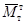 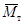
6.22. Требуемый момент трещинообразования определяется по формуле
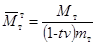
где Мт - момент, воспринимаемый сечением, нормальным к продольной оси элемента, при образовании трещин и определяемый в соответствии со СНиП 3.03.01-87, величина которого указывается в проекте;
v - изменчивость (коэффициент вариации) момента трещинообразования в контролируемой партии;
mт - коэффициент условий работы, характеризующий точность натяжения арматуры;
t - полуширина доверительного интервала, выраженного в долях средней квадратичной ошибки, равная 1,64 для доверительной вероятности 0,95.
6.23. Коэффициент вариации вычисляется по формуле
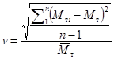
где - среднее значение момента трещинообразования, определяемого по формуле
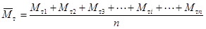
Здесь Мт1, Мт2, ..., Мтi, ..., Мтn - частные значения момента трещинообразования, полученные с помощью аппаратуры контроля и номограмм;
n - число испытаний.
6.24. Коэффициент условий работы вычисляется по формуле
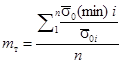
где 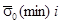
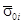
6.25. Необходимое число испытаний n, гарантирующее определение момента трещинообразования с обеспеченностью (доверительной вероятностью) 0,95 и заданной точностью вычисляют по формуле
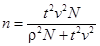
где N - число изделий в партии;
ρ - точность определения момента трещинообразования, равная для основных сооружений первого класса 0,03, второго 0,04 и третьего 0,05.
Примечание. Таблица для определения числа необходимых испытаний изделий по трещиностойкости в зависимости от заданной точности и числа изделий в партии для доверительного интервала, равного 1,64, соответствующего обеспеченности 0,95, приведена в справочном приложении 24.
6.26. Нормируемый момент трещинообразования Мтт определяется по формуле (3), в которой принимаются: t = 1,64; v = 0,135 и mт = 0,9 в соответствии со СНиП 2.03.01-84 и СНиП 3.03.01-87.
6.27. Требуемый на производстве момент трещинообразования выраженный в долях от нормируемого момента Мтт, указанного в проекте, не должен быть менее значения, определяемого по табл. 11 в зависимости от партионного коэффициента вариации и числа испытываемых в партии изделий.
Таблица 11
|
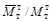 |
||||
|
4 |
6 |
10 |
30 и более |
|
|
0,05 |
0,83 |
0,83 |
0,82 |
0,81 |
|
0,06 |
0,85 |
0,85 |
0,84 |
0,83 |
|
0,07 |
0,87 |
0,87 |
0,86 |
0,85 |
|
0,08 |
0,90 |
0,89 |
0,89 |
0,87 |
|
0,09 |
0,92 |
0,92 |
0,91 |
0,89 |
|
0,10 |
0,95 |
0,94 |
0,94 |
0,91 |
|
0,11 |
0,98 |
0,97 |
0,96 |
0,93 |
|
0,12 |
1,01 |
1,00 |
0,99 |
0,96 |
|
0,13 |
1,04 |
1,03 |
1,02 |
0,99 |
|
0,14 |
1,07 |
1,06 |
1,05 |
1,02 |
|
0,15 |
1,11 |
1,10 |
1,08 |
1,05 |
6.28. В случаях, когда контроль трещиностойкости изделий производится без применения статистического метода, оценка трещиностойкости должна осуществляться в соответствии с ГОСТ 8829-85.
Оценка жесткости изделий. Контроль и оценка однородности и прочности бетона
6.29. Жесткость предварительно напряженных элементов рекомендуется определять согласно указаниям СНиП 3.03.01-87, а необходимый для оценки жесткости начальный модуль упругости бетона в соответствии с п. 6.10 настоящего раздела.
6.30. Контроль и оценка однородности и прочности бетона при сжатии должны производиться с применением предусмотренного ГОСТ 18105.0-80 статистического метода в целях достижения постоянства принятой при расчете изделий обеспеченности нормативных сопротивлений бетона по прочности при сжатии. Изготовление и испытание контрольных образцов производятся по ГОСТ 10180-78.
6.31. Наряду c разрушающими методами определения прочности бетона могут применяться неразрушающие методы испытания бетона в конструкциях (элементах).
6.32. Допускается определение прочности в изделиях ультразвуковым импульсным методом в соответствии с ГОСТ 17624-78 и методом, позволяющим автоматизировать процесс измерения, основанным на определении статического модуля упругости по измеренным упругопластическим деформациям бетона, возникающим в момент передачи контролируемого усилия натяжения арматуры N0 на бетон.
7.1. Настоящие рекомендации, разработанные в соответствии с ГОСТ 12.3.012-77; 12.2.035-78, «Едиными правилами безопасности труда на водолазных работах», а также подразделом «Подводно-технические работы» СНиП 3.07.02-87, должны соблюдаться при участии водолазов в производимых подводно-технических работах.
7.2. Все подводно-технические работы должны выполняться в соответствии с технической документацией, проектом организации строительства и проектом производства работ. При производстве подводно-технических работ с участием водолазов применяется, как правило, вентилируемое водолазное снаряжение. На глубинах до 12 м несложные работы (осмотр сооружения, обследование дна, закрепление канатов, фотографирование, обслуживание телеустановки и др.) надлежит выполнять преимущественно в легководолазном снаряжении.
7.3. Водолазная станция должна комплектоваться водолазным снаряжением и оборудованием в соответствии с приложением 12 «Единых правил безопасности труда на водолазных работах», а также инструментом по номенклатуре и количеству, соответствующим виду и объему предстоящих работ. В необходимых случаях водолазной станции выдается фотокиноаппаратура и подводная телевизионная аппаратура.
При производстве работ на глубинах до 20 м на станции должно быть не менее трех водолазов; от 20 до 45 м - не менее четырех водолазов, а при производстве работ на глубинах свыше 45 м - не менее шести водолазов.
Во время работы станции один водолаз находится под водой, второй стоит у сигнального троса, а третий - у телефона.
Подводную телевизионную установку обслуживает специально подготовленный оператор.
При нахождении в зоне производства работ только одной водолазной станции на ней должен быть второй комплект водолазного снаряжения для страхующего водолаза.
При спусках водолазов на глубину до 45 м обязательно присутствие врача или фельдшера.
Спуски на глубины свыше 45 м должны проводиться только в присутствии врача-специалиста.
7.4. При составлении графиков работы водолазной станции и при выдаче ей заданий следует исходить из действующих норм на подводно-технические водолазные работы:
а) общая продолжительность работы водолаза под водой во время рабочего дня устанавливается в зависимости от глубины погружения по приложению № 2, табл. 1.2 ГОСТ 12.3.012-77;
б) общая продолжительность рабочего дня для водолазов принимается в соответствии с существующим положением;
в) условия выполнения подводно-технических водолазных работ на морях, реках, озерах и водохранилищах считаются нормальными при следующих условиях:
скорость течения воды до 0,5 м/с;
волнение не более двух баллов;
глубина до 12,5 м;
видимость под водой не менее 5 м;
температура воды не менее 12 °С (работа водолаза в летней рубашке);
работа в светлое время суток на чистом грунте;
отсутствие загрязненности воды вредными примесями.
В тех случаях, когда фактические условия производства работ отличаются от указанных выше, в нормы и расценки, а также в единичные расценки следует вводить соответствующие коэффициенты.
7.5. Между ботом и водолазом, работающим под водой, необходимо иметь двустороннюю телефонную связь. При работе в легководолазном снаряжении автономного типа телефонный кабель может одновременно служить и сигнальным тросом. При работе в вентилируемом снаряжении всегда должна быть дублирующая связь при помощи сигнального троса.
При одновременной работе под водой нескольких водолазов в вентилируемом снаряжении должна быть обеспечена телефонная связь между каждым водолазом и ботом.
Общее руководство водолазными подводно-техническими работами должен осуществлять производитель работ, хорошо знакомый с правилами техники безопасности водолазных работ.
Непосредственно работой водолазов руководит старшина водолазной станции.
Труд водолазов на подводно-технических работах должен быть максимально механизирован.
7.6. Для увеличения освещенности и дальности видимости предметов при водолазных работах в случае необходимости следует применять искусственное подводное освещение.
Тип и число ламп, необходимых для освещения рабочего места водолаза, устанавливает на месте производства работ старшина водолазной станции.
Источники освещения необходимо располагать вблизи рабочего места водолаза так, чтобы толща воды, находящаяся в поле зрения водолаза между ним и освещаемым предметом, находилась в тени (не освещалась источником света).
При работах в темное время суток для освещения рабочего места водолаза следует использовать судовые или береговые прожекторы.
Необходимо освещать также места, где проводится подготовка к спуску и спуск водолазов; приборы управления устройствами, обеспечивающими спуск и выполнение работ; поверхность воды над местом работы водолазов.
Инструмент и различные предметы, с которыми приходится водолазу иметь дело под водой, следует окрашивать белой краской.
7.7. Водолазные работы на открытых акваториях морей и водохранилищ следует проводить при волнении до трех баллов, а возле берега и в зоне прибоя до двух.
Водолазные работы в вентилируемом снаряжении можно производить при скорости течения до 1 м/с. При скорости течения более 1 м/с возможность спуска и работы водолаза под водой устанавливает в каждом отдельном случае старшина водолазной станции. При этом необходимо использовать дополнительные технические средства, предусмотренные в проекте производства работ.
Возможность выполнения отдельных видов водолазных работ в зависимости от скорости течения устанавливается согласно справочному приложению 25.
При работах в легководолазном снаряжении автономного типа при скорости течения свыше 0,3 м/с следует пользоваться спусковыми и ходовыми концами.
Если водолазные работы ведут на приливных морях, все подготовительные работы следует выполнять при максимальных скоростях приливного или отливного течения, а спуски водолаза производить при наименьшей скорости течения.
Во время приливно-отливных течений водолазный бот должен быть установлен над объектом работ на кормовых и носовых якорях или бочках.
Водолазные работы у напорных сооружений со сквозными отверстиями (повреждения в подводной части, щели в щитах, шандорах, шлюзовых воротах и др.) следует выполнять с соблюдением тех же правил, что и при работе на быстром течении. Кроме того, должны применяться технические приспособления, ограждающие водолаза от «присоса» к отверстию.
В качестве ограждающего устройства рекомендуется применять защитные беседки. Живое сечение отверстия уменьшают до размеров, безопасных для водолаза (справочное приложение 26) установкой без его участия у отверстия с напорной стороны специальных щитов.
Работы у напорных сооружений со сквозными отверстиями осуществляются в присутствии представителей организации, эксплуатирующей сооружения; при этом должны быть обеспечены безопасные условия работы.
При спуске водолазов в зимнее время и при работе со льда руководитель работ должен принимать меры против переохлаждения спускающихся под воду водолазов, замерзания шлангов, шланговых соединений, травящих и дыхательных клапанов снаряжений и дыхательных аппаратов, по обеспечению безопасности при расположении водолазной техники на льду, по подмене персонала, работающего на открытом воздухе, и оборудованию места обогрева.
Безопасное время нахождения на льду водолазной техники и других технических средств определяется в соответствии с указаниями СНиП 3.07.02-87.
Если на подводно-технических работах предусмотрены подводная сварка и резка металлов, подводное бетонирование или взрывные работы, то в числе личного состава водолазных станций должны быть водолазы, владеющие соответствующей специальностью и имеющие права на производство этих работ.
Взрывчатые вещества и средства взрывания учитываются, хранятся и используются с соблюдением требований Госгортехнадзора СССР. На все взрывные работы должно быть техническое задание, составленное в соответствии с проектом производства работ и утвержденное главным инженером строительства.
Количество водолазов по специальностям для выполнения подводной резки и сварки металла, а также для выполнения взрывных работ определяется в зависимости от конкретных условий.
Механизм, агрегаты и приспособления, а также инструменты, необходимые для предстоящих работ, должны быть заранее подготовлены и проверены в действии.
Перед началом подводно-технических работ с ними должны быть ознакомлены все водолазы и другие работники, связанные с этими работами.
При производстве водолазных работ в условиях, не предусмотренных ЕПБТ-ВР и ГОСТ 12.3.012-77, администрация обязана в каждом конкретном случае разрабатывать специальную инструкцию по технике безопасности, учитывающую специфику этих работ и условия их выполнения. В случае необходимости обследования подводных электрических кабелей, находящихся в комплексе портовых гидротехнических сооружений, их водолазное обследование разрешается лишь после обесточивания и заземления.
Водолазное обследование дна акватории и подводных частей гидротехнических сооружений
7.8. Программу водолазного обследования составляет и согласовывает с заказчиком проектная организация с участием водолазного специалиста.
Программа водолазно-обследовательских работ должна содержать:
а) перечень сооружений и конструктивных элементов, подлежащих обследованию;
б) обоснование задачи и требования, предъявляемые к водолазному обследованию и материалам, получаемым в результате проведенных работ;
в) методы и средства обследования;
г) очередность и сроки обследования.
После получения программы проведения подводного обследования руководитель работ должен подробно ознакомить водолазов с рабочей схемой, технологическими картами и приемами производства работ, а также проинструктировать их по технике безопасности.
Руководитель работ должен учесть, достаточно ли устойчиво сооружение или отдельные его элементы. Если последние неустойчивы и могут угрожать безопасности водолазов, то спуски водолазов должны быть запрещены.
Водолазное обследование следует вести под руководством производителя работ, который оформляет также документацию по результатам обследования (акт, эскизы, чертежи).
Водолазное обследование рационально производить в легководолазном снаряжении автономного типа.
Водолазный контроль за строительством сооружения или его элементов осуществляют последовательно по мере возведения от основания до поверхности воды.
К выполнению обследования допускаются водолазы, имеющие опыт подводно-технических работ и знающие конструкции подводных частей сооружений.
Характер задач, возлагаемых на водолаза при контрольном обследовании, зависит от вида строящегося сооружения.
Во время обследования сооружения в районе спуска водолаза с радиусом 15 м запрещается забивка свай, подъем грузов, перемещение плавсредств и другие работы.
Обследование дна акватории и котлованов
7.9. Дно акватории обследуют для выявления предметов, мешающих нормальной эксплуатации флота, предстоящим дноуглубительным работам или устройству оснований портовых сооружений.
Обследование открытого подводного котлована имеет целью проверить состояние бровки, а также откосов и дна котлована.
Перед началом водолазных работ по обследованию должна быть произведена разметка оси будущего сооружения или границ обследования у существующего сооружения. Объем и характер разбивочных работ определяются из гидрологических условий строительства. Разметка оси возводимого сооружения на защищенной акватории производится путем установки буев, месторасположение которых должно определяться геодезическими методами.
При тяжелых естественных условиях строительства в пределах размеченной акватории должна производиться укладка на дно ходового троса с разметкой через равные (пикетажные) расстояния.
Исходя из размеров площади и требований тщательности её обследования, должны применяться следующие способы работ:
траление акватории придонным тралом с водолазным обследованием отдельных мест;
осмотр дна при непосредственном обходе водолазом по направляющему тросу.
При обследовании больших площадей дна целесообразно применять траление.
Если в ходе работы обнаружено препятствие, тральщики стопорят ход. Тральщик, имеющий на борту водолазную станцию, приближается к месту зацепления трала, а водолаз, спустившись под воду, определяет характер и положение затраленного предмета.
7.10. При водолазном обследовании дна акватории или котлована вне зависимости от характера водолазного снаряжения могут применяться круговой или линейный способы обхода.
При осмотре дна водолаз берет пробы и зондирует грунт металлическим щупом. При погружении щупа в грунт следует обращать внимание на степень прилагаемого усилия, величину и скорость погружения щупа.
Порядок взятия проб и зондирования грунта устанавливает руководитель работы.
При обследовании дна и откосов котлована водолаз должен передавать предусмотренные программой данные, а также сообщать обо всём замеченном по телефону.
Примечание. Самими надежными способами получения характеристики обнаруженных предметов являются просмотр их на экране подводной телеустановки и фотографирование (если позволяют условия). Возможны описания и зарисовка предмета непосредственно под водой, например на алюминиевой шероховатой пластинке обычным карандашом. В крайнем случае данные наблюдений могут быть переданы по телефону для записи, но ни в коем случае нельзя полагаться на память водолаза.
Все обнаруженные на дне предметы отмечают вехами или буями, характеристику предметов и номера вех заносят в журнал обследования.
Обследование подводных частей гидротехнических сооружений
7.11. По окончании устройства каменной постели под сооружения производится контрольное водолазное обследование её, для чего необходимо:
а) промерить ширину основания постели (по поперечникам, разбиваемым не реже чем через 5 м);
б) проверить крутизну относов каменной отсыпки;
в) проверить поперечный уклон поверхности постели;
г) осмотреть каменную постель для выявления недосыпки или пересыпки камня, местных оползней или вымоин в откосах и заиленности.
7.12. При обследовании массивовой кладки нужно руководствоваться указаниями разд. 9 настоящего Пособия.
Если при обследовании массивовой кладки, выполняемой после огрузки или перед сдачей сооружения в эксплуатацию, применяется вентилируемое водолазное снаряжение, водолаза следует передвигать на беседке по горизонтали - по каждому курсу массивов. Для этих работ целесообразно использовать телевизионную установку.
При проверке положения стенки относительно вертикали следует применять уклономеры.
7.13. Подводным обследованием сооружений из массивов-гигантов, уголковых элементов и ряжей устанавливают:
а) ширину и состояние бермы каменной постели;
б) правильность примыкания элемента к ранее установленным;
в) величину швов между элементами конструкции;
г) величину уклона элемента конструкции;
д) состояние подводной поверхности сооружения;
е) наличие вымывания грунта засыпки через щели между уголковыми элементами.
7.14. При обследовании сооружений из массивовой наброски должно быть установлено положение бордюрных массивов, отсутствие отдельных массивов, выпавших из профиля сооружения; поперечный и продольный профили его. Продольный и поперечный профили сооружений из массивовой наброски получают промерами с помощью футштока через 5 м вдоль сооружения и через 1 м поперек него.
7.15. Подводное обследование свайных сооружений производят по каждому поперечному ряду свай.
Шпунтовую стенку обследуют по всей её поверхности. Обследованием свайной конструкции и шпунтовых стенок должно быть установлено:
а) наличие и величина отклонения свай от вертикали (опусканием отвеса, уклономером и т.п.);
б) состояние подводных связей между сваями, точность постановки скреплений, тщательность устройства узлов сопряжений;
в) состояние подводной части верхнего строения;
г) состояние и уклон подпричального откоса;
д) состояние свай и шпунтовой стенки по всей длине сооружения, наличие трещин, выпучин, щелей между шпунтинами;
е) наличие и размеры вымывания засыпки, которое происходит через щели в шпунтовой стенке.
7.16. При обследовании сооружений из оболочек большого диаметра устанавливают:
а) ширину и состояние бермы каменной постели;
б) положение оболочки относительно вертикали;
в) состояние стыков, наличие и величину смещения отдельных звеньев относительно друг друга - при горизонтальном членении и состояние защитного слоя между вертикальными элементами оболочки - при вертикальном членении;
г) состояние поверхности оболочки;
д) соответствие положения нащельников между оболочками рабочим чертежам;
е) наличие мест вымывания грунта из-за сооружения через неплотности в стыках и материала засыпки оболочек через монтажные отверстия;
ж) состояние нижней поверхности верхнего строения.
Оформление результатов водолазного обследования
7.17. В процессе водолазного обследования производитель работ ведет рабочий журнал, в котором последовательно фиксирует данные всех наблюдений. Им же устанавливается форма журнала, отвечающая задачам водолазного обследования.
7.18. Результаты водолазно-обследовательских работ подлежат обязательному актированию (см. справочное приложение 2.)
К акту должны быть приложены эскизы, схемы, чертежи, составленные на основе данных рабочего журнала водолазного обследования, зарисовки, записи разъяснений водолаза, производившего обследование, фотографии и кадры киносъемки, выполненные под водой или с экрана телеустановки.
Все кинофотонегативы регистрируются с указанием даты съемки, наименования объекта, координат места съемки и сдаются на хранение в технический отдел строительной организации.
Подводные земляные работы и расчистка дна
7.19. Для удаления слоя неслежавшегося ила и песка следует вымывать его напорной струей или отсасывать грунтососом.
Первый способ целесообразен при быстром течении воды (более 0,5 м/с) в нестесненных условиях работы. Второй - в местах, где течение отсутствует или свобода действия грунторазмывочных средств ограничена.
Грунты других категорий перед удалением следует рыхлить.
Для размыва грунта под водой следует применять гидромониторы производительностью и напором, соответствующим разрабатываемым грунтам и объему работ согласно указаниям проекта производства работ.
Для отсасывания грунта применяются гидравлические или пневматические грунтососы диаметром 100, 150 и 200 мм. Для облегчения труда водолаза рекомендуется подвешивать грунтосос к любому плавсредству, папильонирующему на якорях.
Гидравлические грунтососы следует применять при работах от уреза до глубин 25-30 м; пневматические грунтососы - на глубинах, больших 5 м.
7.20. Границы уборки грунта водолаз обозначает, протягивая леера между якорями вех.
Работая грунтососом, водолаз выбирает грунт от одной из границ участка и, достигнув требуемой глубины разработки грунта, переводит грунтосос на новое место.
Водолаз должен следить за тем, чтобы горловина грунтососа не засорялась. В случае засорения механизм следует выключить, приподнять и прочистить горловину ломиком, а при необходимости поднять на плавсредство, разобрать и удалить мусор.
Сильно захламленный участок следует очищать с помощью гидромонитора. Размывая грунт, водолаз извлекает из него камни, доски, куски металла и другие предметы и выносит их за границы участка или собирает в корзину и подает наверх, после чего можно начинать работать грунтососом.
Камни массой свыше 50 кг поднимают грейферами или специальными захватами.
После разработки грунта грунтососом или другими средствами механизации водолаз осматривает поверхность дна котлована и в случае необходимости гидромонитором размывает недопустимые возвышения.
7.21. Бурение скважин и шпуров в скальных грунтах производится со специальных плавсредств или водолазами с помощью пневматических перфораторов. После окончания бурения скважины должны быть промыты струей воды и закрыты пробками.
Негабаритные куски взорванной породы можно дробить дополнительными взрывами или пневматическими отбойными молотками.
При производстве подводных взрывных работ рекомендуется применять следующие виды взрывчатых веществ (ВВ): тротил в шашках, алюмотол, гранулотол. Эти же ВВ используются и для расчленения мешающих остатков деревянных, металлических, массивных и бетонных конструкций.
При работе следует руководствоваться «Едиными правилами безопасности при взрывных работах».
При производстве взрывных работ в непосредственной близости от существующих или возводимых сооружений, когда расчетом установлена возможность неблагоприятного воздействия на эти сооружения одновременного взрывания нескольких зарядов, мощность отдельных зарядов и порядок их взрывания должны быть определены в проекте организации строительства.
Для обеспечения безопасности плавсредств и гидротехнических сооружений от действия взрывной ударной волны между ними и местом взрыва должно соблюдаться расстояние, определяемое в соответствии с указаниями ГОСТ 12.1.010.76.
Необходимое количество ВВ должно составлять:
а) для металлических элементов, взрываемых накладными зарядами:
G = 25 S, (8)
где G - масса заряда из ВВ средней мощности, г;
S - площадь поперечного сечения элемента, см2;
б) для массивных каменных или бетонных сооружений, взрываемых зарядами, заложенными в шпуры:
G = кh3, (9)
h - глубина шпуров, м;
к - коэффициент, зависящий от материала сооружения, обычно принимаемый равным 2-3.
Невзорвавшийся (отказавший) по какой-либо причине заряд должен быть найден и ликвидирован. При взрывании дополнительных зарядов масса последних должна быть на 25 % больше массы отказавших.
7.22. При разработке подводных траншей и котлованов необходимо в объемах работ дополнительно учитывать заносимость их влекомыми донными наносами.
По согласованию с проектной организацией при расчистке песчаного или илистого дна посторонние предметы могут быть погружены в грунт на большие глубины с помощью подмыва.
Для удаления свай и стального шпунта следует использовать краны или копры, оснащенные сваевытаскивателями, молотами двойного действия или вибропогружателями.
В некоторых случаях в песчаных грунтах при выдергивании свай эффективен подмыв.
Спиливать деревянные сваи под водой следует специальными пневмопилами или подводным сваерезом. Срезка стального шпунта допускается в исключительных случаях с разрешения вышестоящей организации. При наличии в районе работ кабелей и трубопроводов в последних должно быть снято или снижено давление до 0,2 МПа, а кабели должны быть обесточены.
Отсыпка, ровнение и уплотнение каменных постелей
7.23. При устройстве каменных постелей с участием водолазов осуществляются:
а) очистка поверхности дна, служащего основанием для каменной постели, от ила, рыхлых отложений, топляков и пр.;
б) плановая и высотная разбивка постели;
в) контроль за качеством отсыпки постели;
г) ровнение постели;
д) контрольные промеры при приемке законченных участков постели.
Поверхность грунта, служащая основанием каменной постели, перед отсыпкой камня должна быть очищена от ила и поверхностных рыхлых отложений, если их толщина превышает 0,3 м. Работы по расчистке дна производятся в соответствии с указаниями пп. 7.19-7.22 настоящего раздела.
Разбивку каменной постели следует производить непосредственно перед началом отсыпки камня. При этом на акваторию выносят границы (бровки) каменной постели и закрепляют буями или вехами. Ежедневно проверяют положение разбивочных вех во избежание их смещения.
Примечание. Для детальной разбивки, постоянного контроля и для приемки работ по отсыпке и ровнению каменных постелей целесообразно применять промерно-разбивочное устройство, позволяющее создать на поверхности воды координатную сетку, определяющую плановое расположение отдельных элементов постели.
При отсыпке камня в постель следует вести систематические контрольные промеры, а при необходимости - и водолазное обследование.
При вынужденных перерывах в отсыпке перед возобновлением работ должен быть удален отложившийся на поверхности каменной наброски слой песка или ила.
7.24. Ровнение постели следует начинать сразу после отсыпки до полного проектного профиля одного из участков (длиной 20-25 м).
Перед началом ровнения проводится водолазное или телевизионное обследование отсыпанных участков.
Производятся следующие виды ровнения поверхности каменной постели с отклонением отметок поверхности, см:
грубое................................................... 20
тщательное........................................... 8
весьма тщательное.............................. 3
При грубом ровнении каменных постелей больших площадей следует использовать подводные планировщики.
При ровнении каменной постели водолазами между участками ровнения и участками отсыпки должно соблюдаться расстояние, обеспечивающее безопасность работы водолаза. Это расстояние должно быть не менее 20 м. Водолаз предупреждается по телефону о начале работы по отсыпке.
При грубом ровнении постели снимают отдельные бугры наброски и заполняют ямы. Поверхность наброски проверяют футштоком, имеющим в основании металлический диск диаметром не менее 30 см, или подводным нивелиром.
Для уплотнения грубовыровненной каменной постели могут применяться виброуплотнители, правильность установки которых на постели контролируется водолазами.
7.25. Для тщательного и весьма тщательного ровнения постели следует применять металлическую раму с винтовыми домкратами.
Направляющие рейки рекомендуется применять при малых объемах работ от 100 до 200 м2.
Перед началом ровнения постели с помощью металлической рамы или направляющих реек водолаз устанавливает на границах ровнения подводные маяки.
По установленным маякам водолаз натягивает тонкую проволоку, которая служит ориентиром для установки направляющих реек или рамы для ровнения. Во избежание помех в работе проволоку следует натягивать около одной из бровок, вне выравниваемой части постели.
После установки рамы водолаз подклиничивает камнем её углы и середину продольных балок и планирует поверхность наброски под основание поперечной балки.
Раму при переносе на соседнюю полосу ровнения следует устанавливать одним концом на уже выровненный участок. Поперечная балка должна плотно прилегать к уже выровненной поверхности постели.
Подобная установка рами исключает образование уступов между двумя участками ровнения.
При широкой постели раму устанавливают поперек наброски, что обеспечивает водолазу возможность перемещать камень к бровкам или на откосы наброски на меньшее расстояние.
7.26. Для тщательного и весьма тщательного ровнения постели с помощью контрольной рейки водолаз перемещает её по направляющим рейкам и планирует поверхность наброски под основание контрольной рейки. В качестве реек обычно используют рельсы узкой колеи.
Расстояние между направляющими рейками и длину контрольной рейки рекомендуется назначать равными 5-6 м.
При установке направляющих реек водолазу сверху с помощью специального разбивочного лота, представляющего собой тяжелый груз (массой около 8 кг), центрально подвешенный на стальном канате диаметром 3-4 мм, передают положение в плане одной из реек. Вторую (параллельную) направляющую рейку водолаз укладывает самостоятельно, пользуясь контрольной рейкой.
Передача под воду положения реек в плане с помощью футштока категорически запрещается.
Высотная установка направляющих реек производится по нивелиру. На футштоке прибивается планка, на которую устанавливается и крепится нивелирная рейка. По нивелиру устанавливают концы, а затем проверяют середину реек.
Для плановой и высотной установок направляющих реек следует применять специальный разбивочный понтон длиной, равной длине направляющих реек, и шириной, равной расстоянию между ними. Понтон устанавливается в заданное положение с помощью четырех лебедок, закрепленных по углам понтона.
После установки понтона с него водолазу опускают направляющие рейки и производят их высотную установку.
При установке направляющих реек в местах, где в каменной наброске имеется пересыпка, водолаз выбирает канавки для размещения реек; там, где наброски недостаточно, водолаз выкладывает отдельные бугры камня для укладки реек.
После укладки следует тщательно закрепить рейки, обложив их концы камнем.
При тщательном и весьма тщательном равнении постели водолаз, передвигая контрольную рейку или поперечную балку металлической рамы, первоначально ровняет постель, снимая отдельные бугры наброски и заполняя ямы. При нехватке камня по указаниям водолаза производят дополнительную наброску. Для окончательного выравнивания поверхности постели при заполнении отдельных неровностей, имеющих малую площадь, можно использовать мелкий камень. Укладка мелкого камня по всей поверхности постели не допускается.
В случаях, когда после высотной установки рамы или направляющих реек дополнительно отсыпают камень в постель, перед окончательным выравниванием поверхности ведут повторную нивелировку рамы или направляющих реек.
7.27. Законченное тщательное и весьма тщательное ровнение участка постели проверяют нивелиром по сетке 2×2 м.
По окончании ровнения на незащищенной акватории каменную постель следует немедленно принимать на каждом участке сооружения.
Приемку каменной постели следует производить на основании указаний разд. 9 настоящего Пособия.
Отсыпку песчано-гравелистых смесей при замене слабых грунтов или при устройстве оснований на больших глубинах, недоступных волновому воздействию, следует производить при помощи шаланд с раскрывающимся днищем рассредоточенно и ровными слоями. Равномерность укладки такого основания должна систематически проверяться водолазным обследованием. Местные бугры должны быть устранены гидромониторами или грунтососами. Ровнение поверхности отсыпки должно выполняться в соответствии с указаниями пп. 7.24-7.26 настоящего Пособия.
Срок выдержки песчано-гравелистых отсыпей перед возведением на них сооружений должен соответствовать указаниям проекта (не менее одного штормового сезона).
Установка массивов в правильную кладку
7.28. Установка массивов в правильную кладку должна выполняться в соответствии с указаниями разд. 9 настоящего Пособия.
В состав водолазных работ по установке массивов в правильную кладку входят осмотр и подготовка постели, разбивка фасадной (боевой) линии, установка массивов стенки, укладка берменных и откосных массивов, проверочный осмотр кладки.
Работы по установке массивов начинаются с осмотра откосов и постели и производства контрольных промеров. Если обнаружены размывы, то в размытые места подсыпают камень и повторно выравнивают постель. Осевший ил удаляют напорной струей малой мощности, которая гарантирует сохранность постели, особенно в местах заполнения отдельных её неровностей мелким камнем.
До начала кладки массивов на постели должна быть разбита фасадная (боевая) линия с морской стороны на длину одной секции. Для укладки первого курса массивов отдельных опор или голов оградительных сооружений производится разбивка боевой линии по всему их периметру. Разбивочные работы следует производить при отсутствии волнения (в штиль).
7.29. Подводная разбивка боевой линии осуществляется переносом на постель и закреплением на ней линии надводной разбивки. Под воду переносятся две точки надводной линии по концам разбиваемого участка и между ними натягивается разбивочный трос.
При разбивке боевой линии начального участка сооружения точки надводной боевой линии переносят под воду с помощью специального разбивочного лота-груза массой около 8 кг, центрально подвешенного к стальному тросу диаметром 3-4 мм.
Для переноса точки боевой линии на постель, как правило, применяется следующий метод (рис. 3):
а) плавучий кран устанавливает разбивочный массив на постель, и водолаз проверяет правильность установки. После проверки подъемные ключи не отдают, а строп, на котором подвешены ключи, натягивают;
Рис. 3. Перенос точки боевой линии на постель:
1 - разбивочный лот; 2 - визирный штырь; 3 - боевая линия; 4 - линия кордона (линия визирования); 5-6 - разбивочная рейка; 7 - разбивочный массив
Рис. 4. Разъемная муфта:
1 - труба (d = 2″, l = 1200 мм); 2 - упоры (α = 16-18 мм); 3 - муфта (δ = 1 мм)
б) на строп над водой крепится специальное устройство в виде разъемной муфты с приваренной к ней трубой (рис. 4). Муфту устанавливают таким образом, чтобы труба располагалась горизонтально под прямым углом к боевой линии;
в) в трубу вводят разбивочную рейку (деревянную или стальную), на которой имеются визирный штырь, устанавливаемый по линии кордона, и метка для опускания разбивочного лота;
г) установив визирный штырь по линии кордона, по метке на рейке опускают разбивочный лот, под которым водолаз забивает штырь или устанавливает бетонную плиту массой до 100 кг со штырем, после чего разбивочный массив поднимают на поверхность.
Надводные работы при разбивке производят со шлюпки или небольшого катера.
Если сооружение частично возведено, одну точку переносят на концевой участок возведенной части сооружений, а вторую - на постель.
Для переноса под воду точки боевой линии со стороны возведенной части сооружения разбивочную рейку укладывают на крайнем массиве верхнего курса. Для закрепления этой точки на возведенной части сооружения забивают клин в ближайший вертикальный шов между массивами нижнего курса в нижней его части.
Между штырями или между штырем и клином, обозначающими точки боевой линии, водолаз натягивает разбивочный трос.
7.30. При установке массивов плавучий кран должен быть жестко раскреплен на якорях и береговых швартовых тросах.
Установку массивов следует производить с применением подводной телевизионной установки, корректируя и контролируя её точность по изображению на экране.
До опускания массива водолаз опускается под воду и для ориентировки крановщика ставит буек у места установки массива, а затем поднимается вверх.
Примечание. Водолазу запрещается находиться под водой во время опусканий массива в воду.
Ориентируясь по поставленному водолазом буйку, массив опускают под воду. Когда до заданного положения массива по высоте остается примерно 1 м, кран поворотом или выносом стрелы прижимает устанавливаемый массив к ранее установленному и в таком положении опускает его до заданной отметки, не сбрасывая полностью нагрузку во избежание самопроизвольного разворота ключей в ключевых отверстиях массива.
Далее крановщик работает по указанию водолаза. Категорически запрещается проводить какие-либо операции без указания находящегося под водой водолаза.
7.31. Первый массив стенки следует укладывать на боевой линии - у начала сооружения или у осадочного шва стенки; первый массив опоры или головы сооружения укладывают на углу или по центру опоры или головы. В случае, когда конец строящегося сооружения примыкает к существующему, укладку массивов начинают от места примыкания.
При возведении стенок, имеющих в нижнем курсе по ширине два или более рядов массивов, в первую очередь укладывают массивы морского ряда.
Укладка первого массива должна производиться с особенной точностью с обязательной проверкой с помощью нивелирования высотных отметок его четырех углов.
Ориентиром для водолаза при установке первого курса массивов служит натянутый под водой разбивочный трос.
В процессе укладки первого и всех последующих курсов с помощью нивелира определяются фактические отметки верха массивов и сравниваются с отметками по рабочим чертежам.
При наличии отклонений по высоте отдельных массивов первого курса свыше допусков их поднимают и ровняют постель, после чего производится повторная укладка массивов.
При установке последующих курсов водолаз ориентируется по ранее установленным массивам.
После установки каждого массива водолаз передает наверх данные о положении массива относительно разбивочного троса или нижележащих массивов и о величине вертикального зазора (шва) между установленным и предыдущим массивами в двух точках: вверху и внизу.
7.32. Установку каждого курса массивов следует оформлять следующими документами:
а) чертежом-планом курса с указанием номера каждого массива, даты его изготовления и даты установки, а также планового положения каждого массива относительно боевой линии (для первого курса) и относительно массивов (для остальных курсов);
б) журналом и чертежом для производственных нивелировок;
в) актами о всех технических обстоятельствах, происшедших в процессе укладки первого курса (перекладка массивов, подсыпка постели и т.д.);
г) при возможности фотографиями курса, сделанными выборочно по одной - две на секцию, под водой или с телеэкрана.
Особые участки массивовой кладки (концевые и угловые, сопряжения с существующими сооружениями, места изменения профиля, грунтовых условий и т.д.) должны выполняться особо тщательно в связи с тем, что указанные участки подвержены большей деформации.
Качество кладки на этих участках обязательно должно быть проверено водолазом 1-го класса или с помощью телевизионной установки.
7.33. По окончании огрузки каждого участка стенки, если огрузка предусмотрена проектом, должен быть произведен проверочный водолазный или телевизионный осмотр массивовой кладки.
Если осадка кладки превышает проектную или имеются отклонения, превышающие допуски, дальнейшие работы следует выполнять только по согласованию с проектной организацией.
Результаты осмотра фиксируются актом.
7.34. Укладывать защитные массивы на бермы и откосы постели следует после установки первого курса массивов стенки на каждом участке работы с соблюдением таких же величин швов между массивами.
Предварительно должно быть проверено состояние бермы и откосов постели, подлежащих покрытию защитными массивами, и в случае необходимости дополнительно уложен камень и произведено ровнение откоса и бермы.
Укладывать массивы на бермы и откосы постели можно, не разбивая осей каждого ряда.
Укладку массивов на берме постели следует начинать с ряда, непосредственно прилегающего к стенке, при этом берменные массивы необходимо укладывать вплотную к массивам первого курса.
Укладку массивов на откосе постели следует начинать по разметке с нижнего ряда.
При установке массивов на откосы постели следует пользоваться ключевыми захватами с гибкими тягами или подъемными ключами со штангами различной длины.
При укладке массивов на бермы и откосы постели должно быть обеспечено примыкание нижних ребер верхних массивов, расположенных на откосе, к нижним ребрам массивов на берме.
В процессе укладки массивов в «Журнале операций с массивами» фиксируются все операции: установка в сооружение, перестановка, перекладка и т.д.
После окончания работ по укладке массивов производится контрольное водолазное обследование всего сооружения (см. п. 7.12).
При укладке массивов в правильную кладку в условиях низких температур должны соблюдаться требования п. 14.8 настоящего Пособия.
Работы, выполняемые при возведении сооружений из массивов-гигантов, оболочек большого диаметра, уголковых стенок и ряжей, а также свайных фундаментов
7.35. Работы по возведению сооружений из массивов-гигантов, оболочек большого диаметра, уголковых стенок, а также свайных фундаментов выполняются в соответствии с указаниями разделов 9 и 4 настоящего Пособия.
При строительстве сооружений из массивов-гигантов, оболочек большого диаметра и уголковых стенок подготовку основания ведут в соответствии с пп. 7.19-7.27 настоящего раздела. После приемки основания водолазы участвуют в процессах строительства.
Водолаз опускается для наблюдения за установкой после того, как массив-гигант спущен на воду, подведен к месту установки и погружен в воду настолько, что нижняя часть его близка к грунту.
При этом водолаз, докладывая по телефону о положении опускаемого массива относительно основания и ранее установленных массивов, следит за перемещениями, которые осуществляют сверху.
Когда массив-гигант примет правильное положение, водолаз требует застопорить передвижку и некоторое время следит за поведением массива. Если последний не меняет принятого положения, водолаз проверяет плотность прилегания его к соседнему массиву-гиганту, замеряет с каждой стороны ширину берм каменной постели, определяет состояние ее откосов и, убедившись в правильной установке массива-гиганта, выходит наверх. После этого загружают массив-гигант балластом и опускают на основание.
Если установленный массив-гигант или ряж после посадки на основание займет неправильное положение или водолазом будут обнаружены неплотности в прилегании днища к постели по периметру, то балласт частично удаляют, чтобы устанавливаемый массив всплыл.
После того, как массив-гигант всплывет, водолаз устраняет замеченные дефекты и обеспечивает вторичную установку.
7.36. После опускания блока уголковой стенки или оболочки большого диаметра на каменную постель водолаз контролирует плотность опирания по контуру плиты или торца оболочки и правильность швов между стыкуемыми элементами. При необходимости крановщик по указанию водолаза производит подъем, разворот, сдвижку и опускание элемента. Контроль может осуществляться и с помощью телевидения.
7.37. Перед погружением железобетонного шпунта в необходимых случаях водолаз осматривает и расчищает грунт.
7.38. При заделке вертикальных швов между элементами уголковых стенок и больверков из железобетонного шпунта грунтонепроницаемыми завесами или деревянными щитами водолаз крепит их и контролирует плотность прилегания.
7.39. При устройстве свайных фундаментов водолаз расчищает грунт в месте забивки свай и свай-оболочек, осуществляет их контрольные осмотры, фиксирует отклонения от проектного положения, замеряет расстояние между ними, отмечает деформации, а также проверяет целостность материала.
При устройстве сложных свайных фундаментов (например, при забивке свай в основании цилиндров, при устройстве ячеистых конструкций из металлического шпунта и т.п.) водолазы устанавливают под водой металлические кондукторы и направляют сваи и шпунт при их опускании в соответствующую ячейку кондуктора.
При возведении сооружений на деревянных сваях водолаз выполняет следующие работы: спиливает сваи под водой, нарезает шипы, устанавливает стяжки, схватки, раскосы, насадки и др.
Перед спиливанием голов деревянных свай водолаз, работающий с беседки, делает на них (через каждые две-три сваи) отметку места среза по спущенному футштоку или лоту, затем к сваям по отметкам крепит дощатый шаблон, который и определяет места среза остальных свай. Для спиливания свай рекомендуется применять пневматические пилы.
Деревянные сваи в основании спусковых дорожек спиливают по наклонной плоскости по шаблону, установленному под определенным углом к горизонту воды. При этом водолаз прибивает к сваям доску на удобной для него высоте и работает с этой доски или при небольшой высоте свай - прямо с грунта.
Схватки и подкосы следует устанавливать под водой также по предварительно снятым шаблонам.
Для постановки подкосов делается подводная врубка. Водолаз ножовкой должен подпилить сваю не более чем на четверть её диаметра в месте упора подкоса и вырубить топором кусок сваи. Окончательную подгонку подкоса производят при постановке его на место.
7.40. При подводном монтаже сборных железобетонных конструкций крановщик по указанию и под контролем водолаза устанавливает сборные элементы. Водолаз обеспечивает подводное обследование и замер фактического положения стыкуемых элементов конструкций, а также все работы по их омоноличиванию.
7.41. В процессе возведения сооружений на сваях-оболочках диаметром более 1,6 м и оболочках большого диаметра водолаз в случае необходимости опускается под воду внутрь оболочки, обследует грунт, определяет состояние оболочки после погружения, положение ножа, качество уложенной под водой бетонной пробки и выясняет другие вопросы по указанию производителя работ.
Водолазу спускаться в скважину после её бурения ниже ножа оболочки категорически запрещается. Все работы с оболочкой во время нахождения в ней водолаза должны прекращаться.
Подводное бетонирование
7.42. Подводное бетонирование должно производиться методом, предусмотренным в проекте организации строительства в соответствии с указаниями действующих инструкций, настоящего раздела Пособия, СНиП 3.03.01-87.
При подводном бетонировании необходимо обеспечить такие плотность и жесткость опалубки или другого ограждения, которые исключают возможность размыва возводимой кладки и вытекание из неё цементного раствора или цементного теста. Задачей водолазов при бетонировании методами вертикально перемещающейся трубы (ВПТ) и восходящего раствора (ВР) является подготовка места бетонирования, установка опалубки и заделка мелей, установка при необходимости труб, а также наблюдение за укладкой бетона (метод ВПТ) и отсыпкой камня (метод ВР).
7.43. Подготовка бетонируемого участка включает следующие работы:
а) очистку бетонируемого участка от захламленности;
б) промывку поверхности старого бетона гидромонитором;
в) удаление металлическим скребком разрушенного поверхностного слоя ранее уложенного бетона;
г) устройство борозд на поверхности ранее уложенного бетона;
д) удаление имеющихся на поверхности пятен (нефть, мазут) срубкой слоя бетона.
7.44. Установку опалубки следует производить при помощи кранов.
Установив опалубку, водолаз должен осмотреть и тщательно уплотнить просмоленной паклей все стыки щитов (плит-оболочек) и все места примыкания опалубки. Большие щели забивают обернутыми паклей деревянными клиньями. При возможности опалубку следует уплотнять изнутри блока.
При устройстве опалубки в виде шпунтового ограждения водолаз проверяет плотность шпунтовых замков и мест примыкания шпунта к старому бетону.
При обнаружении расхождений в замках закладывают жгут из просмоленной пакли. Уплотнение примыканий производится с применением брусьев, досок, брезента и т.п.
7.45. Водолаз помогает устанавливать трубы для подачи бетонной смеси (метод ВПТ) или раствора (метод ВР). При методе ВПТ трубы устанавливают на дно бетонируемого блока, при методе ВР низ трубы должен отстоять от дна блока на 10-15 см.
Во время подачи бетонной смеси и раствора по указанным методам водолаз систематически контролирует состояние опалубки, находясь снаружи бетонируемого блока, следя за появлением цементного раствора из стыков и щелей в опалубке.
При обнаружении деформаций опалубки или выхода раствора через её стыки водолаз немедленно докладывает об этом прорабу и приступает к укреплению опалубки и заделке неплотностей.
По окончании бетонирования водолаз проверяет состояние поверхности забетонированного блока.
При подводном бетонировании укладка бетона должна осуществляться с возможно меньшим контактом с водой. Бетонирование отдельного блока должно проводиться без перерыва технологической операции. Разбирать опалубку подводных блоков можно только после достижения их бетоном следующих показателей прочности:
2,5 МПа и более - если сооружение не подвергается волновому воздействию и сразу не нагружается;
100 %-ной проектной прочности - если сооружение сразу же подвергается нагрузкам.
7.46. При укладке бетона в мешках подвижность бетонной смеси должна соответствовать осадке конуса 6-8 см.
Чисто промытые сухие мешки из прочной, но редкой ткани, допускающей свободное проникновение цементного раствора, заполняют бетонной смесью не более чем на 2/3 объема. Масса каждого мешка с бетонной смесью в зависимости от условий укладки не должна превышать 50 кг.
Мешки с бетонной смесью следует подавать водолазу при помощи спуско-подъемных устройств.
Мешки с бетонной смесью водолаз должен укладывать широкой плоскостью плотно один к другому с перевязкой швов между ними, тщательно распределяя их содержимое для заполнения имеющихся неровностей.
Сварка и резка металлов под водой
7.47. К выполнению водолазных работ по электрической сварке и резке, а также по электрокислородной резке металла допускаются водолазы, окончившие водолазную школу или курсы и получившие дополнительную специальность сварщика-резчика.
Перед началом ответственных сварочных работ следует проверять квалификацию подводных сварщиков испытанием в лаборатории сваренных ими под водой образцов.
Металлические элементы в подводных условиях свариваются электродуговым способом. Для сварки рекомендуется применять полуавтомат марки А 1660 (справочное приложение 27).
Резать металлические конструкции на транспортабельные блоки рекомендуется электрокислородным способом.
Электродуговая резка является недостаточно эффективной и характеризуется низким качеством реза, поэтому данный способ можно применять в исключительных случаях.
7.48. Водолазная станция, производящая сварку металла под водой электродуговым способом, должна иметь не менее трех водолазов-сварщиков, обязанности которых, как правило, распределяются следующим образом:
первый водолаз работает под водой;
второй водолаз держит сигнальный трос и обеспечивает спуск и подъем первого водолаза;
третий водолаз поддерживает телефонную связь с первым водолазом, по его распоряжению включает и выключает сварочный ток, следит за показаниями контрольно-измерительных приборов.
При резке металла электрокислородным способом водолазная станция должна иметь не менее трех водолазов-резчиков и одного специалиста по водолазным работам, которому поручается обслуживание установки (кроме электросварочного агрегата, обслуживаемого электромехаником).
7.49. Для выполнения вспомогательных работ в распоряжение старшины водолазной станции выделяются подсобные рабочие в количестве, определяемом объемом, видом предстоящих работ и условиями, в которых они ведутся.
При размещении оборудования для подводной сварки (резки) металла следует руководствоваться следующим:
а) сварочный агрегат размещать не ближе 6 м и не далее 15 м от места спуска водолаза;
б) все баллоны должны быть надежно закреплены на своих местах;
в) рубильник для включения (выключения) сварочного тока и контрольные приборы устанавливать поблизости от водолаза-телефониста.
7.50. При сварке в условиях недостаточной естественной освещенности рабочего места водолаза должны применяться источники света, позволяющие водолазу видеть шов при обрыве дуги. При резке в подобных условиях полезно иметь второй светильник, подсвечивающий рез с обратной стороны.
Для электрокислородной резки и электросварки металла под водой используется, как правило, постоянный ток. Технические характеристики автономных электросварочных агрегатов постоянного тока, получившие наибольшее распространение на водолазных работах, приведены в справочном приложении 28.
Для подводной электросварки следует применять электроды со специальным покрытием (обмазкой), обеспечивающим устойчивое горение дуги в водной среде. Обмазка электрода должна быть прочной. Технические характеристики электродов для подводной сварки приведены в справочном приложении 29.
Важное значение для качества подводной сварки имеет подготовка к предстоящим работам. При этом должно быть тщательно проверено качество подводных электродов и оборудования, проведена пригонка и зачистка поверхностей свариваемых частей, обработка кромок и т.п. В процессе работы необходимо осуществлять постоянный контроль за установленным порядком и режимом сварки.
7.51. При определении режима подводной электросварки следует руководствоваться табл. 12.
Таблица 12
|
Толщина металла, мм |
Диаметр электрода, мм |
Сварочный ток, А |
|
|
Прихватка листов |
6 и более |
4 |
200-230 |
|
Сварка листов |
4-6 |
4 |
200-230 |
|
-»- |
6-10 |
5 |
250-300 |
|
-»- |
> 10 (I слой) |
5-6 |
300-400 |
|
-»- |
> 10 (II слой) |
5-6 |
300-400 |
|
Заварка трещин без разделки |
3-5 |
4 |
200-220 |
|
То же |
6-8 |
5 |
250-270 |
|
-»- |
> 6 |
5 |
270-300 |
|
Заварка трещин с разделкой |
6-8 |
4 |
200-220 |
|
То же |
> 8 (I слой) |
4 |
220-240 |
|
-»- |
> 8 (II слой) |
6 |
250-300 |
|
Выплавка поверхности |
4-6 |
4 |
200-240 |
|
-»- |
6-12 |
5 |
250-300 |
|
-»- |
> 12 |
6 |
300-380 |
7.52. Ввиду того, что из-за неудовлетворительной видимости сварка стыковых соединений в подводных условиях затруднительна, сварку встык следует (если это возможно) заменять сваркой внахлестку, т.е. приваркой планок, накладок и т.п.
При сварке соединений внахлестку при плохой видимости кромка листа служит для подводного сварщика направляющей, облегчающей ему сохранение правильного направления шва.
Для соединения внахлестку листы толщиной до 8 мм достаточно сваривать однослойным швом, а при толщине листов более 8 мм шов должен состоять из двух и более слоев.
7.53. Сварочные швы при подводной сварке металла располагают в такой же последовательности, как и при сварке на воздухе. При израсходовании электрода водолаз должен осмотреть наплавленный слой и исправить замеченные дефекты. По окончании наплавку слоя необходимо при помощи зубила и стальной щетки удалить с него шлак и только после этого наплавлять следующий слой.
7.54. Секции уложенного под водой трубопровода соединяют отрезками трубы или бугелями, которые должны привариваться к соединяемым секциям основного трубопровода многослойным швом. Для уменьшения зоны потолочной сварки следует применять фигурный бугель.
После приварки бугеля к трубопроводу стяжной болт снимают, а зазор между концами бугеля заваривают, как стыковое соединение, либо (если зазор более 5 мм) приваривают в этом месте металлическую вставку.
7.55. Приваривать планки (накладки и т.п.) нужно следующим образом. Планку, которую требуется приварить, плотно подгоняют к месту при помощи клиньев и заранее приваренных скоб. Затем место сварки зачищают до металлического блеска, а планку в нескольких местах прихватывают с таким расчетом, чтобы после удаления клиньев кромка планки не отходила. После этого планку обваривают однослойным или многослойным швом в зависимости от толщины металла планки.
7.56. В связи с тем, что методы контроля качества сварки не применимы для подводных условий, проверка качества подводной сварки, как правило, ограничивается внешним осмотром. В предусмотренных проектом производства работ случаях (при сварке трубопроводов и т.п.) сварное соединение испытывается на газо- или водонепроницаемость опрессовкой.
7.57. При подводной резке металла электрокислородным способом применяют специальные пустотелые электроды с особым покрытием.
В табл. 13 даны примерные режимы подводной электрокислородной резки.
Таблица 13
|
Рабочий ток, А |
Рабочее давление кислорода, МПа |
|
|
10 |
200 |
0,15-0,20 |
|
15 |
220 |
0,20-0,30 |
|
20 |
250 |
0,30-0,45 |
|
30 |
275 |
0,45-0,55 |
|
40 |
300 |
0,55-0,65 |
|
50 |
320 |
0,60-0,65 |
|
60 |
350 |
0,65-0,70 |
|
80 |
350 |
0,70-0,90 |
|
100 |
350 |
0,90-1,10 |
|
Примечание. Табл. 13 составлена для резки в вертикальном и горизонтальном положениях на глубине 5 м при длине кислородного шланга 30 м. Давление кислорода должно быть повышено на 20-30 %, если деталь разрезается снизу; 0,1 МПа при увеличении глубины на каждые 10 м сверх 5 м; 0,175 МПа на каждые 30 м длины кислородного шланга сверх 30 м. |
||
Перед началом резки необходимо обследовать объект и на основании данных обследования составить план резки, предусматривающий расположение и последовательность резов с учетом обеспечения безопасности водолаза-резчика при возможном падении разрезаемых конструкций, работу по резке организовать строго в соответствии с планом.
К плану следует приложить необходимые чертежи и эскизы разрезаемой конструкции, а также её узлов с указанием линий резов. С планом должны быть ознакомлены все водолазы, участвующие в резке.
7.58. Перед тем как приступить к резке металла, водолаз-резчик спускается под воду, внимательно осматривает место резки, очищает линию реза и, если нужно, устанавливает направляющие по линии намеченного реза.
Если у водолаза возникает опасение, что отрезаемая часть конструкции в процессе резки может отвалиться, он должен немедленно прекратить работу и сообщить об этом руководителю работ.
Для облегчения резки и достижения правильного направления реза в условиях плохой видимости следует пользоваться направляющими в виде деревянных брусьев, планок и шаблонов соответствующей формы, закрепляемых вдоль линии намеченного реза. При перерезании подводного трубопровода в качестве направляющего может быть использован пеньковый трос, обведенный вокруг трубы около линии намеченного реза.
При резке стальных шпунтовых конструкций в поперечном направлении особое внимание должно быть уделено перерезанию замковых соединений, где контроль за резом усложняется.
Качество подводной резки (отсутствие пропусков) проверяют внешним осмотром, при возможности подсвечивая линию реза подводным светильником. Непрерывность реза можно проверять также щупом из толстой проволоки, ножовочным полотном и т.п.
При необходимости проверка качества подводной резки и сварки, а также контроль за действием водолаза в процессе работы могут осуществляться с помощью подводной телевизионной установки.
При резке емкостей и других металлоконструкций, имеющих горюче-смазочные материалы, необходимо принять меры, предупреждающие воспламенение и взрывы этих материалов.
При резке емкостей, имеющих воздушные подушки, последние ликвидируются путем заполнения водой.
Если невозможно заполнить подушки водой, содержащийся в них газ берется на анализ для определения его состава.
При концентрации в воздушной подушке взрывоопасных газов, не позволяющих вести огневой способ резки конструкции, в самой высокой точке емкости сверлят отверстия и вентилируют её.
Если в результате принятых мер опасность взрыва не ликвидируется, емкость заполняют углекислым газом или металлоконструкции разъединяют другим способом.
7.59. К подводной электрической сварке и резке водолазы должны допускаться только в исправном снаряжении, в водолазной рубахе или гидрокомбинезоне с приклеенными рукавицами. Производить электросварку и резку в потертых, имеющих заплаты водолазных рубахах (гидрокомбинезонах) запрещается. Производство сварочных работ и работ по резке без телефонной связи с водолазом-сварщиком также запрещается.
8.1. Настоящий раздел распространяется на работы по возведению и реконструкции оградительных сооружений откосного профиля из каменной наброски и фасонных блоков (тетраподов).
8.2. Геодезические и разбивочные работы должны выполняться в соответствии с требованиями разд. 8 и 7 настоящего Пособия.
Приемка, хранение и контроль качества материалов и изделий
8.3. Камень, применяемый для возведения морских оградительных сооружений по своим характеристикам (прочность, морозостойкость, коэффициент размягчаемости и др.), должен удовлетворять требованиям проекта, ВСН 5-84/Минморфлота «Применение природного камня в морском гидротехническом строительстве», а также настоящего раздела Пособия.
Камень по крупности делится на пять категорий, которые приведены ниже.
Категория камня Масса камня
I................................................. От 5 до 100 кг
II................................................ От 100 до 1500 кг
III.............................................. От 1,5 до 4 т
IV.............................................. От 4 до 8 т
V................................................ От 8 т и более
Сортировка камня по крупности, как правило, должна производиться в карьере. Камни массой до 5 кг относят к карьерным отходам.
Размеры и форма камней, а также процентное содержание камней по категориям устанавливаются в зависимости от их назначения проектной организацией по согласованию с заказчиком и подрядчиком.
Камни не должны иметь признаков выветривания, прослоек глины, гипса и других размокающих, растворимых или рыхлых включений, видимых расслоений и трещин. Камень, предназначенный для отсыпки в ядро сооружения, может быть при соответствующем обосновании в проекте несортированным, с содержанием камней массой до 5 кг не более 5 %.
Каменные глыбы, предназначенные для образования верхних слоев откосов и гребня сооружения по массе и размерам должны удовлетворять требованиям проекта.
Значения удельного веса камня из осадочных пород приведены ниже.
Марка камня Удельный вес, кН/м3, не менее
150.......................................................... 18
300.......................................................... 21
600.......................................................... 23
800.......................................................... 24
1000........................................................ 25
Удельный вес камня изверженных и метаморфических пород независимо от марки должен быть не менее 25 и 23 кН/м3 соответственно.
8.4. Фасонные блоки следует изготавливать на заводах железобетонных и бетонных изделий или на полигонах строительной организации.
В каждом случае необходимость изготовления на том или другом предприятии должна подтверждаться технико-экономическим обоснованием.
Фасонные блоки необходимо изготавливать в соответствии с рабочими чертежами, в которых должна быть указана марка бетона по прочности, водонепроницаемости и морозостойкости в соответствии с ГОСТ 26633-85 на бетон и материалы для его приготовления.
При изготовлении фасонных блоков следует руководствоваться указаниями СНиП 3.03.01-87 и СНиП 3.07.02-87.
Для улучшения свойств бетонной смеси и повышения долговечности фасонных блоков следует применять пластифицирующие, воздухововлекающие и газообразующие добавки в соответствии с рекомендациями разд. 5 настоящего Пособия.
При проектной марке бетона Мрз 200 и более применение указанных добавок обязательно.
8.5. Крупный заполнитель должен испытываться на морозостойкость в бетоне. Не допускается применение гравия для бетона с маркой по морозостойкости Мрз 200 и выше. Крупный заполнитель для бетона всех зон не должен обладать реакционной способностью по отношению к щелочам цемента. Определение указанной способности должно производиться в соответствии со специальными рекомендациями. Зерновой состав смеси крупного заполнителя должен определяться экспериментально по наибольшей плотности и удельному весу.
Не допускается применение природных гравийно-песчаных смесей без предварительного рассева на гравий и песок.
Полученные при разделении смесей гравий и песок каждый в отдельности должны удовлетворять предъявляемым к ним требованиям.
Использование песков, не удовлетворяющих требованиям ГОСТа, допускается при условии проведения специальных лабораторных исследований и технико-экономического обоснования.
Вода для приготовления и поливки бетона должна удовлетворять требованиям ГОСТ 23732-79.
8.6. Фасонные блоки следует изготавливать в инвентарных, преимущественно металлических формах, которые перед бетонированием необходимо смазывать. Для смазки форм допускается применять меловой, известковый или трепельный растворы, а также мазут и олеонафт.
Формы, арматура и закладные части перед бетонированием должны быть освидетельствованы с последующей записью всех данных в журнале изготовления фасонных блоков. Освидетельствование необходимо производить как для проверки правильности форм, обеспечивающих точность размеров, так и для проверки их смазки и прочих подготовительных работ. Одновременно должны быть проверены правильность расстановки и надежность крепления арматуры и закладных частей.
8.7. Точность форм и установки арматуры при изготовлении тетраподов определяется требованиями ГОСТ 20425-75.
8.8. Водоцементное отношение бетонной смеси для изготовления тетраподов должно быть при использовании портландцемента 0,45-0,50 и глиноземистого цемента 0,50-0,55.
Подвижность бетонной смеси принимать в пределах от 2 до 4 см.
Изготовление тетраподов целесообразно производить на вибростолах при непрерывной подаче бетонной смеси. Допускается также уплотнение бетонной смеси глубинными вибраторами, в этом случае бетонирование производится горизонтальными слоями постоянной толщины.
Укладку каждого слоя необходимо заканчивать до начала схватывания предыдущего слоя. Толщина слоев бетонной смеси при укладке не должна превышать 1,25 длины рабочей части вибратора.
Освобождать тетраподы от верхней и боковой опалубки допускается после достижения бетоном не менее 25 %-ной проектной прочности.
После изготовления на поверхности каждого тетрапода должны быть указаны номер, тип и дата изготовления.
Подъем и освобождение тетраподов от нижней опалубки разрешается по достижении бетоном 70 %-ной проектной прочности.
Во избежание возникновения изгибающих напряжений в усеченных конусах тетраподов в период твердения и набора прочности в парке изготовления следует помещать днище формы (нижнюю часть опалубки) на песчаную насыпь, обеспечивающую опирание днища по всей его поверхности, с этой же целью для тетраподов массой 25 т и более рекомендуется смазанное днище формы устанавливать на свежеуложенный слой тощего бетона и использовать для последующих тетраподов оставшийся в бетоне оттиск.
8.9. Тетраподы сразу же после окончания бетонирования и распалубки должны быть укрыты для предохранения от высыхания и непрерывно поддерживаться во влажном состоянии в течение срока, необходимого для приобретения бетоном проектной прочности.
Примечание. Срок приобретения проектной прочности определяется в зависимости от температурных условий в период твердения испытанием контрольных образцов. Бетонные изделия независимо от температурных условий, в которых происходило твердение, должны быть выдержаны в воздушно-влажных условиях не менее сроков, установленных в разд. 5 настоящего Пособия.
При изготовлении фасонных блоков следует вести журнал бетонных работ по форме, приведенной в справочном приложении 2.
8.10. Приемка изготовленных тетраподов производится на основании их осмотра и обмера, записей в журнале работ, а также данных лабораторных испытаний бетона и его составляющих.
Изготовленные тетраподы не должны иметь отклонений от проектных величин, превышающих указанные в ГОСТ 20425-75.
Не допускаются для укладки тетраподы, имеющие отколы бетона, обнажающие арматуру и имеющие трещины у основания усеченного конуса или вдоль его образующей по всей длине.
При приемке тетраподов комиссия должна указать в акте их номера, даты распалубки и поступления на склад, результаты испытания бетонных кубиков и характеристику тетраподов по данным осмотра и обмера.
Кроме того, должно быть общее заключение о качестве тетраподов и решение о допустимости укладки их в сооружение.
Устройство ядра сооружения из каменной наброски. Требования к производству работ
8.11. Отсыпка камня в ядро сооружения должна производиться в соответствии с рабочими чертежами и проектом производства работ. В рабочих чертежах отсыпки камня в ядро сооружения должны быть:
а) план с проектной осью, а также верхними и нижними бровками, привязанными к основным разбивочным линиям сооружения;
б) соответствующие плану поперечные профили, принятые для производства работ со строительными подъемами, рассчитанными на предполагаемые осадки сооружения, а также профили ядра по проекту;
в) требования, предъявляемые проектом к качеству камня (масса, форма, марка по прочности, марка по морозостойкости и др.).
Детальную разбивку ядра сооружения (оси верхних и нижних бровок) надлежит производить непосредственно перед началом работ по отсыпке камня.
8.12. Качество камня, его пригодность для возведения сооружения, а также выбор соответствующих карьеров должны быть подтверждены соответствующими документами, согласованными с заказчиком и проектной организацией; если они отсутствуют, то перед началом строительства должна быть проведена согласованная лабораторная проверка качества камня и определена его пригодность для оградительных сооружений.
В период строительства должен вестись периодический лабораторный контроль качества камня, устанавливаемый в зависимости от однородности и объемов работ, но не реже чем на каждые 30000 м3 камня в партии.
8.13. Перед отсыпкой ядра сооружения основание его должно быть освидетельствовано с составлением акта водолазного обследования и плана промеров глубин. При выявлении дефектов в подготовке основания акт должен содержать мероприятия по их исправлению. Способ отсыпки должен исключать возможность повреждения падающими камнями слабого основания.
При наличии в основании не предусмотренных проектом слабых или легко размываемых грунтов необходимость устройства обратного фильтра определяется совместно с проектной организацией. Ядро сооружения отсыпается, как правило, из несортированного камня различной крупности по подготовке из слоя карьерной мелочи. Наиболее мелкий камень следует отсыпать в нижнюю и центральную части ядра. Применение окатанного камня взамен рваного допускается после согласования с проектной организацией.
Отсыпка камня в ядро сооружения должна производиться непосредственно из транспортных средств без перегрузки.
Выбор схемы и способа отсыпки производится с учетом местных условий, наличия плавучих средств, строительных машин, механизмов и оборудования на основании технико-экономического сравнения возможных, вариантов.
При отсыпке камня в воду со льда масса транспортных средств с грузом камня, который можно безопасно транспортировать по льду, должна устанавливаться в проекте производства работ в зависимости от толщины льда, согласно рекомендациям СНиП III-4-80 и СНиП 3.07.02-87. Толщина ледяного покрова по всей трассе движения транспортных средств и непосредственно в зоне производства работ должна ежедневно измеряться и регистрироваться в журнале работ.
Отсыпку камня надлежит производить через майны шириной до 2 м. По мере отсыпки отдельных участков использованные майны замораживают, ограждают и прорубают новые для продолжения отсыпки.
При отсыпке камня бульдозером с понтона последний должен быть оборудован надежным ограждением, исключающим возможность падения бульдозера с понтона в процессе отсыпки.
8.14. Работы по отсыпке камня в сооружение на незащищенной акватории с использованием плавтехсредств допускается выполнять при волнении до четырех баллов с барж и шаланд и двух баллов - с плавкранов.
Отсыпка камня должна производиться с учетом установленных проектом и проверенных в необходимых случаях на опытных участках запасов на осадку сооружений и на погружение камня в грунт.
Уплотнение верхних слоев наброски в ядре при наличии специальных требований в проекте может производиться виброударными уплотнителями, используемыми для уплотнения подводных каменных постелей.
Верхний слой каменной наброски, являющийся основанием для тетраподов, следует выполнять путем укладки камня массой, равной 1/10-1/25 от массы тетраподов.
При отсыпке камня необходимо учитывать его расход, контролировать очертание ядра, погружение камня в грунт и осадку отсыпки. Контроль отсыпки камня должен выполняться при помощи футштока (наметки) не реже двух раз в смену. Результаты проверки заносятся в журнал работ.
Законченная отсыпка ядра сооружения проверяется промерами при помощи футштока и осматривается под водой водолазами или техперсоналом, допущенным к спуску под воду. Промеры производят при отсутствии морского волнения. Фактические профили ядра сооружения наносят на рабочие чертежи.
8.15. Отклонения величин площадей отдельных исполнительных поперечных профилей сооружения из каменной наброски (до уровня проектной отметки дна) от проектных не должны превышать 5 %, при условии соблюдения проектной отметки верха наброски и ядра сооружения в пределах, устанавливаемых проектом и обеспечиваемых грубым ровнением.
Приемка работ
8.16. Приемка работ по устройству ядра сооружения должна производиться на основании водолазного обследования, а также следующих технических документов:
а) исполнительных планов принимаемых участков;
б) поперечных и продольных профилей сооружений;
в) данных о размерах, форме и лабораторных исследованиях камня;
г) актов приемки работ по разбивке сооружения и освидетельствованию основания, актов промежуточной приемки работ и пр.;
д) журналов наблюдений за осадками;
е) журналов работ.
Покрытие откосов и гребня сооружения каменными глыбами. Требования к производству работ
8.17. Откосы и гребень над ядром оградительного сооружения должны выполняться в соответствии с рабочими чертежами и проектом производства работ.
В рабочих чертежах откосов и гребня должны содержаться:
а) план сооружения с проектными линиями (осей, верхних и нижних бровок, границ наброски или выкладки каменных глыб и т.д.), привязанными к основным разбивочным линиям сооружения;
б) соответствующие плану поперечные профили, принятые для производства работ со строительными подъемами, рассчитанными на предполагаемые осадки сооружения, а также профили откосов и гребня по проекту;
в) требования, предъявляемые проектом к камню (масса, форма, марка по прочности, марка по морозостойкости и пр.).
8.18. Разбивка сооружения (осей, верхних и нижних бровок наброски или выкладки) должна производиться непосредственно перед началом работы.
Слой песка или ила, отложившихся на ядре сооружения до начала отсыпки камня, должен быть удален.
Наброска должна выполняться рваным камнем, однако допускается по согласованию с проектной организацией применение окатанного камня.
Лучшим камнем для покрытия откосов оградительных сооружений следует считать рваный камень с отношением наибольшего его размера к наименьшему не превышающим 3-4. При отношении, большем 4, что может иметь место при слоистом камне, вопрос об использовании такого камня и методе его укладки должен быть подвергнут специальному рассмотрению с привлечением проектной организации.
Масса отдельных камней, используемых в покрытии откосов и гребня, должна соответствовать проекту.
Неполномерных по массе камней не может быть более 25 % общего объема наброски при условии их равномерного распределения по откосу. При этом минимальная масса неполномерного камня не должна быть менее половины расчетной массы камня.
8.19. Наброска или выкладка каменных глыб на откосы и гребень должны выполняться с учетом требований, указанных в пп. 8.12, 8.13, 8.14 настоящего раздела.
График работ по покрытию откосов и гребня сооружения должен предусматривать незамедлительное покрытие участка отсыпанного ядра тяжелыми глыбами, масса которых устанавливается проектом во избежание размыва ядра.
Подводный откос отсыпается крупными камнями при помощи крана, оборудованного грейфером или же специальными захватными устройствами.
Надводный откос и гребень в зависимости от требований проекта выкладываются каменными глыбами по типу сухой кладки либо свободной наброской.
8.20. Законченное сооружение должно иметь отметки и уклоны с учетом предусмотренных проектом запасов на осадку и допусков на крутизну откосов.
Проверки законченного сооружения производятся в подводной части в соответствии с п. 8.14 настоящего раздела, а в надводной части - геодезическими методами контроля.
Фактические профили сооружения наносятся на рабочие чертежи. Площади отдельных профилей сооружения не должны отклоняться от проектных свыше 5 %.
Приемка работ
8.21. Приемка сооружения должна производиться на основании результатов наружного осмотра, водолазных обследований, а также следующих документов:
а) исполнительных планов принимаемых участков;
б) профилей возведенного сооружения;
в) данных о размерах и форме камней, а также лабораторных исследований каменных материалов;
г) журналов наблюдений за осадкой сооружения;
д) актов промежуточных приемок работ по разбивке, готовности основания, отсыпке ядра и др.;
е) журнала работ.
Покрытие откосов и гребня сооружения фасонными блоками. Требования к производству работ
8.22. Покрытие из фасонных блоков производится в соответствии с рабочими чертежами сооружения и графиками работ, предусматривающими своевременную защиту ядра сооружения от повреждения при волнении.
Непосредственно перед укладкой фасонных блоков должна быть произведена проверка состояния каменной наброски. Обнаруженные повреждения, заиление или обрастание должны быть устранены.
Готовность участка каменной наброски к укладке фасонных блоков фиксируется актом.
8.23. Укладка фасонных блоков должна производиться в соответствии с рабочими чертежами, содержащими:
а) план сооружения, привязанный к его основной разбивочной линии с нанесенными верхней и нижней бровками выкладки из фасонных блоков, а также верхней и нижней бровками постели и каменного ядра сооружения;
б) соответствующие плану поперечные профили, на которых совмещенно должны быть показаны профили выкладки из фасонных блоков, ядра сооружения, а также профили, ожидаемые после полной осадки;
в) соответствующий плану и поперечным профилям продольный профиль по оси сооружения;
г) количество и кубатуру фасонных блоков, предназначенных для укладки на каждом участке и во всем сооружении (подсчет количества блоков и их кубатуры должен быть дан по площадям проектных профилей за вычетом проектного процента пустот);
д) план-схему установки тетраподов с привязкой каждого места установки последних к основной оси сооружения в продольном и поперечном направлениях;
е) указания по виду укладки.
8.24. Разбивка для производства покрытия из фасонных блоков заключается в перенесении на постель и ядро сооружения линии установки бордюрных блоков (если таковые предусмотрены проектом), а также в обозначении на поверхности воды знаков и створов верхних и нижних бровок покрытия.
Фасонные блоки, подготовленные к укладке, должны удовлетворять требованиям пп. 8.6-8.8 и 8.10 настоящего раздела.
Укладку фасонных блоков необходимо выполнять с соблюдением следующих требований:
а) в первую очередь устанавливается ряд бордюрных фасонных блоков или массивов, ограничивающих выкладку;
б) отклонения крайних рядов фасонных блоков от проектной линии укладки не должны превышать 0,25 м;
в) выкладка фасонных блоков производится в первую очередь во внешнюю (морскую) часть сооружения. Фасонные блоки на откосе следует укладывать продольными рядами, последовательно перемещаясь снизу вверх;
г) отклонение фактической площади сечения (профиля) выкладки от проектной не должно превышать 5 % при обязательном соблюдении проектной отметки верха выкладки;
д) укладка производится таким образом, чтобы была обеспечена её проектная плотность и максимально возможная зацепляемость блоков;
е) работы должны производиться при волнении до трех баллов и силе ветра не свыше шести баллов.
Фасонные блоки должны укладываться, но не сбрасываться. Каждый блок должен укладываться на место по буйкам, выпускаемым водолазами для обозначения места укладки. В процессе работ кран, по возможности, следует устанавливать с внутренней стороны сооружения, чтобы можно было воспользоваться защитой законченной части последнего.
Соблюдение проектных профилей должно контролироваться промерами через каждые 5 м вдоль оси сооружения, а через 3 м по поперечному профилю, а также в характерных точках перелома последнего.
На основании промеров необходимо составлять акты и чертежи профилей выкладки с подсчетом процента пустот. Допускается увеличение фактического объема пустот сверх предусмотренного в проекте до 3 %.
8.25. Наблюдения за состоянием сооружения ведутся систематически в течение всего периода работ до сдачи объекта в эксплуатацию. В случае обнаружения просадки профили пополняются с соответствующей записью в журнале работ и на исполнительных чертежах.
Выкладка фасонных блоков должна выполняться с учетом следующих требований:
а) стропы, гаки и приспособления для укладки фасонных блоков должны ежедневно осматриваться перед началом работ;
б) плавучие краны, с помощью которых производится укладка фасонных блоков, должны устанавливаться с учетом предохранения их от повреждений при возможном скатывании последних;
в) опускаемый фасонный блок должен освобождаться от стропов после укладки на место;
г) во время опускания фасонных блоков в воду водолазу запрещается находиться под водой в зоне производства работ.
Приемка работ
8.26. Приемка покрытий из фасонных блоков должна производиться на основании результатов наружного осмотра, обмеров и водолазных обследований, а также следующих технических документов:
а) паспортов на изготовление блоков;
б) данных проверки состояния постели и ядра сооружения перед началом выкладки блоков;
в) актов на разбивочные работы;
г) профилей фактически выполненной выкладки с указанием процента пустот;
д) журналов наблюдений за осадкой выкладки;
е) данных о дополнительно уложенных блоках.
8.27. Приемка оградительного сооружения, включающего фасонные блоки, должна сопровождаться проверкой:
а) размеров и расположения в плане сдаваемого участка сооружения;
б) количества фасонных блоков на участке;
в) пустотности выкладки;
г) состояния уложенных в сооружение фасонных блоков;
д) положения ряда бордюрных фасонных блоков или же бордюрных массивов и массивов, установленных на берме и откосе постели;
е) величины осадки сооружения;
ж) соответствия фактического профиля сооружения проектному.
Качество и объем выполненных работ, а также сравнение с объемами, предусмотренными проектом, определяются и фиксируются, на основании перечисленных документов и осмотра сооружения.
Разбивочные работы. Разработка подводных котлованов
9.1. Геодезические и разбивочные работы должны выполняться в соответствии с требованиями разд. 3 настоящего Пособия.
9.2. Подводные котлованы под каменные постели сооружений и разгрузочные призмы или для замены слабого грунта должны выполняться по рабочим чертежам в соответствии с правилами СНиП 3.02.01-87 и требованиями настоящего раздела.
9.3. Рабочие чертежи подводного котлована должны содержать:
а) план с указанием глубин акватории и отметок территории до черпания, а также проектных линий котлованов (осей, бровок и т.д.), разбивочных линий, соответствующих проекту производства работ по устройству котлована и привязанных к основным разбивочным линиям сооружения;
б) поперечные профили не реже чем через 10 м вдоль сооружения с промерами через 2 м с указанием глубин до черпания и проектных;
в) подсчет кубатуры черпания грунта по профилям.
Назначенная проектом производства работ рабочая прорезь грунта под постель сооружения и разгрузочную призму за стенкой должна обеспечить полный проектный профиль котлована после сползания бровок прорези.
При глубине подводного котлована свыше двух метров и для получения проектных откосов котлована черпание должно производиться слоями с обработкой откосов уступами высотой не более 1-2 м.
9.4. Непосредственно перед началом разработки подводного котлована производятся разбивка линий и осей, проверочные промеры глубины акватории и нивелирование территории в границах котлована. При разбивке котлована участками или при обстоятельствах, позволяющих предполагать изменение глубин (сильное волнение, длительный срок устройства котлована), проверочные промеры произносятся по отдельным участкам непосредственно перед разработкой каждого участка котлована.
9.5. Выбор земснаряда для разработки котлованов вблизи существующих сооружений должен производиться с учетом обеспечения устойчивости последних.
Сроки разработки котлованов и отсыпки в них грунта, камня определяются проектом. При вынужденном перерыве между окончанием работ по разработке котлована и началом отсыпки камня в постель должны быть проверены глубины и отобраны пробы грунта со дна котлована.
При обнаружении на дне котлована илистых отложений или при изменении размеров котлована против проектных вопрос о необходимости зачистки котлована решает проектная организация.
Результаты обследования котлована и исправления дефектов фиксируются актами и заносятся в рабочий журнал наблюдений, журнал работ и рабочие чертежи.
9.6. При устройстве основания недоборы грунта не допускаются за исключением случаев, специально оговоренных в проекте сооружения. Переборы грунта при устройстве котлованов в нескальных породах не должны превышать величин, установленных СНиП 3.02.01-87.
Подготовка основания в скальных грунтах должна производиться в соответствии с проектами организации строительства и производства работ.
9.7. Подводные котлованы в скальных грунтах разрабатываются с соблюдением требований, изложенных в пп. 9.2-9.6, исключая способы обработки откосов и допуски по глубинам, которые в этом случае назначаются по согласованию с проектной организацией. При взрывных работах под водой обязательно соблюдение специальных правил безопасности.
Приемка работ
9.8. Приемка подводных котлованов должна сопровождаться контрольными промерами глубин, водолазными обследованиями, проверкой правильности подсчета объёма извлеченного грунта и характеристики последнего (по пробам).
Сетка контрольных промеров глубин должна соответствовать сетке предварительных промеров.
Промеры глубин производятся при волнении не более 1 балла.
Объем извлеченного грунта устанавливается сопоставлением результатов предварительных промеров, выполненных не ранее чем за 10 сут. до начала работы земснаряда, с результатами исполнительных промеров, выполненных не позднее чем через 10 сут. после окончания работ.
Приемка котлована также должна включать проверку соответствия вскрытых при землечерпании грунтов основания данным, принятым в проекте, а также проверку отсутствия заилевания котлована.
Указанные проверки должны выполняться с участием специально уполномоченного представителя проектной организации и включать рассмотрение образцов грунта, подаваемых водолазами в нужном количестве.
9.9. В случае допущенного при производстве работ уширения или переуглубления (см. п. 9.6) подводного котлована перечерпанная часть профиля должна быть при необходимости (в зависимости от требований устойчивости сооружения) восполнена по согласованию с проектной организацией засыпкой камня, гравия или песка; производство таких работ фиксируется актами и исполнительными чертежами,
9.10. Искривления продольной оси котлована, а также отклонения направления оси котлована от проектной должны находиться в пределах допусков для разбивочных работ, приведенных в разд. 3 настоящего Пособия.
Устройство подводных каменных постелей
9.11. Камень должен удовлетворять требованиям проекта, а также соглашения подрядчика и заказчика, согласованного проектной организацией.
Карьер камня указывается в проекте. Перед началом строительства лабораторными испытаниями устанавливаются качество камня и его пригодность для образования постели. В процессе строительства качество камня проверяется на каждые 30 тыс. м3 каменной наброски и при изменении характеристик камня в забое карьера.
Каждая партия камня объемом до 30 тыс. м3 при изменении свиты забоя должна сопровождаться паспортом поставщика, в котором указываются: наименование исходной горной породы, марка по прочности, отношение предела прочности при сжатии образцов в насыщенном водой состоянии к пределу прочности в высушенном до постоянной массы, морозостойкость, плотность камня, крупность.
9.12. Слой песка или ила, отложившийся на поверхности каменной наброски или на дне котлована во время вынужденных перерывов работ, подлежит удалять перед отсыпкой камня или щебня (возобновлением работ).
9.13. Отсыпка камня должна производиться с учетов установленных проектом и проверенных в необходимых случаях на опытных участках запасов на осадку сооружения и на погружение камня в грунт.
Производство работ по отсыпке камня должно сопровождаться систематическими контрольными промерами и учетом расхода камня для возможности контроля за осадками насыпи и за погружением камня в грунт.
Участки постели, примыкающие к берегу, следует отсыпать «пионерным» способом с использованием береговых средств механизации. При невозможности использования «пионерного» способа отсыпка выполняется с помощью плавучих средств. При расположении верха отсыпки на глубине 4 м и более от уровня воды камень следует отсыпать при помощи шаланд с раскрывающимся днищем. Конкретное место разгрузки каждой прибывающей шаланды должно уточняться промерами и обозначаться временными буйками. Допускается выполнение отсыпки камня бульдозером с понтона.
При малых глубинах устройство каменных постелей, разгрузочных призм, щебеночных контрфильтров, заполнений внутренних полостей сборных элементов сооружений каменными материалами производится плавучими кранами из контейнеров, доставляемых на палубных баржах, понтонах или плашкоутах. Допускается отсыпка камня, доставляемого трюмными баржами и шаландами, при помощи плавучих кранов, оборудованных грейферными ковшами.
Отсыпка камня в воду со льда должна производиться с соблюдением требований СНиП III-4-80 и СНиП 3.07.02-87.
9.14. Постель из каменной наброски надлежит выполнять из рваного камня. Применение окатанного камня взамен рваного допускается только по согласованию с проектной организацией.
Для постелей морских портовых сооружений должны применяться камни с массой от 15 до 100 кг. Для постелей речных портовых сооружений должны применяться камни массой 15 кг и более. В случаях, когда проектом в качестве материала постели предусмотрен щебень, последний должен отвечать требованиям действующего государственного стандарта на щебень из естественного камня для строительных работ и иметь крупность зерен 70 мм и более.
Примечание. Постели сооружений, подверженных волновым воздействиям, должны выполняться из камней, марки и масса которых отвечают требованиям проекта.
9.15. Огрузка основания (каменной постели) путем выдерживания стенки проектного профиля или по специальной огрузочной схеме выполняется в случаях, установленных проектом сооружения. Огрузочная схема - давление на постель, вес и расположение огрузочных массивов, условия стабилизации деформаций или предельные величины последних для определения сроков огрузки должны задаваться проектом. Материалы наблюдений за деформациями при огрузке, особенно на первых строящихся секциях стенки, должны незамедлительно рассматриваться проектной организацией, которая при необходимости вносит соответствующие уточнения в требования по огрузке.
Виброуплотнение подводных каменных постелей
9.16. Виброуплотнение каменной постели производится в случаях, предусмотренных проектом. Каменная постель в этом случае отсыпается со строительным подъемом, учитывающим осадку на виброуплотнение. При этом строительный подъем назначается в зависимости от высоты постели, характера основания, прочности камня, первоначальной пористости постели и уточняется пробным виброуплотнением.
9.17. Виброуплотнение каменной постели производится передачей на уплотняемый слой камня вертикальных виброударных колебаний через жесткий штамп-башмак с помощью специального агрегата-виброуплотнителя Минтрансстроя или другим способом, проверенным опытом.
Виброуплотнитель должен обеспечивать уплотнение слоя каменной постели высотой не менее 2 м. При этом осадка свежеотсыпанной постели во время виброуплотнения должна составлять не менее 5-8 % толщины уплотняемого слоя.
9.18. Каменная постель должна уплотняться на всю ширину, включая и бермы, за исключением полос шириной не более 1,5 м, примыкающих к бровкам постели.
После перестановки в новое положение башмак виброуплотнителя своей плоскостью должен перекрывать ранее уплотненный участок постели не менее чем на 20 см.
9.19. Виброуплотнение каменной постели в пределах одной секции для достижения одинаковой плотности постели должно быть равномерным. Тип виброуплотнителя и конечный отказ устанавливается проектом организации строительства и рабочими чертежами.
9.20. До и после виброуплотнения поверхность подводной каменной постели нивелируется через 2 м в поперечном и продольном направлениях. При этом точность ровнения поверхности постели до виброуплотнения должна быть не менее грубой (±20 см).
После виброуплотнения досыпка камня разрешается только для выравнивания постели.
При виброуплотнении каменной постели ведется журнал по форме, приведенной в справочном приложении 2.
9.21. Тщательное и весьма тщательное ровнение каменной постели и установка элементов основной конструкции на каждой секции может начинаться только после виброуплотнения каменной постели последующей секции.
Ровнение поверхностей подводных каменных постелей
9.22. Тщательное и весьма тщательное ровнение поверхностей подводных каменных постелей, их открытых откосов и берм надлежит производить после их огрузки, виброуплотнения или выдерживания в течение срока, предусмотренного проектом.
9.23. Виды ровнения поверхностей каменных отсыпок устанавливаются в соответствии с табл. 3 СНиП 3.07.02-87.
9.24. Подводное ровнение поверхности каменных отсыпей должно выполняться со степенью точности, установленной проекте сооружения. При ровнении каменной постели водолазами между участками ровнения и участками дополнительной отсыпки должно соблюдаться расстояние, обеспечивающее безопасность работы водолаза, согласно действующим «Единым правилам безопасности труда на водолазных работах».
Приемка работ
9.25. Окончательная приемка выровненной каменной постели должна производиться непосредственно перед установкой элементов основной конструкции.
9.26. Проверка точности ровнения постели выполняется при помощи технического нивелира и штанги-рейки, а также осмотром выровненной поверхности постели техническим персоналом, обученным водолазному делу. Нивелирование производится при отсутствии волнения.
Законченное тщательное и весьма тщательное ровнение участка постели надлежит проверять нивелиром по сетке 2×2 м, при этом должны обеспечиваться вертикальность и жесткость штанги-рейки, исключающие изгиб последней.
На участках грубого ровнения допускается проверка точности ровнения промерами футштоком.
На глубинах больших 11,5 м допускается проводить контрольное нивелирование подводным гидробарометрическим нивелиром ЦНИИС-ПН-2/30.
Примечания: 1. Применение лота не допускается во всех случаях проверки точности ровнения.
2. Большая масса штанги-рейки для работ на значительных глубинах определяет необходимость специальных приспособлений для маневрирования штангой-рейкой. Это приспособление может быть сделало в виде понтона, на палубе которого передвигается параллельно борту по рельсовым путям тележка, оборудованная выносом, устройствами для подвески штанги-рейки и лебедочным устройством для подъема и опускания последней. Такое же или аналогичное приспособление должно применяться и при нивелировании поверхности массивов, укладываемых на значительных глубинах, за исключением случаев нивелирования их подводным гидробарометрическим нивелиром ЦНИИС-ПН-2/30.
9.27. По окончании работ, устранения возможных дефектов и приемки постели в соответствии с указаниями п. 9.25 фактические профили постели наносятся на исполнительные чертежи.
9.28. Отклонения размеров площадей поперечных профилей сооружения из каменной наброски выше отметки дна котлована не должны превышать 5 % по сравнению с проектными при условии соблюдения проектной отметки верха наброски.
9.29. Документация, предъявляемая при приемке каменных постелей, должна содержать:
а) исполнительные планы принимаемых участков;
б) поперечные и продольные профили постели и результаты наблюдений за осадками;
в) данные о размерах и форме камней, результаты лабораторного исследования каменных материалов, обоснования соответствия фактических качественных показателей камня заданным проектом сооружения; процентное содержание фракций камня в объеме партии;
г) акты промежуточной приемки работ по устройству оснований, разбивке и других работ, выполненных до начала отсыпки камня;
д) журналы наблюдений за осадками;
е) контрольные промеры после ровнения;
ж) журналы работ.
Возведение сооружений из обыкновенных массивов. Изготовление массивов
9.30. При изготовлении массивов следует выполнять требования СНиП 3.03.01-87, СНиП 3.07.02-87 и дополняющие их требования настоящего раздела.
9.31. Изготовление массивов должно осуществляться на горизонтальной бетонированной площадке в сборно-разборной многократно оборачиваемой опалубке. При массе массивов более 5 т желательно применение металлической опалубки.
Конструкция опалубки для образования ключевых шахт должна обеспечивать легкость её сборки и выемки из массивов.
9.32. Перед бетонированием массивов следует произвести раскрепление форм, установку в них пробок или ящиков и закладных частей согласно рабочим чертежам и смазывание поверхностей, прилегающих к бетону, или изоляцию их от последнего водопоглощающей обшивкой. При изготовлении массивов на бетонных площадках перед укладкой бетона в форму необходимо смазывать её основание или настелить по нему прокладку из рулонного материала.
Все стыки опалубки должны быть проконопачены во избежание утечки раствора.
9.33. Установленная опалубка массивов должна быть освидетельствована соответственным техническим персоналом с отметкой в журнале изготовления массивов.
При освидетельствовании опалубки необходимо проверить правильность её сборки и раскрепления, обеспечивающие точность размеров массивов, смазку форм и прочие подготовительные работы.
Одновременно должна быть проверена точность расстановки и надежность крепления пробок и ящиков.
9.34. Водоцементное отношение (по массе) бетонной смеси при изготовлении массивов должно приниматься в соответствии с требованиями разд. 5 настоящего Пособия.
9.35. Дозирование составляющих материалов при приготовлении бетонной смеси механизированным способом должно производиться по массе; исключение допускается при дозировании воды на бетонных заводах непрерывного действия.
Средние квадратичные отклонения от заданной массы составляющих материалов бетонной смеси приведены ниже.
Точность дозирования должна быть не ниже указанных величин.
|
Отклонения при изготовлении, % |
|
|
Цемент и активные добавки, дозируемые в виде порошка |
1 |
|
Заполнители |
2 |
|
Вода, активные добавки, дозируемые в мокром виде, и водные растворы хлористых солей и пластифицирующих добавок |
1 |
Примечания: 1. При средних квадратичных отклонениях, указанных выше, не менее 85 % отклонений (при многократной проверке) не должно выходить за указанные пределы, остальные 15 % отклонений могут быть больше приведенных, но ни одно из них не должно превышать их более чем в два раза.
2. Точность дозирования составляющих в смесителях непрерывного действия определяется по пробам, отобранным в течение 30 с.
9.36. Подвижность бетонной смеси при изготовлении массивов должна приниматься в соответствии с принятым способом её уплотнения:
при уплотнении пакетом мощных вибраторов - осадка нормального конуса 1-2 см;
при уплотнении одиночными вибраторами - осадка нормального конуса 2-3 см;
9.37. Загрузка материалов в бетономешалки свободного падения (периодического действия) должна производиться в следующем порядке: вначале в смеситель заливается вода в количестве 15-20 % от расчетной на замес, а затем без прекращения её подачи производится одновременная загрузка цемента и заполнителей. Пластифицирующие и воздухововлекающие добавки в виде водных растворов подаются в смеситель с водой затворения. Загрузка бетономешалок принудительного действия должна производиться одновременной подачей всех материалов.
9.38. При приготовлении бетонной смеси в бетономешалках свободного падения наименьшая продолжительность перемешивания замеса приведена ниже.
|
Вместимость бетономешалки по объему выдаваемой бетонной смеси, л |
Продолжительность перемешивания, с |
|
До 500 |
75 |
|
> 500 |
120 |
Длительность перемешивания в бетономешалках других типов, так же как и в случае применения умеренно жестких и малоподвижных бетонных смесей (с осадкой конуса < 2 см), определяется опытным путем.
9.39. Способы транспортировки бетонной смеси должны исключать возможность нарушения однородности бетонной смеси; уменьшения подвижности бетонной смеси до значений, меньших выбранных применительно к данным условиям транспортировки и укладки.
Для предохранения бетонной смеси от расслоения при выгрузке из бетономешалки следует применять направляющие устройства, обеспечивающие центрированное вертикальное падение бетонной смеси в транспортные средства. Допустимость принятых способов транспортировки должна подтверждаться проверкой подвижности бетонной смеси на месте укладки. Наилучшим способом является транспортировка бетонной смеси в бадьях с открывающимися днищами.
Во избежание расслоения высота свободного падения бетонной смеси не должна превышать 1,5 м. В этих целях бадьи с бетонной смесью опускают в форму и разгружают на уложенный ранее слой бетона с минимально возможной высоты.
9.40. Работа должна быть организована таким образом, чтобы подготовленный к бетонированию массив был забетонирован без перерыва.
Запрещается начинать бетонирование без проверки надежности работы бетоносмесительной установки, транспортных устройств и средств для укладки бетонной смеси, а также при недостаточном запасе материалов на складе.
Перерывом в бетонировании считается промежуток времени, больший срока конца схватывания применяемого цемента.
9.41. Укладку бетонной смеси следует производить горизонтальными слоями постоянной толщины. Толщина слоев бетонной смеси при укладке не должна превышать:
при внутреннем вибрировании - 1,25 длины рабочей части вибратора;
при поверхностном вибрировании - глубины проработки для применяемого типа вибратора.
9.42. Уплотнение бетонной смеси в углах опалубки, у внешних поверхностей массивов и в первом слое надлежит производить особенно тщательно. При наличии отслоения цементного раствора в процессе вибрирования необходимо снизить подвижность бетонной смеси.
Верхнюю грань массива следует обработать поверхностным вибратором, а затем загладить. Применение в этих целях слоя цементного раствора или теста не допускается.
Рекомендуется верхний слой массива бетонировать смесью повышенной жесткости.
9.43. После распалубки на боковой поверхности массива должна быть произведена маркировка несмываемой краской с указанием его типа, даты изготовления, порядкового номера и массы.
Примечание. Выдавливание каких-либо знаков на поверхности массивов запрещается.
9.44. При изготовлении бутобетонных массивов количество крупных камней в них не должно превышать 25 % от объема бетона в ключевых массивах и 30 % в строповых.
Изготовление ведется в такой последовательности. На дно формы укладывают слой бетона и уплотняют его вибратором до толщины 20 см. Поверх этого слоя укладывают камни с таким расчетом, чтобы расстояние между ними в свету было не меньше 20 см, а до опалубки не менее 30 см. Перед укладкой каждый камень должен быть тщательно очищен и промыт струей воды под напором. Запрещается опрыскивание камней цементным молоком. После укладки камней заполняют бетонной смесью промежутки между камнями, стенками формы и пробками так, чтобы камни были скрыты в бетоне. Уложенную бетонную смесь прорабатывают вибраторами. Вслед за этим слой бетона с камнями покрывают слоем бетона толщиной 15-20 см и прорабатывают его вибраторами. Далее чередуют в таком же порядке слои бетона с камнем и слои бетона без камня. Верхний бетонный слой повышенной жесткости толщиной 10-15 см уплотняют особо тщательно, применяя дополнительно поверхностный вибратор и заглаживая поверхность бетона под рейку вровень с краями формы.
Примечание. Прочность и морозостойкость камней «изюма» должны быть не ниже чем у крупного заполнителя. Камни с трещинами или окатанные (булыги) в кладку не допускаются.
9.45. Контроль за качеством материалов, дозировкой, приготовлением, транспортировкой и укладкой бетонной смеси должен осуществляться производителем работ, построечной лабораторией и техническим надзором строительства.
Образцы для испытания на сжатие должны отбираться из расчета 9 штук на 200 м3 бетона и во всех случаях изменения состава бетона.
Для проверки морозостойкости и водонепроницаемости бетона должны отбираться специальные образцы в соответствии с требованиями стандартов перед началом приготовления каждого состава бетона, а в дальнейшем - не реже одного раза в квартал, а также при изменении состава бетона или характеристик используемых материалов.
Контрольные образцы должны быть поставлены в те же условия хранения и ухода за ними, что и массивы. При выполнении бетонных работ построечная лаборатория должна вести журнал по форме справочного приложения 2.
9.46. Изготовление массивов в зимних условиях должно осуществляться в соответствии с указаниями СНиП 3.03.01-87 и специальных инструкций на производство этих работ. Бетонирование массивов при среднесуточной температуре наружного воздуха ниже +5 °С должно производиться в условиях, обеспечивающих твердение бетона до требуемой прочности, при обязательном теплоизолирующем днище под массивом.
Способ бетонирования массивов при пониженных температурах наружного воздуха должен быть обоснован технико-экономическим расчетом и согласован с проектной организацией. Применение химических добавок в качестве ускорителей твердения бетона для массивов зоны переменного уровня запрещается.
Рекомендуемые добавления к СНиП 3.03.01-87 в части расчетов оптимальных режимов тепловой обработки уложенного бетона приведены в рекомендуемом приложении 30.
Уход за массивами и сроки распалубки
9.47. Благоприятные условия твердения уложенного бетона и его предохранение от появления усадочных трещин должны обеспечиваться укрытием и поливкой бетона.
Уход за бетоном и контроль качества массивов осуществляются в соответствии с указаниями СНиП 3.03.01-87, а также настоящего Пособия.
9.48. Открытая поверхность свежеуложенного бетона должна быть сразу после окончания бетонирования укрыта для предохранения её от высыхания влагоудерживающим материалом.
9.49. Создание благоприятных условий для твердения достигается выдерживанием бетона при температуре не ниже 10 °С в опалубке, укрытием его открытых поверхностей после распалубки влагоудерживающими материалами (ткани, пористые маты, опилки и т.п.) при систематической поливке водой последних до возраста бетона не менее 20 дней и последующей поливкой раскрытых бетонных поверхностей водой или увлажнением окружающего бетон пространства. Для поливки бетона массивов разрешается применение любой питьевой воды, а также морской воды с содержанием солей не более 20 г/л. Поливку открытых поверхностей массивов в возрасте до 3 сут следует осуществлять пресной водой.
9.50. Через 7-10 ч после окончания бетонирования массива пробки, образующие ключевые шахты, должны быть частично (на 3-5 см) приподняты для устранения их сцепления с бетоном и последующего свободного извлечения при распалубливании.
Свежеуложенный бетон по окончании бетонирования массива должен быть предохранен от повреждений вследствие хождения и работы на нем, нарушений положения опалубки и др. до достижения бетоном прочности не менее 5 МПа.
9.51. Для непропаренных и изготовленных с тепловлажностной обработкой массивов из бетона без добавок срок выдержки до установки в сооружено должен быть не менее 60 сут. При создании благоприятных условий выдержки массивов (положительные температуры в зимний период и влажные условия летом), указанных в проекте производства работ, срок выдержки может быть сокращен до 45 сут для массивов зоны переменного уровня в тяжелых условиях эксплуатации и массивов подводной зоны при солености воды более 20 г/л, а в остальных случаях до 28 сут.
Выдерживание должно производиться при температуре не ниже 10 °С. В случае, если выдерживание происходит при температуре ниже 10 °С, но не ниже 2 °С, допускается выдержка в течение эквивалентной продолжительности, подсчитанной по градусосуткам (но не менее 280 град.-сут.). При температуре воздуха ниже 2 °С необходимо обогревать массив или увеличить срок выдержки до наступления температур воздуха выше 2 °С с последующим хранением в течение сроков, определяемых указаниями настоящего пункта.
Для массивов, изготовленных из бетона с комплексными добавками в соответствии с указаниями разд. 5 настоящего Пособия, срок выдерживания определяется достижением проектных морозостойкости и водонепроницаемости, а также 100 %-ной прочности.
9.52. При изготовлении массивов наряду с журналом бетонных работ должен вестись журнал изготовления массивов по форме, приведенной в справочном приложении 2.
Приемка изготовленных массивов
9.53. Допускаемые отклонения размеров и качества поверхностей изготовленных массивов от проектных не должны превышать величин, указанных в СНиП 3.07.02-87. При проверке в журнале изготовления массивов записываются результаты наружного осмотра и измерений по показателям, перечисленным в указанном выше документе, и делается заключение о качестве массивов.
9.54. При приемке массивов приемочная комиссия на основании ознакомления с предъявленными документами (рабочие чертежи массивов; «Журнал бетонных работ»; результаты испытаний цемента, песка, гравия или щебня, камня и воды) и данных осмотра и обмеров массивов в натуре должна заактировать:
а) номера предъявленных массивов;
б) данные о составе бетона;
в) способы транспортирования и укладки бетонной смеси;
г) результаты наружного осмотра массивов;
д) результаты проверки массивов в соответствии с номенклатурой и требованиями п. 9.53;
е) фактическое расположение закладных частей и шахт, соответствие их проектному расположению, надежность закрепления закладных частей, служащих для подъема;
ж) сроки распалубки и термовлажностного ухода и соответствие их настоящим правилам;
з) даты подъема, перекладки и укладки массивов в парк хранения;
и) результаты испытания бетонных образцов;
к) заключение о качестве массивов и решение о допустимости укладки их в сооружение.
Правильная кладка и наброска массивов.
9.55. Правильная кладка и наброска массивов должны производиться в соответствии с рабочими чертежами сооружения и проектом производства работ, предусматривающими в зависимости от грунтовых условий и конструкции сооружения очередность и сроки последовательной укладки массивов по участкам сооружения.
9.56. Плавучие, транспортные и перегрузочные средства, применяемые для операций с массивами, должны соответствовать требованиям Регистра СССР, Речного регистра и роду выполняемых работ.
Примечание. Монтажные приспособления и оснастка должны применяться в соответствии с требованиями «Правил техники безопасности и производственной санитарии при производстве строительно-монтажных работ по постройке портовых гидротехнических сооружений» (Минтрансстроя);
Правильная кладка массивов
9.57. В рабочих чертежах укладки массивов должны содержаться:
а) план первого (нижнего) курса массивов сооружения, привязанный к основным разбивочным линиям сооружения с указанием размеров и типов массивов, величин перевязки швов кладки и мест осадочных швов; на плане первого курса массивов также указываются бровки каменной постели и границы ровнения по их видам;
б) планы каждого последующего курса массивов, привязанные к плану нижележащего курса с указанием тех же данных, что и в п. «а» по размерам и типам массивов, перевязке швов и осадочным швам;
в) соответствующие планам поперечные профили стенки из массивов, поперечные и продольные профили кладки опор или голов с указанием размеров и типов массивов, строительных подъемов и уклонов, величин перевязки швов кладки, профилей постели, берменных и откосных массивов, устанавливаемых на постели, отметок котлованов постели и каждого курса кладки;
г) фасады сооружений, соответствующие планам и профилям кладки из массивов (для стенки - один фасад с морской стороны, для опор и голов - фасады по всему периметру) с указанием размеров и типов массивов, величин перевязки швов кладки, мест осадочных швов, отметок котлована, постели и каждого курса кладки;
д) допустимые предельные деформации и перемещения кладки или требования к стабилизации их по ходу кладки, после её завершения, выдерживания и результата огрузки, для тех случаев, когда последняя предусматривается проектом;
е) кубатура и общее количество массивов каждого типа в каждом курсе (число и кубатуру берменных и откосных массивов подсчитывают отдельно);
ж) требования по выдерживанию кладки в процессе её выполнения и после завершения;
з) проект огрузки для тех случаев, когда последняя предусматривается проектом сооружения, с указанием схемы огрузки каждого участка напряжений в основании стенки и по подошве постели и перечислением условий, которыми следует руководствоваться при выполнении огрузки;
и) требования к бетону - марки по прочности, водонепроницаемости и морозостойкости.
9.58. Проект производства работ по сооружению должен иметь подробный график работ по укладке массивов, в котором в соответствии с грунтовыми условиями должны быть назначены порядок и сроки укладки каждого курса массивов по участкам сооружения, сроки огрузки по окончании кладки или по мере её возведения и сроки выдерживания кладки без огрузки и с огрузкой.
9.59. При составлении графика работ по правильной кладке массивов необходимо руководствоваться требованиями проекта, в котором должна быть установлена последовательность укладки массивов, способы огрузки, требования по выжиданию затухания осадок, необходимость возведения опытного участка стенки (при слабых грунтах в основании и при толщине постели более 3 м) и методы производства работ на последней.
Примечание. Независимо от свойств грунтов основания и толщины постели материалы наблюдений за деформациями кладки в процессе её возведения и последующего обжатия основания на первых строящихся секциях стенки необходимо представить на рассмотрение проектной организации, которая при необходимости обязана внести соответствующие коррективы в указания по величинам строительных подъемов и уклонов, огрузке и т.д. Одновременно с указанным проектная организация должна решить вопрос о необходимости корректировки ранее выданных чертежей.
9.60. До начала правильной кладки массивов на постели должны быть произведены подводное освидетельствование последней и разбивка фасадной (боевой) линии с морской стороны первого курса. Для укладки первого курса отдельных опор или голов оградительных сооружений должна быть произведена разбивка боевой линии по всему периметру их первого курса. Указания по выполнению подводных работ с участием водолазов при возведении сооружений из массивовой кладки даются в разд. 7 настоящего Пособия.
9.61. В процессе укладки массивов первого курса систематически производится проверка точности фактического положения массивов в плане, по горизонтальным и вертикальным ступеням между массивами и по отметкам верхних граней - по всем четырем углам каждой из них. Данные, получаемые в результате указанных выше измерений, необходимо сопоставлять с допускаемыми отклонениями, приведенными в табл. 5 СНиП 3.07.02-87.
Если отклонения по высоте отдельных массивов выше допусков, указанных в табл. 5, соответствующие массивы поднимают и ровняют постель, после чего производят повторную укладку массивов до соблюдения правильности поверхности первого курса.
Второй и последующие курсы массивов укладываются в соответствии с рабочими чертежами и графиком производства работ аналогично первому курсу; укладка каждого последующего курса может быть начата только после затухания осадки предыдущих курсов массивов на фронте укладки или в соответствии со специальными указаниями проекта.
Примечание. Практически затухание осадки определяется моментом, когда последовательные показания обыкновенного нивелира не дают изменения отметок верха курса в течение пяти дней.
При кладке массивов второго и последующих курсов ориентиром расположения массивов в плане должны служить нижележащие курсы массивов, а также соседние массивы одного и того же курса кладки.
Верхняя плоскость каждого курса массивов в процессе укладки должна проверяться нивелированием.
9.62. Кладка каждого курса массивов должна фиксироваться следующими документами:
а) чертежом-планом соответствующего курса с указанием номера каждого массива по парку изготовления, даты укладки и перекладки каждого массива, а также результатов измерений, выполненных в соответствии с требованиями табл. 5 СНиП 3.07.02-87;
б) журналом и чертежом всех нивелировок, произведенных во время кладки каждого курса и в процессе последующих наблюдений за этим курсом до кладки следующего курса массивов.
9.63. Осадку и поворот стенки по ходу обжатия основания кладкой проектного профиля или по специальной огрузочной схеме, заданной проектом, надлежит проверять геодезическими инструментами, а также при помощи водолазов в соответствии с указаниями Инструкции, приведенной в справочном приложении 31. Сроки проверки надлежит устанавливать в соответствии с указаниями проекта сооружения.
9.64. Огрузку надлежит фиксировать следующими документами:
а) схематическим планом сооружения с указанием типа огрузки каждого участка, дат установки и снятия огрузочных массивов и достигнутых напряжений грунта;
б) профилем сооружения с нанесением огрузочных массивов;
в) журналом и чертежом всех нивелировок и иных измерений (см. п. 9.63), выполненных за время огрузки основания;
г) актами о всех технических обстоятельствах, имевших место во время огрузки основания (перекладка массивов, расстройство кладки и т.п.);
д) сводными графиками деформаций по длине сооружения во время обжатия.
9.65. По окончании огрузки каждого участка надлежит производить проверочный водолазный осмотр состояния массивов и кладки; при осмотре надлежит обращать особое внимание на целость массивов и отсутствие нарушений кладки. Результаты осмотра надлежит фиксировать в акте.
9.66. Укладка массивов на бермы и откосы постели производится в соответствии с рабочими чертежами укладки и с соблюдением тех же предельных допусков точности кладки, которые указаны в п. 9.61.
9.67. Для надлежащего учета работ по укладке массивов, кроме указанных в предыдущих пунктах технических документов, в течение всего периода операций с массивами надлежит вести «Журнал операций с массивами», форма которого указана в справочном приложении 2. Номер, присвоенный массиву по парку изготовления и нанесенный на массив, остается неизменным во всех технических документах.
Приемка работ по правильной кладке массивов
9.68. Приемка правильной кладки из массивов должна сопровождаться проверкой соответствия выполненных работ требованиям, приведенным в табл. 5 СНиП 3.07.02-87, а также настоящего Пособия.
Приемка массивовой кладки должна производиться на основании результатов обследования кладки в натуре, рассмотрения актов промежуточных приёмок и освидетельствований работ, предшествующих установке массивов.
Комиссии, осуществляющей приемку, должны быть предъявлены следующие технические документы:
а) «Журнал операций с массивами»;
б) акты приемки котлована и постели, а также данные проверки их перед началом последующей стадии работ - котлована перед началом отсыпки постели и постели перед началом работ по установке массивов;
в) акты на разбивочные работы;
г) рабочие и исполнительные чертежи кладки (плановое и высотное положение каждого массива, ширина швов, перекрытие швов, уклоны - во время выполнения кладки и после огрузки или выдерживания её в законченном виде до получения деформаций, заданных проектом);
д) «Журнал производства работ»;
е) перечень допущенных отклонений от проекта и документов согласования этих отклонений заказчиком;
ж) данные об огрузке основания в соответствии с указаниями п. 9.64, если огрузка предусмотрена проектом;
з) данные наблюдений за деформациями кладки в период её возведения и во время выдерживания под огрузкой или без нее в соответствии с проектом;
и) акты об особых технических обстоятельствах, имевших место в период производства работ;
к) акты приемки массивов, из которых выполнена кладка.
9.69. Приемка массивовой кладки должна сопровождаться проверкой:
а) состояния поверхности курсов кладки по данным водолазного обследования и акта промежуточной проверки;
б) качества уложенных массивов и бетона, из которого они выполнены;
в) размеров и отметок кладки (общих и по курсам) и её расположения (в плане, по высоте и по уклонам);
г) количества уложенных массивов по каждому курсу и их расположения в плане и по высоте, в том числе взаимного положения массивов - ступени между ними;
д) положения и конфигурации осадочных швов, качества перевязки швов между массивами, размеров швов и величины осадки кладки.
Устройство разгрузочной каменной призмы и обратного фильтра
9.70. Разбивочные работы для устройства разгрузочной призмы заключаются в закреплении над водой линий верхней и нижней бровок призмы. Соответствующим образом производятся разбивочные работы для устройства обратного фильтра.
После закрепления разбивочных линий производится проверка глубин котлована за стенкой, а также контролируется отсутствие захламления или заиливания его. Результаты промеров глубин наносятся на рабочие чертежи.
При наличии отклонений, превышающих допуски, указанные проектом, а также при выявлении засорения производится подчистка котлована и пересчет кубатуры материалов, потребных для устройства призмы.
9.71. Отсыпка камня должна сопровождаться составлением актов на скрытые работы, систематическими контрольными промерами и учетом расхода камня для контроля за осадкой отсыпки и за погружением камня в грунт. Первоначально призму следует не досыпать на 10 см до отметки нижней поверхности массивов верхнего курса с целью оставления возможности выравнивания последних.
Камень для разгрузочной призмы должен удовлетворять требованиям п. 9.11, проекта сооружения и, как правило, быть рваным. Применение окатанного камня допускается только при условии согласования с проектной организацией.
9.72. Работы по устройству обратного фильтра разрешается начинать только после приемки каменной разгрузочной призмы.
Отсыпку обратных фильтров надлежит выполнять по шаблонам, установленным не реже чем через каждые 20 м.
Отсыпка обратного фильтра в подводной части должна контролироваться систематическими промерами его поперечного профиля в заданных точках.
Размеры фракций каменного материала, укладываемого в обратные фильтры, а также толщина и расположение его слоев устанавливаются проектом.
Для устройства обратного фильтра допускается применение щебня, изготовленного из камня, удовлетворяющего требованиям проекта сооружения или обычного гравия твердых неразмокаемых пород. К устройству обратного фильтра из геотекстиля можно приступать после проверки соответствия техническим условиям полученной партии и отбраковки загрязненных (закальматированных) его кусков. Края полотнищ должны быть ровные для обеспечения должного перекрытия смежных слоев.
Ход укладки полотнищ при их сварке (склейке) должен быть определен исходя из удобства производства работ. При свободной укладке полотнищ внахлестку друг на друга ход укладки должен быть определен в проекте.
Приемка работ
9.73. Приемка выполненных работ по устройству каменной призмы и обратного фильтра должна производиться на основании натурного обследования и предварительной технической документации.
9.74. Комиссии должна быть представлена следующая техническая документация:
а) рабочие чертежи призмы и обратного фильтра с нанесенными на них фактически выполненными профилями;
б) данные о качестве примененных материалов;
в) данные о процентном содержании фракций в объеме партий камня;
г) данные о проектных и фактических объемах работ;
д) журнал производства работ;
е) данные наблюдений за осадками и деформациями при производстве работ по устройству разгрузочной призмы и обратного фильтра;
ж) данные об особых технических обстоятельствах при производстве работ.
Засыпка пазухи за сооружением
9.75. Качество грунта, отсыпаемого в пазухи сооружения, последовательность его отсыпки и уплотнения должны соответствовать требованиям, изложенным в проекте сооружения. Если в тылу имеют место слабые илистые грунты, должны быть выполнены специальные меры для предотвращения подвижек их в сторону стенки.
Засыпка пазух в соответствии с указаниями проекта сооружения может выполняться при помощи береговых механизмов или рефулированием.
9.76. Проект производства работ по засыпке пазухи должен содержать:
а) план участка засыпки с указанием границ засыпки и поперечных разрезов;
б) поперечные разрезы в характерных местах с показанием очертаний стенки, надводного строения, разгрузочной каменной призмы и обратного фильтра, а также очертаний и отметок существующего рельефа грунта и проектной поверхности засыпки;
в) подсчеты объемов грунта в плотном теле (с учетом заполнения пустот в разгрузочной призма и в каменной постели) и в разрыхленном (разжиженном) состоянии;
г) схематический план участков забора грунта для засыпки с показанием отметок слоев грунта, объемов забираемого грунта и его физико-механических характеристик;
д) мероприятия по предотвращению опасных подвижек в сторону стенки слабых грунтов при выполнении насыпи, образующей территорию (в случае наличия таких слабых грунтов);
е) к началу засыпки пазухи каменная призма и обратный фильтр должны быть закончены и приняты, о чем должен быть составлен акт.
9.77. Проект производства работ по рефулированию грунта за стенку, помимо указанного в п. 9.76, должен содержать:
а) указания о допустимой интенсивности рефулирования по высоте в сутки;
б) указания о потребных объемах рефулирования грунта на каждой стоянке рефулера и о порядке перестановки пульповодов по длине сооружения;
в) указания о мероприятиях по отводу воды и защите основания сооружения от подмыва и по предотвращению утечки грунта;
г) календарные графики выполнения работ по рефулированию, увязанные с работами по забору и транспортированию грунта из карьера;
д) конструкцию и расположение водовыпусков, ограждений, опор пульповодов.
9.78. Перед началом работы по засыпке пазухи должны быть произведены контрольные съемки поперечников, на основании которых уточняется объем потребного грунта в плотном теле.
Интенсивность засыпки по высоте определяется промерами глубин подводных участков и нивелированием надводных участков при одновременном подсчете объема отсыпаемого грунта.
9.79. В течение всего периода засыпки пазухи должны производиться наблюдения за состоянием стенки. В случае обнаружения осадок или изменения положения в плане засыпка должна быть приостановлена, выяснены причины деформации сооружения и приняты меры по устранению последствии деформаций и предотвращению возникновения её в дальнейшем.
9.80. Отметка поверхности отсыпанной территории после уплотнения и планировки не должна иметь отклонений от проектной более чем ±5 см.
По окончании засыпки должны быть произведены съемки профилей созданной территории и подсчет кубатуры отсыпанного грунта.
Потери грунта от утечек должны быть предусмотрены проектом и сметой.
9.81. После грубой планировки следует установить наблюдение за осадками поверхности грунта. Материалы указанных наблюдений должны систематически рассматриваться представителями проектной организации, которая на основе этого обязана устанавливать время возможного начала дальнейших работ на созданном участке территории (устройство постоянной одежды, подкрановых и железнодорожных путей и т.д.).
9.82. Состав и характеристика грунтов как в карьере, так и в теле сооружения должны систематически контролироваться лабораториями с установлением соответствия качества отсыпаемых грунтов требованиям проекта.
Применение грунтов, содержащих органические примеси и корни растений, не допускается.
Примечание. Контрольные пробы грунта должны отбираться в начале работы, в процессе работы и при каждом переходе земснаряда на новый участок с другими грунтами.
9.83. Отсыпка надводной части территории бульдозерами взятым из резерва местным грунтом или автомашинами-самосвалами из береговых карьеров должна производиться равномерно по всей площади возводимого сооружения горизонтальными слоями с учетом предусмотренного запаса на осадку. Толщина отсыпаемого слоя определяется проектом производства работ.
Каждый слой грунта, уложенный в насыпь, должен быть равномерно уплотнен. Последовательность и степень уплотнения устанавливаются проектом производства работ в зависимости от методов возведения насыпи и свойств грунтов.
Приемка работ
9.84. Приемка выполненных работ по созданию территории за стенкой должна производиться на основании натурного обследования и представленной технической документации.
9.85. Комиссии при приемке должны быть предъявлены следующие документы:
а) данные о фактическом проценте пустот в каменной постели и разгрузочной призме до начала рефулирования или отсыпки грунта;
б) рабочие и исполнительные чертежи засыпки;
в) данные лабораторных исследований грунта;
г) журнал производства работ;
д) данные наблюдений за деформациями сооружений в соответствии с указаниями «Инструкции по контролю качества массивовой кладки и наблюдениями за её деформациями при строительстве набережных стенок конструкции, типизированной Союзморниипроектом» (см. справочное приложение 31);
е) данные об особых технических обстоятельствах при производстве работ.
Возведение надводных строений
9.86. Требования настоящего подраздела распространяются на работы по устройству сборных железобетонных надстроек причалов и монолитных надводных строений оградительных сооружений из массивов.
9.87. Графики работ должны быть составлены с учетом начала работ по устройству надводного строения после стабилизации основной конструкции. Для сооружений, подверженных волновым воздействиям, графики должны предусматривать круглосуточное скоростное ведение работ.
9.88. На основании результатов проверки отметок и расположения в плане нижележащей основной части сооружения в случае надобности по согласованию с проектной организацией могут быть внесены коррективы в рабочие чертежи надводного строения.
9.89. Разбивочные и геодезические работы при возведении надводного строения должны производиться по исполнительным чертежам массивовой кладки, учитывающим её состояние ко времени начала работ по возведению надводного строения и по откорректированным рабочим чертежам в соответствии с требованиями разд. 3 настоящего Пособия.
9.90. Опалубка надводного строения оградительного сооружения должна быть установлена в соответствии с рабочими чертежами и разбивочными линиями с точностью до 1 см в плане и по высоте. Опалубка должна быть предохранена от повреждения волнением. Рекомендуется применять разборно-переставную опалубку.
9.91. Температурные швы надводного строения должны устраиваться над осадочными швами основной подводной конструкции для обеспечения независимой осадки каждой секции.
9.92. Применяемые при монолитном надводном строении в качестве опалубки железобетонные плиты-оболочки должны отвечать требованиям табл. 5 СНиП 3.07.02-87.
9.93. Монтаж железобетонных плит-оболочек должен выполняться в соответствии с пп. 9.91, 9.92 и с соблюдением следующих требований.
Швы между плитами-оболочками должны быть заполнены раствором и подвергнуты железнению. Прочность, водостойкость, водонепроницаемость и морозостойкость раствора для заполнения швов должна быть не ниже, чем бетона, применяемого для изготовления плит-оболочек.
Швы между массивами должны быть уплотнены деревянными рейками заподлицо с массивами.
9.94. Перед укладкой бетона на поверхность верхнего курса массивов, предварительно очищенного от мусора и воды, укладывается бетонная подготовка толщиной слоя до 10 см с тщательным уплотнением поверхностными вибраторами.
До начала укладки монолитного бетона в каждую секцию надводного строения должно быть проверено соответствие рабочим чертежам положения закладных частей, предусмотренных проектом.
9.95. Непосредственно перед началом работ по возведению каждой секции надводного строения опалубка и поверхность основания секции должны быть очищены от мусора, воды, снега и т.п., а арматура и другие металлические закладные части - от ржавчины.
До начала бетонирования блока должна быть произведена приемка установленных плит-оболочек.
Результат приемки заносится в рабочий журнал.
9.96. Во время загрузки блоков бетоном и в период твердения последнего плиты-оболочки должны быть предохранены от возможных ударов.
Толщина слоев укладываемой бетонной смеси не должна превышать глубины проработки вибраторами. Бетон, прилегающий к плитам-оболочкам, должен уплотняться особо тщательно.
Рабочие швы бетонирования блоков не должны совпадать с горизонтальными швами плит-оболочек.
9.97. При подборе состава бетона для надводных строений следует руководствоваться указаниями разд. 7 настоящего Пособия.
Подвижность и жесткость бетонной смеси назначаются в зависимости от типа надводных строений, а для массивных бетонных надводных строений осадка конуса должна находиться в пределах от 1 до 3 см.
В процессе бетонирования необходимо предохранять закладные части от смещения и повреждения.
9.98. Элементы сборной железобетонной надстройки должны удовлетворять требованиям технических условий Минтрансстроя на элементы причальных стенок и набережных из железобетона.
9.99. Железобетонные элементы уголкового профиля верхнего строения должны быть установлены на бетонную подготовку до начала схватывания свежеуложенного бетона этой подготовки. Требования к бетону подготовки по прочности, водонепроницаемости и морозостойкости должны быть не ниже, чем для бетона надстройки. Допускаемое отклонение от проектного положения в плане и по высоте при установке элементов уголкового профиля составляет ±10 мм.
9.100. Укладка бетона в тумбовые массивы, омоноличивающие два элемента сборной надстройки в пределах секции, должна выполняться с соблюдением требований пп. 9.90, 9.94-9.97.
9.101. Конструкции обрамления кордона устанавливаются с выверкой их положения в плане и по высоте геодезическими инструментами и отклонением от проектного положения не более чем на 1 см. Разница в положении лицевых плоскостей соседних элементов конструкции обрамления по вертикали и горизонтали не должна превышать 5 мм. Эти конструкции устанавливаются или непосредственно на раствор (бетон), или с подливкой раствора (бетона). В обоих случаях все швы должны быть заполнены раствором. Вертикальные швы между кордонными камнями не должны быть толще 5 мм; с фасада эти швы расшиваются цементным раствором. Требования к раствору (бетону) по прочности, водонепроницаемости и морозостойкости должны быть не ниже установленных проектом для прилежащих участков конструкции надстройки.
9.102. Съемные части отбойных устройств следует устанавливать после окончания сооружения и приемки надводного строения.
Приемка работ
9.103. Документация, предъявляемая при приёмке работ по устройству надводного строения, должна содержать:
а) рабочие чертежи надводного строения с нанесенными на них откорректированными отметками и размерами надводного строения, а также отбойных и причальных устройств;
б) документы о качестве материалов (цемента, песка, камня, воды и т.п.);
в) данные лабораторных испытаний образцов бетона;
г) акты об особых технических обстоятельствах при производстве работ;
д) «Журнал производства работ»;
е) «Журнал инструментального контроля» или сведения о проверках размеров и правильности линий надводного строения;
ж) ведомость выполненных работ;
з) перечень отступлений от проекта и документы, удовлетворяющие согласование этих отступлений с заказчиком;
и) данные наблюдений за состоянием сооружения;
к) каталог реперов и марок, установленных на сооружении, по которым исполнялись измерения по ходу строительства, и тех, по которым должны вестись наблюдения в процессе эксплуатации сооружения, а также береговых реперов, служащих для привязки точек, используемых непосредственно для измерения деформаций сооружения;
л) ведомости нивелировок и плановых измерений, фиксирующих положение сооружения, не ранее чем за 10 дней до сдачи надстройки;
м) акты приемки массивовой кладки, отсыпки разгрузочной призмы с обратным фильтром и территории в зоне, непосредственно примыкающей к стенке, с прилагаемыми к ним документами.
Примечание. Точки или марки (по п. 9.103) должны быть расположены в соответствии с указаниями проектной организации.
9.104. Приемка надводного строения заключается в ознакомлении с документацией (п. 9.103), в обследовании в натуре выполненного сооружения и устройств и в проверке соответствия размеров надводного строения и его элементов рабочим чертежам.
Фактические размеры надводного строения не должны иметь отклонений от проектных более чем на 2 см.
Наброска массивов
9.105. Для соблюдения проектной оси и профиля наброски помимо разбивочных знаков надлежит применять шаблоны.
Готовые массивы, перемещаемые в наброску, должны удовлетворять требованиям, упомянутым в п. 9.53.
9.106. Работы по наброске массивов следует выполнять с соблюдением следующих требований:
а) до начала наброски массивов надлежит устанавливать бортовые массивы;
б) наброску массивов следует производить в первую очередь во внешнюю (морскую) часть профиля сооружения.
Массивы надлежит укладывать, но не сбрасывать.
Примечание. В процессе работ кран следует устанавливать с внутренней стороны сооружения с тем, чтобы работа выполнялась под защитой законченных его частей.
9.107. Соблюдение проектных профилей надлежит контролировать промерами, которые следует производить через каждые 5 м вдоль оси сооружения и через 3 м - по поперечному профилю.
На основании промеров надлежит составлять чертежи профилей наброски.
9.108. В течение всего периода производства работ до сдачи объектов в эксплуатацию надлежит вести систематические наблюдения за состоянием наброски и в случае обнаружения осадок производить пополнение профилей массивами, о чем составляется акт с соответствующей записью в журнале работ.
9.109. Работы по наброске массивов надлежит выполнять с соблюдением следующих требований:
а) стропы, ключи, захваты и приспособления для наброски массивов следует ежедневно проверять перед началом работ;
б) краны, производящие наброску массивов, надлежит устанавливать с учетом предохранения их от повреждений при возможном скатывании массивов;
в) укладываемый массив освобождать от стропов в наиболее низком положении, допускаемом без нарушения структуры наброски массивов;
г) работу водолазов вблизи крана во время опускания массивов не допускать.
Приемка работ по наброске массивов
9.110. Приемка наброски из массивов должна производиться на основании результатов наружного осмотра, водолазных обследований, и следующих технических документов:
а) перечисленных в пп. 9.68 а, б, в, д, и, к;
б) содержащих чертежи профилей фактически выполненной наброски с указанием процента пустот;
в) журналов наблюдений за осадкой наброски;
г) содержащих данные о дополнительно уложенных массивах.
9.111. Приемка набросок из массивов должна сопровождаться проверкой:
а) качества массивов в наброске;
б) размеров и расположения в плане сдаваемого участка наброски;
в) количества массивов на участке;
г) пустотности наброски (объем пустот, равный разности проектного объема наброски и произведения числа уложенных массивов на их объем, разделенный на проектный объем наброски);
д) положения бортовых и берменных массивов, установленных на откосе постели;
е) величины осадки наброски;
ж) поперечного профиля наброски.
На основании перечисленных документов определяется и фиксируется качество и объем выполненных работ, а также проводится сравнение с объемами, предусмотренными проектом.
Возведение оградительных и причальных сооружений из массивов-гигантов. Изготовление массивов-гигантов
9.112. При изготовлении массивов-гигантов из монолитного железобетона следует выполнять требования СНиП 3.03.01-87, СНиП 3.07.02-87 и дополняющие их требования настоящего Пособия. При изготовлении и монтаже элементов сборных массивов-гигантов следует также выполнять требования СНиП 3.03.01-87.
9.113. Монтаж массивов-гигантов из сборных элементов производится на специально организуемых стапельных местах.
Прогоны стапеля укладывают на опоры по уровню. Уровень верха прогонов выравнивают путем укладки под них подкладок из листовой стали различной толщины. Отклонение отметок верха прогонов от проектных не должно превышать ± 5 мм.
Рабочая площадка стапеля должна быть жесткой и не допускающей неравномерных осадок прогонов при их загрузке. Прогоны, размеченные рисками, служат шаблоном для укладки плит днища массива-гиганта. Отклонения в разметочных размерах допускаются не более ± 5 мм.
9.114. До начала монтажа элементов должны быть выполнены следующие подготовительные работы:
а) возле стапельной площадки создан необходимый запас готовых железобетонных элементов, рассортированный по видам, типоразмерам и партиям;
б) проверено наличие и правильность нанесения необходимых осевых и контрольных рисок;
в) элементы очищены от грязи, выпуски арматуры или металлические закладные части очищены от раствора; ржавчины и т.п. Все кромки элементов, которые должны соприкасаться с бетоном омоноличивания, обработаны путем насечки, продувки и промывки;
г) выправлены выпуски арматуры, петли и другие выступающие закладные части;
д) элементы оснащены монтажными приспособлениями-расчалками, оттяжками и т.п.
9.115. Сборные элементы поднимают плавно, без рывков, раскачивания и вращения, в необходимых случаях применяют оттяжки.
Вначале элементы приподнимают на высоту 0,2-0,3 м от земли и удерживают в этом положении, проверяя надежность строповки и правильность положения поднимаемого элемента.
При установке элементов необходимо соблюдать следующие требования:
а) установку следует вести при помощи монтажного механизма непосредственно на опорные места по осевым рискам, возможно ближе к проектному положению;
б) устанавливать элементы без толчков, не допуская ударов по смежным элементам;
в) не освобождать устанавливаемый элемент от строповки до окончания выверки его положения и надежного закрепления;
г) применять для закрепления элементов монтажную электродуговую точечную сварку;
д) проверять вертикальность и горизонтальность положения элементов по уровню и отвесу.
9.116. Отклонения смонтированных элементов массива-гиганта от проектного положения не должны превышать следующих допусков:
а) зазоры между плитами днища, передней, средней и задней стенками ±10 мм;
б) несовпадение наружных и внутренних поверхностей смежных плит днища, передней, средней и задней стенок 5 мм;
в) смещение осей вертикальных элементов в нижнем сечении относительно разбивочных осей на плитах днища 5 мм;
г) наибольшая величина отклонения плоскостей вертикальных элементов от вертикали в верхнем сечении 5 мм.
9.117. Вертикальные элементы можно монтировать после окончания омоноличивания стыков между плитами днища и приобретения раствором омоноличивания 25-30 %-ной проектной прочности (не менее трех суток после окончания омоноличивания при нормальных условиях твердения).
9.118. Соединение сборных элементов производится путем сварки арматурных выпусков или закладных частей.
Качество сварных соединений контролируется согласно указаниям ГОСТ 10922-76 на арматурные изделия и закладные детали сварные для железобетонных конструкций.
Рабочие места сварщиков, а также свариваемые поверхности стыков должны быть защищены от дождя, снега и сильного ветра. Сварку стыков допускается производить при температуре воздуха не ниже минус 20 °С.
Величина зазора между свариваемыми закладными деталями не должна превышать 2 мм. При большей величине зазора к закладным деталям приваривают дополнительные планки, стержни и т.п.
Омоноличивание стыков цементным раствором. Торкретирование
9.119. Контроль за соответствием раствора омоноличивания требованиям проекта осуществляется построечной лабораторией. Омоноличивание стыков, особенно вертикальных и расположенных между плитами днища и стенок, должно производиться путем нагнетания раствора в огражденный шов механическим насосом. Омоноличенный цементным раствором стык укрывается гигроскопическим материалом (соломенными матами, опилками и т.п.) и поддерживается во влажном состоянии до приобретения раствором не менее 70 %-ной проектной прочности.
9.120. Перед омоноличиванием стыков элементов массивов-гигантов торкрет-бетоном должны быть выполнены следующие подготовительные работы:
с контактных поверхностей, на которые наносится торкрет-бетон, должны быть удалены жировые пятна, натеки и наплывы бетона. Указанные поверхности должны быть насечены, очищены стальными щетками или струей песка и непосредственно перед торкретированием промыты;
закладные детали элементов днища и лицевой грани массива-гиганта должны быть покрыты химически стойкими лаками на перхлорвиниловой основе;
в стыках, в соответствии с проектом, должна быть установлена арматура, приваренная к закладным деталям элементов;
необходимое количество воды для увлажнения сухой смеси должно быть определено путем пробного торкретирования.
9.121. Торкретирование должны производить опытные сопловщики, прошедшие соответствующую подготовку, при температуре воздуха и торкретируемой поверхности элементов не ниже плюс 5 °С. Заданная проектом общая толщина слоя торкрет-бетона достигается последовательным нанесением сверху вниз слоев толщиной по 5-10 мм. При нанесении первого слоя торкрет-бетона сопло должно удерживаться на расстоянии 90-120 см от торкретируемой поверхности, при нанесении последующих слоев - на расстоянии 70-80 см.
Каждый последующий слой торкрета должен наноситься после зачистки поверхности предыдущего слоя стальной щеткой. Поверхностный слой можно затирать не ранее чем через 24 ч после его нанесения.
Свеженанесенный торкрет должен быть укрыт от солнечных лучей, дождя и ветра и в течение всего периода твердения должен поддерживаться во влажном состоянии.
Омоноличивание стыков в зимних условиях
9.122. Поверхности стыкуемых элементов и закладных деталей должны быть очищены от снега, наледи и нагреты до положительной температуры. После омоноличивания стыка подогретым раствором нормальные условия для его твердения обеспечиваются комбинированным способом, основанным на сочетании изотермического прогрева раствора в стыке с охлаждением его в условиях термоса.
9.123. Для нормального нарастания прочности раствора в стыках необходимо при их прогреве обеспечить:
а) предварительный прогрев стыка от температуры не менее плюс 5 °С с равномерным повышением температуры со скоростью не выше 5-7 °С в час;
б) изотермический прогрев стыка при температуре плюс 55° с отклонением в ±3° до получения прочности раствора, равной 70 %-ной от прочности его в 28-дневном возрасте;
в) равномерное остывание стыка со скоростью не выше 5-7 °С в час.
Продолжительность всего цикла прогрева стыка определяется построечной лабораторией на основе испытаний контрольных образцов, выдержанных в условиях, аналогичных условиям твердения раствора в стыках.
Приемка изготовленных массивов-гигантов
9.124. Изготовленные массивы-гиганты должны быть на рабочих местах освидетельствованы и приняты комиссией.
Приемочной комиссии должны быть предъявлены следующие технические документы:
а) рабочие чертежи массивов-гигантов с указанием отступлений от проектных размеров при их изготовлении;
б) ведомость результатов испытаний образцов бетона;
в) журнал производства работ;
г) акты промежуточных приемок и освидетельствования работ, предшествовавших бетонированию (арматурных, опалубочных и др.);
д) лабораторные данные об испытании цемента, заполнителей, добавок и воды.
Приемка должна включать:
а) проверку соответствия изготовленной конструкции рабочим чертежам и требованиям настоящего раздела; проверка производится путем внешнего осмотра бетонных поверхностей и обмера элементов массива-гиганта;
б) рассмотрение актов всех скрытых работ, данных лабораторных испытаний составляющих бетона, арматуры и контрольных образцов бетона.
При наружном осмотре и обмере массива-гиганта следует руководствоваться величинами допускаемых отклонений, указанных в табл. 6 СНиП 3.07.02-87.
9.125. При приемке работ по торкретированию должны быть проверены следующие документы:
а) журнал бетонирования стыков;
б) акты испытания образцов торкрет-бетона;
в) паспорта на цемент;
г) акты на исправление дефектных мест.
Торкретный слой должен отвечать следующим требованиям:
а) на торкрете не должно быть усадочных трещин, местных вздутий и отслоений;
б) при простукивании деревянным молотком торкрет не должен издавать глухого, дребезжащего звука;
в) контрольные образцы торкрета должны соответствовать требованиям, предъявляемым к его прочности и водонепроницаемости.
Сцепление торкрета с бетоном необходимо проверять не ранее чем через семь дней после торкретирования. Торкрет, имеющий дефекты, должен быть заменен; при этом поверхность около дефектных мест должна быть хорошо очищена.
9.126. При обнаружении дефектов, размеры которых превышают допуски, комиссия должна установить возможность и способы их исправления. После исправления дефектов перед спуском на воду массивы-гиганты должны быть вторично освидетельствованы и приняты комиссией.
По окончании приемки составляется акт, прилагаемый к журналу работ.
Перемещение и спуск массивов-гигантов на воду
9.127. Перемещение массивов-гигантов должно производиться с принятием мер, предохраняющих их от перекосов и появления трещин в днище и стенках.
Комплекс работ по перемещению и спуску массивов-гигантов при использовании слипа состоит из следующих операций:
а) подъем, посадка на тележки (салазки) и перемещение от места изготовления по поперечному пути стапеля;
б) пересадка с тележек (салазок) поперечных путей на тележки (салазки) продольных откатных путей и перемещение к спусковому устройству;
в) пересадка с тележек (салазок) продольных откатных путей стапеля на косяковые тележки (салазки), и спуск на воду;
г) оборудование массива-гиганта перед буксировкой.
Подъем массива-гиганта для установки его на тележки (салазки) должен производиться гидравлическими домкратами или самоподъемными тележками, число которых определяется в зависимости от массы массива-гиганта; при этом следует принимать двухкратный запас грузоподъемности.
9.128. При подъеме массивов-гигантов необходимо соблюдать следующие требования:
а) домкраты должны устанавливаться строго вертикально и точно по осям продольных и поперечных стенок массива-гиганта;
б) подъем должен осуществляться всеми домкратами или самоподъемными тележками одновременно;
в) гидравлические домкраты должны быть снабжены выверенными манометрами и предохранительными кольцами, исключающими возможность внезапной просадки поршня;
г) во избежание местных перенапряжений бетона между поршнями домкратов и днищем массива-гиганта необходимо устанавливать деревянные прокладки;
д) в случае отказа одного из домкратов подъем должен быть прекращен, а вышедший из строя домкрат заменен новым;
е) после подъема массива-гиганта на необходимую высоту запорные краны на домкратах должны быть закрыты, а предохранительные кольца закреплены;
ж) перед началом передвижения массивов-гигантов необходимо проверить состояние путей, тележек, салазок и оборудования (лебедки, тросы, домкраты и т.п.).
Обнаруженные при этом дефекты должны быть устранены;
з) при перемещении массива-гиганта на салазках дорожки и полозья должны быть смазаны в соответствии с указаниями инструкции по насалке спусковых устройств;
и) передвижение массива-гиганта должно производиться в один прием, место конечной установки должно быть точно рассчитано.
9.129. Спуск массива-гиганта по наклонным путям необходимо производить с соблюдением следующих требований:
а) до начала работ по спуску массивов-гигантов необходимо проверить спусковые тележки, тросы, лебедки и другое оборудование, произвести водолазное обследование спусковых путей, их очистку и нивелирование с составлением акта на обследование и схемы положения путей;
б) расчетная глубина воды на пороге стапеля должна быть больше осадки массива-гиганта на величину Bi + (0,3 - 0,5 м), где В - размер массива-гиганта вдоль стапеля; i - уклон стапеля;
в) спуск массива-гиганта должен производиться немедленно после его установки на косяковые тележки; запрещается оставлять массив-гигант на спусковых устройствах;
г) балластировка отсеков массива-гиганта водой (при наличии соответствующих указаний в проекте) должна производиться на косяковых тележках, после погружения массива в воду, на 70-80 % проектной осадки; доводить до всплытия неотбалластированный массив-гигант не допускается;
д) при спуске массивов-гигантов, изготовленных в плавучих или сухих доках и на действующих слипах, необходимо руководствоваться правилами эксплуатации этих сооружений.
9.130. При хранении массивов-гигантов на шпальных клетках должны быть соблюдены следующие условия:
а) обеспечена достаточная надежность основания шпальных клеток, исключающая возможность неравномерных деформаций, особенно в период оттаивания грунта;
б) соблюдена горизонтальность днища при посадке массива-гиганта на шпальные клетки;
в) обеспечен периодический инструментальный контроль деформаций шпальных клеток.
Количество шпальных клеток, необходимое для отстоя каждого массива-гиганта, и их размеры должны определяться расчетом для конкретных условий строительства.
Буксировка и установка массивов-гигантов в сооружение
9.131. После спуска массивов-гигантов должна производиться их оснастка для буксировки в соответствии с проектом производства работ (устройство настила, навешивание кранцев, крепление буксирного троса, соединение возом и т.д.).
При необходимости установки массивов-гигантов на отстой для этих целей должны быть отведены защищенные от волнения участки акватории.
Массивы-гиганты должны быть установлены на грунт с временным затоплением (при наличии глубин, допускающих откачку воды, и грунтов, обеспечивающих безопасную установку) либо расчалены в плавучем состоянии при запасе глубины под днищем не менее 50 см.
9.132. Вывод массивов-гигантов из защищенной акватории и транспортирование к месту установки разрешается производить при наличии прогноза на волнение не более двух баллов.
9.133. При недостаточной остойчивости массив-гигант должен быть в соответствии с пробитом производства работ отбалластирован водой или песком.
При недостаточной плавучести или при малых глубинах массив-гигант необходимо подвешивать к понтонам, количество и водоизмещение которых определяется проектом производства работ.
9.134. Установка массивов-гигантов в сооружение допускается при волнении не более двух баллов.
Перед установкой массива-гиганта необходимо проверить состояние постели путем промеров и водолазного обследования с составлением акта.
9.135. В проектное положение массив-гигант выводится при помощи четырех лебедок, установленных на массиве. При этом канаты двух передних лебедок закрепляются на ранее установленных массивах, а две задние - снабжаются якорями, которые заводят катером и отдают примерно под углом 45° к продольной оси сооружения. Канаты пропускают через кнехты или кипы, установленные на продольных стенках у углов массива-гиганта.
Погружение должно производиться затоплением отсеков водой в соответствии с указаниями проекта: канаты лебедок при этом должны быть туго натянуты.
Между смежными массивами-гигантами оградительных сооружений должны быть оставлены зазоры для обеспечения независимости осадки массивов и возможности их подъема и вывода из створа сооружения в случае необходимости. Величина зазоров устанавливается проектом.
После установки массива-гиганта на постель до полного наполнения его водой канаты на лебедках оставляют туго натянутыми. Лебедки снимают после загрузки массива-гиганта.
9.136. После установки каждого массива-гиганта на постель должны проверяться его положение в плане и по высоте, а также плотность прилегания днища массива-гиганта к постели по периметру.
При наличии зазоров между поверхностью постели и днищем массива-гиганта, больших допускаемых для заданного проектом вида ровнения постели, массив-гигант должен быть поднят, отведен в сторону, а постель выровнена. После этого массив-гигант устанавливают вторично.
После окончательной установки массива-гиганта составляются акт и исполнительная схема расположения массива и должен быть установлен контроль за его осадкой путем периодической нивелировки по маркам, установленным в углах массива-гиганта.
Примечание. Первую нивелировку следует производить немедленно после установки массива-гиганта на постель, вторую - после его загрузки.
9.137. Допускаемые максимальные отклонения от проектного положения массива-гиганта приведены в табл. 6 СНиП 3.07.02-87.
Заполнение массивов-гигантов и заделка зазоров между ними
9.138. Заполнение массивов-гигантов бетонной смесью производится насухо с предварительной поочередной откачкой воды из отдельных отсеков. Заполнение их бетоном под водой методом «ВР» может допускаться лишь при наличии специального обоснования в проекте.
Заполнение отсеков сыпучими материалами - камнем, песком или гравием производится в воду.
Примечание. Если массив-гигант до его заполнения находился в отстое в затопленном или плавучем состоянии, то стенки, соприкасающиеся с бетонной смесью, а также выпуски арматуры должны быть предварительно очищены металлическими щетками от пленки и ржавчины.
9.139. Отсеки следует загружать равномерно, начиная от середины. В первую очередь заполняются отсеки, подверженные наиболее сильному удару волны.
При бетонировании отсеков массива-гиганта должна быть обеспечена прочная связь укладываемой бетонной смеси со стенками отсеков.
Закладные части, необходимые для связи массива-гиганта с надводным строением, должны устанавливаться в соответствии с проектом.
При загрузке массива-гиганта в журнал работ посменно заносится последовательность заполнения отсеков.
9.140. Заполнение зазоров между массивами-гигантами допускается только после стабилизации осадок последних.
Конструкция заполнения зазоров определяется проектом. Она должна допускать самостоятельную осадку каждого массива-гиганта.
Примечание. В оградительных сооружениях одновременно с установкой массивов-гигантов должны укладываться и берменные массивы.
Монтаж надстройки
9.141. До начала монтажа надстройки массивов-гигантов в зоне действия крана должен быть создан запас сборных элементов, обеспечивающий бесперебойное ведение монтажа. Его величина определяется исходя из объема работ, удаления полигона от места строительства, путей сообщения между ними, времени года и стесненности строительной площадки. Запас должен быть не менее двухдневного.
9.142. При подъеме, транспортировании и складировании сборных элементов должны соблюдаться следующие условия:
а) элементы следует поднимать исключительно за подъемные скобы, желательно с применением траверсы; угол наклона стропов к горизонту должен быть не менее 60°;
б) ребристые или тавровые элементы при транспортировании и складировании следует располагать рёбрами вверх, предохраняя от изгиба выступающие закладные части;
в) элементы необходимо укладывать на подкладки толщиной не менее высоты выступающих петель и закладных деталей; подкладки должны быть расположены под подъемными скобами; при складировании в несколько ярусов подкладки должны находиться строго на одной вертикали.
В рабочей зоне монтажного крана сборные элементы следует складировать комплектно в строгой последовательности, технологически обеспечивающей бесперебойное ведение монтажа.
9.143. Сборные элементы, доставляемые на строительную площадку, должны быть снабжены паспортом установленного образца и иметь маркировку, нанесенную несмываемой краской.
При приемке на строительной площадке элементы надстройки должны быть тщательно осмотрены; о всех замеченных повреждениях и трещинах, включая волосные, должен быть поставлен в известность представитель технического надзора, который совместно с представителем строительной организации решает вопрос о возможности использования таких элементов.
9.144. Для монтажа надстройки разрешается применять сборные элементы с отклонениями от проектных размеров, не превышающими следующих допусков:
по длине........................................................................ ± 20 мм
по толщине плиты и общей высоте сечения............. + 10 ... -5 мм
по ширине плиты и ребра тавра................................. ±10 мм
по смещению закладных частей................................. не более 10 мм
по наклону закладных частей анкерной тяги........... ±2°
Искривление боковых кромок не должно превышать 3 мм на 1 м длины.
Плоскость опорного торца вертикального элемента должна быть строго перпендикулярна к его лицевой и боковым плоскостям.
Сколы кромок и трещины (даже волосные, усадочного происхождения) на лицевой стороне плиты элементов надстройки не допускаются.
На тыловой поверхности ребер тавровых или ребристых элементов могут быть допущены усадочные трещины глубиной не более 2 см и шириной не более 0,1 мм.
При отклонениях от допусков на трещины выше указанных вопрос об использовании сборного элемента должен быть решен представителем технадзора.
Тыловая часть элемента надстройки в месте примыкания коробов (при использовании фильтров для перекрытия стыков) должна быть тщательно заглажена.
9.145. Монтаж надстройки следует вести при помощи плавучего или сухопутного крана грузоподъемностью, превышающей массу наиболее тяжелого сборного элемента на 20-30 %.
Монтаж вертикальных элементов следует производить только после инструментальной проверки высотного и планового положения массива-гиганта, а также закладных частей на них.
Проверка оформляется актом с приложением следующих документов:
а) актов приемки массивов-гигантов и установки их на постель;
б) исполнительной схемы установки массивов-гигантов с нанесением осей, с указанием отметок и имеющихся отклонений от проекта.
Элементы рекомендуется устанавливать при помощи полуавтоматического захвата или другого приспособления, обеспечивающего надежное закрепление элемента, вертикальность его положения и отцепку без необходимости подъема рабочих по лестницам к месту закрепления.
9.146. При монтаже анкеруемой надстройки анкерные тяги шарнирно крепятся к элементам до их подъема.
Анкерная тяга должна изготовляться из хорошо свариваемой стали, соответствующей сертификату, указанному в проекте.
Без получения заводского сертификата изготовление анкерных тяг не разрешается.
Резать анкерные тяги из широкополосной или листовой стали не следует.
При необходимости резки тяг из широкополосной или листовой стали необходимо принимать меры против их коробления.
9.147. Плоские анкерные тяги могут иметь отклонения от проектных размеров в пределах следующих допусков:
по длине тяги ±2 см;
по ширине и толщине - в пределах допусков на прокат полосовой стали при резке их из широкополосной или листовой стали (допуски по ширине + 1 см);
по диаметру отверстия для пальца шарнира ±0,05 см;
искривление 2 см на всю длину тяги.
9.148. Окончательная приварка анкерной тяги в конструкции должна производиться в соответствии с указаниями инструкции по сварке соединений арматуры и закладных деталей железобетонных конструкций.
Тяга и закладная (монтажная) деталь в местах сварки должны предварительно подогреваться газовой горелкой или паяльной лампой до температуры 100-120 °С.
Сварка должна производиться без длительного перерыва, чтобы свариваемые детали оставались горячими в течение всего времени сварки узла. При этом необходимо принимать меры для предотвращения перегрева бетона в месте соприкосновения с закладной деталью.
Сварку тяг не рекомендуется производить при температуре воздуха ниже минус 20 °С.
При наплавлении слоев необходимо при помощи пневматического зубила или крейцмейселя очищать каждый слой от шлака, вырубать шлаковые наплывы, возможные трещины и т.д.
Перед подваркой корня шва должна производиться подрубка его до получения чистого наплавного металла.
Подварка шва должна выполняться в два слоя: первым слоем заваривается вырубленная канавка, а вторым - наплавляется необходимый для усиления металл.
Отклонение положения конца анкерной тяги от нижней монтажной детали диафрагмы («вилки») не должно превышать 4 см.
Сварка должна производиться дипломированными сварщиками; на свариваемом узле сварщик должен ставить свое клеймо.
Анкерные тяги тумбовых массивов должны устанавливаться до засыпки пазух грунтом и крепиться к железобетонным анкерным плитам в соответствии с проектом.
9.149. Монтаж надстройки и засыпку пазух как правило, следует вести только при достижении элементами 100 %-ной проектной прочности.
По согласованию с проектной организацией монтаж надстройки с засыпкой пазух разрешается вести из элементов, имеющих не менее 70 %-ной проектной прочности; в том случае, если обеспечивается нарастание проектной прочности бетона до загрузки причала проектной нагрузкой, подъемно-транспортными машинами или подвижным железнодорожным составом.
Достижение проектной прочности бетона проверяется испытанием кубиков, отобранных от каждой партии сборных элементов и хранящихся в аналогичных условиях с ними.
9.150. При монтаже вертикальных элементов надстройки устанавливаются следующие допуски:
по величине зазора между элементами............................................................ 1,5 см
по отклонению от плоскости кордона:
по длине массива-гиганта................................................................................. ±2 см
у соседних элементов......................................................................................... ±0,5 см
по величине отклонения лицевой плоскости элемента
от плоскости массива-гиганта.......................................................................... 1 см
по наклону в плоскости кордона...................................................................... 2 мм на 1 м
Приемка работ
9.151. Промежуточной приемке подлежат следующие элементы сооружения:
а) котлованы;
б) искусственное основание в виде каменной, щебеночной или гравийной постели;
в) массивы-гиганты;
г) элементы надстройки;
д) анкерные тяги и монтажные части к ним с антикоррозийным покрытием;
e) несущие сварные узлы;
ж) устройства, обеспечивающие грунтонепроницаемооть зазоров (короба, обратные фильтры и т.д.);
з) шапочный брус;
и) швартовные и отбойные устройства;
к) железнодорожные и подкрановые пути.
9.152. Приемка сооружения допускается после достижения всеми элементами конструкций проектной прочности; это должно подтверждаться испытанием бетонных кубиков, хранящихся с момента изготовления сборных элементов в аналогичных с ними условиях до приемки сооружения;
после окончания строительства все выполненные строительно-монтажные работы должна принимать рабочая комиссия, которая обобщает составленные ранее промежуточные документы, устанавливающие объем и качество работ и их соответствие проектной документации;
во время приемки должны быть проведены натурные испытания конструкции причала по программе, разработанной проектной организацией.
Документация, предъявляемая к приемке сооружения, должна содержать:
а) рабочие чертежи с нанесением на них всех изменений, которые были допущены в процессе строительства (ведомость отступлений от проекта), а при значительных отступлениях исполнительные чертежи;
б) документы, подтверждающие согласование на допущенные изменения;
в) журналы работ, журналы и письма авторского и технического надзора;
г) акты геодезической разбивки сооружения;
д) документы о результатах испытания сборных элементов, закладных частей и анкерных тяг;
е) журналы изготовления и хранения железобетонных и бетонных конструктивных элементов сооружения, изготовляемых непосредственно на строительной площадке, и акты их приемки, паспорта на элементы, изготовляемые на заводах;
ж) исполнительные планы расположения сборных элементов;
з) акты скрытых работ и акты промежуточных освидетельствований;
и) акты приемки железнодорожных и подкрановых путей;
к) ведомость недоделок, не влияющих на сдачу сооружения в эксплуатацию и сроки их устранения.
Возведение оградительных и причальных сооружений из железобетонных цилиндрических оболочек большого диаметра
9.153. При изготовлении оболочек большого диаметра следует выполнять требования СНиП 3.03.01-87 и СНиП 3.07.02-87 и дополняющие их требования настоящего Пособия.
9.154. Звенья оболочек большого диаметра с горизонтальным членением должны изготовляться на специально оборудованных полигонах при заводах железобетонных конструкций. В состав полигонов должны входить стенды для изготовления оболочек, расположенные в зоне действия плавкранов, кран, с помощью которого производится монтаж и демонтаж опалубки, подача арматуры и бетонной смеси.
В состав стенда входят:
комплект наружной и внутренней опалубки;
железобетонный кольцевой фундамент - поддон для сборки опалубки и установки оснастки для сборки арматурного каркаса и бетонирования звена;
оснастка, состоящая из рабочей платформы, перемещающейся по стойке, коромысла, вращающегося вокруг стойки по настилу рабочей площадки с двумя съемными бункерами для бетона.
Отклонения размеров поддона от проектных не должны превышать следующих величин, мм:
внутреннего радиуса опорного кольца................................................................. ±5
наружного радиуса опорного кольца.................................................................... ±5
отклонения верха поддона от горизонтальной плоскости................................. ±2
Наружная и внутренняя опалубки состоят из двух стальных цилиндров, собираемых из отдельных щитов ярусами высотой 1 м. К использованию допускаются щиты со следующими отклонениями от проектных размеров, мм:
по высоте и длине щита.......................................................................................... -2
по радиусу кривизны.............................................................................................. ±30
9.155. Собранные наружная и внутренняя опалубки должны отвечать проектным размерам со следующими допусками, мм:
уступ в стыке между поверхностями смежных щитов....................................... до 5
зазор между смежными ребрами жесткости щитов............................................. до 5
расстояние между внутренней и наружной опалубками.................................... ±5
Замеры следует производить в точке крепления опалубки домкратами.
Хранить опалубочные щиты в нерабочем положении следует в специальных контейнерах в один ярус по высоте. Нерабочие поверхности каждого щита должны быть окрашены, рабочие поверхности - очищены от налипшего бетона и смазаны.
Каждый ярус опалубки маркируется одним цветом, щиты в ярусе нумеруются.
9.156. Заготовка арматуры включает:
нарезку стержней рабочей и распределительной арматуры;
вальцовку рабочей кольцевой арматуры на проектный радиус, причем отклонение радиуса кривизны стержня от проектного допускается ±100 мм. На концах отвальцованного стержня допускаются прямые участки длиной не более 200 мм;
сварку «стеллажей» - стержней распределительной арматуры с приваренными к ним перпендикулярно коротышами длиной 120 мм с шагом, равным вертикальному шагу рабочей кольцевой арматуры.
Арматурные стержни после вальцовки подаются пакетами с помощью крана.
Стыковать между собой стержни, имеющие радиус меньше проектного, запрещается. Отклонение размера выпусков при стыковке стержней должно быть не более 30 мм, отклонение заготовленного стержня от плоскости изгиба - не более 10 мм на 1 м длины.
Сборку арматурного каркаса рекомендуется начинать с установки закладных деталей: ножа - для нижнего кольца; планок - для крепления вертикальных стержней с кронштейнами и закладных уголков - для верхнего звена. После этого с шагом 1500 мм по периметру звена фиксируются «стеллажи», на которые укладываются стержни кольцевой наружной и внутренней рабочей арматуры. Недостающие стержни наружной и внутренней распределительной арматуры устанавливаются после полной сборки рабочей арматуры.
9.157. Вязка или сварка стержней арматурного каркаса звена должна производиться на каждом четвертом стержне в шахматном порядке.
При закреплении армокаркасов необходимо обеспечить их несмещаемость в процессе формования, для чего на втором и четвертом ярусах бетонирования устанавливаются подкладки («сухари») из бетона марки не ниже М400.
Величина зазора между арматурой и опалубкой должна соответствовать толщине защитного слоя. Отклонение толщины защитного слоя должно быть не более +5 мм.
Отклонение от проектных расстояний между стержнями в каркасах допускается не более ±10 мм.
Закладные детали для монтажных отверстий и направляющих устройств устанавливаются после полной сборки арматурного каркаса. Отклонение от проектного положения закладных деталей не должно превышать ±25 мм.
Перед началом бетонирования арматурный каркас и опалубка должны быть приняты ОТК завода-изготовителя с составлением акта на скрытые работы.
9.158. С первого до пятого яруса бетонирования расстояние между наружной и внутренней опалубками должно быть равно 195 мм. Перед началом бетонирования каждого яруса опалубка должна быть выверена и закреплена десятью домкратами.
На шестом ярусе щиты наружной и внутренней опалубок соединяются между собой специальными стяжками, после чего положение соединенных опалубок регулируется домкратами согласно допускам, приведенным в п. 9.154 настоящего Пособия.
Соблюдение установленного порядка бетонирования и качество бетона должны контролироваться заводской лабораторией.
Бетонная смесь с бетонного завода на стенд должна доставляться с минимальным количеством перевалок.
Бункеры для транспортирования и подачи бетонной смеси должны иметь плотные затворы, на допускающие вытекания цементного раствора. Загрузка бункеров должна быть равномерной.
Бетонирование звеньев должно осуществляться специально обученной бригадой.
Бетонную смесь в опалубку необходимо подавать одновременно из двух бункеров. Высота слоя бетонирования должна быть не более 35 см.
Уплотнение каждого слоя бетонной смеси (за исключением последнего яруса) производится через «окна» арматурного каркаса, предусмотренные проектом для пропуска шлангов глубинных вибраторов. Шаг перестановки вибраторов 20-25 см, время вибрирования не менее 30 с.
Звено должно бетонироваться непрерывно на всю высоту. При вынужденных перерывах на срок, больший, чем срок конца схватывания применяемого цемента, необходимо предусматривать мероприятия, обеспечивающие устройство рабочего шва.
Термовлажностную обработку звеньев следует осуществлять насыщенным паром низкого давления при температуре 65-70 °С и относительной влажности не менее 95 %. Продолжительность изотермического прогрева при пропаривании следует устанавливать опытным путем из расчета достижения бетоном к концу пропаривания не менее 70 %-ной проектной прочности с учетом вида и марки цемента и подвижности бетонной смеси.
Технологический режим пропаривания, а также контроль за его качеством необходимо принимать в соответствии с требованиями разд. 5 настоящего Пособия.
Распалубка готового звена допускается по указанию заводской лаборатории по достижении бетоном 25 %-ной проектной прочности и при готовности всех средств для увлажнения поверхности бетона. Подъем эвена разрешается при достижении 70 %-ной прочности бетона.
9.159. В парке хранения необходимо проводить подготовительные работы к установке звеньев в сооружение, для чего парк хранения должен иметь соответствующее оборудование, включающее водопровод, битумоварку, подмости для строповочных и битумных работ, газорезку, электросварку и кран для перемещения подмостей.
9.160. Подготовительные работы заключаются в ежедневном уходе за бетоном, проводимом до приобретения бетоном проектной прочности, и выдержке, осуществляемой согласно требованиям разд. 5 настоящего Пособия, а также в наклейке упругой прокладки на верхний торец оболочки и приварке направляющих устройств на нижние звенья оболочек.
Толщина прокладки вместе со слоем битума должна быть равномерной по периметру звена и соответствовать требованиям проекта.
Направляющие устройства следует приваривать к закладным частям, используя металлические прокладки, обеспечивающие смещение направляющих устройств внутрь звена на 15-20 мм и вертикальность их прямых участков.
Перед установкой звена в сооружение комиссией в составе представителя заказчика и производителя работ производится техническое освидетельствование состояния звена и его приемка с составлением акта.
Оболочка должна собираться из звеньев, изготовленных на одном и том же стенде.
Изготовление элементов верхнего строения
9.161. Армировать уголковые блоки верхнего строения причальных сооружений следует сварными сетками и арматурными каркасами.
Сетки и каркасы следует изготавливать в кондукторах.
В двух рядах сеток (по периметру изделия) все места пересечения стержней должны быть сварены, остальные пересечения должны связываться вязальной проволокой или свариваться через одно в шахматном порядке.
В каркасах все точки пересечений должны связываться или свариваться точечной сваркой. Качество сварки должно соответствовать требованиям инструкции по сварке соединений арматуры и закладных деталей железобетонных конструкций.
9.162. Бетонировать элементы верхнего строения причальных сооружений (уголковых блоков) и конструкций для стыковых соединений между установленными оболочками следует в металлической опалубке с последующей термовлажностной обработкой под колпаками, в камерах или при естественном вызревании.
Распалубливать и перемещать на склад хранения блоки верхнего строения и другие конструктивные элементы разрешается после достижения бетоном 70 %-ной проектной прочности.
Для хранения элементы верхнего строения и элементы стыковых соединений укладываются в один ряд.
9.163. Элементы сборного уголкового блока верхнего строения должны удовлетворять требованиям, изложенным в табл. 14.
Таблица 14
|
Допуски, мм |
||
|
для элементов вертикальной плиты |
для элементов горизонтальной (фундаментной) плиты |
|
|
Отступления от проектных размеров по лицевой и тыловой поверхностям |
±10* |
±10* |
|
Отступления от проектных размеров по толщине |
+5 |
±10 |
|
Выпуклость или вогнутость плиты |
±5 |
±10 |
|
Отступление в толщине защитного слоя |
±5 |
±5 |
|
Раковины: |
||
|
наибольшая глубина |
3 |
5 |
|
диаметр |
Не более 6 |
Не более 15 |
|
Раскрытие трещин усадочного происхождения |
Не более 0,1** |
Не более 0,1** |
|
Обдир цементной пленки на лицевой грани |
Не допускается |
Не нормируется |
* В тех случаях, когда надстройка на секции стенки состоит из двух сборных элементов, объединенных монолитным бетоном тумбового массива, допуски по длине увеличиваются до 20 мм.
** Трещины, возникающие только в поверхностных слоях изделия и не имеющие определенной ориентации.
9.164. Бетон в тумбовый массив, омоноличивающий два элемента сборной надстройки в пределах секции, укладывается с соблюдением требований п. 9.100.
9.165. Съемные части отбойных устройств следует устанавливать после приемки верхнего строения.
9.166. Сборные железобетонные цилиндрические оболочки большого диаметра с вертикальным членением собираются из отдельных криволинейных плит. В составе производства (полигона, цеха и т.д.) по изготовлению указанных оболочек должны быть:
горизонтальные стенды (они же камеры термовлажностной обработки) со встроенными конструкциями кантователей для подъема плит в вертикальное положение. На этих стендах производится армирование, бетонирование и термовлажностная обработка криволинейных сборных плит для оболочек;
площадка (полигон) для изготовления элементов верхнего строения причальных сооружений, блоков и плит для стыковых соединений между оболочками и другими сборными конструкциями. Изготовление этих конструкций может проводиться как с термовлажностной обработкой в пропарочных камерах ямного типа или под колпаками, так и с естественным вызреванием;
склады хранения изготовляемых элементов;
монтажная площадка с кондуктором для сборки оболочек, подмостями или другими устройствами для проведения сварочных и изоляционных работ при соединении сборных плит, располагаемая на причале в зоне действия плавучих кранов;
крановое оборудование для перемещения сборных плит, бадей с бетоном, опалубки и арматуры, перестановки кондуктора, складирования элементов конструкций и других работ.
9.167. Армирование криволинейных сборных плит для оболочек должно выполняться на стенде заготовленными арматурными стержнями проектного профиля с приваренными по концам закладными деталями. Стенды должны иметь борт-оснастку, снабженную устройствами для крепления концов горизонтальных кольцевых стержней и для обеспечения их точного проектного положения. Арматурные стержни вертикального направления должны крепиться в местах пересечений с горизонтальными кольцевыми стержнями точечной сваркой или вязальной проволокой. Применения каких-либо прокладок не требуется.
Армировать уголковые блоки верхнего строения причальных сооружений и горизонтальные плиты, удлиняющие нижнюю часть этих блоков, следует сварными сетками и арматурными каркасами.
Сетки и каркасы следует изготавливать в кондукторах.
Места пересечений стержней должны крепиться вязальной проволокой или точечной сваркой.
Количество точек сварки должно соответствовать требованиям инструкции по сварке соединений арматуры и закладных деталей железобетонных конструкций.
В двух рядах сеток (по периметру изделия) все узлы должны быть сварены, остальные пересечения должны связываться или свариваться через одно в шахматном порядке.
В каркасах все точки пересечений должны связываться или свариваться.
Отклонения в размерах закладных деталей, сварных сеток и каркасов и в расстояниях между отдельными стержнями от заданной проектом величины допускаются в пределах требований ГОСТ 10922-75 на арматурные изделия и закладные детали сварные для железобетонных конструкций.
Отклонения от проектных данных в размерах сварных швов допускаются только в сторону увеличения. Запрещаются ударные воздействия на сталь, предназначенную для изготовления закладных деталей, при температуре ниже минус 25 °С.
Арматурные стержни, каркас, сетки и закладные детали перед установкой на стенде или в опалубку должны быть очищены от загрязнений и ржавчины.
Крепление арматурных стержней в стендах, сеток или каркасов в опалубке должно быть достаточно прочным, чтобы при бетонировании они не смещались с проектного положения.
9.168. Допускаются следующие отклонения в величине защитного слоя бетона, мм:
в плитах оболочек большого диаметра....................................................... ±5
в остальных железобетонных конструкциях причальных
сооружений из оболочек большого диаметра............................................ от 0 до 5
Отклонения от проектного положения установленных закладных деталей не должны превышать ±5 мм.
Выправка закладных деталей в забетонированной конструкции путем ударов категорически запрещается.
9.169. Для бетонирования сборных элементов причальных сооружений из сборных оболочек большого диаметра, криволинейных плит, блоков верхнего строения и стыковых соединений между оболочками должен применяться бетон, отвечающий требованиям ГОСТ 26633-85.
Контроль качества бетона должен выполняться техническим персоналом завода-изготовителя и заводской лабораторией.
Бетонная смесь от бетоносмесительной установки к стендам и бетонируемым конструкциям должна доставляться без перевалок. Бадьи для бетона должны иметь исправные затворы, не допускающие вытекания цементного раствора.
Бетонирование криволинейных плит и других элементов для причальных сооружений из сборных оболочек большого диаметра должно выполняться опытной бригадой бетонщиков.
Бетонировать криволинейные сборные плиты следует на горизонтальных стендах выпуклостью вниз. Бортовая оснастка стенда должна обеспечивать точную и надежную фиксацию деталей стыковых соединений и боковых граней плит при бетонировании.
После окончания бетонирования сборные криволинейные плиты для оболочек должны быть подвергнуты термовлажностной обработке при температуре 70-75 °С продолжительностью до 1400 град.-ч.
Бетонировать элементы верхнего строения причальных сооружений (уголковые блоки), конструкции для стыковых соединений между установленными оболочками, плиты для удлинения основания уголковых блоков следует в металлической инвентарной опалубке с последующей термовлажностной обработкой под колпаком, или в камерах, или с естественным вызреванием.
Поверхности стендов, бортовой оснастки и опалубки должны быть смазаны во избежание сцепления их с бетоном.
Распалубливать (снимать бортоснастку) и поднимать со стенда сборные криволинейные плиты разрешается после достижения бетоном 70 %-ной проектной прочности.
Распалубливать и перемещать на склад хранения блоки верхнего строения и другие конструктивные элементы для причальных сооружений из оболочек большого диаметра разрешается после достижения бетоном 70 %-ной проектной прочности.
Изготовленные сборные элементы должны маркироваться на лицевой поверхности и нижней части элемента несмываемой каской с обозначением номера изделия, его типа и даты изготовления.
Приемка изготовленных звеньев оболочек большого диаметра с горизонтальным членением
9.170. Приемка изготовленных звеньев оформляется актом, в котором указываются следующие данные:
а) качество материалов (по документам их испытаний);
б) соответствие качества арматуры и её размещения требованиям проекта (по документам ОТК или актам на скрытые работы);
в) прочность, водонепроницаемость, морозостойкость бетона (по данным испытаний) и трещиностойкость (по наружному осмотру);
г) соответствие формы и размеров звена рабочим чертежам и требованиям настоящего раздела Пособия;
д) соответствие размещения закладных деталей рабочим чертежам и требованиям настоящего раздела Пособия;
е) отсутствие в элементах недопустимых внешних дефектов, указанных в п. 9.172;
ж) наличие маркировки;
з) наличие паспорта и соответствие указанных в паспорте и фактических параметров конструкции.
Форма и размеры проверяются у каждого звена с занесением результатов проверки в акт приемки.
9.171. Отклонение размеров звеньев от проектных не должны превышать следующих величин, мм:
по высоте (по всей плоскости торца) ±20;
по толщина стенки, измеряемой по верхнему торцу, ±10.
Отклонение поверхности звена от вертикали (горизонтальное смещение) при высоте 6 м - ±25 мм.
Положение монтажных отверстий по высоте звена, в том числе расстояния между смежными отверстиями - ±10 мм.
Все измерения, кроме последнего, производятся в десяти точках периметра оболочки в местах крепления щитов домкратами в соответствии со схемой, приложенной в паспорте (справочное приложение 2).
9.172. Не допускаются следующие дефекты, выявляемые при визуальном осмотре: трещины, исключая волосные усадочного происхождения, раковины глубиной более 10 мм, раковины глубиной до 10 мм при их общей площади более 0,5 % площади грани или поверхности, отколы глубиной более 10 мм и длиной более 100 мм (количество отколов меньших размеров на одном звене не должно превышать 5 шт.).
Дефекты, не превышающие по своим размерам указанных выше, подлежат исправлению под контролем ОТК или заводской лаборатории.
Дефекты, размеры которых превышают установленные допусками, необходимо устранить расчисткой места дефекта и заделкой его раствором, бетоном или полимербетоном под контролем ОТК завода с последующим комиссионным освидетельствованием.
Звенья оболочек с дефектами, снижающими несущую способность (крупные отколы, раковины и сквозные трещины), которые невозможно исправить специальными методами, подлежат браковке.
Расположение арматуры и толщина защитного слоя бетона в изделиях могут быть проконтролированы неразрушающими методами.
9.173. Предприятие-изготовитель должно гарантировать соответствие изделий требованиям проекта и настоящего Пособия и выдавать на каждое изделие паспорт (справочное приложение 2). Оно также должно обеспечивать отпускную прочность бетона в момент отгрузки изделия в соответствии с проектом (не менее 70 %) и гарантировать набор проектной прочности на 28-й день при соответствующем уходе.
Приемка изготовленных элементов оболочек большого диаметра с вертикальным членением
9.174. Отпуск изготавливаемых изделий и их отгрузка к месту строительства разрешается только после их технической приемки.
Приемка может производиться - как отдельных элементов (плит, уголковых блоков и т.д.), так и готовой оболочки, смонтированной из сборных плит. Последнее возможно при размещении завода-изготовителя в непосредственной близости от места строительства и выполнении им работ по монтажу оболочки.
Приемке подлежат все элементы конструкций: криволинейные сборные плиты, уголковые блоки верхнего строения и др. В связи с их значительными размерами за партию принимается одна оболочка (10 плит), блок верхнего строения, конструкции блоков уплотнения одного стыка между оболочками. Особое внимание при приемке оболочки надлежит уделять её морской части.
9.175. Приемка изготовленных конструкций оформляется актом, в котором указываются следующие данные о принимаемых Изделиях:
а) качество материалов (по документам их испытаний);
б) соответствие качества арматуры и её размещения (по документам ОТК или актам на скрытые работы);
в) прочность, водонепроницаемость, морозостойкость бетона (по данным испытаний), трещиностойкость (по наружному осмотру);
г) соответствие формы и размеров элементов рабочим чертежам и требованиям настоящего Пособия;
д) соответствие размещения закладных деталей рабочим чертежам и требованиям настоящего Пособия;
е) отсутствие в элементах недопустимых внешних дефектов (см. п. 9.177);
ж) наличие маркировки;
з) наличие паспорта и соответствие указанных в паспорте и фактических параметров конструкции.
Форма и размеры элементов проверяются поштучно с занесением в акт приемки.
9.176. Отклонения в размерах элементов не должны превышать следующих величин, мм:
для криволинейных сборных плит......................... согласно табл. 7 СНиП 3.07.02-87
для элементов верхнего строения:
по длине................................................................................................. ±20
по ширине верха стенки....................................................................... ±10
по высоте............................................................................................... ±10
при расположении подъемных петель................................................... ±50
для элементов стыковых конструкций по длине, ширине и высоте.. ±10.
9.177. Не допускаются следующие дефекты, обнаруживаемые при визуальном осмотре: трещины усадочного происхождения, раковины глубиной более 5 мм, раковины глубиной до 5 мм при их общей площади более 0,5 % площади грани или поверхности, отколы по ребрам или торцам глубиной более 5 мм.
Дефекты, не превышающие по своим размерам указанных выше допусков, подлежат исправлению под контролем ОТК или заводской лаборатории.
Элементы, изготовленные с дефектами, превышающими допуски, бракуются.
9.178. Расположение арматуры и толщина защитного слоя бетона в изделиях могут быть проконтролированы разрушающими и неразрушающими методами.
Контроль величин защитного слоя бетона в криволинейных плитах для оболочек не требуется в связи со значительной его величиной и жесткой фиксацией арматурных стержней на стенде.
9.179. Предприятие-изготовитель должно гарантировать соответствие изделий требованиям проекта и настоящего пособия и выдавать на каждое изделие (собранную оболочку, блок верхнего строения с удлиняющими плитами, блоки стыковых соединений между оболочками) паспорт, в котором должны быть следующие данные:
а) наименование и адрес предприятия-изготовителя;
б) номер и дата составления паспорта;
в) номер изделия;
г) наименование и марка изделия;
д) дата изготовления изделия;
е) проектная марка и отпускная прочность, водонепроницаемость и морозостойкость бетона изделия;
ж) характеристики армирования и сварки;
з) характеристика антикоррозийного покрытия (если предприятие-изготовитель отпускает готовую собранную оболочку).
Паспорт должен быть подписан ОТК предприятия-изготовителя.
Транспортирование звеньев оболочек большого диаметра с горизонтальным членением
9.180. Перемещать звенья оболочек при погрузке их на плавсредства разрешается при волнении моря до двух баллов и силе ветра до четырех баллов.
9.181. Для подъема и перемещения звеньев должна применяться специальная траверса, обеспечивающая безопасные монтажные операции с ними.
Хранение и транспортирование элементов оболочек большого диаметра с вертикальным членением
9.182. Криволинейные плиты на заводском складе хранятся в вертикальном (слегка наклонном) положении.
Каждая плита должна внизу опираться на деревянные подкладки, вверху - на впереди стоящую плиту через деревянные прокладки.
При хранении элементы верхнего строения и блоки для стыковых соединений укладываются в один ряд, плиты для удлинения блоков верхнего строения в 3-4 ряда.
9.183. Поднимать со стенда изготовленные сборные плиты для оболочек необходимо кранами за головную часть встроенного в стенд кантователя, который, поворачиваясь на 90° вокруг своего основания, занимает, вместе с лежащей на нем плитой вертикальное положение. Во избежание падения плиты в момент достижения вертикального положения она должна закрепляться к кантователю.
Снимать плиту с кантователя и перемещать её к кондуктору для сборки оболочки или на склад хранения надлежит за подъемные петли при её вертикальном положении. Все операции по строповке кантователя и застроповке плиты следует выполнять внизу путем применения длинных стропов или отстрапливающих устройств. Все операции по подъему изготовленных плит со стенда, повороту кантователя, прикреплению плит к кантователю, снятию плит с кантователя и перемещению их к кондуктору или на склад хранения должны выполняться в соответствии с правилами техники безопасности специально обученным и проинструктированным персоналом.
9.184. Криволинейные плиты в отдаленные пункты транспортируются в соответствии со специально разработанным проектом, в котором должны быть предусмотрены приспособления и мероприятия, исключающие возможность появления трещин в плитах и обеспечивающие доставку их к месту строительства в неповрежденном состоянии.
9.185. Подъем, транспортирование и установка в проектное положение сборных оболочек большого диаметра и других сборных элементов причального сооружения разрешается после достижения бетоном этих элементов проектной прочности, надлежащей выдержки, приемки их от предприятия-изготовителя и сдачи по акту технадзору заказчика.
Отгрузка с предприятия-изготовителя и транспорт конструкций к месту работ осуществляется плавсредствами и механизмами завода-изготовителя и строительной организации в обычном порядке.
Способ транспортирования этих конструкций в отдаленные от мест изготовления пункты определяется в каждом отдельном случае проектом производства работ.
9.186. Подъем и перемещение оболочек с монтажной площадки на транспортные средства и установка их в проектное положение на каменную постель должны производиться плавкранами соответствующей грузоподъемности с помощью специально изготовленной для этих целей траверсы, конструкция которой учитывает особенности совместной работы оболочки и траверсы (справочное приложение 32).
Траверса должна закрепляться за оболочку к подъемным петлям, выходящим из сборных плит, по всему периметру с одинаковым натяжением.
Как исключение допускается работа двумя плавкранами при наличии специально разработанной и утвержденной главным инженером треста инструкции.
Перекосы и неравномерные усилия при подъеме оболочек не допускаются. Рекомендуется в подвески траверсы, которыми она закрепляется к оболочке, включить винтовые устройства для регулирования их длины и усилий. Натяжение всех подвесок должно быть одинаковым. Транспортирование оболочки с помощью плавсредств должно производиться в соответствии со специальной инструкцией, согласованной с местной инспекцией Регистра СССР.
9.187. В случае строительства причальных сооружений из сборных оболочек большого диаметра в различных пунктах бассейна с небольшими объемами работ, при которых нецелесообразно организовывать изготовление оболочек и других элементов на месте строительства, все сборные изделия (плиты, блоки верхнего строения и др.) надлежит доставлять с ближайшего завода-изготовителя, а сборка оболочек должна осуществляться на монтажной площадке в районе строительства. В этом случае подъемные петли сборных плит должны изготовляться с учетом возникающих при транспортировании усилий.
В проекте производства работ должна быть указана оснастка для подъема плит и их размещение на транспортных средствах, а также складские устройства на месте монтажа и механизмы для сборки оболочек.
Укрупнительная сборка оболочек большого диаметра с вертикальным членением
9.188. Сборка оболочек большого диаметра из железобетонных криволинейных плит должна выполняться на бетонной площадке в прикордонной полосе причала с помощью специального кондуктора. Площадка при ее бетонировании должна тщательно выравниваться и заглаживаться под шаблон с точностью до ±0,5 см.
Размеры площадки определяются в зависимости от объемов работ по строительству причальных сооружений из сборных оболочек большого диаметра. Размеры площадки должны обеспечивать минимально размещение трех-четырех готовых оболочек с учетом необходимых проходов между ними.
9.189. Монтаж сборной оболочки большого диаметра из отдельных плит надлежит выполнять в следующем порядке:
а) подготовить кондуктор и установить его на месте сборки оболочки, поднять на соответствующую высоту монтажные мостики и крепления;
б) установить, выверить в плане и по отвесу и закрепить к кондуктору сборные криволинейные плиты морской стороны оболочки;
в) очистить закладные детали, установить накладки и сварить установленные плиты между собой в стыковых соединениях;
г) установить остальные плиты, выверить их, закрепить и сварить;
д) произвести гидроизоляцию сварных соединений после их очистки.
Три последние замыкающие плиты в оболочке могут свариваться только после замыкания контура всей оболочки.
Кондуктор должен обеспечивать возможность монтажа оболочки из отдельных плит, опирающихся на его контур. Для этого он должен обладать достаточной устойчивостью и жесткостью, иметь приспособления для крепления вертикально стоящих криволинейных плит, а также лестницы, мостики, площадки для подхода и безопасной работы монтажников.
Кондуктор разрешается освобождать и переставлять на новое место для сборки следующей оболочки, не ожидая окончания сварочных работ. Количество сварки, необходимое для перестановки кондуктора, определяется техническим персоналом организации, выполняющей сборку оболочки.
Сварка стыковых соединений между плитами выполняется в соответствии с рабочими чертежами оболочки.
При сварке закладных деталей в бетоне стыковых зон не должно появляться трещин.
Для обеспечения полной грунтонепроницаемости после установки металлических накладок в стыках между сборными плитами не должно быть щелей.
9.190. К работам по сварке соединений арматуры и закладных деталей могут допускаться электросварщики, имеющие удостоверения, свидетельствующие об их квалификации и характере работ, к которым они допущены.
На каждом сварном соединении стыка плит в начале и в конце стыка (вверху и внизу) должен быть указан личный номер сварщика.
Сварочное оборудование и источники питания должны каждые полгода подвергаться паспортизации. Эксплуатация сварочного оборудования, не имеющего паспорта, или с просроченным паспортом не допускается.
9.191. Перед началом работ по сварке закладных деталей в стыковых соединениях сборных плит в каждой оболочке правильность выбора режима сварки должна контролироваться:
а) проверкой паспорта сварочного оборудования и его настройкой на выбранный режим;
б) изготовлением и осмотром пробных образцов сварных соединений, выполненных при заданном режиме;
в) механическими испытаниями на прочность пробных образцов сварных соединений.
Пробные образцы следует изготовлять при выбранном режиме сварки в количестве 3 шт. из отрезков делового материала (арматурной стали и листового проката) до начала сварки подготовленных деловых соединений. Элементы образцов по сочетанию классов и марки стали, по диаметру, толщине и другим геометрическим размерам должны точно соответствовать элементам деловых соединений.
Условия сборки и сварки пробных образцов (применяемое оборудование, приспособления, сварочные материалы, положение в пространстве и др.) должны соответствовать условиям сборки и сварки деловых соединений.
9.192. Прочность сварных соединений закладных деталей вертикальных швов между сборными плитами должна проверяться испытанием контрольных образцов, а качество сварных швов - наружным осмотром. Контрольные образцы должны изготавливаться в количестве 2 % деловых соединений одновременно со сваркой деловой конструкции в аналогичных условиях из таких же материалов согласно требованиям ГОСТ 10922-75 на арматурные изделия и закладные детали сварных для железобетонных конструкций.
9.193. Не допускаются следующие дефекты сварки: неравномерное сечение шва и несоответствие его размеров требованиям проката, прожоги, подрезы, видимое несплавление, резкий переход от наплавленного металла к основному, поры, раковины, вздутия, незаделанные кратеры и др.
Если хоть в одном из сваренных образцов будут обнаружены указанные выше дефекты, режим сварки должен быть отрегулирован и при новом режиме должны быть сварены заново три пробных образца для повторного их обследования.
При удовлетворительных результатах внешнего осмотра пробных образцов они должны быть подвергнуты механическому испытанию на прочность.
9.194. При правильно выбранном режиме сварки пробные образцы, испытываемые на растяжение, должны выдерживать контрольную нагрузку Pк · 102 H, определяемую по формуле
Pк = FαGb, (10)
где Fα - номинальная площадь поперечного сечения образца, по оси которого приложена контрольная нагрузка, см2;
Gb - минимальное временное сопротивление стали разрыву, МПа;
Gb - принимается равным:
для стали класса: А-I................................ 380
А-II.............................. 500
А-III............................. 600
А-IV............................. 900
В случае разрушения хотя бы одного из трех пробных образцов при нагрузке, указанной выше, должно быть изготовлено и испытано на прочность двойное количество пробных образцов.
Если и в этом случае хотя бы один из образцов разрушится при нагрузке, указанной выше, следует изменить режим сварки, изготовить три пробных образца и вновь подвергнуть их внешнему осмотру и испытанию на прочность.
9.195. Антикоррозийная защита стыковых соединений сборных оболочек большого диаметра производится в соответствии с проектом и требованиями настоящего Пособия (рекомендуемое приложение 33).
Перед нанесением антикоррозийной защиты поверхности стыковых соединений должны быть очищены от потеков бетона, жирных пятен и т.п.
Бетонирование покрытия морских стыковых соединений в зоне переменного уровня воды должно выполняться при сборке оболочки на предприятии-изготовителе.
9.196. При приемке собранных оболочек также проверяется соблюдение следующих допусков, мм:
по высоте оболочки................................................ ±25
по отклонению сборных плит от вертикали........ ±25
Установка в сооружение звеньев оболочек большого диаметра с горизонтальным членением
9.197. До начала установки звеньев на постель должны быть произведены разбивка и закрепление фасадной (боевой) линии установки оболочек (см. разд. 3 и 7 настоящего Пособия).
Непосредственно перед установкой нижнего звена, необходимо произвести водолазный осмотр каменной постели с нивелированием ее поверхности и сдачей ее заказчику.
Установка звеньев в сооружение допускается при волнении моря не выше двух баллов.
9.198. Плавсредства, используемые при установке звеньев в сооружение, должны отвечать требованиям Регистра СССР. Присутствие в зоне строительства плавсредств, не участвующих в установке оболочек, не разрешается.
Швартовка плавсредств к ранее установленным оболочкам на всех этапах строительства не допускается.
Звенья в проектное положение должны устанавливаться плавно в пределах, предусмотренных направляющими выпусками, не допуская касания и ударов по ранее установленной оболочке. Для обеспечения проектного расстояния между оболочками на ранее установленную оболочку должны навешиваться мягкие кранцы-шаблоны, вплотную к которым следует подводить устанавливаемые звенья оболочки перед их опусканием.
9.199. После установки нижнего звена оболочки на постель определяется соответствие его положения проектному. Положение в плане определяется измерением расстояния от фасадной линии до звена, положение по высоте - нивелированием верха не менее чем в четырех диаметрально противоположных точках. Расстояние до предыдущей оболочки измеряется в двух точках по высоте: вверху и внизу.
9.200. При сборке оболочек проверяется в соответствии с указаниями п. 9.199 положение каждого звена, а также расположение каждого вышележащего звена относительно нижнего.
Отклонения фактического положения оболочки от проектного не должны превышать значений, приведенных в табл. 7 СНиП 3.07.02-87.
При несоблюдении вышеупомянутых допусков необходимо демонтировать оболочку и вновь установить ее в проектное положение.
9.201. После установки нижнего звена оболочки на постель на основании предъявленных документов и водолазного обследования комиссией в составе представителей заказчика, производителя работ и водолаза составляются акт на скрытые работы и исполнительные схемы.
9.202. Материалы засыпки и способы ее укладки и уплотнения должны соответствовать требованиям проекта, а также следующим указаниям:
а) при заполнении оболочек скальным грунтом должны быть приняты меры, предупреждающие повреждение защитного слоя бетона звеньев. Работы по заполнению оболочек должны производиться круглосуточно. При сборке оболочки верхнее звено должно быть заполнено грунтом не менее чем на 2/3 высоты;
б) не разрешается установка следующей оболочки до окончания засыпки ранее установленной.
9.203. Монтировать стыковые плиты-нащельники или блоки разрешается, не ожидая окончания стабилизации осадок оболочек.
Пространство между блоками или нащельниками в стыковых соединениях разрешается заполнять подводным бетоном только после стабилизации осадок оболочек от собственной массы конструкции или послойного уплотнения внутренней засыпки, если таковое предусмотрено проектом, и после приемки установленных в проектное положение элементов стыковых соединений.
Монтаж конструкций стыковых соединений может производиться при волнении моря до двух баллов и силе ветра до четырех баллов. При монтаже элементов стыковых соединений не следует допускать их раскачивания и вращения во избежание ударов об установленные оболочки. Рекомендуется применять расчалки.
В процессе приемки элементов стыковых соединений необходимо проверять тщательность заделки мест примыкания элементов к оболочкам и натяжение стяжек между элементами.
Примыкание нащельника к оболочке должно быть обеспечено по всей высоте; при этом зазор между стенкой оболочки и нащельником не должен превышать 4 см.
9.204. Перед началом засыпки пазух и устройством верхнего строения необходимо провести водолазное обследование с оформлением акта на скрытые работы.
Количество установленных оболочек и стыковых соединений, при котором разрешается засыпка грунта за оболочки, границы этой засыпки и способы производства работ определяются проектом производства работ, а материал засыпки и степень уплотнения указываются в рабочих чертежах.
9.205. На основании результатов проверки фактического положения оболочек в сооружении по согласованию с проектной организацией в рабочие чертежи верхнего строения могут быть внесены коррективы.
9.206. Монолитные опорные кольца должны устраиваться после укладки подводного бетона в стыковых соединениях между оболочками. Армирование опорных монолитных колец рекомендуется выполнять из сеток или каркасов, заготовленных заранее.
Верхняя горизонтальная плоскость монолитного опорного кольца и поверхностей стыковых блоков должна тщательно выравниваться. Не допускаются отклонения от проектной высотной отметки более -2 ... +0 см. Отметка нижней плоскости кольца назначается при приемке заполненных оболочек и зависимости от их осадки.
9.207. Блоки верхнего строения надлежит устанавливать на бетонные поверхности монолитных опорных колец по слою свежеуложенного раствора марки «300» толщиной 2-3 см до начала его схватывания.
Монтаж уголкового элемента верхнего строения должен выполняться с соблюдением следующих требований:
а) уступы между вертикальными (лицевыми) плоскостями уголкового элемента не должны превышать 10 мм, между горизонтальными (нижними) - 20 мм;
б) отклонения от проектной величины зазоров между соседними уголковыми элементами не должны превышать ±10 мм.
Приемка работ
9.208. При приемке работ по устройству верхнего строения должна быть предъявлена следующая документация:
а) рабочие чертежи верхнего строения с нанесенными на них откорректированными отметками и размерами, а также отбойных и причальных устройств;
б) документы о качестве материалов (цемента, песка, камня, воды и т.п.);
в) данные лабораторных испытаний образцов бетона;
г) акты об особых технических обстоятельствах при производстве работ;
д) журнал производства работ;
е) журнал инструментального контроля или сведения о проверках размеров и правильности линий верхнего строения;
ж) ведомость выполненных работ;
з) перечень отступлений от проекта и документы, удостоверяющие согласование этих отступлений с заказчиком;
и) данные наблюдений за состоянием сооружения;
к) каталог реперов и марок, установленных на сооружении, по которым велись измерения в ходе строительства, и тех, по которым должны вестись наблюдения в процессе эксплуатации сооружения, а также береговых реперов, служащих для привязки точек, используемых непосредственно для измерения деформаций сооружения. Точки, репера или марки должны быть расположены в соответствии с указаниями проектной организации;
л) ведомости нивелировок и плановых измерений, фиксирующих положение сооружения не ранее чем за 10 дней до сдачи надстройки;
м) журнал авторского надзора.
9.209. Приемка верхнего строения заключается в ознакомлении с документацией (п. 9.208), в обследовании в натуре выполненного сооружения и устройств и в проверке соответствия размеров верхнего строения и его элементов рабочим чертежам.
Устройство обратных засыпок и контрфильтра
9.210. Перед началом засыпки проверяется глубина котлована за стенкой, а также контролируется отсутствие захламления или заиливания его. Результаты промеров глубин наносятся на рабочие чертежи.
При наличии отклонений, превышающих допуски, указанные проектом, а также при выявлении засорения производится подчистка котлована и пересчет потребного количества материалов.
9.211. Отсыпать камень в обратную засыпку следует только после окончания работ по возведению стенки и после ее промежуточной приемки до возведения верхнего строения.
При отсыпке камня надлежит осуществлять одновременно систематический контроль за деформациями сооружения. При обнаружении деформаций, превышающих предусмотренные проектом, отсыпка должна быть прекращена. Способ продолжения работ следует установить по согласованию с проектной организацией.
Отсыпка камня должна сопровождаться систематическими контрольными промерами и учетом расхода камня для контроля за осадкой отсыпки и за погружением камня в грунт.
Камень должен удовлетворять требованиям п. 9.11 настоящего раздела Пособия, проекта сооружения и, как правило, быть рваным. Применение окатанного камня допускается только при условии согласования с проектной организацией.
9.212. Отсыпать обратные фильтры (в случае необходимости) надлежит по шаблонам, устанавливаемым не реже чем через каждые 20 м.
Отсыпка подводной части должна контролироваться систематически промерами поперечного профиля в заданных точках.
Размеры фракций каменного материала, укладываемого в обратные фильтры, а также толщина и расположение его слоев устанавливаются проектом.
Для устройства обратных фильтров допускается применение щебня, изготовленного из камня, удовлетворяющего требованиям проекта сооружения, или гравия твердых неразмокаемых пород. При устройстве внутри оболочек большого диаметра взамен щебеночного обратного фильтра из геотекстиля необходимо обеспечить в конструкции последнего отсутствия швов в местах перегиба полотнищ с днища на стены, а также места выпуска воды, допускающие свободное погружение конструкции фильтра. После установки оболочки в проектное положение места выпуска воды должны быть перекрыты водолазами с целью обеспечения их грунтонепроницаемости.
Приемка работ
9.213. Приемка выполненных работ по устройству обратной засыпки и фильтра должна производиться на основании натурного обследования и предоставленной технической документации.
9.214. Комиссии должна быть предъявлена следующая техническая документация:
а) рабочие чертежи обратной засыпки и фильтра с нанесенными на них фактически выполненными профилями;
б) данные о качестве примененных материалов;
в) данные о проектных и фактических объемах работ;
г) журнал производства работ;
д) данные наблюдений за осадками и деформациями при производстве работ по устройству обратной засыпки и фильтра;
е) данные об особых технических обстоятельствах при производстве работ.
Установка в сооружение сборных оболочек большого диаметра с вертикальным членением
9.215. Работы по строительству сооружений из сборных оболочек большого диаметра с вертикальным членением надлежит выполнять в следующем порядке:
а) произвести геодезические и разбивочные работы в соответствии с указаниями разд. 3 настоящего Пособия;
б) установить устройства для швартовки на месте работ плавкранов, понтонов, барж и других плавсредств, используемых при строительстве, в том числе швартовные бочки, массивы с рымами и др.;
в) разработать котлован к моменту начала установки оболочек по протяженности не менее чем на 55-60 м. В случае, если котлован разрабатывается с помощью взрывов, должен быть сделан расчет безопасного расстояния от установленной оболочки до места взрыва, при котором оболочка не будет повреждена и на ней не будут образовываться трещины. В процессе строительства это безопасное расстояние должно строго соблюдаться;
г) после приемки заказчиком готовой части котлована произвести отсыпку, весьма тщательное ровнение и уплотнение каменной постели. Камень, применяемый для возведения постели, должен соответствовать требованиям проекта. Участок постели, подготовленный к установке оболочек, должен быть сдан по акту технадзору заказчика. В акте должно быть указано, что разрешается производство последующих работ;
д) установить оболочку и сдать ее по акту заказчику;
е) уложить внутри оболочки обратный фильтр;
ж) после приемки обратного фильтра заполнить внутреннюю полость оболочки;
з) составить акт приемки установленной на постели заполненной оболочки, согласно которому разрешается производить последующие работы;
и) после приемки заполненной оболочки устанавливаются элементы стыковых соединений между оболочками. Конструкция этого соединения (железобетонные плиты-нащельники, блоки и т.п.) устанавливается проектом. Конструкции для стыковых соединений должны быть приняты от завода-изготовителя, сданы технадзору заказчика и доставлены к месту работ;
к) после приемки заполненной оболочки и конструкций стыковых соединений уложить подводный бетон стыковых соединений и установить опалубку и арматуру монолитных полуколец;
л) после приемки опалубки и арматуры забетонировать конструкции монолитных полуколец;
м) после приемки бетона монолитных полуколец и подводного бетона стыковых соединений установить блоки верхнего строения причала, плиты удлинения нижней части блоков, отсыпать контурный фильтр (при наличии его в проекте), а также отсыпать грунт в пазуху за установленными оболочками до уровня верха оболочек;
н) после приемки блоков верхнего строения омоноличить стыки между блоками и удлиняющими плитами. По принятии омоноличивания конструкций выполнить обратную засыпку до проектных отметок, строительство подкрановых и железнодорожных путей, каналов промпроводок, покрытие территории и др.
9.216. Установка оболочки в проектное положение (в сооружение) должна производиться плавно, не допуская касаний к ранее установленной. Для обеспечения проектного расстояния между оболочками на ранее установленную оболочку должны навешиваться мягкие кранцы-шаблоны, вплотную к которым следует подводить оболочку перед ее опусканием на постель.
Во время установки оболочки на постель необходимо следить за правильностью ее положения в проектном створе и корректировать ее движение, подавая сигналы на кран. До снятия траверсы с оболочки должны быть проверены теодолитом правильность положения оболочки в створе сооружения относительно кордонной линии причала, правильность положения морских и береговых стыковых соединений, правильность расстояния от ранее установленной оболочки и отметки верхнего обреза. По результатам этой проверки (см. п. 9.217) разрешается снимать траверсу с установленной оболочки.
В случае необходимости оболочка приподнимается с постели и переставляется в проектное положение.
9.217. Отклонения установленной оболочки от проектного положения не должны превышать, мм:
в плане..................................................... ±50
по высоте положения............................. ±100
расстояние между оболочками.............. ±50
9.218. Заполнение оболочки должно начинаться немедленно после снятия траверсы и приемки по акту установленной оболочки и продолжаться непрерывно до полного окончания. Материалы засыпки (щебень для обратного фильтра, песок или другой грунт, камень) должны соответствовать требованиям проекта.
9.219. В случае установки оболочек на открытой не защищенной от волнения акватории должны выполняться следующие мероприятия:
а) до подъема оболочки внутрь ее должно устанавливаться металлическое раскрепляющее устройство, которое извлекается из оболочки по мере заполнения ее внутренней полости. Конструкция раскрепляющего устройства и способ крепления его к оболочке разрабатываются проектной организацией;
б) оболочка должна заполняться в минимальные сроки и непрерывно, для чего вблизи от места установки оболочки должны быть сосредоточены материалы для ее заполнения: рефулер с песком, понтоны или баржи со щебнем для устройства фильтра;
в) не разрешается устанавливать следующую оболочку до окончания засыпки ранее установленной.
Руководство подъемом, погрузкой на плавсредства, транспортировкой к месту строительства, снятием с транспортных средств, погружением, установкой на постель в проектное положение и наполнение оболочки должно осуществляться одним ответственным лицом.
9.220. Монтаж стыковых конструкций должен выполниться в соответствии с указаниями п. 9.203 настоящего Пособия.
9.221. Засыпка грунта за оболочками должна производиться в соответствии с указаниями п. 9.204 настоящего Пособия.
9.222. Монолитные полукольца должны устраиваться в соответствии с указаниями п. 9.206 настоящего Пособия.
9.223. Блоки верхнего строения и горизонтальные плиты удлинения нижней части блоков устанавливаются после достижения бетоном монолитного полукольца 70 %-ной проектной прочности.
Блоки верхнего строения надлежит устанавливать на бетонные поверхности монолитных полуколец и блоков стыковых соединений на слой свежеуложенного раствора марки 300 толщиной 2-3 см до начала его схватывания.
Уступы между лицевыми вертикальными плоскостями блоков верхнего строения не должны превышать 10 мм.
Ось установленного уголкового элемента верхнего строения должна совпадать с осью оболочки, проходящей через ее центр перпендикулярно кордону. Отклонение не должно превышать ±30 мм.
9.224. Омоноличивание блоков верхнего строения с плитами горизонтального удлинения, а также обратная засыпка до проектной отметки могут производиться только после приемки установленных конструкций и составления акта, разрешающего производство последующих работ.
Обратная засыпка за установленными блоками верхнего строения должна производиться согласно рабочим чертежам до предусмотренных проектом отметок и степени уплотнения.
9.225. Подкрановые и железнодорожные пути, каналы промпроводок и покрытие территории причального сооружения должны сооружаться в соответствии с рабочими чертежами, в которых надлежит учитывать продолжительность осадки грунта обратной засыпки. Не допускается по избежание повреждений устраивать монолитные покрытия территории причальных сооружений асфальтобетоном или бетоном непосредственно после окончания засыпки.
9.226. Приемка в эксплуатацию законченных сооружений на сборных оболочках большого диаметра должна производиться согласно требованиям СНиП 3.01.04-87.
Возведение набережных уголкового типа из сборных железобетонных элементов
9.227. Набережные из сборных железобетонных элементов уголкового типа (контрфорсного, с внутренним или внешним анкером) возводятся в зависимости от местных условий методами строительства «в воду» или «насухо». В первом случае они должны собираться из укрупненных блоков, предварительно смонтированных на берегу из отдельных элементов.
Возведение сооружений методом строительства «в воду» рекомендуется производить на участках акватории со скоростями течения не более 1 м/с.
При возведении сооружений «насухо» на просадочных грунтах предварительно должны быть выполнены работы или по замене слабых грунтов основания, или по уплотнению последних в соответствии со специальным проектом.
9.228. Разбивка сооружения на местности должна производиться с соблюдением требований разд. 3 и 7 настоящего Пособия.
При изготовлении сборных железобетонных элементов набережных уголкового типа следует выполнять требования СНиП 3.03.01-87, СНиП 3.07.02-87 и дополняющие их требования настоящего Пособия.
Разработка котлованов и устройство в них каменных постелей, отсыпаемых по слою щебеночного фильтра под сооружения, должны производиться с соблюдением требований настоящего раздела Пособия.
При устройстве постели «насухо» правильность устройства постели проверяется внешним осмотром и нивелированием с составлением акта на скрытые работы и исполнительной схемы устройства.
Монтаж конструкций уголкового типа методом «насухо»
9.229. До начала монтажных работ в зоне действия крана должен быть создан запас сборных элементов, обеспечивающих бесперебойное ведение монтажа. Его величина определяется исходя из объема работ, удаления полигона от места строительства, путей сообщения между ними, времени года и стесненности строительной площадки. Запас должен быть не менее двухдневного. Проектом производства работ должна предусматриваться и возможность монтажа элементов «с колес».
При подъеме, транспортировании и складировании элементов должны соблюдаться следующие условия:
а) элементы следует поднимать исключительно за подъемные скобы, угол наклона стропов к горизонту должен быть не менее 60°;
б) ребристые и тавровые элементы при транспортировании и складировании следует располагать ребрами вверх, предохраняя от изгиба выступающие закладные части;
в) элементы необходимо укладывать на подкладки толщиной не менее 40 мм и не менее высоты выступающих петель и закладных деталей.
При складировании в несколько ярусов подкладки должны находиться рядом со скобами строго по одной вертикали. Допускается складирование элементов не более чем в три яруса.
Сборные элементы следует складировать комплектно в строгой последовательности, обеспечивающей бесперебойное ведение монтажа.
9.230. Сборные элементы, доставленные на строительную площадку, должны быть снабжены паспортом установленного образца и иметь маркировку, нанесенную несмываемой краской. При приемке на строительной площадке сборные элементы должны быть тщательно осмотрены. О всех замеченных повреждениях и трещинах, включая волосные, должен быть поставлен в известность представитель технадзора заказчика, который совместно с представителем строительно-монтажной организации решает вопрос о возможности использования таких элементов. Для монтажа разрешается применять сборные элементы с отклонениями от проектных размеров, не превышающими следующих допусков:
по длине.................................................................. ±3 см
по толщине плиты и общей высоте сечения...... от + 1 до 0,5 см
по ширине плиты и ребрам тавра........................ ±0,5 см
по наклону закладных частей анкерной тяги..... 2°
по искривлению боковых кромок....................... 3 мм на 1 м
Плоскость опорного торца вертикального элемента должна быть строго перпендикулярна его лицевой и боковым поверхностям.
Околы кромок и трещины (даже волосные усадочного происхождения) на лицевой стороне вертикальных элементов не допускаются. На тыловой поверхности ребер тавровых или ребристых элементов могут быть допущены усадочные трещины глубиной не более 2 см и раскрытием не более 0,1 мм. Как правило, монтаж сборных элементов разрешается производить при достижении бетоном 100 %-ной проектной прочности.
9.231. Монтаж сборных элементов «насухо» следует вести с помощью кранов, имеющих вылет стрелы не менее 0,8В (где В - длина элемента фундаментной плиты) и грузоподъемность, превышающую проектную массу наиболее тяжелого элемента не менее чем на 20 %.
Фундаментные плиты должны быть уложены с плотным прилеганием к постели. Зазоры между фундаментными плитами и постелью в фасадной части (в месте установки вертикальных элементов) не допускаются.
При укладке фундаментных плит должны соблюдаться следующие допуски, см:
по отклонениям в отметках верха плоскости плиты
(в месте опирания вертикального элемента).................................................... ±2
по отклонению внутренней грани опорного выступа
(в плане) от проектного створа.......................................................................... ±1
по разнице в отметках:
по длине плиты.................................................................................................... ±2
по ширине плиты................................................................................................. ±1
Отклонения в ширине шва между смежными фундаментными щитами не должны превышать ±2 см.
9.232. Котлован со стороны акватории после укладки фундаментных плит должен быть засыпан до проектной отметки дна и тщательно уплотнен.
К установке вертикальных элементов следует приступать только после инструментальной проверки высотного и планового положений фундаментных плит. Проверка должна быть оформлена актом на скрытые работы с составлением исполнительного чертежа установки фундаментных плит с нанесением осей, указанием отметок и имеющихся отклонений от проекта.
9.233. До подъема вертикальных элементов к их закладным частям должны быть шарнирно закреплены анкерные тяги. Должны быть очищены от краски, ржавчины и окалины закладные детали, предназначенные для приварки анкерных тяг. Элементы должны быть оснащены монтажными подмостями и лестницами в соответствии с проектом производства работ. Элементы следует поднимать при помощи полуавтоматического захвата или другого приспособления, обеспечивающего надежное закрепление элемента к гаку крана и дистанционную расстроповку. Для обеспечения плотного прилегания вертикального элемента к фундаментной плите он должен устанавливаться на раствор. Временное раскрепление устанавливаемого вертикального элемента должно обеспечиваться или специальным кондуктором или с помощью монтажной сварки анкерной тяги и закладных деталей в соответствии с проектом производства работ. До надежного раскрепления вертикального элемента его расстроповка не разрешается.
9.234. При монтаже вертикальных элементов «насухо» должны соблюдаться следующие допуски:
по отклонению от плоскости кордона, по длине секции........................... ±2 см
то же у соседних элементов........................................................................... ±0,5 см
по величине зазора между лицевой плоскостью элемента и
плоскостью опорного выступа фундаментной плиты................................ 1 см
по наклону в плоскости кордона.................................................................. 2 мм на 1 м
Установка анкерных тяг
9.235. Анкерные тяги должны изготовляться из стали, марка и сортамент которой соответствуют проекту. Сталь обязательно должна иметь заводской сертификат. Изготовление анкерных тяг из материала, не соответствующего сортаменту, не разрешается. Не рекомендуется резать анкерные тяги из широкополосной стали, не соответствующего проекту сортамента. Изготовление анкерных тяг должно производиться в полном соответствии с требованиями СНиП III-18-75. Отклонения от проекта в размерах поперечных сечений элементов тяг, а также в размерах сварных швов могут быть допущены только и сторону увеличения.
9.236. Изготовленные анкерные тяги и закладные детали, предназначенные для их крепления, должны покрываться антикоррозийной изоляцией в соответствии с требованиями проекта. Антикоррозийное покрытие должно наноситься на анкерные тяги до их установки в конструкцию. В случае, когда проектом не предусмотрены специальные виды изоляции липкими синтетическими лентами и т.п., последняя должна выполняться из двух слоев - грунтового и защитного. Перед нанесением грунтового слоя металлические поверхности анкерных тяг следует очистить от окалины, ржавчины (до здорового металла), пыли, грязи, масляных пятен и т.д. и затем высушить.
На очищенную поверхность тяги наносят грунтовый слой из праймера или железного сурика; слой должен быть ровным, без пропусков, сгустков и подтеков.
Защитный слой покрытия наносят на поверхность тяги после высыхания и отвердения грунтовки с соблюдением следующих правил:
а) загрунтованную тягу обмазывают слоем толщиной 3-4 мм из смеси горячей битумной мастики с 1 % креозотового или антраценового масла;
б) по горячей обмазке поверхность тяги обертывают бинтом из мешковины, пропитанным в той же битумной мастике, с перекрытием слоев бинта внахлестку на 2-3 см. Конец бинта должен перекрываться началом следующего бинта на 6-8 см. На пропитанную мешковину должен быть нанесен слой вторичной обмазки той же горячей смесью.
Работы по нанесению противокоррозийной битумной изоляции должны выполняться при температуре не ниже 5 °С. Выполнение работ при температуре воздуха ниже 5 °С допускается только по специальной инструкции с применением других составов обмазки.
Изоляция анкерной тяги должна производиться в два приема.
В первую очередь изоляцию наносят на верхнюю закладную часть и анкерную тягу до монтажа вертикального элемента. При этом следует оставить незаизолированным нижний конец анкерной тяги на длине до 0,7 м. Во вторую очередь после сварки анкерной тяги с закладной частью изоляцию следует нанести на нижний конец анкерной тяги, сварной узел и нижнюю закладную часть.
9.237. После изготовления и изоляции анкерных тяг необходимо произвести их приемку, оформив последнюю актом с участием представителей заказчика и организации, изготовившей тяги.
Качество выполненной изоляции должно определяться внешним осмотром (отсутствие пропусков, трещин, пузырей, мелких пор, бугров и впадин), замерами толщины покрытия и проверкой прилипаемости к металлу.
Прилипаемость изоляции к металлу и обертки к битумной обмазке следует проверять путем надреза антикоррозийной изоляции по двум сходящимся под углом 45-60° линиям и отдиранием ее от вершины угла надреза. При этом изоляция не должна отставать от поверхности металла, а обертка - от битумной обмазки. Проколы и повреждения изоляции, произведенные при проверке её качества, должны быть залиты горячей битумной мастикой.
9.238. Приварка анкерных тяг к закладным частям должна производиться после установки и окончательной выверки правильности положения вертикального элемента. Приварка должна выполняться указанными в проекте электродами с качественными покрытиями. Не допускается применение электродов с меловой обмазкой, а также не имеющих сертификатов. Прихватки сварных соединений следует производить электродами тех же марок и с теми же покрытиями, которые предусмотрены для сварки.
Проплавляемые поверхности тяг, закладных деталей и прилегающие к ним зоны металла шириной не менее 20 мм перед сваркой должны быть тщательно очищены от краски, ржавчины, масла и т.п.
Тягу и закладную часть в местах сварки следует предварительно подогреть газовой горелкой или паяльной лампой до температуры 100-150°. Сварку необходимо вести без длительного перерыва, чтобы свариваемые детали оставались горячими во время всей сварки.
Во избежание значительного нагрева бетона в местах соприкасания с закладной частью следует накладывать на нее мокрую ветошь, периодически увлажняемую водой. Сварку не рекомендуется производить при температуре воздуха ниже минус 20°.
К выполнению сварочных работ должны допускаться только дипломированные электросварщики, имеющие удостоверение, устанавливающее их квалификацию и характер работ, к которым они допущены.
Процесс сварки должен вестись в соответствии с требованиями «Инструкции по сварке соединений арматуры и закладных деталей железобетонных конструкций». Контроль за прочностью сварных соединений должен вестись в соответствии с требованиями ГОСТ 10922-75.
Монтаж элементов контрфорсного типа в единый блок
9.239. Монтаж элементов в единый блок следует осуществлять в два этапа:
стыковка вертикального и контрфорсного элементов;
установка сдвоенного блока на фундаментную плиту с последующим омоноличиванием.
Операция по стыковке должна осуществляться с помощью специальных кондукторов-кантователей, конструкция которых должна разрабатываться проектной организацией. Перед началом сборочных работ необходимо очистить от ржавчины и масляных пятен арматурные выпуски в зоне стыка, а также металлические монтажные столики, произвести насечку стыкуемых бетонных поверхностей и нанести монтажные осевые риски.
9.240. После того как вертикальный элемент уложен на сборочной площадке на деревянные подкладки лицевой поверхностью вниз необходимо посредством нивелирования убедиться как в горизонтальности его положения, так и в расположении верха его монтажных столиков в одной плоскости.
Допускаемая разница в отметках составляет ±5 мм. Контрфорсный элемент должен устанавливаться на столики вертикального элемента с помощью кондуктора-кантователя. Отклонения осей верхнего и нижнего сечений контрфорсного элемента от оси вертикального элемента не должны превышать 10 мм.
После инструментальной проверки правильности положения контрфорсного элемента, сварки арматурных выпусков и надежного раскрепления контрфорсного элемента разрешается снятие нижней рамы кондуктора-кантователя и бетонирование шва омоноличивания. При достижении бетоном шва омоноличивания 80 %-ной проектной прочности разрешается снятие опалубки шва и верхней рамы кондуктора. Подъем сдвоенного блока разрешается при достижении бетоном шва омоноличивания 100 %-ной прочности.
9.241. Установка фундаментной плиты на подкладки должна осуществляться с контрольной инструментальной проверкой горизонтальности ее положения. Отклонения от горизонтальной плоскости не должны превышать ±10 мм. Подъем сдвоенного блока должен производиться краном с траверсой плавно, без рывков и раскачиваний с применением специального башмака-кантователя, предохранение от сколов кромок вертикального элемента при подъеме блока. Правильность установки сдвоенного блока на фундаментную плиту должна контролироваться одновременно двумя теодолитами - по торцевой и фасадной сторонам вертикального элемента.
Величина отклонения вертикального элемента от вертикали по обоим направлениям не должна превышать ±10 мм. Смещение осей фундаментной плиты и вертикального элемента не должно превышать 5 мм. Выравнивание положения сдвоенного блока при монтаже допускается производить с помощью металлических подкладок, предварительно укладываемых, а затем и привариваемых к монтажным столикам фундаментной плиты. Сварка арматурных выпусков и омоноличивание стыка разрешается после тщательной инструментальной проверки правильности положения вертикального элемента.
Снятие со стенда и транспортирование блоков разрешается после достижения бетоном шва омоноличивания 100 %-ной проектной прочности.
Монтаж причала из уголковых блоков
9.242. Подготовленные к монтажу блоки принимаются комиссией с участием представителя заказчика. Приемка оформляется актом о готовности блоков к монтажу.
Возведение речных причальных сооружений методом строительства «в воду» следует производить на участках акватории со скоростью течения до 1 м/с.
В руслах рек, имеющих скорость течения более 0,5 м/с, монтаж сооружений нужно вести в направлении течения, так как при этом уменьшаются усилия, возникающие от действия водного потока на погружаемый блок и уменьшается возможность размыва под последним участка поверхности готовой постели. При таких скоростях течения для обеспечения допускаемых отклонений на монтаж сооружения (см. СНиП 3.07.02-87) следует применять направляющий кондуктор для установки блоков.
Транспортирование и установка уголковых блоков в морские причальные сооружения допускаются при волнении моря не более двух баллов.
9.243. Установка блоков в сооружение должна вестись в соответствии с проектом производства работ.
В указанном проекте должны содержаться:
а) план установки блоков, привязанный к основным разбивочным линиям сооружения (на плане должны быть указаны бровки каменной постели и границы ее ровнения);
б) соответствующие плану поперечные профили сооружения с указанием отметок котлована и постели, а также величин строительного подъема и поперечного уклона постели;
в) фасады сооружения;
г) допустимые величины наклонов вертикальных элементов в тыл сооружения;
д) величины швов между вертикальными элементами и фундаментными плитами;
е) способы обеспечения грунтонепроницаемости швов между блоками;
ж) приспособления для строповки блоков, метод транспортировки и временного раскрепления их. Данные по необходимому количеству собранных блоков до начала их установки в сооружение.
До начала установки блоков должна быть произведена разбивка фасадной (боевой) линии, закрепленной на местности согласно указаниям разд. 7 настоящего Пособия.
9.244. Установка первого блока сооружения должна производиться особенно тщательно с обязательной проверкой его положения геодезическими инструментами. Во избежание нарушений опускаемым блоком верхнего (выровненного) слоя каменной постели нижней грани его фундаментной плиты при опускании должен придаваться уклон, идентичный уклону постели. Освобождение и подъем стропов разрешается производить только после проверки правильности установки блока и прилегания фундаментной плиты по всему ее периметру к постели. Установка блоков должна опережать засыпку пазух на величину, равную длине заложения естественного откоса отсыпанного под воду грунта плюс 10 м запаса на уположение его в случае штормовой погоды.
Швартовать плавсредства к установленным и незасыпанным грунтом блокам запрещается.
9.245. Величину горизонтального усилия от воздействия водного потока на устанавливаемый блок следует определять по формуле
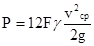
где F - проекция площади обтекания монтажного блока на плоскость, нормальную направлению течения, м2;
γ - плотность воды, т/м3;
vср - средняя скорость течения реки, м/с;
g - ускорение силы тяжести 9,81 м/с2;
P - сосредоточенная сила, кН.
Величину крутящего блок-момента от воздействия водного потока (при строительстве сооружения на правом берегу и монтаже, ведущемся в направлении вниз по течению, происходит вращение блока в водном потоке по часовой стрелке) нужно определять по следующей формуле, кН · м.
М = 0,12 PB, (12)
где P - определенная выше величина горизонтального усилия от воздействия водного потока на блок, кН;
B - ширина блока (длина фундаментной плиты), м.
9.246. Перед началом производства последующих работ (устройство грунтонепроницаемых завес из синтетических материалов, засыпка пазух) установленные блоки в составе секции должны быть предъявлены представителю заказчика для освидетельствования с составлением акта. При этом должно быть произведено:
водолазное обследование установленных блоков с проверкой правильности их расположения, отсутствия повреждений защитного слоя бетона, фактических величин швов между смежными блоками;
водолазное обследование состояния постели и плотности прилегания ее к фундаментной плите по всему периметру последней;
инструментальная проверка правильности расположения блоков в надводной части по высотным отметкам и отклонениям от створной линии. Проверка величин осадок блоков с момента их установки.
После составления акта на выполненные работы по установке блоков разрешается приступать к устройству грунтонепроницаемых завес и засыпке пазух грунтом.
Обеспечение грунтонепроницаемости швов
9.247. Обеспечение грунтонепроницаемости швов между блоками производится в соответствии с указаниями проекта. Рекомендуется применять в этих целях завесы из синтетических материалов с предварительной заделкой швов в зоне переменного уровня воды антисептированными досками. К месту навески полотнища синтетических материалов следует подавать в готовом виде. Они должны быть предварительно разрезаны, сложены в два слоя, скатаны в рулон и укомплектованы необходимыми крепежными деталями. Размеры полотнищ должны назначаться из условия надежного перекрытия швов.
Длина полотнища, перекрывающего шов между вертикальными элементами, должна быть не менее, м
lb = l1 + l2 + 1,0,
где l1 - высота вертикального элемента;
l2 - запас на крепление полотнища в верхней части элемента.
Длина полотнища, перекрывающего шов между фундаментными плитами, должна быть не менее, м
lср = l3 + h + 0,2,
где l3 - длина фундаментной плиты от ее тылового торца до вертикального элемента;
h - толщина фундаментной плиты по ее тыловому торцу.
9.248. Перекрытие швов между вертикальными элементами должно выполняться полотнищами в следующем порядке. Верхний конец полотнища защемляется между двумя планками и крепится к арматурным выпускам вертикальных элементов. Закрепленное полотнище в виде рулона передается водолазу, который постепенно развертывает и опускает его. Прижим полотнища к вертикальным элементам по всей их высоте должен осуществляться с помощью досок, металлических планок и клиньев, вставляемых в петлевые выпуски вертикальных элементов. Нижний конец полотнища укладывается на шов фундаментных плит. Последний дополнительно перекрывается отдельным полотнищем, укладываемым на поверхность смежных плит по всей их длине и торцу.
9.249. Устраиваемый в соответствии с указаниями проекта обратный фильтр от торцов фундаментных плит по берме и откосу каменной постели следует выполнять с плавучих инвентарных подмостей с помощью крана грузоподъемностью 1,5-2,0 т.
Материал обратного фильтра должен удовлетворять требованиям государственного стандарта на гравий и щебень из естественного камня для строительных работ, а также требованиям неразмокаемости.
После отсыпки обратного фильтра должно быть выполнено ровнение его поверхности с допускаемыми отклонениями ровняемой поверхности от проектной 8 см.
9.250. Все элементы, обеспечивающие грунтонепроницаемость сооружения, до засыпки пазух грунтом должны быть осмотрены с представителем заказчика и составлением соответствующего акта скрытых работ.
Проверке подлежат:
плотность прилегания полотнищ грунтонепроницаемой завесы к поверхностям элементов блока;
надежность крепления полотнищ;
состояние материала полотнищ;
состояние обратного фильтра.
9.251. Документация, предъявляемая при приемке элементов, обеспечивающих грунтонепроницаемость сооружения, должна содержать:
исполнительные планы (схематические) принимаемых участков;
продольный и поперечные (не менее трех на каждую секцию) профили обратного фильтра;
акт водолазного обследования плотности прилегания и надежности крепления полотнищ грунтонепроницаемой завесы к поверхностям элементов блока, а также состояние поверхности грунтонепроницаемой завесы и обратного фильтра;
паспортные данные и марку материала грунтонепроницаемой завесы, а также результаты ее лабораторных исследований;
геотехнические характеристики примененного для отсыпки обратного фильтра щебня или гравия по результатам лабораторных исследований;
журнал работ.
Заполнение пазух грунтом.
9.252. Перед заполнением пазух грунтом для уточнения потребного объема грунта в плотном теле следует произвести контрольные промеры по поперечникам (не менее трех на каждой секции). Пазухи следует заполнять грунтом, геотехнические характеристики которого должны быть не ниже предусмотренных проектом.
Для засыпки пазух рекомендуется применение скальных грунтов, природных песчаных грунтов, содержащих более 90 % (по массе) фракций крупнее 0,1 мм, в том числе не менее 50 % фракций крупностью 0,25 мм и более.
Допускается применять пылеватые пески, если объем илистых и глинистых частиц с размером фракций менее 0,1 мм не превышает в них 5 %.
Не допускается применять для засыпки грунты, содержащие растворимые в воде серно-кислые соли и органические частицы в количестве более 5 % массы сухой минеральной части грунта.
9.253. Заполнение грунтом пазух может выполняться следующими способами: рефулированием грунта, отсыпкой грунта с берега и отсыпкой грунта с воды. Способ заполнения зависит от местных условий и должен быть указан в проекте организации строительства. Рефулирование грунта в пазуху вызывает в ней повышение уровня воды и создает дополнительное гидростатическое давление на сооружение.
Для устранения указанного давления необходимо производить сброс осветленной воды через специальные водосливы, расположение, размеры и конструкция которых должны быть разработаны в проекте производства работ. Намыв грунта выше отметки, предусмотренной в проекте организации строительства, не допускается. При намыве грунта необходимо следить за состоянием основания и не допускать его размыва.
При засыпке пазух грунтом с помощью землеройных машин или кранов необходимо следить, чтобы не были повреждены анкерные тяги и их антикоррозийная изоляция. Наличие в отсыпаемом грунте камней, крупных глыб и валунов не допускается.
Заполнение пазух грунтом следует производить послойно, слоями высотой не более 2 м.
Во избежание смещения блоков пригрузку их фундаментных плит следует начинать с тыловой части.
При отсыпке грунта в надводную часть сооружения необходимо одновременно производить и его уплотнение.
Способ отсыпки и уплотнения грунта должен быть указан в проекте производства работ.
В течение всего периода заполнения пазух грунтом должны вестись наблюдения за состоянием сооружения. В случае обнаружения недопустимых деформаций блоков работы по заполнению пазух должны быть приостановлены, выяснены причины деформаций совместно с представителем проектной организации и приняты меры для их предотвращения в дальнейшем.
Приемка работ
9.254. Гранулометрический состав, величина угла внутреннего трения и плотность сложения грунта должны контролироваться построечной лабораторией.
Пробы грунта следует брать в каждой секции сооружения через 1-2 м по высоте с таким расчетом, чтобы на каждые 500 м укладываемого грунта приходилась одна проба.
Допускаются следующие отклонения от требований проекта в отдельных, разобщенных пробах грунта:
угол внутреннего трения может быть на 2° меньше заданного;
плотность сложения грунта может быть на 10 % меньше заданной.
Общее количество таких отклонений не должно превышать 10 % от общего количества проб.
Осредненные значения по всем пробам не должны отклоняться в худшую сторону от заданных проектом величин.
При затруднениях в определении плотности сложения грунта допускается проверка качества уплотнения по значению удельного веса сухого грунта («объемного веса скелета») засыпки при предварительном определении значения последнего, соответствующего заданной плотности сложения грунта.
Определение удельного веса сухого грунта должно производиться с точностью до 3 · 10-4 Н/см3.
9.255. Документация, предъявляемая при сдаче работ по заполнению пазух грунтом, должна содержать:
рабочие и исполнительные чертежи засыпки;
данные лабораторных исследований грунта;
журнал наблюдений за сооружением;
журнал работ;
данные об особых технических обстоятельствах при производстве работ.
Возведение верхнего строения, установка швартовных и отбойных устройств
9.256. Работы по возведению верхнего строения следует начинать после заполнения пазух грунтом до отметки, предусмотренной проектом, и стабилизации подводной части сооружения, определяемой на основе материалов наблюдений за ней. Разбивку надводного строения следует производить по исполнительным рабочим чертежам, учитывающим фактическое положение установленных блоков.
9.257. Бетонирование шапочного бруса и тумбовых массивов следует производить в соответствии с требованиями СНиП 3.03.01-87.
Во избежание повреждения свежеуложенного бетона шапочного бруса и тумбовых массивов в результате наката волн к работам по бетонированию при высоких уровнях воды следует приступать, сообразуясь с прогнозом на волнение. Перерывы бетонирования в пределах секции не разрешаются.
До начала бетонных работ необходимо проверить качество и чистоту опалубки, правильность укладки арматуры и установки закладных деталей с составлением акта на скрытые работы. Перед бетонированием арматурные каркасы и выпуски арматуры вертикальных элементов должны быть выправлены и очищены от ржавчины, грязи и масляных пятен.
Отклонения шапочного бруса в плане от проектного створа и его верхней плоскости по высоте от проектной отметки в пределах длины секции не должны превышать ±2 см.
9.258. Швартовые и отбойные устройства, устанавливаемые согласно проекту, должны удовлетворять требованиям государственного стандарта и ведомственных технических условий. Установку их следует производить, соблюдая указания СНиП 3.07.02-87.
При бетонировании тумбовых массивов нарезные части анкерных болтов для крепления швартовных тумб следует обматывать мешковиной для предохранения от попадания бетонной смеси.
Швартовные тумбы следует устанавливать на слой цементного раствора и крепить к анкерным болтам после достижения бетоном тумбового массива 50 %-ной проектной прочности.
Брусья отбойной рамы должны быть изготовлены из воздушно-сухой древесины хвойных пород (сосны, кедра, лиственницы) и обработаны масляными антисептиками до установки их на место.
Болты отбойной рамы, скрепляющие горизонтальные и вертикальные брусья, должны быть втоплены в раму от внешней плоскости ее не менее чем на 2 см.
Отбойную раму следует выравнивать только путем увеличения толщины отдельных брусьев.
Отклонение плоскости отбойной рамы от проектного положения может быть не более ±1 см.
Цилиндрические резиновые отбойные устройства располагаются по высоте и длине надводной части сооружения в строгом соответствии с проектом.
Установку этих отбойных устройств следует, как правило, производить с помощью горизонтальной системы подвески, основными элементами которой являются несущая штанга, цепи и анкерные рымы.
При согласовании с проектной организацией и заказчиком вместо цепей допускается применение металлических тросов с прочностными характеристиками, соответствующими разрывной прочности цепей, а также установка цилиндрических резиновых отбойных устройств типов Д300, Д400 и Д800 длиной не более 2 м без применения несущих штанг на цепях.
Металлические подвески, пропускаемые внутри резиновых цилиндров, следует покрывать мешковиной, пропитанной битумом.
Цепи подвесок и все закладные части крепления должны покрываться кузбасслаком за два приема.
9.259. Устройство покрытий прикордонной территории, прокладку подкрановых, железнодорожных путей и инженерных сетей следует выполнять согласно проекту и соответствующим действующим нормативным документам. При этом необходимо учитывать продолжительность процесса образования осадок грунта обратной засыпки. Не допускается во избежание повреждений устраивать монолитные покрытия территории причальных сооружений асфальтобетоном или бетоном непосредственно после окончания засыпки.
Строительство портовых гидротехнических сооружений из стального шпунта
10.1. Указания настоящего подраздела распространяются на производство и приемку следующих видов работ на строительстве морских и речных портовых сооружений с применением стального шпунта:
а) подготовительные работы;
б) погружение шпунта вибрированием и забивкой (без подмыва и с подмывом);
в) выправка, извлечение и другие сопутствующие работы;
г) защита от коррозии шпунта и стальных деталей;
д) монтаж распределительных балок и анкерных конструкций;
е) заполнение пазух и ячеек грунтом;
ж) устройство надстройки, омоноличивающей шпунтовый ряд.
Примечания: 1. В настоящем разделе Пособия рассматриваются свайные работы с применением стального шпунта плоского, корытного и зетового профилей с замками типа «одинарная обойма с кулачком» (ШД), «двойная обойма с кулачком» (ШП, ШЗП) и «Ларсен» (Л).
2. Предельная отрицательная температура, при которой допускается производство работ по погружению шпунта, устанавливается проектной организацией в зависимости от марки стали и конкретных условий производства работ.
10.2. Строительство портовых гидротехнических сооружений с применением шпунта должно выполняться в соответствии с рабочими чертежами, проектом организации строительства, проектом производства работ, составленных с учетом местных условий и требований СНиП 3.01.01-85, СНиП 3.02.01-87, СНиП 3.07.02-87 и настоящего раздела Пособия. Все отступления от проекта должны быть согласованы с проектной организацией.
10.3. Сложные нетиповые сооружения из шпунта, в том числе ячеистой конструкции, а также сооружения, возводимые в сложных гидрометеорологических и инженерно-геологических условиях (открытая для волнения свыше трех баллов акватория, течение со скоростью более 1 м/с, колебания уровня воды более 2 м/сут, вечномерзлые или сильносжимаемые, требующие уплотнения грунты в основании, неустойчивые площадки с возможным образованием оползней и карстов), а также в Северной строительно-климатической зоне и в условиях эксплуатируемых портов, следует возводить по проектам организации строительства, разрабатываемым проектной организацией, выполнившей проект сооружения, и проектам производства работ, разрабатываемым, как правило, по заказу строительной организации оргтехстроями или проектными организациями.
Проект организации строительства шпунтового сооружения разрабатывается с учетом решений по применению строительных материалов и конструкций, способов организации строительно-монтажных работ, предварительно согласованных со строительной организацией, и должен включать организационно-технологические схемы возведения шпунтовых сооружений, описание и обоснование методов производства шпунтовых и других сложных строительно-монтажных работ. Кроме этого проектная организация, выполнявшая проектирование сооружения, должна разрабатывать рабочие чертежи или проекты соответствующих направляющих, шаблонов и других устройств для погружения шпунта.
10.4. Необходимость закрепления шпунта, подверженного воздействию волн и льда, определяется проектной организацией, разработавшей проект конструкции сооружения, с учетом возможных нагрузок на шпунт в строительный период, профиля шпунта, его свободной длины и прочих местных условий. Ею же разрабатываются принципиальные схемы защиты и рабочие чертежи или проект крепления шпунта.
10.5. При строительстве портовых гидротехнических сооружений из шпунта следует соблюдать требования СНиП III-4-80 и «Указаний по технике безопасности для рабочих, выполняющих строительно-монтажные и транспортные работы на льду рек и других водоемов» Минтрансстроя, а также правила и требования органов государственного надзора.
10.6. Максимальная балльность волнения, при которой разрешается производство работ по погружению шпунта, устанавливается проектом производства работ в зависимости от технических характеристик основной несущей машины (плавучего копра, плавучего крана, самоподъемной платформы) и других местных условий. Для плавучих копров и кранов она не должна превышать двух баллов.
Подготовительные работы
10.7. Основным работам по погружению шпунта должны предшествовать следующие работы:
а) выполнение работ подготовительного периода в соответствии с проектом организации строительства в целом и проектом производства работ для данного конкретного портового сооружения в объемах, обеспечивающих нормальное производство работ с соблюдением требований СНиП 3.01.01-85, СНиП 3.07.02-87, разд. 4 и настоящего раздела Пособия;
б) выполнение и принятие по акту работ, предшествующих погружению шпунтов;
в) проверка наличия технической документации в соответствии с п. 10.2 и ознакомление с рабочими чертежами сооружения и проектом производства работ ИТР и рабочих;
г) разбивка и закрепление на местности оси шпунтовой стенки;
д) обследование дна в районе погружения шпунта водолазами или с помощью установок подводного телевидения с целью устранения подводных препятствий;
е) подготовка сваепогружающего и вспомогательного оборудования и обустройств для производства работ (кондукторы, шаблоны и т.д.);
ж) подготовка шпунта, сборка его при необходимости в пакеты, приемка с составлением соответствующего акта;
з) проведение пробного погружения шпунта.
Примечание. Проведение в подготовительный период пробного погружения шпунта для уточнения глубины погружения и методов производства работ допускается при невозможности выполнения их в комплексе проектно-изыскательских работ на стадии разработки проекта сооружения. Пробное погружение выполняется по программе, составленной проектной организацией.
10.8. Разбивку и закрепление знаками в натуре основных осей сооружения следует производить с соблюдением требований СНиП 3.07.02-87, СНиП 3.01.03-85 и разд. 3 настоящего Пособия.
Приемка, подготовка, транспортирование и складирование шпунта, анкерных и других элементов
10.9. Каждая партия стальных изделий (шпунта, анкерных тяг и т.д.), поступающая на строительство, должна сопровождаться документацией согласно ГОСТ 7566-81. При приемке поступающих на строительство стальных изделий следует проверять соответствие их паспортных данных требованиям проекта, а самих изделий - требованиям нормативной документации на их изготовление:
для стального шпунта - ГОСТ 4781-85 и техническим условиям «Сталь горячекатаная фасонного профиля шпунтовой сваи Ларсен IV и Ларсен V» Минчермета УССР; Техническим условиям ТУ 36-1772-86 «Профиль шпунтовый сварной зетовый» Минтрансстроя;
для анкерных тяг - ГОСТ 380-71 и ГОСТ 2590-71.
10.10. Для сварных соединений стальных конструкций следует применять сварочные материалы в соответствии с указаниями проекта и СНиП II-23-81.
10.11. Все шпунтины перед погружением (или перед сборкой в пакеты) должны быть подвергнуты проверке замков. Для проверки формы, прямолинейности, а также очистки замков следует протаскивать через замок обрезок шпунтины длиной не менее 2 м. Одновременно производится выправление небольших изгибов шпунта и вмятин замков. Вырезка дефектных мест замков разрешается на длине не более 50 см и не более одного выреза на шпунтину с последующей приваркой на этом участке качественного отрезка замка.
Вырез замков плоского шпунта запрещается. Проверку замков и устранение дефектов следует производить на специальном стенде, оборудованном тележкой для закрепления протягиваемого обрезка шпунтины и лебедкой. Замки шпунта после проверки смазываются солидолом.
10.12. Погружение шпунта вибромашинами следует производить, как правило, с применением гидравлических наголовников. При отсутствии таковых и применении клиновых наголовников в шпунте вырезаются по шаблону прямоугольные отверстия для пропуска клина. Эти же отверстия используют для строповки шпунтин при установке их в стенку или ячейку.
10.13. Укрупнительная сборка шпунта в пакеты должна выполняться на горизонтальном стенде, оборудованном роликовыми опорами и лебедками. Конструкция стенда должна обеспечивать втягивание шпунтины одновременно в замки двух соседних шпунтин. Шпунтины в пакетах закрепляются сваркой.
Стыки шпунтин выполняются в соответствии с требованиями проекта по условию обеспечения непроницаемости и равнопрочности стыка основному сечению шпунтины. Стыкуемые отрезки шпунтин следует соединять строго соосно с плотным контактом торцевых поверхностей между собой по всей площади поперечного сечения. Количество стыков в одной шпунтине должно быть не более двух, а расстояние между стыками не должно быть менее 3 м.
Расстояние между стыками соседних шпунтин после забивки не должно быть менее 2 м.
10.14. Антикоррозийное покрытие шпунта необходимо производить механизированным способом после завершения операций, связанных с проверкой замков, стыковкой отдельных шпунтин, сборкой их в пакеты.
10.15. На каждой шпунтине должны наноситься краской её порядковый номер и длина, а также разметка на той части шпунтины, которая будет возвышаться над водой после установки её на грунт. Разметку следует выполнять несмываемой краской на видимой при погружении стороне шпунтины через 0,5 м с выделением метровых рисок числами, обозначающими расстояние от нижнего конца шпунтины.
10.16. Все подъемно-транспортные операции со шпунтом надлежит выполнять в соответствии с требованиями проекта производства работ с соблюдением мер предосторожности против повреждения антикоррозийного покрытия, замков и возникновения прочих дефектов.
10.17. Погрузочно-разгрузочные работы необходимо осуществлять при помощи сухопутных или плавучих кранов с соответствующими грузоподъемностью и вылетом стрелы.
Подъем шпунтины или пакетов должен в любом случае производиться при вертикальном положении грузового полиспаста. Кантование, перемещение волоком и сбрасывание шпунтин и пакетов с высоты не допускаются.
10.18. Подъем шпунтин, у которых величина отношения расстояния между точками строповки к размеру поперечного сечения в плоскости стропов более 50, а также элементов, которые должны стропиться более чем в двух точках, необходимо производить с применением траверсы. Плоский шпунт длиной свыше 10 м поднимается только с применением специальных траверс.
10.19. В пределах акватории шпунт следует транспортировать на палубных баржах, плашкоутах, понтонах, имеющих необходимую плавучесть, устойчивость, и проверенных расчетом на восприятие сосредоточенных нагрузок от массы шпунта.
10.20. Разрешается транспортировка шпунта или пакетов на палубе плавкранов, а также на небольшие расстояния (до 4 км) по защищенной от волнения акватории на гаке крана. В последнем случае масса груза не должна быть более 50 % грузоподъемности крана при наименьшем вылете стрелы.
10.21. При перевозке и складировании шпунт необходимо укладывать на подкладки и прокладки, предотвращающие недопустимые остаточные деформации.
10.22. Места складирования подготовленного к погружению шпунта необходимо выбирать возможно ближе к копрам или кранам. Шпунт надлежит укладывать в штабель высотой не более 2 м таким образом, чтобы не производить кантование при строповке. Расположение штабелей должно быть удобным для производства погрузо-разгрузочных операций с помощью кранов на транспортные средства.
Выбор оборудования для погружения шпунта
10.23. Способ погружения шпунта и применяемое оборудование должны соответствовать указаниям проектов организации строительства и производства работ для данного сооружения и указаниям настоящего раздела.
10.24. При необходимости способы погружения шпунта допускается комбинировать (вибропогружение с последующей добивкой молотом), а в особо тяжелых грунтовых условиях сочетать с дополнительными, облегчающими погружение, мероприятиями: подмывом, лидерным бурением, предварительным рыхлением грунта взрывом.
10.25. При выборе способа погружения шпунта предпочтение, как правило, следует отдавать вибропогружению как наиболее производительному и наименее опасному для повреждения шпунта способу. Забивку шпунта молотами одиночного действия следует применять в тех случаях, когда по грунтовым условиям (гравийные грунты, гравелистые пески, твердые и полутвердые глинистые грунты и т.д.) вибропогружение становится неэффективным (скорость погружения меньше 10 см/мин), а также для добивки шпунта после вибропогружателя или вибромолота, если последними не удалось достигнуть проектных отметок (за исключением случаев попадания шпунта на какое-либо препятствие в грунте, например валун, топляк и т.п.).
10.26. При выборе оборудования следует, как правило, ориентироваться на погружение шпунта пакетами.
Увеличение количества шпунтин в пакете способствует увеличению производительности труда, снижает вероятность повреждения и чрезмерного отклонения шпунта от проектного положения.
10.27. Количество шпунтин в пакете назначается в зависимости от типа шпунта, мощности грузоподъемного и погружающего оборудования, ширины погружающей машины (молота, вибропогружателя), грунтовых условий и составляет:
при вибропогружении........................................ от 2 до 11
при забивке молотами......................................... от 2 до 4
10.28. Тип вибропогружателя для погружения шпунта пакетами следует подбирать в соответствии с указаниями разд. 4 настоящего Пособия. Выбор вибропогружателя и вибромолотов для вибропогружения шпунта одиночными элементами производится согласно рекомендуемому приложению 34.
10.29. Выбор молота для забивки шпунта производится в соответствии с указаниями разд. 4 настоящего Пособия. При этом расчетная несущая способность грунта (сопротивление грунта забивке шпунта) определяется в соответствии с указаниями СНиП 3.02.03-85 как для сваи аналогичного сечения, работающей на сжимающую нагрузку.
10.30. В качестве направляющих для погружения шпунтовых стенок используют две параллельные балки, установленные на расстояние, равное высоте профиля шпунта (или шпунтовой стенки) плюс зазор в пределах 1-2 см.
Если длина шпунта в два и более раз превышает расстояние от дна акватории до направляющих, последние устанавливаются в два яруса. Расстояние между ярусами принимается не менее трех метров. Направляющие выполняются из профильной стали и крепятся болтами сзади к уже забитым шпунтинам, а спереди по ходу забивки - к временным вертикальным сваям или полукозловым свайным опорам.
10.31. Плавучие направляющие, как правило, следует закреплять не менее чем на четырех приколочных сваях. Величина перемещения плавучих направляющих относительно закрепляющих устройств после установки в рабочее положение не должна превышать 2 см. Крен и дифферент плавучих направляющих должен обеспечивать погружение шпунта с допускаемой точностью.
На направляющих должны быть надежно закреплены створные вехи, по которым направляющие следует устанавливать в створ сооружения. Правильность установки направляющих в створе сооружения и по вертикали проверяют геодезическими приборами.
10.32. При вибропогружении или забивке шпунта необходимо применять краны и копры с грузоподъемностью при соответствующем вылете на 50 % больше массы вибропогружателя и наголовника или молота и подвесной направляющей стрелы. Грузоподъемность кранов и копров должна также быть не менее удвоенной массы заводимой в замок шпунтины (пакета) или суммарной массы шпунтины (пакета) и вибромашины, если последняя присоединяется к шпунтине (пакету) внизу. Высота подъема крюка должна обеспечивать заводку шпунтины (пакета) в замок ранее выставленной или погруженной шпунтины.
Погружение и извлечение шпунта
10.33. Погружение шпунта в сооружении следует, как правило, выполнять захватками. Длина захваток назначается в зависимости от местных условий (производительности, защищенности от волнения и т.п.) обычно в пределах от 10 до 30 м.
10.34. Операцию подъема и перемещения шпунтины (пакета) к мосту установки во избежание большой раскачки следует производить плавно, без рывков, не допуская ударов шпунтины о направляющие и ранее установленный шпунт. Для подъема шпунтин (пакетов) краном следует применять строповочный захват с дистанционным расцеплением, а для заводки шпунтин в замок - специальные ловильные приспособления.
10.35. Погружение шпунта по каждой захватке следует выполнять периодическими последовательными поступательно-возвратными проходками от концов захватки к её середине и обратно таким образом, чтобы разница в отметках низа соседних шпунтин, в том числе и на границах с соседними захватками, не превышала в зависимости от степени трудности погружения (тяжелой, средней и легкой) соответственно следующих значений, м:
для плоского шпунта................................... 0,5; 1 и 2
для других профилей.................................. 1,5; 3 и 5
Степень трудности погружения шпунта при правильном подборе погружающего механизма в соответствии с указаниями пп. 10.28-10.29 характеризуется скоростью погружения (см/мин) при вибропогружении или количеством ударов молота, затрачиваемых на 0,5 м погружения шпунта в грунт:
тяжелое погружение.................................... < 50 см/мин или > 25 ударов
погружение средней трудности................. от 50 до 200 см/мин или от 5 до 25 ударов
легкое погружение...................................... > 200 см/мин или < 5 ударов
Примечание. Если ширина погружающей машины превышает ширину шпунтины или пакета, следует применять вставку-удлинитель наголовника, длина которой назначается из условия обеспечения свободного погружения шпунтины или пакета на требуемую глубину, принятую в проекте.
10.36. Пакеты из 8-11 шпунтин корытного профиля допускается погружать в прямолинейных стенках на глубину до 10 м за одну проходку вибропогружателем, если отклонения при этом не превышают допустимых.
10.37. При погружении первых шпунтин (или пакетов) необходимо обратить внимание на строгую вертикальность их направления. Вертикальность проверяется по отвесу. Проверку вертикальности погружения шпунтин в обеих плоскостях следует производить не реже чем через каждые 5 шпунтин.
10.38. Для предотвращения веерности погружающий снаряд (молот, вибропогружатель) следует устанавливать со сдвижкой его оси от центра тяжести погружаемой шпунтины (или пакета) в сторону противоположной отклонению на величину, равную примерно 10-20 % от ширины шпунтины (или пакета).
Необходимая величина смещения, оси погружающего снаряда уточняется опытным путем.
10.39. Постепенное устранение веерности при небольших отклонениях достигается оттяжкой шпунтин в процессе погружения в направлении, противоположном отклонению, а при отклонении, превышающем допуски, и невозможности его выправления оттяжкой - погружением клиновидных шпунтин. Клинообразность или перекос (отношение разности ширины клиновидной шпунтины поверху и понизу к её длине) не должно превышать 0,01.
10.40. Выправка наметившегося наклона шпунтовой стенки, если он не превышает допустимой величины, выполняется постепенно при погружении последующих шпунтин усилием специальных оттяжек.
Если наклон шпунта превышает допустимый, его следует выдернуть и погрузить вновь. При невозможности извлечения шпунта вопрос о его выправлении решается по согласованию с проектной организацией.
10.41. Уход ранее погруженной шпунтины ниже проектной отметки при погружении соседней шпунтины объясняется чрезмерным сопротивлением в смежном замке. Для предотвращения этого явления шпунтины, погруженные до проектных отметок, следует объединять между собой с помощью сварки или временными накладками на болтах.
Уход шпунтины ниже проектной отметки исправляется её наращиванием отрезком шпунта с заводкой в замки примыкающих шпунтин и соединением с помощью сварки встык. При необходимости соединение усиливается накладками.
10.42. Недопогружение шпунта до проектной отметки при работе с вибропогружателем, снабженным амортизатором, следует устранять путем одно-двукратного подъема шпунтины на 0,5-0,8 м и последующего ее нового погружения. Если недопогружение вызвано встречей с препятствием, что характеризуется резким замедлением процесса погружения, следует прекратить погружение данной шпунтины и перейти к погружению соседних шпунтин, характер погружения которых может позволить установить причину и степень случайности данного явления. В случае, если погружение последующей шпунтины не встретило затруднений, следует вернуться к остановившейся шпунтине и попытаться допогрузить её по двум соседним направляющим шпунтинам.
Если недопогружение шпунта устранить не удалось, вопрос о дальнейших мероприятиях решается совместно с проектной организацией.
10.43. Допустимость применения подмыва при погружении шпунта определяется проектной организацией. При погружении с применением подмыва следует руководствоваться указаниями разд. 4 настоящего Пособия.
10.44. Срезку шпунта разрешается производить только после освидетельствования его представителями авторского надзора и заказчика и занесения разрешающей записи в журнал производства работ.
10.45. При погружении шпунта следует вести журнал. К журналу прилагаются плановые и профильные схемы проектного и фактического положения стенок или ячеек. Форма журнала и требования к схемам приведены в справочном приложении 2. По данным журнала составляется сводная ведомость погруженного шпунта.
Вибропогружение шпунта
10.46. При погружении шпунта вибропогружателями и вибромолотами (за исключением вибромолотов со свободным наголовником) следует осуществлять жесткую и неизменяемую в процессе погружения связь шпунтины (или пакета) с вибромашиной.
Для погружения шпунта вибромашинами следует применять гидравлические наголовники.
10.47. При использовании наголовника, оснащенного клиновым зажимным устройством, должна быть обеспечена особая тщательность закрепления его на шпунтине, так как устранение допущенных погрешностей крепления в процессе погружения на значительной высоте затруднительно.
10.48. При работе с клиновым наголовником отклонения по размерам и расположению отверстия в шпунте для пропуска клина не должны превышать, мм:
в размерах отверстия...................................................................................... ±5
в расстоянии от верхней кромки отверстия до торца шпунтины............. ±2
Верхнюю грань отверстия после бензогазовой резки следует выровнять, так как в противном случае остающиеся неровности в процессе погружения быстро сминаются и нарушают жесткость соединения наголовника со шпунтиной.
10.49. В процессе вибропогружения необходимо следить за состоянием троса и крюка крана, к которому подвешена вибромашина.
При работе с вибромашинами, оснащенными амортизаторами, скорость спуска с крюка должна быть такой, чтобы вибромашина со шпунтиной частично висели на крюке. Этим обеспечивается вертикальность погружения шпунта. На последнем этапе погружения (1,5-2 м) трос можно ослабить и погружение вести без торможения.
При погружении шпунта вибропогружателем без амортизатора скорость спуска крюка должна быть такой, чтобы кран не тормозил погружение шпунтины (пакета).
10.50. При резком снижении скорости погружения шпунта с использованием вибромашины с амортизатором для преодоления твердых прослоек грунта, а также отдельных препятствий, например бревен в грунте, рекомендуется несколько раз повторить операции извлечения (на 0,8-1 м) с минимальной скоростью и погружения с максимальной скоростью (при свободном подъемном тросе).
10.51. Эксплуатацию вибромашин, а также их текущее содержание следует осуществлять в соответствии с заводскими инструкциями и «Указаниями по эксплуатации и ремонту вибропогружателей и вибромолотов в транспортном строительстве» Минтрансстроя.
Забивка шпунта молотами
10.52. При забивке шпунта молотами следует руководствоваться указаниями разд. 4 и дачного раздела.
Забивку шпунта молотами одиночного действия следует производить с применением специальных наголовников, оснащенных верхним амортизатором.
Форма нижней поверхности плиты наголовника должна соответствовать профилю шпунтины или пакета и обеспечивать их надежную фиксацию в процессе погружения. Глубина выемки или высота выступов, фиксирующих положение шпунтины или пакета должна быть не менее 50 мм.
Размеры плиты наголовника назначаются из условия равномерного распределения давления ударного импульса по всей площади торца шпунтового пакета, за исключением его крайних замков.
10.53. Для уменьшения риска повреждения шпунта и его замков забивку молотами одиночного действия следует, как правило, прекращать при отказах менее, мм:
для плоского шпунта........................................... 15
для других видов шпунта................................... 10
Значение минимального отказа при заделке шпунта в скальные и крупнообломочные грунты на последнем этапе погружения назначается проектной организацией.
10.54. Запрещается добивка молотами одиночного действия шпунта, попавшего на препятствие при вибропогружении, которое легко распознается по резкому замедлению и остановке вибропогружения и появлению характерного стука. Большой ударный импульс молота одиночного действия вместо разрушения препятствия может привести в данном случае к повреждению шпунта и разрыву замков.
Особенности погружения шпунта в ячеистых конструкциях
10.55. При возведении ячеистых конструкций в проекте производства работ должна быть отражена необходимость отработки принятой технологии погружения шпунта на первой штатной (или опытной) ячейке. После погружения шпунта этой ячейки до её засыпки следует произвести тщательный осмотр водолазами шпунта по всему наружному периметру с откопкой на предельно возможную глубину в местах, где встречались затруднения в погружении. В случае положительных результатов осмотра, подтвердивших правильность погружения шпунта в ячейке, разрешается возведение последующих ячеек.
10.56. При возведении ячеистых конструкций должна быть обеспечена тщательность устройства шаблонов для сборки ячеек, разбивки и разметки мест установки отдельных шпунтин или пакетов для обеспечения точности при замыкании ячеек.
Набор шпунтин в ячейку или секцию должен производиться строго в соответствии с предварительной разметкой положения шпунтин на направляющем шаблоне. Особое внимание необходимо обращать на установку угловых фасонных шпунтин, к которым примыкают козырьки или поперечные диафрагмы.
Погружение шпунта в цилиндрической ячейке следует производить, как правило, после предварительной сборки шпунта и полного замыкания контура ячейки.
10.57. В случае, если район возведения цилиндрических ячеек подвержен чрезмерному волнению, следует производить предварительную сборку ячеек на специальном стенде-шаблоне, сооруженном на закрытой акватории (или на берегу в пределах радиуса действия крана), и в готовом виде плавкраном соответствующей грузоподъемности транспортировать и устанавливать собранную ячейку на штатное место.
10.58. Шаблон для сборки и погружения шпунта в цилиндрические ячейки выполняется из стальных профильных элементов в виде стальной пространственной конструкции с жесткими верхними и нижними направляющими ярусами, расстояние между которыми должно быть не менее половины длины шпунта.
10.59. Сборку шпунта в ячейке следует начинать с установки направляющих шпунтин, равномерно распределенных по контуру ячейки через 10-15 шпунтин. Каждая направляющая шпунтина выверяется в плане и по вертикали и временно закрепляется к шаблону. После закрепления направляющих шпунтин в секторах между ними выполняется установка всех остальных промежуточных шпунтин.
10.60. При возведении ячеистых конструкций на месте работ должна быть постоянно водолазная станция для своевременного осмотра и устранения обнаруженных неполадок в подводной части сооружения.
Извлечение шпунта
10.61. Извлечение шпунта и определение необходимой для этого грузоподъемности крана следует производить согласно рекомендациям разд. 4 настоящего Пособия. При определении сопротивления шпунта выдергиванию дополнительно учитывается сопротивление в смежных замках, находящихся в грунте, равное (из расчета на 1 м длины замка) 50 кН при статическом извлечении и 10 кН при использовании вибрации. При виброизвлечении шпунта обязательно применение амортизаторов.
10.62. При извлечении шпунта с применением вибрации для срыва шпунтины, т.е. нарушения ее сцепления с грунтом и связи в смежных замках, шпунтину следует вначале осадить вниз на 3-5 см вибромашиной при свободном положении подъемного троса, а затем приступить к выдергиванию.
В необходимых случаях для нарушения сцепления шпунта с грунтом и связи в замках целесообразно осадить шпунтины молотом или применить подмыв по всей площади соприкосновения шпунта с грунтом.
Скорость подъема крюка крана при извлечении шпунта с применением вибрации не должна превышать 3 м/мин в песчаных и 1 м/мин в глинистых грунтах.
Защита от коррозии шпунта и стальных деталей конструкций
10.63. Изоляционные работы следует выполнять в соответствии с указаниями проекта, СНиП 3.04.03-85, «Руководства по антикоррозийной защите металлоконструкций морских гидротехнических сооружений лакокрасочными покрытиями» РД 31.31.18-75 Минморфлота и настоящего раздела.
10.64. Грунтовочный слой покрытия следует наносить на подготовленную поверхность металла с соблюдением следующих требований: перед нанесением грунтовочного слоя на защищенную поверхность с последней должна быть удалена окалина вплоть до здорового металла, поверхность должна быть очищена от пыли, грязи, ржавчины, масляных и жировых пятен и высушена в соответствии с требованиями ГОСТ 9.402-80.
10.65. Очищенная поверхность должна удовлетворять следующим требованиям:
а) на поверхности не должно быть раковин, трещин, рисок, заусениц металла от сварки, острых выступов, которые следует округлить по радиусу не менее 0,3 мм;
б) сварные швы должны удовлетворять требованиям СНиП 3.03.01-87;
в) поверхность после очистки должна быть шероховатой и иметь матовый серо-стальной цвет.
10.66. Очистку поверхности металла от ржавчины, окалины и загрязнений следует производить пескоструйным, дробеструйным или гидропескоструйным способами, а также путем обработки поверхности преобразователем ржавчины.
При небольших объемах работ допускается очистка поверхности механизированными инструментами (пневмотурбинами, шарошками и т.п.) и металлическими щетками.
Очистка конструкций должна производиться при обязательном контроле качества очищенной поверхности путем тщательного осмотра.
Результаты проверки состояния поверхности перед окраской следует фиксировать в акте, форма которого приведена в справочном приложении 2.
10.67. В случае, когда при механизированной или ручной очистке нельзя добиться полного удаления продуктов коррозии, а пескодробеструйная очистка не может быть применена, допускается нанесение защитного покрытия по поверхности, обработанной преобразователем ржавчины с последующей механической очисткой. Преобразователи ржавчины следует наносить на поверхность, предварительно обезжиренную и очищенную от окалины и рыхлых продуктов коррозии. Как правило, следует применять преобразователи ржавчины заводского изготовления.
После очистки не позднее 3-4 ч необходимо нанести грунтовочный слой.
10.68. Защитный слой покрытия следует наносить на поверхность металла после высыхания и отвердения грунтовки или предыдущего защитного слоя с учетом возможности нанесения его в конкретных метеорологических условиях.
10.69. Антикоррозийная защита не наносится на конец шпунта, который входит в железобетонный оголовок, а также на нижнюю часть шпунта, погружаемую в грунт, антикоррозийная защита в нижней зоне шпунта должна быть при этом выполнена не менее чем на 1 м ниже проектного уровня дна.
10.70. В процессе выполнения антикоррозийной защиты необходимо вести исполнительную документацию в соответствии с указаниями СНиП 3.04.03-85 и «Руководства по антикоррозийной защите морских гидротехнических сооружений лакокрасочными покрытиями» РД 31.31.10-75 Минморфлота. Форма акта на приемку антикоррозийных работ приведена в справочном Приложении 2.
Монтаж распределительных балок и анкерных конструкций
10.71. Размеры отверстий для анкерных тяг, прорезаемых в распределительных балках и стенке, должны удовлетворять требованиям проекта.
Для соблюдения проектного положения и заданных размеров отверстий прорезка их должна производиться по шаблонам, устанавливаемым по инструментальной разбивке.
10.72. Распределительные балки следует подвешивать к шпунту на монтажных болтах, стыковать и затем прикреплять крепежными болтами к шпунту. Крепежными болтами следует производить подтяжку отдельных шпунтовых свай, имеющих остаточное отклонение после выправки.
10.73. Изготовление и приемку анкеров следует производить в соответствии с требованиями проекта и действующих технических условий. Все изготовленные элементы тяг должны быть приняты ОТК и иметь клеймо. Резьба должна быть смазана и предохранена от повреждений деревянными обкладками.
10.74. Анкерные тяги, соединительные и натяжные муфты после изготовления должны проходить контроль по программе, разработанной проектной организацией. Во всех случаях стыки и соединения должны быть равнопрочны основному сечению анкерной тяги. Результаты контроля, сведения по изготовлению следует заносить в паспорта, которыми должны быть снабжены партии анкерных тяг в соответствии с техническими условиями «Оборудование анкерное из круглого проката для монтажа причальных набережных» Минтрансстроя.
10.75. При изготовлении анкерных тяг должны быть выдержаны согласно указаниям проекта по допустимой величине отклонения соосности свариваемых элементов тяги. При отсутствии указаний проекта величина отклонений от соосности свариваемых звеньев тяги не должна превышать 1,5 мм. Не разрешается излом осевой линии тяги в месте сварки составляющих её элементов с тангенсом угла поворота оси в этом сечении, большим 0,003.
10.76. Перед постановкой анкерных тяг на место следует производить предварительный их монтаж на монтажной площадке, включающий следующие виды работ:
а) смазку и проверку резьбы навинчиванием муфт и гаек на полную её длину;
б) подборку комплектов тяг и раскладку их на подкладке;
в) окончательную сборку и маркировку тяг с подгонкой длины каждой тяги под фактический размер расстояния между лицевой и анкерной стенками на месте её установки.
10.77. Захват тяг краном при транспортировке и монтаже следует производить с помощью строп, устанавливая их так, чтобы свисающие консоли уравновешивали прогиб тяг посредине, или с помощью жесткой траверсы, к которой тяга подвешивается за несколько точек при расстоянии между ними не более 4 м. Консоли тяги, подвешенной к траверсе, не должны быть более 1 м.
10.78. Все анкерные тяги сооружения должны быть установлены с постоянным натяжением, как правило, механическим способом.
Постоянство натяжения достигается такой регулировкой, при которой для каждой тяги длина ее между опорными плоскостями окончательно установленных гаек равна расстоянию между опорными плоскостями стенки и анкера, измеренному в натуре перед монтажом тяг с учетом слабины, задаваемой на провес тяги:
а) при тягах, монтируемых в конструкции без провеса (на постоянных опорах), слабина равна нулю;
б) при монтаже тяг без постоянных опор в пролете - для всех тяг сооружения слабина должна быть постоянной - не более 30 мм; при этом значение её величины подбирается так, чтобы удовлетворять условию монтажного натяжения тяги в размере 10-15 кН.
Предварительные (контролируемые) натяжения анкерных тяг выполняются в случаях, предусмотренных проектом, после выполнения монтажного натяжения по методике, разработанной проектной организацией.
Отклонение оси анкерной тяги от проектного угла к направлению лицевого шпунта и анкерных плит или стенок в вертикальной плоскости не должно превышать 0,5°.
Натяжение анкерных тяг может производиться только при наличии перед анкерной стенкой призмы отпора, достаточной для обеспечения ее устойчивости.
10.79. Тяги при монтаже следует укладывать на насадки подмосточных свай или подвешивать к инвентарным блокам с целью ограничения до минимума монтажного провеса и прикреплять к лицевому шпунту посредством навинчивания гаек; к анкерным устройствам тяги прикрепляются навинчиванием гаек, служащих для регулировки монтажного натяжения.
10.80. Анкерные плиты следует устанавливать на подготовленное основание с соблюдением заданного проектом взаимного положения их относительно ранее погруженного шпунта лицевой стенки.
Положение продольной оси анкерных плит, так же как продольной оси лицевого шпунта, в течение всего периода производства забивки шпунта и монтажных работ должно контролироваться промерами от принятого базиса. Допустимые отклонения от проектного положения анкерных плит приведены в табл. 10 СНиП 3.07.02-87.
10.81. Забивка лицевого шпунта и его выправка должны опережать установку анкерных плит. Разбивку поперечной оси анкерной, плиты (или оси тяги) следует производить на основании фактического положения лицевого шпунта после разбивки на нем положения отверстий для концов тяг.
Заполнение пазух и ячеек грунтом
10.83. Заполнение ячеистых конструкций и пазух в конструкциях типа «больверк» разрешается производить только таким грунтом, свойства которого отвечают требованиям проекта.
Работы по заполнению грунтом ячеек и пазух должны производиться в соответствии с указаниями проекта производства работ, в котором должны быть указаны способы и очередность заполнения, а также с учетом требований СНиП 3.02.01-87.
10.84. Перед заполнением пазух и ячеек грунтом должен быть составлен акт о готовности конструкции к засыпке с указанием качества выполнения анкерных устройств и защиты их от коррозии.
Заполнение пазух необходимо вести в соответствии с проектом производства работ, не допуская нагрузки на шпунтовую стенку до обеспечения устойчивости анкерных опор путем отсыпки грунтовой отпорной призмы перед анкерными стенками до натяжения анкерных тяг.
10.85. Во всех случаях, когда по условию производства работ необходимо засыпать часть пазухи до натяжения анкерных тяг, высота и предельный контур отсыпки решаются проектной организацией в технологических схемах проекта организации строительства.
10.86. В конструкциях свайных причальных сооружений с высоким свайным ростверком с передним либо задним шпунтом обратную засыпку грунта при отсутствии специальных указаний в проекте следует производить только после обеспечения связи верха шпунта с конструкцией свайного ростверка согласно проекту.
10.87. Заполнение шпунтовых ячеек следует производить сразу же после окончания забивки шпунта.
Для конструкции типа «больверк» обратная засыпка должна осуществляться сразу же после монтажа анкерных устройств и распределительных поясов во избежание повреждений шпунта льдом или волной.
10.88. Заполнение ячеек сегментного типа следует производить слоями с обязательным сохранением в период заполнения ступенчатого профиля засыпки. Максимально допустимая разность отметок поверхности засыпок (в смежных ячейках в процессе заполнения) задается проектом, но не более 2 м. Заполнение цилиндрических ячеек следует производить раздельно, заполняя каждую ячейку сразу до проектной отметки. Заполнение междуцилиндрового пространства, ограниченного козырьками, не должно превышать заполнения любого из двух смежных с ними цилиндров. Во избежание деформации ячейки укладку грунта в нее следует производить равномерно по всей площади. Разность отметок грунта в ячейке на любой стадии заполнения не должна превышать 0,5 м. Заполнение пазух в набережных, выполняемых в ячеистых конструкциях, следует производить только после заполнения ячеек грунтом.
10.89. Для устранения дополнительного гидростатического давления при рефулировании необходимо производить сброс осветленной воды из рефулируемого пространства через специальные водосливы, расположение, размеры и конструкция которых должны быть разработаны в проекте производства работ.
Рефулирование грунта в пазуху следует производить в соответствии с указаниями проекта производства работ.
10.90. Возведение надстройки следует производить после засыпки пазухи до отметки, превышающей не менее чем на 1 м уровень анкерных тяг.
10.91. При заполнении пазухи скальным грунтом следует принимать меры, предотвращающие возможность попадания отдельных камней на тяги. Применение наброски камня и скального грунта выше уровня тяг запрещается.
10.92. При засыпке пазух сухопутными землеройными машинами недопустимо повреждение анкерных тяг. Сохранность антикоррозийного покрытия по окончании отсыпки до уровня анкерных тяг должна быть проверена при участии представителей заказчика.
Движение землеройных механизмов, катков и транспорта над анкерами без покрытия последних слоем грунта толщиной не менее 1 м не разрешается.
10.93. При возведении причалов типа «экранированный больверк» засыпку грунта за лицевую стенку необходимо производить после создания отпорной призмы перед анкерной стенкой с опережающим заполнением пространства между лицевой стенкой и рядом экранирующих свай. Указанное опережение по сравнению с уровнем тыловой засыпки не должно превышать 1 м.
10.94. Для обеспечения неизменяемости конструкции экранированного больверка с экраном из гибких свай в период засыпки пазухи проектом должна быть предусмотрена установка временных раскреплений между экранирующими элементами и лицевой стенкой на уровне анкерных тяг.
10.95. При засыпке пазух грунт должен быть уплотнен до плотности, указанной в проекте. Особенно тщательно необходимо уплотнять грунт ниже анкерных тяг и перед анкерной плитой или стенкой. Способ уплотнения устанавливается проектом производства работ.
10.96. Для обеспечения при виброуплотнении плотности и однородности песчаного заполнения необходимо применять такую технологию укладки грунта под воду, при которой исключается возможность фракционирования отсыпаемого или намываемого грунта.
10.97. Уплотнение грунта следует производить полосами, вдоль оси перемещаемого крана. Виброуплотнитель следует опускать в грунт и извлекать из него при постоянно включенном вибропогружателе. Шаг погружения виброуплотнителя, продолжительность цикла, количество повторных погружений назначаются проектной организацией в зависимости от толщины уплотняемого слоя и характеристик грунта.
В процессе производства работ по уплотнению грунта следует вести систематический контроль за качеством уплотнения по программе, составленной проектной организацией.
Устройство надстройки, омоноличивающей шпунтовый ряд
10.98. Монолитную надстройку следует бетонировать в соответствии с указаниями СНиП 3.03.01-87 и настоящего раздела.
10.99. До бетонирования надстройки верхняя часть шпунта, входящего в надстройку, должна быть очищена от противокоррозийного покрытия, грязи, масляных пятен, ржавчины. Установленная арматура надстройки также должна быть очищена от грязи, масляных пятен.
В очищенную и подготовленную секцию бетон должен быть уложен в течение суток во избежание образования ржавчины и загрязнения.
При бетонировании надстройки в пределах секции швы не допускаются, т.е. бетонирование следует производить без перерыва.
10.100. Надстройку следует бетонировать, как правило, в инвентарной щитовой опалубке. При установке опалубки особое внимание должно быть уделено обеспечению на всем её протяжении заданной проектной величины защитного слоя. Подводная часть опалубки должна тщательно подгоняться к шпунту, оставшиеся зазоры между опалубкой и шпунтом должны быть тщательно проконопачены.
10.101. Для улучшения технологических свойств бетонной смеси и повышения морозостойкости бетона следует вводить добавки в соответствии с ГОСТ 10268-80 и разд. 5 настоящего Пособия.
10.102. Допускаемое искривление линии кордона в плане, фиксируемое верхней надстройкой, в пределах длины секции должно быть не более 20 мм.
Допускаемое отклонение по высоте верхней плоскости надстройки от заданной проектом составляет в пределах секции 20 мм.
10.103. Во избежание повреждения свежеуложенного бетона волнением к бетонированию надстройки секции следует приступать только после получения от ближайшей гидрометеорологической станции благоприятного прогноза. Производительность бетоносмесительной установки, транспортные средства, состав бригад, механизмы, электроснабжение должны подбираться из условий бетонирования надстройки одной секции в течение суток.
10.104. При сборной надстройке шпунтовой стенки ограждающие ее лицевые плиты до их установки в сооружение следует подвергать детальному освидетельствованию. Тыловая поверхность плит должна быть снабжена щебеночной шубой. Шуба должна быть равномерной по всей поверхности плиты и особо тщательно выполнена по её краям. Зерна щебня должны быть прочно на 0,5 диаметра втоплены в бетон. Тыловая поверхность плит до установки в надстройку должна быть тщательно очищена от цементной пленки и от возможных продуктов выщелачивания, выделившихся в процессе их изготовления.
Сооружения из железобетонного шпунта прямоугольного и таврового поперечного сечения
10.105. Требования настоящего подраздела Пособия распространяются на работы по возведению причалов типа одноанкерного больверка и двуханкерного разрезного больверка со сборной надстройкой при нормальных и облегченных ледовых условиях.
10.107. Выполнение дноуглубительных работ должно производиться в соответствии с требованиями СНиП 3.02.01-87. Устройство котлована сооружения следует вести в соответствии с проектом производства работ, учитывающим особенности местных условий и способы погружения шпунта. При связных грунтах и невозможности размыва дна во время производства работ устройство котлована должно производиться без недобора грунта на ширину 10 м в сторону акватории и 2-3 м в сторону берега от линии кордона. В песчаных и несвязных мелкозернистых грунтах при погружении шпунта подмывом и наличии значительных скоростей течения устройство котлована должно производиться с недобором грунта вдоль линии кордона на ширине 4-5 м в сторону от акватории.
Величина недобора должна определяться в зависимости от скорости течения, вида грунтов основания и интенсивности работы подмывных устройств. Эту величину следует устанавливать опытным путем.
Погружение шпунта и анкерных свай
10.108. Погружение шпунта и свай должно производиться в соответствии с требованием разд. 4 настоящего Пособия.
10.109. Разрешается вести погружение шпунта (свай), достигшего 100 %-ной проектной прочности после установленного срока выдержки в нормальных термовлажностных условиях, принятого ОТК, снабженного паспортом установленного образца и имеющего маркировку, нанесенную несмываемой краской на верхнем конце шпунта со стороны, где расположены подъемные петли.
10.110. При подъеме, транспортировке и складировании шпунта, необходимо соблюдать следующие условия:
а) шпунт поднимать исключительно за подъемные петли, желательно с применением траверсы; угол наклона стропов к горизонту должен быть не менее 60°;
б) при перевозке и складировании шпунт укладывать на две подкладки одинаковой толщины сечением не менее 5×20 см и защищать от механических повреждений. Подкладки располагать под подъемными петлями.
При многоярусном хранении шпунт следует укладывать с зазором для подъемных петель нижнего яруса, для чего применять подкладки, высота которых на 1-2 см больше высоты выступающей части петли. Укладывать шпунт следует не более чем в 4 яруса, так, чтобы общая высота штабеля не превышала 2 м.
Правильность геометрических размеров шпунтины следует проверять стальной рулеткой с миллиметровыми делениями, а правильность формы гребня и паза - контрольной прогонкой по всей длине специального шаблона длиной не менее 2 м.
10.112. В песчаные и гравелистые грунты с содержанием гравия до 30 % шпунт можно погружать при помощи подмыва без вибрации.
Способ погружения железобетонного шпунта, помимо геологических условий, должен быть увязан с конструкцией данного шпунта. При рассредоточенной площади поперечного сечения шпунтин, например таврового типа, погружение надлежит осуществлять в основном за счет подмыва, а вибрационное воздействие - для уменьшения напора и расхода воды. В отдельных случаях может оказаться достаточным лишь пригрузка шпунтины массой вибропогружателя.
Применение молотов в этом случае следует избегать, за исключением молотов двойного действия с малой энергией одиночного удара.
При сосредоточенной площади поперечного сечения шпунтин типа призматических с прямоугольным поперечным сечением погружение производится теми же способами, что и железобетонных свай (см. разд. 4 настоящего Пособия).
Подмывные трубки следует располагать по контуру шпунтины с лицевой и тыловой сторон у ребра. Для шпунтины шириной 1,6 м рекомендуется вести подмыв при помощи 4 трубок (по 2 с лицевой и тыловой сторон); для шпунтин шириной 3,2 м - при помощи 8 трубок (по 4 с каждой стороны). Каждая подмывная трубка должна иметь отдельный подвод от коллектора подмывной установки и возможность независимого регулирования подачи воды. Трубки должны иметь возможность передвижения вдоль шпунтины, для чего рекомендуется предусматривать специальные лебедки, устанавливаемые на направляющем кондукторе.
Для удобства перестановки и более рационального использования подмывных трубок их следует закреплять не к шпунту, а к направляющим устройствам, в непосредственной близости от шпунта.
Для контроля за положением наконечников подмывные трубки должны быть размечены на дециметры.
По окончании погружения шпунта прекращать подачу воды следует только после подъема подмывных трубок выше отметки дна.
Отстроповку шпунта разрешается производить после осадки грунта в зоне размыва, т.е. через 10-20 мин после прекращения подачи воды.
10.113. Шпунт должен погружаться в грунт только в переставляемых инвентарных направляющих или изготовленных по специальному проекту двухъярусных плавучих направляющих. Расстояние по высоте между ярусами направляющих рекомендуется принимать не менее половины свободной высоты шпунтовой стенки.
Направляющие, как правило, следует закреплять не менее чем на четырех приколочных сваях. Плавучие направляющие закреплять якорями не рекомендуется. После установки в рабочее положение величина перемещения направляющих относительно закрепляющих устройств не должна превышать 2 см. Плавучие направляющие должны быть отбалластированы в рабочем состоянии. Крен и дифферент плавучих направляющих в рабочем состоянии не должны превышать 30.
На направляющих должны быть надежно закреплены стальные створные вехи, по которым направляющие следует устанавливать в створ сооружения. Правильность установки направляющих в створе сооружения и по вертикали проверяют геодезическими инструментами.
10.114. Шпунт устанавливают в направляющие при помощи плавучих или сухопутных кранов с соответствующим вылетом стрелы и грузоподъемностью на 50 % больше массы элемента.
Высота подъема крюка и вылет стрелы должны допускать возможность подъема вибропогружателя (вибромолота) с прикрепленной шпунтиной и заводку её в замок ранее погруженной шпунтины с минимальным количеством передвижек крана. На работах по вибропогружению рекомендуется применять стреловые полноповоротные краны с фрикционным включением грузовых лебедок.
После установки шпунтины в направляющие и закрепления её в зажимных устройствах или в замках необходимо проверить правильность положения шпунтины в створе и её отвесность (в плоскости стенки и перпендикулярно к ней).
В процессе погружения рекомендуется производить промежуточные проверки положения шпунтины. В случае возникновения недопустимых отклонений шпунтину извлекают, а затем погружают вновь.
Погружение очередной шпунтины разрешается только после окончательного погружения предыдущей до проектной отметки с учетом запаса на осадку и проверки правильности её положения.
10.115. Погружение шпунта и свай должно вестись до заданной проектной отметки и контролироваться нивелировкой их голов.
Отклонение по глубине погружения шпунта допускается в пределах 10 см. Если невозможно погрузить шпунт (сваю) до заданной отметки, или же шпунт (свая) легко погружаются ниже заданной отметки, проектной организацией решается вопрос об изменении отметки погружения.
Максимальный уклон шпунтин к вертикали вдоль линии кордона (веерность, образующаяся, как правило, с наклоном шпунтин по ходу забивки при соединении их металлическими замками и в обратном направлении при соединении в виде пазов с гребнями или четвертей) допускается не более 150:1.
Максимальный уклон шпунтин к вертикали в направлении, перпендикулярном кордону, не должен превышать 100:1.
На 30 метров длины шпунтовой стенки отклонение её оси от проектной на уровне верха шпунта может быть не более ±10 см.
Отклонения отдельных шпунтин от соседних в сторону засыпки или акватории не должны быть более 2 см на отметке верха шпунта или на проектной отметке дна.
Зазор между кромками двух смежных шпунтин должен быть не более 2 см.
Для шпунта, погружаемого подмывом, следует предусматривать возможность его осадки в начальный период после погружения (1-2 месяца) путем введения соответствующей поправки на отметку верха шпунта. Величину поправки следует определять опытным путем.
10.116. При погружении шпунта должна составляться следующая документация:
журнал погружения шпунта (см. справочное приложение 2);
сводная ведомость погруженного в сооружение шпунта;
исполнительный чертеж с указанием положения каждой шпунтины (по высоте и в плане на уровне верха шпунта и на проектной отметке дна).
Исполнительная съемка высотного положения шпунта (нивелировка) должна производиться: первый раз - непосредственно после окончания погружения шпунтины; второй раз - перед бетонированием шапочного бруса или пояса омоноличивания.
10.117. До полной засыпки пазух шпунта запрещается подход и швартовка судов к шпунтовому ряду, для чего должны быть вывешены соответствующие предупредительные знаки, хорошо видимые со стороны воды на расстоянии 50-100 м как в дневное, так и в ночное время.
Монтаж надстройки
10.118. К элементам надстройки должны предъявляться требования, аналогичные предъявляемым к шпунту (см. пп. 10.106, 10.111 настоящего раздела).
Монтаж надстройки можно начинать только после приобретения нижним монолитным поясом (шапочным брусом шпунтового ряда) проектной прочности. В отдельных случаях по согласованию с представителем технадзора или проектной организации может быть допущена установка элементов надстройки на шапочный брус, имеющий прочность, меньшую проектной (но не ниже 70 %), если при принятой организации работ предусматривается достаточный промежуток времени для приобретения поясом 100 %-ной прочности до передачи на него горизонтальных нагрузок.
10.119. Подъем элементов надстройки в вертикальное положение и установка их должны осуществляться с помощью траверсы. Стропить элементы следует только за подъемные петли, заложенные в их верхних торцах.
После установки элемента надстройки на место его положение должно быть тщательно выверено с помощью отвеса и геодезических инструментов и при необходимости выправлено подкладками из металлических пластин.
Выправленный элемент должен быть соединен монтажной сваркой с закладными деталями нижнего монолитного пояса.
В процессе выправления и сварки элемент надстройки должен быть предохранен от возможных случайных ударов или иных воздействий. Отстроповка элемента до полного окончания сварки запрещается. Устанавливать элементы надстройки на выравнивающий слой цементного раствора разрешается только в том случае, когда перекрытие вертикальных стыков между элементами надстройки или между отдельными секциями (температурно-осадочные швы) является водопроницаемым. Рекомендуется одновременно с установкой элементов надстройки монтировать соответствующие им анкерные тяги и плиты.
10.120. При монтаже надстройки должны выдерживаться следующие допуски:
отклонения верха элементов надстройки от заданного проектом положения должны быть не более ±5 см;
максимальный уклон элементов надстройки как в плоскости стенки, так и в направлении, перпендикулярном к ней (как в сторону засыпки, так и в сторону акватории) не должен превышать 1:200;
на 30 м стенки отклонение оси надстройки от проектного положения не должно быть большим ±4 см на уровне верха надстройки;
отклонение отдельного элемента надстройки от соседних в сторону засыпки или в сторону акватории не должно быть большим 1 см на уровне верха надстройки;
максимальный зазор между четвертями двух соседних элементов вдоль линии кордона должен быть не более 2 см;
несовпадение осей ребер шпунта и надстройки допускается в пределах одной секции набережной не более 10 см и оно должно погашаться при устройстве многоярусных тумбовых массивов.
10.121. При монтаже надстройки должна составляться следующая документация:
а) журнал монтажных работ;
б) исполнительный чертеж с указанием высотного и планового положений каждого элемента надстройки с привязкой его к шпунту и к температурно-осадочному шву в нижнем омоноличивающем поясе;
в) акты на сварку закладных деталей и нанесение защитных покрытий.
Анкерные устройства
10.122. Правила защиты от коррозии стальных закладных деталей и анкерных тяг, а также монтажа последних приведены в пп. 10.63-10.82. Поступающие на монтаж анкерные тяги и плиты должны иметь паспорта предприятия-изготовителя.
10.123. До начала монтажа анкерных тяг и плит должны быть дополнительно проверены геотехнические характеристики грунта засыпки (гранулометрический состав, объемный вес, плотность, угол внутреннего трения). Разрешение на монтаж анкерных конструкций должно быть оформлено соответствующим актом совместно с представителем технадзора.
10.124. Анкерные плиты следует устанавливать в траншее, отрытой до отметки низа плит в грунте, отсыпанном до уровня тяг (глубина траншеи 1,0-1,5 м).
Разрешается также установка плит на заданную отметку, как и шпунта, при помощи тех же подмывных средств. Во время подмыва плиты должны удерживаться в вертикальном положении краном.
10.125. После монтажа тяги и выверки её положения анкерная плита должна быть немедленно засыпана грунтом. Анкерные тяги при установке их в проектное положение должны укладываться на деревянные подкладки.
Провисающую у шпунта часть тяги необходимо укладывать на специально устраиваемые опоры в тех случаях, когда ее пролет равен или больше 5 м.
При этом необходимо придавать каждой тяге обратный прогиб (строительный подъем) в средней части тяги в соответствии с проектом. Допускаемые отклонения в величине строительного подъема тяг ±3 см.
Контроль за величиной строительного подъема тяг в процессе монтажа следует осуществлять при помощи нивелировки. Слабину тяг следует выбирать навинчиванием муфт, при этом последние должны быть навинчены на концы звеньев тяг не менее, чем на длину, указанную в проекте. Пальцы, соединяющие проушины тяг с закладной деталью шпунта или элементами надстройки, а также с анкерной плитой, должны быть приварены к конструкции монтажной сваркой.
Перед засыпкой пазух анкерные тяги должны быть натянуты на усилие, указанное в проекте. Контроль натяжения должен осуществляться съемными приборами.
После окончательной выверки смонтированной анкерной тяги и её приемки представителем технадзора узлы соединения тяги с железобетонными элементами и натяжные муфты (талрепы) должны быть заизолированы в соответствии с проектом.
При установке анкерных тяг и засыпке пазух необходимо осуществлять мероприятия, обеспечивающие сохранность антикоррозийной изоляции звеньев тяг.
Места повреждения изоляции при монтаже должны быть залиты горячей битумной мастикой.
До засыпки грунтом анкерные тяги и плиты должны быть осмотрены представителями заказчика и подрядчика с составлением соответствующих актов скрытых работ. Движение транспорта и строительных механизмов по участку, на котором смонтированы анкерные тяги, разрешается только после засыпки последних слоем грунта высотой не менее 1 м.
10.126. При монтаже анкерующих конструкций (плит и тяг) должна составляться следующая документация:
журнал монтажных работ;
исполнительный чертеж с указанием высотного и планового положений каждой плиты и тяги, величины обратного прогиба тяги и соответствующего номера шпунтины или элемента надстройки;
акты на изоляцию металлических элементов.
Обеспечение грунтонепроницаемости шпунтовой стенки. Обратные фильтры
10.127. Стыки шпунта, не имеющего грунтонепроницаемых замков, должны перекрываться или нетканым синтетическим материалом, или отсыпкой фильтра, огражденного деревянными коробами и щитами. Короба и щиты должны быть погружены на 1 м ниже проектного дна и тщательно пригнаны к тыловым поверхностям шпунтин. Непосредственно перед отсыпкой материала фильтра в короба и за щиты из последних должен быть вымыт грунт.
Для уменьшения дополнительного гидростатического давления на стенку путем выпуска грунтовой воды и металлических замках шпунта должны быть высверлены отверстия диаметром 15-18 мм с шагом, указанным в проекте.
В набережных с надстройкой, кроме вертикальных фильтров, должен быть отсыпан обратный горизонтальный разнозернистый фильтр для перекрытия мест сопряжения вертикальных элементов надстройки с поясом омоноличивания шпунта. Указанный фильтр должен быть отсыпан с учетом возможной осадки грунта засыпки.
10.128. Материал фильтра должен иметь гранулометрический состав и водостойкость, предусмотренные проектом, а также отвечать требованиям ГОСТ 8267-82 и ГОСТ 8268-82. Каждая баржа с поступающим материалом фильтра должна иметь паспорт завода-поставщика и проверяться построечной лабораторией.
Работы по устройству фильтров рекомендуется выполнять, применяя плавучие инвентарные подмости, краном грузоподъемностью 1,5-2 т с соответствующим вылетом стрелы. Во избежание попадания грунта засыпки в слой фильтра необходимо следить за тем, чтобы верх последнего был всегда выше верха засыпки пазух.
10.129. До засыпки пазух все элементы, обеспечивающие грунтонепроницаемость, на всех этапах их устройства должны быть осмотрены представителями заказчика и подрядчика с составлением соответствующих актов скрытых работ.
Приемка выполненных работ
10.130. В течение всего периода строительства необходимо систематически контролировать его соответствие проекту и качество выполняемых работ по возведению сооружения путем внешнего осмотра. Данные этих проверок должны учитываться при приемке выполненных работ.
10.131. Приемке подлежат следующие элементы сооружения:
а) котлованы;
б) шпунтовая стенка (ячейка);
в) анкерные стенки (плиты, сваи);
г) распределительная балка, анкера с антикоррозионным покрытием;
д) разгрузочные призмы, обратные фильтры, обеспечивающие грунтонепроницаемость, засыпка пазух;
е) надстройка.
10.132. Выполненные строительно-монтажные работы следует принимать, руководствуясь указаниями СНиП 3.01.04-87 с соблюдением следующих требований:
а) скрытые работы следует принимать до закрытия конструктивных элементов с составлением акта установленной формы;
б) все конструктивные элементы необходимо принимать с фиксированием точности и соответствия их допускам, приведенным в проекте и в настоящем разделе Пособия;
в) качество примененных строительных материалов полуфабрикатов, готовых конструкций и изделий должно подтверждаться паспортами, сертификатами и другими документами;
г) прием работ по строительству причала допускается после достижения всеми бетонными и железобетонными конструкциями проектной прочности, что должно подтверждаться испытанием контрольных кубиков, хранящихся с момента изготовления элементов в условиях, максимально близких к условиям твердения уложенного в конструкцию бетона и испытываемых в сроки, устанавливаемые в зависимости от условий производства работ.
Примечание. Если контрольные кубики не могут быть выдержаны при температурном режиме, аналогичном режиму выдерживания конструкций, допускается хранение их в нормативных условиях по ГОСТ 12730.1-78 с внесением в результаты испытаний поправок, устанавливаемых построечной лабораторией;
д) после окончания строительства все выполненные строительно-монтажные работы принимает приемочная комиссия, которая обобщает составленные промежуточные документы, подтверждающие объем, качество работ и их соответствие проектной документации;
е) в тех случаях, когда это предусмотрено проектом, во время приемки должны быть проведены натурные испытания конструкции по специально разработанной программе;
ж) прием объекта в эксплуатацию после полного окончания строительства производится приемочной комиссией, назначаемой в установленном порядке.
10.133. Документация, предъявляемая при приемке сооружения, должна содержать:
а) рабочие чертежи с нанесением на них всех изменений, которые были в процессе строительства (ведомость отступлений от проекта), а при значительных отступлениях - исполнительные чертежи;
б) документы, обосновывающие допущенные изменения;
в) журналы производства работ;
г) акты геодезической разбивки сооружения, журналы нивелирования, промеров, журналы наблюдения осадок сооружения, смещений, деформаций стенок по высоте и т.п.;
д) документы о результатах испытания сборных элементов, закладных деталей и анкерных тяг;
е) документы, относящиеся к изготовлению и хранению железобетонных и бетонных конструктивных элементов сооружения, изготавливаемых непосредственно на строительной площадке; паспорта по конструктивным заводским элементам;
ж) исполнительные планы расположения шпунта со сводной ведомостью.
10.134. Отклонения шпунта от проектного положения в плане не должны превышать величин, указанных в табл. 10 СНиП 3.07.02-87.
Проверка отклонений производится до срезки шпунта.
10.135. Отклонения шпунта при погружении менее величин, указанных в п. 10.134, могут устанавливаться проектной организацией в зависимости от требований, предъявляемых к шпунтовому ряду. Но в этом случае проектной организацией должны быть разработаны соответствующие направляющие устройства (каркасы, кондукторы, шаблоны) и способы погружения, обеспечивающие соблюдение установленных ею допусков.
10.136. В процессе погружения шпунта следует выполнять обследование подводной зоны в соответствии с указаниями разд. 7 настоящего Пособия. Результат подводных обследований должен быть оформлен специальным актом.
10.137. В процессе монтажа распределительных балок следует выполнять:
после забивки шпунта:
а) плановую съемку-забивку шпунтовых стенок, отнесенную к проектной отметке верха шпунта, или съемку лицевой стенки и анкерных устройств (козел, плит и т.д.).
после выправки шпунтовой стенки:
б) вторичную плановую съемку шпунтовых стенок;
в) перенос на забитую стенку и стенку анкера отметок установки распределительных балок и анкерных тяг;
г) плановую разбивку на шпунтовой стенке мест установки анкерных тяг.
Материалы исполнительной съемки и разбивок используются при сдаче-приемке выполненных работ и монтаже распределительных балок и анкерных тяг;
после установки распределительных балок:
д) измерение фактических расстояний между внутренними гранями шпунтовых стенок или между лицевой стенкой и анкерным устройством в местах установки анкерных тяг.
Точность измерений расстояний при этом должна составлять 5 мм.
10.138. Допустимые отклонения от проектного положения анкерных плит приведены в табл. 10 СНиП 3.07.02-87.
11.1. Требования настоящего раздела распространяются на работы по строительству эстакадных причальных сооружений со сборным верхним строением на предварительно напряженных железобетонных сваях или пустотелых сваях-оболочках.
Рассмотрению подлежат строительно-монтажные работы, выполняемые непосредственно на строительной площадке. Изготовление сборных элементов сооружений регламентируется действующими ГОСТ 19804.0-78*; ГОСТ 19804.2-79, действующей «Типовой документацией на строительные системы и изделия зданий и сооружений» серия 3.504 Черноморниипроекта Минморфлота и действующими техническими условиями Минтрансстроя на «Сваи железобетонные, предварительно напряженные сечением 45×45 см для свайных фундаментов причалов, зданий и других гидротехнических сооружений», «Сборные унифицированные сваи и трубы-оболочки диаметром 0,4-3 м из преднапряженного и обычного железобетона для опор мостов».
11.2. До начала строительства сооружения надлежит выполнить, помимо указанных в разд. 2 (п. 2.3), следующие подготовительные работы:
произвести водолазное обследование и при необходимости расчистку дна акватории;
провести испытания пробных свай в соответствии с ГОСТ 5686-78*;
образовать откос берега по проекту.
11.3. Разбивка сооружений на местности должна выполняться в соответствии с требованиями разд. 3 настоящего Пособия.
Работы по хранению, транспортировке и подаче железобетонных свай и свай-оболочек к месту погружения, а также по их погружению в проектное положение должны производиться в соответствии с требованиями разд. 4 настоящего Пособия, а также СНиП 3.07.02-87.
Монтаж элементов верхнего строения
11.4. До начала монтажа элементов верхнего строения должны быть выполнены работы по укреплению подпричального откоса, срубке голов свай, свай-оболочек до проектной отметки, освидетельствованию свай, свай-оболочек, ликвидации дефектов, замеченных на поверхности свай, устройству теплогидроизоляционной защиты их в зоне переменного уровня, а также подготовительные работы, согласно проекту производства работ, обеспечивающие надлежащую точность монтажа элементов и надежность их временного раскрепления на период омоноличивания и набора бетоном проектной прочности (установка хомутов, связей и др.).
Свободно стоящие сваи, сваи-оболочки или раскрепленные согласно проекту производства работ, запрещается использовать для швартовки плавучих средств до устройства верхнего строения.
11.5. Элементы верхнего строения, поступившие на строительную площадку, должны иметь паспорт завода-изготовителя и быть принятыми подрядчиком и заказчиком с оформлением соответствующего акта о годности их для установки в сооружение. Элементы должны иметь маркировку, которая должна содержать обозначения завода-изготовителя, тип элемента, номер изделия по журналу лаборатории, дату изготовления, массу изделия.
11.6. Все бетонные поверхности элементов должны отвечать требованиям, соответствующим категориям поверхности А7 по ГОСТ 13015.0-83:
диаметр раковин не более 15 мм, глубина их не более 5 мм;
высота местных наплывов и глубина впадин не более 5 мм;
глубина сколов не более 10 мм;
длина сколов не более 100 мм на 1 м длины ребра;
раскрытие трещин усадочного происхождения не более 0,1 мм.
Для тонкостенных элементов (кордонных, облицовочных плит и т.п.), устанавливаемых в сооружение выше уровня воды и не закрываемых отбойными устройствами, предельные размеры дефектов по лицевой поверхности должны приниматься согласно требованиям к категории поверхности А6 и составлять:
диаметр раковин не более 6 мм, глубина их не более 3 мм;
высота местных наплывов и глубина впадин не более 3 мм;
глубина сколов не более 5 мм;
длина сколов не более 50 мм на 1 м длины ребра;
раскрытие трещин усадочного происхождения не более 0,1 мм.
11.7. Отклонения размеров сборных железобетонных элементов от проектных не должны превышать величин, указанных в табл. 9 СНиП 3.07.02-87.
11.8. Хранение, подъем, погрузка, транспортирование и разгрузка элементов должны производиться в соответствии с указаниями СНиП III-16-80.
11.9. Монтаж и омоноличивание сборных элементом верхнего строения должны осуществляться в следующем порядке:
после срезки с плавучих инвентарных понтонов голов свай (свай-оболочек) под проектную отметку с точностью ±3 см срубленные оголовки должны быть убраны с помощью плавкрана;
на сваях с плавучих понтонов должны быть установлены с допуском в отметке по высоте равным ±0,5 см инвентарные металлические хомуты;
плиты верхнего строения устанавливаются плавкраном на хомуты с применением траверс или распорных рам, обеспечивающих необходимую точность монтажа без перенапряжений в сечениях монтируемых элементов. Перед установкой плиты на монтажные хомуты часть нижних арматурных выпусков ее, приходящихся на сваю, должна быть укорочена путем обрезки. Обжатие хомутов, происходящее при установке на них плит, подлежит обязательному контролю;
после проверки правильности положения плит они должны быть омоноличены в монтажных проемах со сваями бетоном, имеющим марку большую, чем марка бетона элементов верхнего строения;
после достижения бетоном омоноличивания в монтажных проемах 100 %-ной проектной прочности устанавливаются бортовые балки, которые должны быть раскреплены путем приварки их закладных элементов к консольным выпускам из плит;
бетонированием над поперечными рядами свай сборно-монолитных ригелей должно быть обеспечено жесткое соединение плит между собой и с бортовыми балками. Одновременно при бетонировании ригелей должны быть выполнены работы по закреплению швартовных тумб.
11.10. Для установки на сваи-оболочки в проектное положение ригелей должны применяться плавучие мостики-кондукторы с фиксаторами проектного положения ригеля. Ригели крайних рядов должны устанавливаться с закрепленными на них вспомогательными монтажными балками, предназначенными для монтажа бортовых балок.
После проверки правильности установки ригелей следует забетонировать узлы омоноличивания ригелей со сваями-оболочками.
Устройство верхних бетонных пробок, омоноличивающих сваи-оболочки с ригелями, должно выполняться «насухо». Воду из полостей свай-оболочек перед укладкой бетона следует удалять до отметки, обеспечивающей выполнение этого требования.
При наличии значительного притока воды следует предварительно установить на указанной отметке бетонную пробку-тампон.
Внутренняя поверхность свай-оболочек по всей высоте бетонной пробки должна быть обработана для обеспечения сцепления с ней бетона пробки.
Марка бетона омоноличивания должна быть равна или на одну ступень ниже марки бетона сваи-оболочки.
Для бетона пробки рекомендуется применять щебень той же горной породы, что и у щебня, использованного при изготовлении звеньев свай-оболочек, или щебень с близкими последнему физико-механическими характеристиками.
Следует принимать минимально возможный расход цемента.
Запрещается применение для омоноличивания бетона, приготовленного на высокоэкзотермичном цементе.
По достижении бетоном омоноличивания 70 %-ной проектной прочности плавкраном должны быть установлены двухребристые панели и бортовые балки. После контроля точности установки последних должны быть одновременно выполнены омоноличивание бортовых балок и двухребристых панелей с ригелями и бетонирование монолитных консолей.
Монтаж плит перекрытия потерн, швартовных тумб и отбойных устройств следует выполнять с помощью автокрана, перемещающегося по уложенным панелям.
11.11. При укладке бетона омоноличивания в зимнее время необходимо руководствоваться требованиями СНиП III-15-76.
Гидроизоляция и теплогидроизоляция защиты свай и свай-оболочек в зоне переменного уровня, бетонных поверхностей узлов омоноличивания, а также заделка раковин и трещин боковых и потолочных поверхностей монолитного бетона должны выполняться в соответствии с указаниями проекта и разд. 5 настоящего Пособия.
11.12. При монтаже элементов верхнего строения отдача стропов монтажного крана должна производиться только после надежного закрепления этих элементов в проектном положении в соответствии с проектом производства работ. Контроль соответствия положения установленных элементов проектному должен обеспечиваться геодезическими инструментами. Возникшие при монтаже отклонения положения элементов верхнего строения от проектного не должны превышать величин, указанных в табл. 9 СНиП 3.07.02-87.
Устройство подпричального откоса и сопряжения эстакады или оторочки с берегом
11.13. К устройству грунтового подпричального откоса следует приступить после погружения свай, свай-оболочек и предварительной проверки промерами глубин соответствия откоса грунта проектному профилю.
Отклонения от проектных глубин в отдельных точках откоса могут быть допущены в пределах ±15 см.
Отсыпать откос следует до устройства верхнего строения с одновременной поярусной защитой его каменной отсыпью.
11.14. До начала устройства крепления подпричального откоса должны быть выполнены следующие работы:
закончено устройство грунтового откоса;
погружены сваи, сваи-оболочки и произведена срубка их голов. Устройство крепления подпричального откоса необходимо осуществлять в такой технологической последовательности:
водолазное обследование грунтового откоса и свайного поля;
отсыпка щебеночного обратного фильтра;
грубое ровнение поверхности щебня;
отсыпка камня в упорную призму;
отсыпка камня на откос и в берму;
тщательное ровнение горизонтальной поверхности камня упорной призмы;
грубое ровнение поверхности камня на откосе;
весьма тщательное ровнение поверхности камня бермы под элементы тылового сопряжения.
11.15. Отсыпаемый в призму камень должен быть рваным. Требования к качеству камня устанавливаются проектом (марка камня по прочности, его морозостойкость, водостойкость, масса отдельных камней, плотность укладки камня). Методы оценки качества камня, правила его приемки и хранения на приобъектных складах определяются в соответствии с ВСН 5-84 Минморфлота «Применение природного камня в морском гидротехническом строительстве». Карьер добычи камня указывается в проекте организации строительства. Изменение карьера должно быть согласовано с проектной организацией.
11.16. Щебень, применяемый для устройства обратных фильтров и подготовок под дорожные покрытия, должен соответствовать требованиям проекта и ГОСТ 8267-82.
В указанных целях проектом может предусматриваться применение синтетических нетканых материалов, которые должны укладываться в соответствии с требованиями разд. 12 настоящего Пособия.
11.17. Отсыпка щебня должна производиться одним слоем на полную высоту. Камень на откос следует отсыпать снизу вверх в две очереди: сначала толщиной 0,7-0,8 м, а затем до проектных отметок. Для уменьшения рассеивания щебня и камня раскрытие грейфера или днища контейнера следует производить под водой на расстоянии около 1 м от ранее отсыпанного материала. Контроль отсыпки должен производиться промерами глубин футштоком через 5-6 м по длине и 2-3 м по ширине откоса. При необходимости эти расстояния могут быть уменьшены.
При ровнении поверхности щебня и камня следует руководствоваться требованиями разд. 7 настоящего Пособия.
11.18. При работах по устройству крепления подпричального откоса необходимо принимать следующие меры для предотвращения повреждения свай, свай-оболочек:
работы производить при волнении не более 2 баллов и силе ветра не свыше 6 баллов;
разрешать швартовку плавтехсредств или к эксплуатируемой части причала или устанавливать их на расстоянии не менее 3 м от ближайших свай с надежным раскреплением на якорях и за береговые устои;
участок работы обозначать знаком, запрещающим заходы и стоянку посторонних судов, и видимым аншлагом для проходящих судов - «Тихий ход! Идут работы!»;
грейферы или контейнеры с камнем или щебнем опускать под воду на расстоянии, не меньшем 0,5 м от ближайшей сваи, сваи-оболочки;
использовать потокообразовательные установки для поддержания майн на участке свайного поля и устраивать заграждения от льда.
11.19. При изготовлении элементов тылового сопряжения следует руководствоваться указаниями СНиП 3.07.02-87 разд. 5 и 9 настоящего Пособия.
Установка элементов тылового сопряжения в сооружение должна производиться после монтажа элементов верхнего строения и набора бетоном омоноличивания их не менее 70 %-ной проектной прочности.
Отклонения ширины зазора между верхним строением сооружения и тыловым сопряжением, а также отклонения отметки верха тылового сопряжения от проектных не должны превышать ±20 мм.
При устройстве разгрузочной призмы и обратного фильтра за тыловым сопряжением необходимо руководствоваться указаниями пп. 11.15 и 11.16.
Заполнение пазух грунтом, монтаж швартовных тумб, навеска отбойных устройств и прочие работы
11.20. Работы по заполнению пазух грунтом должны производиться в соответствии с указаниями СНиП 3.02.01-87 и проекта производства работ, в котором должны быть указаны способы и очередность заполнения пазух грунтом.
К началу засыпки пазух должны быть закончены работы по уплотнению в гидроизоляции стыков элементов тылового сопряжения, устройству каменной призмы и щебеночного обратного фильтра или укладке фильтра из нетканых синтетических материалов. Указанные работы должны быть приняты по акту с обязательным указанием качества их выполнения. Необходимый для засыпки объем грунта в плотном теле определяется путем подсчетов по контрольным съемкам поперечников.
Засыпка пазух, создание надводной части территорий должна производиться равномерно по всей площади возводимого сооружения горизонтальными слоями с учетом предусмотренного проектом запаса на осадку. Толщина отсыпаемого слоя определяется проектом производства работ в зависимости от вида грунта, его влажности и типа применяемых грунтоуплотняющих машин в соответствии со СНиП 3.02.01-87. Песчаные грунты ниже уровня воды рекомендуется уплотнять виброустановками ВУУП конструкции ВНИГСа. В зимних условиях устройство обратных засыпок разрешается при среднесуточной температуре не ниже минус 10 °С. Отсыпаемый грунт обязательно должен быть в талом состоянии, а весь процесс отсыпки, разравнивания и уплотнения должен осуществляться непрерывно. Поверхность отсыпанной территории после планировки не должна иметь отклонений от проектной более чем ±5 см.
11.21. Гранулометрический состав, угол внутреннего трения и плотность сложения грунта засыпки должны контролироваться построечной лабораторией методами, указанными в ГОСТ 19912-81; ГОСТ 20069-81 и ГОСТ 21719-80.
Пробы грунта должны отбираться равномерно как в плане, так и по высоте, по мере отсыпки и уплотнения слоев. Количество отбираемых проб определяется требованиями СНиП 3.02.01-87. Допускаются следующие отклонения от требований проекта в отдельных разобщенных пробах, общим количеством не более 10 % от всего числа проб по секции сооружения:
угол внутреннего трения грунта засыпки может быть на 2° меньше заданного;
относительная плотность грунта может быть на 10 % меньше заданной.
Осредненные значения по всем пробам не должны отклоняться в худшую сторону от величин, заданных проектом.
Плотность сложения грунта должна определяться в соответствии с «Техническими указаниями по технологии сооружения железнодорожного земляного полотна» Минтрансстроя.
В целях оперативного контроля могут быть рекомендованы радиоизотопные и пенетрационные методы.
11.22. Бетонирование тумбовых массивов должно вестись в соответствии с указаниями СНиП III-15-76.
Нарезные части анкерных болтов для крепления швартовных тумб при бетонировании следует обматывать мешковиной для предохранения от попадания на них бетонной смеси. Тумбы следует устанавливать после приобретения бетоном массивов 70 %-ной проектной прочности.
Ствол тумбы после установки и закрепления болтами должен быть заполнен бетоном той же марки, что и в тумбовом массиве.
Опорная плита тумбы должна быть заделана цементным раствором или асфальтом заподлицо с поверхностью тумбового массива.
11.23. Отклонение плоскости отбойной рамы в плане от проектного положения не должно быть более ±1 см. Глубина врубок отбойной рамы может меняться в пределах ±2 см.
Плоскость отбойной рамы следует выравнивать за счет увеличения толщины брусьев. Выравнивание с помощью деревянных подкладок запрещается.
Болты отбойной рамы, скрепляющие горизонтальные и вертикальные брусья, должны быть втоплены от внешней плоскости рамы не менее чем на 2 см.
Резиновые отбойные устройства должны быть расположены по высоте и длине надводной части сооружения в строгом соответствии с проектом.
11.24. Работы по прокладке инженерных сетей, устройству подкрановых и железнодорожных путей, цементно- и асфальтобетонных покрытий должны выполняться в соответствии с требованиями СНиП 3.05.04-85; СНиП 3.05.06-85; СНиП III-38-75; СНиП 3.06.03-85, «Инструкции по устройству верхнего строения железнодорожного пути» Минтрансстроя, «Инструкции по строительству цементобетонных покрытий автомобильных дорог» Минтрансстроя.
Приемка выполненных работ
11.25. Приемке подлежат следующие элементы сооружения:
грунтовый подпричальный откос;
свайное основание;
щебеночный обратный фильтр, каменное крепление подпричального откоса и каменная постель под стенку тылового сопряжения;
элементы верхнего строения и узлы их омоноличивания;
элементы тылового сопряжения;
герметизация, гидроизоляция стыков тылового сопряжения; тыловая разгрузочная призма из камня с щебеночным обратным фильтром;
засыпка пазух;
швартовные и отбойные устройства;
покрытие причала, железнодорожные и подкрановые пути, инженерные коммуникации.
11.26. Документация, предъявляемая при приемке сооружений, должна содержать:
исполнительные рабочие чертежи, содержащие все изменения против проекта, допущенные в процессе строительства;
ведомость отступлений от проекта с указанием документов, согласовывающих эти отступления;
акты геодезической разбивки сооружения;
журналы производства работ;
акты освидетельствования свай, свай-оболочек до их погружения в грунт (справочное приложение 2);
журнал погружения свай, свай-оболочек (см. справочное приложение 2);
акты водолазного обследования свай, свай-оболочек;
акты освидетельствования и приемки свайного основания (см. справочное приложение 2);
сводную ведомость погруженных свай, свай-оболочек (см. справочное приложение 2);
исполнительный план погруженных свай, свай-оболочек с нанесенными на нем основными разбивочными линиями и величинами отклонения свай, свай-оболочек от проектного положения;
акты динамического и статического испытания свай;
исполнительные профили грунтового подпричального откоса, щебеночного обратного фильтра, каменной отсыпки на откосы, каменной постели и призмы тылового сопряжения, дна у причала на ширину не менее 30 м от кордона с указанием проектных и фактических отметок;
исполнительные планы элементов верхнего строения и тылового сопряжения с указанием отклонений их от проектного положения;
сводную ведомость уложенных сборных бетонных и железобетонных элементов;
паспорта на сборные элементы и их опись;
протоколы и документы о результатах испытаний сборных элементов, закладных частей, материалов, сварных швов и их опись;
акты скрытых работ, акты промежуточных освидетельствований и их опись;
акты приемки железнодорожных и подкрановых путей;
исполнительные планы подкрановых и железнодорожных путей с нанесением величин отклонений рельс в плановом и высотном положении от проектного;
журнал авторского надзора.
12.1. Настоящий раздел распространяется на работы по защите берегов морских и речных портовых акваторий, откосов земляных оградительных дамб, а также открытых берегов морей, озер, рек и водохранилищ.
12.2. Организация берегозащитных работ на объекте должна отвечать требованиям разд. 2 настоящего Пособия, а работы должны выполниться в соответствии с требованиями настоящего раздела и проекта производства работ.
12.3. Для обеспечения правильного расположения в плане и по высоте запроектированных берегозащитных сооружений необходимо на месте их строительства произвести разбивочные работы в соответствии с требованиями разд. 3 настоящего Пособия.
12.4. Во избежание размыва защищаемых береговых откосов стекающими сверху весенними и ливневыми водами перед началом защитных работ и в процессе строительства должен быть обеспечен надлежащий отвод поверхностных вод.
12.5. Строительные работы по защите откосов и берегов должны вестись в точном соответствии с рабочими чертежами.
Все изменения и рабочих чертежах допускаются только с разрешения выпустившей их проектной организации.
12.6. Скрытые работы (планировка откосов, устройство обратных фильтров и щебеночных подготовок, упоров, арматуры железобетонных монолитных плит, котлованов под фундаменты волноотбойных стен, каменных постелей и др.) должны быть перед началом последующих работ приняты и оформлены соответствующими актами.
12.7. Камень, используемый для наброски, габионов и бутобетонной кладки морских волноотбойных стен, должен удовлетворять требованиям ГОСТ 22132-76 и ВСН 5-84 «Применение природного камня в морском гидротехническом строительстве» Минморфлота.
12.8. При выполнении берегозащитных работ следует руководствоваться указаниями СНиП III-4-80 и «Правил техники безопасности и производственной санитарии при производстве строительно-монтажных работ по постройке портовых гидротехнических сооружений» Минтрансстроя.
12.9. Каменные постели и призмы, а также упоры и рисбермы из массивов и фасонных блоков (тетраподов и др.), применяемые при защите морских берегов и земляных откосов сооружений, следует выполнять согласно указаниям разд. 8 и 9 настоящего Пособия.
Упоры, предохраняющие одежду откоса от сползания и устраиваемые в его подошве, должны выполняться в зависимости от их вида согласно требованиям соответствующих разделов настоящего Пособия.
Устройство упоров надлежит выполнять до начала работ по защите откосов земляных сооружений и берегов.
Возведение речных берегозащитных сооружений
Планировка земляных откосов и берегов
12.10. Планировку сухой надводной части защищаемых земляных откосов и берегов разрешается производить в зависимости от применяемого типа защиты срезкой или же срезкой и подсыпкой грунта.
Разрешается планировать только талые грунтовые откосы. Перед планировкой должны быть произведены разбивочные работы с установкой шаблонов.
12.11. Если при планировке откосов возникли переборы, т.е. съемы грунта, глубина которых превышает допустимые отклонения от проектной поверхности откоса, то при площади отдельных переборов до 3 м2 и глубине их до 20 см они засыпаются грунтом откоса с последующим уплотнением. При больших размерах переборов принимаются индивидуальные решения по согласованию с проектной организацией.
12.12. Плотность грунта в контрольных точках защищаемого откоса, а также в местах его подсыпки при переборах должна отвечать требованиям проекта.
Плотность грунта надводной части откоса определяется по объемной массе скелета грунта проб, отбираемых по углам сетки квадратов со сторонами, не превышающими 20 м, с глубины 20 см от поверхности откоса. Отбор проб производится режущим кольцом объемом 2003 см - для связных грунтов, 200-500 см3 - для песков и 10003 см - для гравелистых и галечных грунтов. Определение объемной массы и других характеристик грунта производится согласно ГОСТ 5180-84.
Объемная масса по всем пробам не должна быть меньше требуемой по проекту. В местах, где это требование не удовлетворяется, необходимо произвести дополнительно уплотнение откоса.
12.13. Сдача-приемка спланированного, уплотненного и проверенного в высотном отношении и по размерам в плане откоса должна проводиться непосредственно перед началом защитных работ.
Точность планировки при приемке определяется при помощи шаблонов и визирования, а при допусках, не превышающих ±5 см, - при помощи рейки.
12.14. Подводные откосы следует планировать путем срезки или подсыпки несвязным грунтом.
Точность планировки определяется в зависимости от применяемых защитных одежд.
Устройство обратных фильтров и гравийно-щебеночных подготовок
12.15. Нетканые фильтрующие синтетические материалы (дорнит, иглопробивное полотно из коротких лавсановых волокон и др.) могут применяться в качестве обратного фильтра согласно проектам в виде сплошного покрытия откоса, отдельных полос под швами и зазорами в покрытиях, а также будучи прикрепленными к элементам конструкции покрытия по их периметру.
При сплошном покрытии откоса отдельные полосы материала должны быть соединены сваркой с перекрытием на величину не менее 10 см. При невозможности сварки на месте укладки отдельные полотнища следует располагать внахлест с перекрытием на величину не менее 20 см. В стыках, параллельных урезу, нижележащее по откосу полотно нахлестывается на вышележащее. При прикреплении нетканого материала к конструкции покрытия адгезированная к бетону полоса должна выдерживать сосредоточенную нагрузку не менее 5 кг на 1 см, считая по периметру элемента покрытия.
12.16. Материалы для обратного фильтра должны иметь паспорта, характеризующие их качество.
При приемке поступающих на строительство материалов для обратных фильтров следует проверять соответствие паспортных данных на эти материалы данным, предусмотренным проектом, государственным стандартом или техническими условиями.
Необходимо осуществлять тщательный контроль качества сыпучих материалов для обратных фильтров и отбирать не менее одной пробы на каждые 100 м3.
12.17. При складировании сыпучих материалов для фильтров нельзя допускать загрязнения и смешения различных фракций.
Хранение противосуффозионных плит и нетканых материалов должно производиться согласно требованиям соответствующего ГОСТа или технических условий на эти материалы.
12.18. Для контроля толщины слоев обратного фильтра из сыпучих материалов и слоя подготовки на надводных (сухих) откосах устанавливаются шаблон или колышки не реже чем через 20 м; при этом допускаются следующие отклонения в толщине:
а) для песка и крошки не более ±2 см, для щебня не более ±3 см;
б) для однослойного фильтра и подготовки ±3 см.
На подводные откосы обратные фильтры из сыпучих материалов или подготовки укладываются с помощью водолазов, при этом отклонения от проектной толщины слоев не должны превышать ±25 %.
12.19. При устройстве обратного фильтра из сыпучих материалов необходимо соблюдать следующие условия:
а) материалы фильтра укладываются снизу вверх, при этом нижний песчаный слой должен быть увлажнен;
б) перемешивание материалов слоев многослойного фильтра не допускается;
в) во избежание повреждения обратного фильтра для хождения по откосу должны быть уложены трапы, а для спуска к месту укладки материалов защитного покрытия - переносные деревянные лотки.
12.20. Укладка обратного фильтра или подготовки при отрицательных температурах разрешается только на откосе из несмерзшихся несвязных грунтов. При этом необходимо соблюдать следующие условия при устройстве обратного фильтра из сыпучих материалов:
а) материалы слоев следует укладывать в сыпучем состоянии; мерзлые комья размером 5 см и более следует дробить или удалять; в слоях допускается наличие равномерно распределенных комьев размером менее 5 см в количестве не более 10 % от общего объема;
б) каждый слой нужно укладывать сразу на всю его толщину;
в) перед укладкой слоев снег и поверхностная наледь с основания должны быть удалены;
г) во время снегопада и метелей работы по устройству обратного фильтра должны быть прекращены.
12.21. Для определения гранулометрического состава, а также коэффициентов неоднородности и междуслойности слоев обратных фильтров на надводном откосе следует отбирать пробы по углам сетки квадратов со сторонами не более 40 м.
С каждого участка, предъявляемого к сдаче, должно быть отобрано не менее четырех проб из каждого слоя фильтра.
На подводном откосе пробы отбираются через каждые 100 м, считая по фронту защиты, с глубины не менее 1,5 м при большей глубине укладки фильтра во время производства работ.
С каждого участка, предъявляемого к сдаче, должно быть отобрано не менее одной пробы.
Примечание. Коэффициент неоднородности равен отношению d60 / d10, где d60 и d10 - диаметры таких частиц, меньше которых имеется в слое соответственно 60 и 10 % частиц по массе; коэффициент междуслойности характеризуется отношением D50 / d50, где D50 и d50 - средние диаметры частиц, т.е. диаметры таких частиц, которых соответственно в верхнем и нижнем, смежном с ним, слое имеется 50 % по массе.
Защита откосов бетонными, железобетонными и сборными плитами
12.22. Откос, защищенный бетонными и железобетонными плитами, должен быть предварительно спланирован, как правило, только срезкой грунта.
Планировка подсыпкой грунта допускается только при условии уплотнения подсыпки до плотности естественного основания. Точность планировки поверхности необходимо проверять при помощи рейки длиной 3 м. Отклонения от проектной поверхности откоса не должны превышать ± 5 см.
12.23. Сборные плиты должны изготавливаться на предприятии железобетонных конструкций в соответствии с проектом, действующими техническими условиями и требованиями СНиП 3.03.01-87.
12.24. Заказчик-потребитель имеет право производить в период изготовления плит контрольную выборочную проверку соответствия плит рабочим чертежам и техническим условиям.
При приемке плит нужно проверять соблюдение следующих требований:
а) отклонения в размерах плит от проектных не должны превышать значений, приведенных в табл. 15:
Таблица 15
|
Отклонения, мм, при проектных размерах плит |
|||
|
до 1500 |
1500-2500 |
2500-4500 |
|
|
В длине, ширине и толщине |
±5 |
±6 |
±8 |
|
В длине диагоналей |
±7 |
±9 |
±11 |
б) отклонения в толщине защитного слоя допускаются в пределах +5 мм - 0;
в) на лицевых поверхностях плит не должно быть трещин, раковин, сколов, пятен, обнаженной арматуры или наплывов. Все такие дефекты должны быть устранены или исправлены на предприятиях до отправки плит потребителю. Допускается наличие волосных поверхностных усадочных трещин, не влияющих на прочность плит;
г) все плиты должны быть снабжены предусмотренными проектом монтажными петлями.
При отпуске каждой готовой партии плит потребителю выдается паспорт или его копия.
Каждая плита, выпускаемая предприятием-изготовителем, должна иметь хорошо видимую маркировку.
12.25. При транспортировке и хранении плит без кассет должны выполняться требования СНиП 3.03.01-87.
При укладке штабеля плит на грунте ширина нижних прокладок должна быть установлена по расчету.
Допускаемые отклонения, мм, при защите откоса сборными железобетонными плитами не должны превышать величин, приведенных ниже:
выступы отдельных плит над соседними..................................... ±10
отклонения в ширине открытых швов между плитами.............. ±5
Примечание. Защищенный откос должен иметь ровную поверхность без перекосов отдельных плит.
Защита плитами, бетонируемыми на месте
12.28. Армирование и бетонирование плит на месте должно производиться в соответствии с требованиями СНиП 3.03.01-87; при этом следует учитывать:
а) доски-опалубки, поставленные на ребро и оставляемые после бетонирования для заполнения температурных швов между плитами, должны быть изготовлены из наиболее устойчивых против гниения пород древесины (преимущественно из лиственницы и сосны) и антисептированы;
б) соединение сеток и каркасов на месте укладки без применения сварки следует производить согласно рабочим чертежам.
Отклонения от установленных проектом размеров арматурных сеток и каркасов не должны превышать следующих величин, мм:
длина и ширина сеток и каркасов............................................................ ±20
высота каркасов......................................................................................... ±10
размеры ячеек сеток и расстояния между хомутами
(поперечными стержнями) каркасов....................................................... ±10
плоскости сеток и каркасов...................................................................... ±15
12.29. Для закрепления арматурных сеток в проектном положении по отношению к нижней или верхней поверхности плит следует устанавливать под нижнюю сетку специально заготовленные бетонные подкладки, а под верхнюю сетку - подставки из круглой стали (лягушки) или монтажные стержни, прикрепляемые к сеткам вязальной проволокой.
Применение подкладок в виде отрезков круглой стали не допускается.
12.30. Качество бетона для плит должно удовлетворять требованиям проекта и техническим требованиям ГОСТ 26633-85, при этом:
а) прочность и морозостойкость бетона проверяют испытаниями образцов в соответствии с требованиями ГОСТ 10060-76 и ГОСТ 10180-78;
б) подвижность бетонной смеси должна в каждом конкретном случае подбираться в зависимости от применяемых средств уплотнения смеси с учетом особенностей изготавливаемой конструкции и угла наклона бетонируемой поверхности;
в) не разрешается применять пуццолановый цемент, шлакопортландцемент и добавки-ускорители твердения в зонах возможного колебания уровня воды и в условиях переменного увлажнения.
12.31. При изготовлении, транспортировании и укладке бетонной смеси, а также при уходе за уложенным бетоном следует руководствоваться указаниями СНиП 3.07.02-87.
12.32. Контроль и приемка работ по защите откоса монолитными железобетонными плитами должны обеспечить выполнение следующих требований:
а) отклонения от установленной проектом толщины плит допускаются в пределах от +8 до -5 мм;
б) поверхность плит должна быть ровной, без раковин, бугров и впадин, особенно таких, которые создают застой воды.
Местные отклонения поверхности плиты при проверке её рейкой длиной 2 м не должны превышать ±8 мм;
в) в плитах не должно быть трещин, вызванных неравномерной осадкой основания;
г) отклонения по толщине защитного слоя допускаются в пределах от +5 мм до -0;
д) между заполнением швов и вертикальными гранями плит не должно быть щелей;
е) марка бетона по прочности, морозостойкости, водонепроницаемости должна соответствовать проекту.
Плиты защиты, имеющие дефекты, препятствующие их приемке, должны быть исправлены или заменены новыми.
Гибкие железобетонные покрытия
12.33. Отдельные элементы и плиты покрытий должны изготавливаться на заводах или полигонах железобетонных конструкций в специальных формах и по специальным техническим условиям.
12.34. В качестве вяжущего должен применяться пластифицированный портландцемент марки не ниже 500, удовлетворяющий требованиям ГОСТ 22236-85 и ГОСТ 10178-85.
Использовать цемент можно только при положительных результатах контрольных испытаний согласно ГОСТ 310.1-76 - ГОСТ 310.4-81.
12.35. Для повышения пластичности бетонной смеси, экономии цемента и повышения прочности, а также морозостойкости бетона следует вводить добавки согласно ГОСТ 24211-80 и разд. 5 настоящего Пособия.
Заполнители для бетонов должны удовлетворять требованиям ГОСТ 10268-80, ГОСТ 8268-82 и ГОСТ 8736-77.
Для изготовления и поливки бетона должна применяться вода, отвечающая требованиям ГОСТ 23732-79.
12.36. Армирование конструкций выполняется стальной проволокой из Ст. 3 в соответствии с ГОСТ 6727-80, а на монтажные петли и кольца должна применяться арматура, отвечающая требованиям ГОСТ 5781-82.
Арматурные стержни в зазорах между элементами должны иметь оболочки из полиэтилена, нанесенные методом термопрессования на специальном оборудовании по технологии, изложенной в соответствующих технических условиях.
12.37. Для оболочек должны применяться полиэтилены низкого давления (высокой плотности), стабилизированные, черного цвета, с повышенной стойкостью к термо- и фитостарению, удовлетворяющие требованиям ГОСТ 16338-85 Е.
Толщина слоя полиэтиленовой оболочки должна быть равной 2 мм и быть одинаковой по всей длине и периметру оболочки.
Гибкие плитные покрытия
12.38. Съемка плиты с формы должна производиться с помощью специальной траверсы, при этом между отдельными элементами плиты образуются зазоры, т.е. происходит разрезка бетона с обеих сторон плиты на глубину, равную половине толщины плиты.
Снятые с формы плиты на предприятии-изготовителе должны укладываться в штабеля. Основание для штабелей должно быть ровным, очищенным от посторонних предметов. Количество плит в штабеле зависит от толщины плит и определяется из расчета, чтобы высота штабеля не превышала 1,5 м.
12.39. При перевозке плит пол (настил) платформы должен быть ровным. При наличии неровностей следует сделать дополнительный разреженный настил из досок.
Транспортировка плит по автомобильным дорогам производится на трейлерах, а по железной дороге - на четырехосной платформе уложенными в два штабеля, при этом должны соблюдаться требования СНиП 3.03.01-87.
12.40. Стыковка отдельных плит между собой должна осуществляться по проекту с помощью заложенных в бетон и выпущенных наружу петель или коротких стержней, а также сварных замкнутых колец.
Швы между плитами должны омоноличиваться бетоном.
Сварку арматурных выпусков и петель и омоноличивание швов следует выполнять не позже двух недель после укладки плит на откос.
12.41. Защита подводных склонов производится картами, собираемыми из гибких плит, связанных между собою кольцами.
Карты следует укладывать под воду способом, предусмотренным проектом, непосредственно на грунт без подготовки, при этом укладка ведется в направлении против течения реки с перекрытием карт на 1 м. Карты должны укладываться длинными сторонами в направлении ската склона.
Гибкие решетчатые покрытия
12.42. Ячейки решетки в зависимости от воздействующих на защитное покрытие факторов (течения, волн) заполняются согласно проекту камнем, щебнем или галькой.
При защите дна у причалов проект может предусматривать взамен обратного фильтра прикрепление к блоку решетки мата из грунтонепроницаемого материала, при этом размеры мата должны превосходить размеры блока с двух перпендикулярных друг другу сторон на 0,5 м.
Прикрепление мата к блоку решетки должно производиться в отдельных местах вязальной проволокой.
12.43. Изготовление гирлянд на предприятии-изготовителе производится в специальных стальных формах, состоящих из поддонов и съемной формующей верхней решетки, рассчитанных на изготовление пакета гирлянд из 6 штук (согласно ТУ 218 УССР 56-87).
Потребитель-заказчик в процессе изготовления имеет право производить контрольную выборочную проверку соответствия гирлянд техническим условиям и рабочим чертежам, руководствуясь методом испытания гирлянд и порядком их отбора, указанным в ТУ 218 УССР 56-87.
Приемка гирлянд, хранение пакетов гирлянд в штабелях на предприятии-изготовителе и их транспортировка выполняются в соответствии с требованиями технических условий и СНиП 3.03.01-87.
12.44. Сборка блоков решетки из отдельных гирлянд с их переплетением должна производиться в районе укладки решетчатых покрытий на специальных постах укрупнительной сборки.
12.45. Укладка блоков решетки на надводные (сухие) откосы должна производиться с помощью специальной траверсы кранами, после чего блоки соединяются между собой в карту покрытия сваркой закладных деталей.
12.46. Опускание блоков решетки на дно следует производить с помощью специальной траверсы плавучим краном, ориентируясь по выставленным на берегу створам и руководствуясь специальной инструкцией.
В зависимости от местных условий, когда требуется создание более мощной защиты дна от размыва, допускается опускание на дно решетчатых блоков в два ряда, при этом прикрепление мата к верхней решетке не требуется.
12.47. Если блоки решетки опускаются с прикрепленными к ним матами, то эти блоки укладывают на фартуки - свободные края матов соседних блоков, при этом смещение выступающих элементов гирлянд соседних блоков относительно друг друга не должно превосходить 20 см. При укладке блоков решеток в один ряд ячейки решеток, образующиеся при стыковании двух соседних блоков на местах (если не предусмотрена общая загрузка ячеек решетки), загружаются мешками с песком. При укладке блоков решеток в два ряда по высоте соблюдение точной укладки соседних блоков и пригружение мешками с песком не требуется.
Правильность укладки блоков решетки на дно следует контролировать водолазным обследованием.
12.48. На наклонных участках дна, угол наклона которых превышает 25°, отдельные блоки решетки должны быть объединены в покрытие в соответствии с проектом, а его верх заанкерен.
Защита наброской камня
12.49. Надводная часть откоса, защищаемая каменной наброской, должна быть предварительно спланирована, как правило, срезкой.
Точность планировки поверхности должна проверяться рейкой длиной 3 м. Отклонения не должны превышать ±8 см.
Подготовленная подводная часть откоса должна быть выровнена так, чтобы по результатам водолазного обследования отклонения не превышали ±30 см.
12.50. Наброска должна выполняться преимущественно рваным камнем, однако допускается по согласованию с проектной организацией применение и окатанного камня.
Лучшим камнем для наброски следует считать рваный камень при отношении наибольшего его размера к наименьшему, не превышающем 3-4. При отношении, большем 4, что может иметь место при слоистом камне, вопрос об использовании камня и методе его укладки должен быть подвергнут специальному рассмотрению.
12.51. Наброска сортированного камня на земляные откосы должна выполняться по принципу обратного фильтра с устройством нижнего слоя из мелкого камня, а верхнего - из крупного.
Камень надлежит отсыпать равномерно по поверхности защищаемого откоса с нижней части откоса вверх с учетом установленного проектом запаса на осадку и погружение камня в грунт.
При сбрасывании камня в воду следует учитывать возможность сноса его течением.
Расстояние, м, на которое может быть снесен камень, рекомендуется определять по формуле
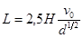
где H - глубина потока, м;
v0 - средняя скорость потока, м/с;
d - диаметр камня, см.
12.52. Выравнивание каменной наброски с приданием надлежащего профиля откосу следует производить после её осадки.
Выравнивание наброски под водой производится водолазами с точностью ±20 см.
Правильность укладки камня под водой контролируется промерами и водолазным обследованием.
Защита габионами
12.53. Надводные откосы, защищаемые габионами, должны быть предварительно выровнены с засыпкой ям и выбоин песком или каменной мелочью.
Подводные откосы должны быть подготовлены согласно указаниям СНиП 3.07.02-87. Планировки не требуется.
12.54. Материалы, применяемые для габионов, должны удовлетворять следующим требованиям: проволока диаметром 2-5 мм для сетки должна быть гибкой, оцинкованной; проволока для каркаса ящика диаметром 6-8 мм; камень должен по своим размерам превышать размеры ячеек сетки.
Сетки для обтяжек каркасов делаются в два оборота (рис. 5, а) или в пол-оборота (рис. 5, б).
Прикрепление сетки к каркасу ящика показано на рис. 6.
Рис. 5. Деталь скрутки сетки габиона:
а - в два оборота; б - в пол-оборота
Рис. 6. Прикрепление сетки к каркасу
12.55. Загрузка габионов камнем должна производиться следующим образом:
а) в местах, не покрытых водой, или там, где глубина воды не превышает высоты габионов, сначала устанавливают порожние ящики, а затем заполняют их камнем;
б) если габионы подлежат укладке в местах, покрытых водой, порожние ящики загружают камнем вблизи этих мест, а затем транспортируют их к месту укладки подъемными приспособлениями или по слегам. Слеги должны быть достаточно прочны и удобны для удаления их из-под габионов. Сбрасывание габионов в воду не допускается.
Укладка камня в габионах должна быть достаточно плотной и обеспечивать сохранение их формы. Камень следует укладывать равномерно по всей площади габиона. При наличии камня разных размеров необходимо его рассортировать. У сетки следует укладывать камень более крупный, а внутрь габиона - мелкий. Наброска камня в габионы не допускается.
Во избежание нарушения формы габионов при загрузке их камнем следует производить растяжку каркасов ломами, забиваемыми в грунт у вертикальных ребер, или же применять опалубку.
12.56. На откосах следует укладывать тюфяки длинной стороной в направлении уклона откоса, а тюфяки, прикрывающие подошву, - вдоль подошвы.
При укладке габионов в несколько рядов нижний ряд следует размещать своей короткой стороной в сторону воды, а остальные габионы укладывать с перевязкой швов, причем перевязку следует делать не менее как на 1/3 длины нижележащего габиона.
12.57. Габионы надлежит соединять между собой скрутками из оцинкованной проволоки толщиной не меньше толщины проволоки, примененной для вязки сеток. Скрутки следует прикреплять исключительно к ребрам каркаса и располагать не далее 25 см друг от друга.
Защита хворостяными тюфяками
12.58. Подводные откосы и дно в их подошве, которые намечено закрыть хворостяными тюфяками, должны быть подготовлены согласно указаниям СНиП 3.07.02-87. Планировки не требуется.
12.59. Строительная площадка для изготовления тюфяков на реке в летний период должна находиться вблизи места их погружения или выше по течению для спуска тюфяка по воде. По своим размерам площадка должна быть достаточной для вязки и спуска тюфяков, хранения материалов, а также для размещения на ней временных вспомогательных строений.
Камень для загрузки тюфяков следует складывать непосредственно у места погружения.
12.60. Хворост для изготовления хворостяных канатов, настилов, плетневых ограждений и виц должен быть прямым и гибким. Лучше всего удовлетворяет этим условиям хворост ивовых или тополевых пород.
При недостатке или отсутствии вблизи места работ порослей ивовых или тополевых пород можно использовать молодые деревья других лиственных пород (березы, осокоря и др.). Хворост хвойных пород может применяться в исключительных случаях и только в настилку.
Хворост следует заготовлять или заблаговременно в осенне-зимний период, или в самом начале весны, или тотчас же после спада паводковых вод (в случае, если заготовка ведется на затопленной пойме реки) и расходовать его соответственно зимой и весной.
Хворост поздней весенней или летней рубки должен использоваться как можно скорее и во всяком случае не позднее, чем через месяц после рубки при обязательном хранении его в больших штабелях, закрытых от солнца.
Применять засохший и подгнивший хворост для вязки тюфяков нельзя.
12.61. При массовой заготовке хвороста его следует хранить в штабелях, имеющих ширину, равную длине хворостин, высоту до 2 и длину до 25 м. В штабелях хворост складывают комлями в одну сторону.
Штабеля по бокам ограждаются кольями, забиваемыми в грунт. Хворост, заготавливаемый для виц и канатов, следует хранить в отдельных штабелях.
Хворост для настилки должен быть толщиной не более 4-5 см и длиной не менее 2 м, а для вязки канатов - маловетвистый, толщиной в комле не более 2 см и длиной не менее 2,5 м.
12.62. Колья, предназначенные для плетневых ограждений по верху тюфяка, должны быть преимущественно ивовыми и иметь толщину от 3 до 7 см, а длину - от 1,3 до 1,75 м (в зависимости от толщины кладки тюфяка).
Колья следует хранить в штабелях высотой до 1,5 м из перекрещивающихся рядов.
12.63. Вицы необходимо изготовлять только из тонких, гибких и достаточно прочных хворостин ивовых пород, имеющих длину 1,5-2 м и толщину в комле 1,25-1,5 см.
В целях увеличения гибкости виц их следует пропаривать. Веревка должна быть пеньковой, смоляной, диаметром 7-10 мм, допускающей напряжение не менее 5 МПа.
Проволока должна применяться отожженная диаметром 2-4 мм.
Камень, применяемый для загрузки тюфяка, должен быть водостойким с плотностью не менее 1,8 т/м3 и по своим размерам удовлетворять требованиям проекта.
12.64. Хворостяные канаты следует изготовлять на козлах или станках.
Длина хворостяных канатов должна назначаться в зависимости от размеров тюфяка в продольном и поперечном направлениях, а толщина их в стянутом состоянии должна быть не менее 12 см.
Раскладывать хворостины на станках и козлах следует комлями в одну сторону с таким расчетом, чтобы каждая новая хворостина перекрывала ранее уложенные не менее, чем одной третью своей длины.
Следует стремиться к получению канатов одинаковой толщины; с этой целью необходимо вводить в канат новые хворостины равномерно по его длине так, чтобы за каждую следующую перевязку заходила комлем одна новая хворостина.
Укладка нескольких хворостин в одно место не допускается.
Хворост, разложенный на станках или козлах, должен быть обжат до требуемой толщины при помощи специального хомута, а затем перевязан вицами через 25-30 см по всей длине. Перевязка канатов проволокой или веревками, как правило, не разрешается.
В случаях применения проволоки перевязку канатов следует делать не менее, чем в два витка, концы проволоки для предупреждения травматизма работающих должны быть надежно заделаны в канате. Концы веревок следует завязывать в два узла, а заделку виц производить запуском концов под обкрутку.
Хворостяные канаты для сохранения их гибкости следует заготавливать только по мере необходимости.
Срок хранения готовых хворостяных канатов на воздухе в летнее время должен быть не более 5 суток. Хранить канаты следует в воде.
В зимний период канаты могут сохраняться в течение длительного времени.
12.65. Размеры сетки из хворостяных канатов в плане должны соответствовать размеру тюфяка. Общий размер тюфячного покрытия, а также размеры отдельных тюфяков указываются в проекте с учетом способа и времени производства работ.
12.66. Вязку нижней сетки для тюфяков разрешается производить:
а) летом - на специально устроенных стационарных или плавучих стапелях;
б) в зимнее время - на льду для затопления тюфяка вместе со льдом; над майной на перекинутых через нее пластинах; на плавучем стапеле, устроенном на льдине и перемещаемом вдоль берега по мере спуска со стапеля тюфяка с постепенным наращиванием продольных канатов.
12.67. Стапели для изготовления и спуска на воду хворостяных тюфяков следует выполнять из бревен или пластин, очищенных от коры и сучков и имеющих ровную и гладкую поверхность.
Береговые стационарные стапели следует применять при большом объеме хворостяных работ, когда нужно изготовить значительное количество тюфяков крупного размера. Береговые стапели с катками должны иметь уклон 1:7. Для тюфяков шириной до 20 м можно применять подвижные катки, а при большей ширине тюфяков целесообразно между прогонами стапелей устанавливать стационарные деревянные катки, вращающиеся на металлических осях в простейших подшипниках. Направление таких стапелей должно быть не перпендикулярно течению, а под некоторым углом к нему, чтобы при спуске не загнуло течением верховой угол тюфяка. Для того, чтобы тюфяк при спуске не упирался в дно, глубина воды у конца стапеля должна быть не менее 2 м. Малые тюфяки площадью до 200 м2 можно вязать на стапелях с уклоном 1:3 - 1:4 без катков.
Плавучие стапели для вязки тюфяков следует устанавливать вблизи берега и закреплять их к сваям или якорям.
12.68. Вязку сетки для тюфяков на береговом стапеле или на пластинах над майной (зимой) следует начинать с раскладки нижних поперечных прутяных канатов нормально к каткам стапеля или пластинам, перекрывающим майну. Канаты укладываются на расстоянии 1 м друг от друга. Затем по этим канатам на таком же расстоянии следует раскладывать продольные канаты с тем, чтобы образовались клетки размерами 1×1 м. В остальных случаях вязку сетки можно начинать как с продольных, так и поперечных канатов.
Концы укладываемых в сетку канатов должны выпускаться наружу на 0,35-0,40 м.
При вязке тюфяков на стапелях в местах пересечений продольных и поперечных канатов их стягивают двойными скрутками из проволоки d = 4 мм или просмоленной веревкой, затягиваемой узлом; при этом оставляют концы, длина которых должны быть больше толщины тюфяка с учетом запаса для связывания их узлом.
При вязке тюфяков над майнами места пересечения канатов нижней сетки должны быть перевязаны линьками (веревками), причем длина линьков крайних и расположенных посередине (считая поперек майны) должны быть больше остальных на 1 м. Такие удлиненные линьки следует иметь вдоль майны через 1 пластину, т.е. через 2 м один от другого.
12.69. По окончании вязки нижней сетки около ее узлов в канаты следует вставлять так называемые козульки (колья диаметром 2-3 см с развилкой в вершине), которые заготавливают из любых древесных пород. Козульки заготавливают такой длины, чтобы они возвышались на 0,25-0,30 м над верхом тюфяка. На развилку козульки набрасывают петлю из концов проволоки или веревки, которой стянут узел нижней сетки, для дальнейшей стяжки тюфяка.
12.70. Хворостяная настилка должна укладываться по нижней сетке в два слоя.
При вязке тюфяков на стапелях с катками хворостины следует укладывать в нижнем слое комлями, обращенными к границам тюфяка параллельно нижним канатам сетки, вершинами в середину; свес хворостин за наружный канат нижней сетки должен быть не менее 15 см. В подстилке хворостины должны перекрывать друг друга не менее чем на треть их длины.
В верхнем слое хворостины следует укладывать перпендикулярно к хворостинам нижнего слоя в том же порядке, как и в нижнем слое; на реках хворостины кладут комлями против течения, за исключением хворостин, укладываемых крайними с низовой стороны. Эти хворостины обращают комлями в обратную сторону.
Укладка слоев должна производиться одновременно с противоположных сторон тюфяка.
Толщина нижнего слоя подстилки должна быть на 5-10 см больше половины толщины тюфяка.
При вязке тюфяков над майной на пластинах можно укладывать нижний слой хвороста параллельно продольным верхним канатам нижней сетки. В этом случае тюфяк будет тоньше, так как продольные канаты будут втоплены в слой хвороста.
12.71. Верхняя сетка из хворостяных канатов вяжется так же, как и нижняя, и должна укладываться так, чтобы ее продольные и поперечные канаты располагались над соответствующими канатами нижней сетки.
Для окончательной вязки тюфяка свободные концы стяжек из проволоки или вервки, временно прикрепленные петлей на козульках, следует обкрутить около верхнего каната верхней сетки. Затем свободные концы стяжек следует пропустить под нижний канат той же сетки, сильно натянуть при одновременно осаживании тюфяка и завязать по диагонали пересечения канатов верхней сетки глухим узлом: проволокой - в две-три обкрутки, а веревкой - в два узла.
12.72. Для удержания каменной загрузки тюфяков на откосах круче 1:1,5 следует делать плетневые ограждения и с этой целью забивать в хворостяные канаты колья через 0,3-0,35 м друг от друга. Длину кольев следует назначать с учетом толщины каменной загрузки, обеспечивающей погружение тюфяков в воду.
12.73. Перед спуском тюфяка со стапеля на воду к нему должны быть прикреплены пеньковые канаты, служащие тяговыми и направляющими приспособлениями, а также предназначенные для расчаливания тюфяка перед его потоплением. Их прикрепляют, пропуская через всю толщину тюфяка на расстоянии от его края, не меньшем соответствующего положению третьего от края хворостяного каната из числа канатов, расположенных нормально к усилию, действующему на закрепляемый канат.
12.74. Слеги, по которым производится спуск на воду хворостяного тюфяка, должны иметь гладкую и ровную поверхность, а также легко извлекаться из-под тюфяка с применением соответствующих механизмов (лебедок, талей и др.). Пользоваться слегами следует лишь при малых объемах работ при спуске небольших по реперу тюфяков.
Для того чтобы хворостяной тюфяк при спуске его со стационарных стапелей не подворачивался, необходимо опускаемый конец тюфяка равномерно оттягивать в сторону реки.
После опускания тюфяка на воду в майну путем вытаскивания из-под него пластин на её края над тюфяком должны быть уложены через 2 м одна от другой пластины так, чтобы они приходились над более длинными линьками, которыми тюфяк подвязывается к пластинам.
Укладку тюфяков следует начинать с нижнего по течению конца защищаемого участка.
При вязке хворостяного тюфяка непосредственно на льду скалывание льда вокруг тюфяка разрешается лишь после надежного закрепления его на оттяжках.
12.75. Толщина наброски из камня должна быть установлена проектом.
При погружении тюфяков вместе со льдом толщина наброски должна быть увеличена. Величина дополнительной пригрузки определяется в зависимости от толщины льда.
Хворостяные тюфяки следует загружать камнем в продольном направлении по течению реки, а в поперечном направлении - от берега к реке.
После загрузки камнем тюфяка, находящегося в майне, для погружения его на дно в первую очередь надо обрубать подвязки к пластинам на верховой стороне и посередине, а через 1-2 с - на низовой стороне.
12.76. Для осуществления технического надзора за производством работ необходимо:
а) следить за выполнением требований проекта и настоящего раздела как в отношении конструкции, так и в отношении размеров и качества материалов, употребляемых для изготовления тюфяков;
б) следить за надлежащей прочностью стапелей;
в) проверять до начала спуска в воду хворостяных тюфяков правильность расстановки на месте работ и достаточность механизмов, а также удерживающих и направляющих приспособлений;
г) установить соответствующими промерами, а в ответственных местах обследованием водолазами готовность мест для опускания на них хворостяных тюфяков;
д) при работе вблизи фарватера судоходных и сплавных рек проверить установку соответствующих сигналов ограждения.
12.77. Готовый тюфяк перед его потоплением должен быть принят приемочной комиссией, которая должна проверить соответствие конструкции и размеров тюфяка проекту, а также качество выполнения работ.
После погружения тюфяка в воду приемочная комиссия должна проверить соответствующими промерами, а в ответственных местах обследованием водолазами правильность положения его на дне.
Защита растительными (лесными) насаждениями
12.78. Защита растительными насаждениями не требует предварительной планировки откосов земляных сооружений или берегов.
Для лесных насаждений следует использовать местные влаголюбивые породы, способные развивать густую наземную поросль и достаточно мощную корневую систему, быстро произрастать в любых почвенных условиях и выдерживать более или менее длительное затопление.
Этим требованиям наиболее полно удовлетворяют лесные породы из семейства ивовых: ивы, осокорь, чозения.
12.79. Посадку ивовых пород следует производить одним из следующих способов:
a) в шахматном порядке одиночными черенками в лунки или щели, глубиной до 60 см, приготовленные на вспаханной земле;
б) черенками гнездами (5-6 черенков в гнезде) в лунки диаметром на дне 30 см и глубиной 40-60 см;
в) путем устройства плетневых прорастающих полос в канавах глубиной 50-60 см и шириной по дну 30 см.
Колья для устройства плетней в канавах следует ставить комлями вниз на глубину 30 см через 40 см один от другого, а плетень делать с наклонной заплеткой живых здоровых хлыстов и с выпуском концов кольев и хлыстов наружу. При засыпке канавы и плетня растительной землей её следует слегка утрамбовывать;
г) хлыстами, т.е. целыми побегами; применяется в пониженных, глубоко затопляемых местах и производится одиночными хлыстами и гнездами. При посадке гнездами в каждую лунку глубиной около 70 см высаживают по 4-5 хлыстов.
При посадке черенками или хлыстами расстояния между лунками в ряду, а также между рядами следует принимать согласно табл. 16.
Таблица 16
|
Способ посадок |
Виды ив |
Расстояния, м |
|
|
между рядами |
в ряду |
||
|
Одиночная посадка |
Древовидные |
0,8 |
0,8 |
|
Кустарниковые |
0,8 |
0,4 |
|
|
Посадка гнездами |
Древовидные |
0,8 |
1,0 |
|
Кустарниковые |
0,8 |
0,5 |
|
Посадка защитных лесонасаждений должна производиться ранней весной до начала сокодвижения или осенью после его прекращения, но до замерзания почвы.
12.80. Для благоприятного развития посадок необходим надлежащий уход за ними, особенно в первые 3-4 года.
Защита асфальтобетоном
12.81. Асфальтобетон (сборный или монолитный) применяется как на надводных, так и на затопленных откосах. Защита затопленных откосов сооружений и берегов рек сборными матами (картами) выполняется механизированными способами, одним из которых является укладка матов с помощью барабана.
12.82. Откос, защищаемый сборными асфальтобетонными плитами, должен быть предварительно спланирован так, чтобы при проверке в надводной части откоса выступы и впадины не превышали 10 см. Более тщательная планировка должна производиться под швами сборных элементов непосредственно перед их укладкой.
В подводной части откоса выполняется грубая планировка.
12.83. При защите откоса сборными асфальтобетонными плитами с открытыми швами по типу защиты из сборных железобетонных плит укладка их на сплошной обратный фильтр должна производиться согласно указаниям настоящего раздела (пп. 12.26 и 12.27).
Асфальтобетон для защиты откосов по механической прочности, водостойкости, термостойкости и гибкости должен отвечать требованиям проекта.
Покрытие из пластичного асфальтобетона должно иметь ориентировочные физико-механические свойства, приведенные в табл. 17.
Таблица 17
|
Свойства асфальтобетона |
Для надводных покрытий |
Для покрытий, укладываемых в воду |
|
Временное сопротивление сжатию при 20 °С для образцов размерами d = h = 60 мм, R 20 МПа |
≥2,5 |
≥1,5 |
|
Коэффициент
теплоустойчивости 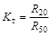 |
≤4 |
≤4 |
|
Коэффициент водостойкости 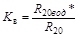 |
≥0,90 |
≥0,95 |
|
Остаточная пористость, % от объема |
≤3 |
≤3 |
|
Водонасыщение под вакуумом, % от объема |
Не более 1 |
|
|
Набухание, % от объема |
Не более 0,5 |
|
|
Количество водорастворимых солей, % |
Не более 0,5 |
|
|
Плотность, г/см3 |
2,20-2,30 |
|
* R20вод - временное сопротивление сжатия при 20 °С в водонасыщенном состоянии.
12.84. Вид асфальтобетона (мелкозернистый, песчаный) устанавливается в зависимости от толщины покрытия.
Количественный состав, т.е. процентное соотношение минеральных материалов, должен подбираться в зависимости от имеющихся местных материалов таким образом, чтобы смесь имела наибольшую объемную массу, характеризующую её плотность.
Такая смесь может быть получена при условии, когда количество частиц меньшего диаметра составляет по массе 0,8-0,9 количества частиц ближайшего большего диаметра, т.е. коэффициент сбега должен быть равен 0,8-0,9. В табл. 18 приведен примерный фракционный состав оптимальной смеси.
На рис. 7 приведены области оптимальных гранулометрических составов минеральных составляющих мелкозернистого жесткого и пластичных песчаных асфальтобетонов, ограниченных кривыми коэффициентов сбега 0,8 (нижний предел) и 0,9 (верхний предел).
Рис. 7. Области оптимальных гранулометрических составов минеральных составляющих асфальтобетона:
1 - мелкозернистый жесткий dmax = 15 мм;
2 - пластичный песчаный dmax = 5 мм;
3 - то же dmax = 2 мм
Асфальтобетон, укладываемый под воду механизированным способом с помощью барабана, должен иметь состав минеральной части, гранулометрическая кривая которого соответствует приведенной на рис. 7 области 3.
12.85. Количество битума для подобранной минеральной части определяется в лаборатории путем испытания образцов асфальтобетона, свойства которого должны соответствовать значениям табл. 17. Для надводных покрытий три образца, выполненные в виде балочек размером 25×4×4 см должны при температуре 18-20 °С выдержать за 24 ч четырехкратный изгиб на кружало, сделанном по круговой кривой радиусом 1 м, без появления видимых глазом трещин. Для покрытий, укладываемых под воду с помощью барабана, деформативность асфальтобетона определяется по методике, изложенной в рекомендуемом приложении 35.
Таблица 18
|
Содержание частиц минерального материала, %, мельче следующих, мм |
Ориентировочное количество битума, % |
||||||||
|
15 |
5 |
2 |
1 |
0,5 |
0,25 |
0,15 |
0,074 |
||
|
Жесткий мелкозернистый (со щебнем или гравием) |
100 |
60-90 |
40-75 |
20-60 |
20-40 |
15-30 |
12-30 |
10-25 |
8-11 |
|
Пластичный песчаный: |
|||||||||
|
крупный |
- |
100 |
65-100 |
50-80 |
35-65 |
25-50 |
20-45 |
15-30 |
9-12 |
|
мелкий |
- |
- |
100 |
70-85 |
50-70 |
35-60 |
25-50 |
17-40 |
10-16 |
12.86. Подбор исходных материалов для приготовления асфальтобетонной смеси производится не только с учетом предъявляемых к ним требований, но также в зависимости от вида и назначения асфальтобетона. Выбранные материалы должны обеспечивать необходимые свойства асфальтобетона. Испытания их производятся в соответствии с требованиями государственного стандарта (см. пп. 12.91-12.93). Окончательная пригодность материалов определяется испытанием опытных образцов асфальтобетонной смеси согласно ГОСТ 12801-84 с добавлениями и изменениями, установленными проектом.
12.87. Для приготовления асфальтобетонной смеси могут применяться битумы нефтяные дорожные вязкие марок БН 90/130, БН 60/90, БНД 90/130, БНД 60/90 и БНД 40/60. Для южных районов допускается применять в виде добавки к указанным битумам битум нефтяной строительный БН 70/30. Битумы по своим свойствам должны отвечать требованиям ГОСТ 22245-76 и ГОСТ 6617-76.
12.88. В качестве минерального порошка следует применять тонкоизмельченный материал, получаемый в результате помола каменных, главным образом известняковых пород, с временным сопротивлением сжатию не менее 15 МПа, не содержащих глинистых примесей.
Можно также использовать в качестве наполнителя цементы любых марок (включая лежалые), если это окажется экономически целесообразным, а также порошкообразные отходы промышленности.
Минеральный порошок должен быть сухим, рыхлым, не комковатым и соответствовать требованиям ГОСТ 16557-78, а порошкообразные отходы промышленности - требованиям ГОСТ 9128-84.
Применение лесса в качестве минерального порошка допускается только после просушивания и первоначальной обработки, состав и характер которой определяют предварительными исследованиями для каждого отдельного вида лесса.
12.89. Щебень или гравий, применяемый для приготовления асфальтобетонной смеси, должен состоять из однородных прочных каменных пород, например базальтов, диабазов и др.
Гранитный щебень разрешается использовать для изготовления асфальтобетонной смеси только после обработки его известковым молоком и просушки или после предварительной обработки разжиженным битумом (2-3 %).
Пригодность щебня других пород без предварительной обработки должна проверяться по качеству сцепления битумной пленки с поверхностью щебня согласно указаниям ГОСТ 12801-84.
Содержание в щебне зерен пластинчатой (лещадной) или игловатой формы не должно превышать 15 %. Не допускается содержание в щебне зерен слабых и выветрелых пород в количестве 10 % по массе.
12.90. Песок горный или речной, применяемый для приготовления асфальтобетонной смеси, должен быть чистым. Содержание глинистых частиц в песке не должно превышать по массе 1 %. Ориентировочный гранулометрический состав песка для асфальтобетона приведен в табл. 19.
Таблица 19
|
Количество песка, %, проходящего через сито при отверстиях размером, мм |
|||||
|
5 |
2 |
0,25 |
0,15 |
0,074 |
|
|
Песчаный |
100 |
80-100 |
30-60 |
10-35 |
0,5 |
|
Со щебнем или гравием |
100 |
80-100 |
30-75 |
10-40 |
0,5 |
Для определения соответствия битума требованиям, указанным в п. 12.87, должны быть произведены лабораторные испытания согласно требованиям ГОСТ 11501-78, ГОСТ 11503-74, ГОСТ 11504-73, ГОСТ 11506-73, ГОСТ 11507-78, ГОСТ 11508-74, ГОСТ 11510-65*, ГОСТ 11511-65, ГОСТ 11512-65.
Из каждой прибывающей партии цистерн должны отбираться пробы в соответствии с ГОСТ 2517-85.
Хранение битумов разных марок должно производиться в отдельных битумохранилищах или отсеках.
12.92. Каждая партия минерального порошка, поставляемая заводом-изготовителем, должна сопровождаться паспортом.
В случае необходимости испытание проб минерального порошка следует проводить в соответствии с требованиями ГОСТ 12784-78.
Минеральный порошок следует хранить в сухом помещении. Для улучшения условий хранения и уменьшения улетучивания наиболее мелких фракций при его транспортировании и применении рекомендуется порошок обрабатывать разжиженным или жидким 2-3 %-ным битумом, после чего он сохраняет рассыпчатость и не впитывает влагу.
Из каждой партии принимаемого песка, гравия и щебня должна быть взята проба для лабораторного испытания. Количество проб определяется из расчета: одна проба не более как на каждые 500 м3.
Испытания проб щебня и гравия должны производиться согласно ГОСТ 8269-76, а проб песка - согласно ГОСТ 8735-75.
12.94. Асфальтобетон следует приготовлять в асфальтосмесителе, соблюдая следующие режимы:
а) минеральные материалы просушивают до полного испарения имеющейся в них воды и нагревают до 190-200 °С;
б) битум разогревают до температуры 150-160 °С;
в) минеральные материалы и битум, идущие в один замес, дозируют по массе и в исключительных случаях при малых объемах работ (10-15 т в смену) - по объему.
Выпускаемая асфальтобетонная смесь должна иметь температуру не выше 190 °С. Нижний предел температуры смеси (наиболее низкая допускаемая температура) устанавливается в каждом отдельном случае в зависимости от условий дальнейшей обработки асфальтобетона (времени, затрачиваемого на перевозку, укладку и уплотнение, температуры воздуха и основания и т.д.).
В процессе изготовления асфальтобетонной смеси необходимо контролировать её качество путем отбора проб.
Отобранные пробы подвергают лабораторному анализу для проверки дозировки компонентов, а после формовки образцы испытывают на соответствие асфальтобетона требованиям п. 12.83 настоящего раздела и проекта.
Отбор проб производится из расчета: одна проба на 50 т выпускаемой асфальтобетонной смеси, но не более одной пробы на смесь, выпускаемую каждой сменой.
Изготовление сборных армированных асфальтобетонных плит
12.95. При изготовлении плит должна соблюдаться такая последовательность работ:
а) загрузка асфальтобетонной смеси в форму в объеме, соответствующем половине установленной проектом массы изготовляемой плиты;
б) разравнивание смеси по всей форме слоем одинаковой толщины;
в) размещение поверх уложенного нижнего слоя смеси заранее заготовленного металлического каркаса покрытия (арматурная сетка, при необходимости усиленная дополнительными стержнями), выпуски которого фиксируются в проектном положении;
г) укладка и разравнивание второго (верхнего) слоя асфальтобетонной смеси;
д) уплотнение асфальтобетонной смеси.
При изготовлении плит толщиной до 5 см и при ячейках размером в армосетке менее 5×10 см укладка смеси за один прием возможна после проверки опытным путем.
Перед укладкой асфальтобетонной смеси в форму последняя должна быть очищена от прилипшего асфальтобетона.
Непосредственно перед укладкой асфальтобетонной смеси металлические борта формы следует протереть отработанным машинным маслом, а дно присыпать пылевидным материалом (например, пылеватым песком, сухим лессом) и закрыть оберточной бумагой.
Металлический арматурный каркас, очищенный от ржавчины, до его укладки на слой смеси необходимо покрывать разжиженным битумом, приготовленным из битума марки ВН-III (25-35 % по массе) и бензина (75-65 % по массе). Укладывать арматурный каркас можно только после испарения бензина, на что обычно затрачивается около 24 ч при температуре 20 °С.
Асфальтобетонную смесь следует уплотнять катками или вибраторами. При уплотнении на барабаны наносится эмульсия для устранения прилипания асфальтобетонной смеси. В состав эмульсии входят вода (60 %) и керосин (40 %).
Для стабилизации эмульсии в нее следует добавлять хозяйственное мыло в количестве 0,01 % по массе.
Масса катков устанавливается в зависимости от пластичности асфальтобетона. Для уплотнения асфальтобетонной смеси с содержанием битума 10-13 % масса моторного катка не должна превышать 1,5 т; при большем содержании битума следует применять легкие ручные катки.
Катки, применявшиеся для уплотнения грунтового основания укрепления, не рекомендуется применять при уплотнении асфальтобетонной смеси.
При изготовлении плит в стационарных формах уплотнение следует выполнять при помощи катка или съемного вибратора, а при использовании съемных форм - на стационарных вибростендах.
Уплотнение асфальтобетонной смеси следует начинать при температуре её не ниже 110 °С и заканчивать при температуре не ниже 70 °С. Для того, чтобы не допустить появления трещин при уплотнении смеси катками, лаборатория должна устанавливать верхний предел температуры смеси.
При уплотнении асфальтобетонной смеси катками количество проходов по одному следу должно обеспечивать необходимую плотность асфальтобетона, определяемую лабораторией по параметрам, характеризующим водонасыщение и объемную массу.
12.96. Изготовленные плиты следует вынимать из форм при температуре асфальтобетона не выше 40 °С.
Для ускорения оборачиваемости форм рекомендуется применять искусственное охлаждение (поливка водой, опускание плит с формами в воду и др.).
После изготовления асфальтобетонных плит должны быть взяты вырубки остывшего асфальтобетона для проверки соответствия требованиям проекта его физико-механических свойств и толщины плит.
На каждые 150 м2 следует брать пробы в виде двух вырубок.
Отклонения от установленной проектом толщины плит не должны превышать ±10 %.
При производстве асфальтобетонных работ мастер должен вести журнал (рекомендуемое приложение 36).
В укладываемых плитах не допускаются трещины, задиры, обнажения арматуры.
Изготовление монолитных асфальтобетонных покрытий
12.97. Перед укладкой асфальтобетонной смеси на откос на последнем в пределах, соответствующих одной захватке, должна быть установлена деревянная или металлическая опалубка, высота которой должна быть равна толщине покрытия, указанной в проекте. При необходимости опалубка оборудуется приспособлениями для натяжения арматуры каркаса и фиксаторами для установки его в положение, указанное проектом.
Площадь одной захватки определяется производительностью асфальтобетонного смесителя, дальностью перевозки смеси и температурой воздуха так, чтобы при очередной укладке асфальтобетона температура края ранее уложенного асфальтобетона была не ниже 50 °С.
Укладка и уплотнение асфальтобетонной смеси, а также проверка физико-механических свойств асфальтобетона и толщины слоя покрытия должны выполняться в соответствии с указаниями проекта, при этом:
а) необходимое число проходов катка и температура асфальтобетонной смеси определяются согласно указаниям п. 12.95;
б) все недоступные для катков места должны уплотняться вибраторами или ручными трамбовками;
в) при перерывах в укладке смеси необходимо неуплотненную застывшую смесь с краев покрытия снимать (скалывать), а затем края их прогревать.
Укладка гибких покрытий на подводную часть берега реки
12.98. Затопленные береговые откосы должны быть спланированы путем срезки грунта и подсыпки несвязным грунтом. На спланированном откосе не должно быть неровностей (выступов и впадин), превышающих 0,5 м на длине 5 м.
Применяемые для защиты подводных частей берегов рек железобетонные и асфальтобетонные покрытия толщиной 5-7 см, укладываемые с помощью барабана, должны обладать необходимой гибкостью, достигаемой разрезкой сборного железобетонного покрытия на плиты размером, по направлению их сворачивания не большим 0,10-0,11 диаметра барабана, а также пластичностью асфальтобетона, свойства которого должны отвечать требованиям настоящего раздела.
Покрытия должны укладываться на затопленный откос нормально к линии берега целыми картами (матами), длины которых назначаются проектом, а ширину карт следует делать примерно равной длине барабана.
Для укладки покрытий под воду рекомендуется применять барабан одного из следующих видов: барабан, обеспечивающий укладку карт площадью до 500 м2 массой до 60 т с помощью плавучего крана грузоподъемностью 100 т и барабан с изменяющейся плавучестью, с помощью которого можно укладывать как карты площадью более 1000 м2 и массой более 120 т, так и карты любого меньшего размера и массы.
При крановой технологии (с использованием барабана с плавучим краном) длину рабочей части барабана, а следовательно, и ширину карты покрытия следует определять в зависимости от грузоподъемности плавкрана по формулам:
Lp = b + (0,5 - 1,0) и 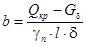
где Lp - длина рабочей части барабана, м;
Gδ - масса конструкции барабана, т;
Qкр - грузоподъемность плавкрана, т;
b, l, δ, γn - соответственно ширина, длина, толщина, м, плотность материала карты покрытия, т/м3.
Практически L не бывает больше 8 м.
В случае применения плавучего барабана его длина может быть 20 и более метров.
Для возможности применения бескрановой технологии (с использованием плавучего барабана) плавучий барабан должен обладать водоизмещением, которое зависит от диаметра. Диаметр барабана определяется формулой
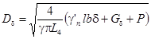
где L4 = b + (0,5 - 1,0) - длина цилиндрической части барабана, м;
Gδ - конструктивная масса барабана, т;
P - требуемая положительная плавучесть при транспортировании барабана с покрытиям на плаву, т;
γ′n - соответственно плотность покрытия в воде, т/м3;
γ - плотность воды, т/м3.
Ориентировочно следует принимать на 1 м длины барабана массу конструкции 0,7 т и положительную плавучесть 0,5 т/м.
12.99. Необходимо придерживаться такой последовательности работ по защите затопленных откосов:
а) при использовании барабана с плавкраном (рис. 8, а):
намотка карты покрытия на барабан, расположенный на стенде, у уреза воды;
перемещение барабана плавкраном с помощью буксира в район защиты берега;
перемещение плавкрана по створу на становом и швартовых тросах;
постепенное раскатывание покрытия по откосу; в этом случае барабан следует удерживать на гаке на весу;
возвращение плавкрана с пустым барабаном к стенду намотки;
б) при использовании плавучего барабана (рис. 8, б):
намотка карты покрытия с понтона на барабан, пришвартованный к понтону;
транспортировка барабана с покрытием буксирным катером в район берегозащитных работ;
подвеска барабана с покрытием к укладочному понтону, перемещение его по створу, постепенная расстилка покрытия по откосу;
транспортировка барабана на плаву буксирным катером для новой намотки.
Карта покрытия должна свободно укладываться на барабан так, чтобы рулон был плотным, без складок. Края отдельных витков в рулоне не должны выступать более чем на 10 см. Поэтому при намотке свободную ветвь последнего витка следует натягивать с силой примерно 1 кН на 1 м ширины карты покрытия.
При намотке по крановой технологии барабан на стенде должен выставляться на осях и не передавать свою массу на покрытие.
Намотку карт, длина и ширина которых не превышает соответственно 10 и 5 м, допускается (для обоих типов барабанов) вести путем прокатывания барабана по покрытию, расположенному на ровной поверхности. Для плавучего барабана в этом случае понтон для намотки не требуется, а рулон можно спустить на воду по спланированному откосу из несвязного грунта.
Рис. 8. Схема работ по намотке (I) и укладке (II) карт покрытия:
I - намотка с помощью барабана и плавучего крана (а) и с помощью плавучего барабана (в); II - укладка с помощью барабана и плавучего крана (б) и с помощью плавучего барабана (г)
1 - плавкран; 2 - барабан; 3 - понтон; 4 - плавучий барабан; 5 - укладочный понтон; 6 - откос
12.100. Для придания плавучему барабану устойчивого положения (при намотке на него карты покрытия у понтона) необходимо создавать барабану путем заполнения водой отрицательную плавучесть не менее 0,5 т на 1 м его длины.
12.101. Окружная скорость при намотке железобетонного покрытия не должна превышать 0,5 м/с. Асфальтобетонное покрытие наматывается с окружной скоростью, зависящей от деформативности материала, определяемой в соответствии с рекомендуемым приложением 35.
12.102. При транспортировании плавучего барабана на плаву буксирным катером необходимо сообщить барабану положительную плавучесть, равную не менее 0,5 т на 1 м его длины. Осадка барабана в воде в этом случае не должна быть больше 0,75 диаметра рулона.
Буксирный канат, с помощью которого барабан с покрытием транспортируется на плаву к створу укладки, должен быть рассчитан на усилие
Pтр = 0,6 D2V2, (16)
где Pтр - нагрузка в канате, кН;
D - диаметр рулона, м;
V - скорость буксирования относительно воды, м/с.
12.103. Барабан с покрытием, доставленный в район берегозащитных работ и подвешенный на гаке плавкрана или укладочном понтоне, следует раскатывать в направлении, перпендикулярном берегу; в этом случае на берегу должны быть выставлены ориентирующие створные вехи. Расстояние между вехами в одном створе не должно быть меньше половины длины карты и выставляться они должны по 30″ теодолиту перпендикулярно магистральному ходу, проложенному вдоль берега. Задняя веха должна быть выше передней, так, чтобы с крайней точки створа с реки ее верх был виден над передней вехой на величину не менее 1 м.
12.104. Для удержания крана или укладочного понтона в створе укладки их необходимо раскрепить на двух верховых и одном или двух низовых канатах, при этом перемещение плавсредств по створу следует осуществлять с помощью станового каната. Отклонения от створа плавкрана или понтона в процессе укладки не должны быть больше ±0,5 м.
12.105. В районе защищаемого берега реки раскатка карт должна выполняться последовательно снизу вверх относительно течения реки с нахлестом одной на другую на величину, указанную в проекте, но не менее чем на 1 м.
Во время раскатки барабан должен находиться в непосредственной близости от грунта откоса, не более чем на расстоянии 1,5 м, чтобы не создавалась большая парусность в потоке от спускающейся с барабана на откос ветви покрытия.
Канаты, на которых подвешен барабан в период раскатки, должны иметь в вертикальной плоскости, нормальной к потоку, угол отклонения от вертикали в сторону защищаемого берега около 10°, что обеспечит натяжение покрытия на откосе и исключит образование в нем складок.
Для обеспечения устойчивого положения барабана в текущем потоке отрицательная плавучесть барабана не должна быть меньше 1 т на 1 м длины барабана.
12.106. Гидродинамические усилия, возникающие при обтекании барабана потоком в период укладки покрытия и передающиеся на канаты, на которых плавкран или понтон удерживается в створе укладки, рекомендуется определять в соответствии с обязательным приложением 37.
При глубинах реки, не превышающих 4 м, допускается укладка покрытия с барабана находящегося на поверхности воды, а при укладке карт, длина которых не превышает 10 м и ширина 5 м, допускается прокатка барабана с покрытием по откосу подводной части берега. В последнем случае должна быть выполнена планировка подводного откоса, причем неровности не должны превышать ±15 см на длине 3 м.
12.107. При средней скорости потока более 1 м/с следует (для предотвращения сноса барабана течением) применять продольный поддерживающий канат, усилие в котором рекомендуется определять в соответствии с обязательным приложением 37.
Укладка покрытия с барабана разрешается при волнении водной поверхности не выше трех баллов. У места укладки покрытия устанавливаются знаки, ограничивающие скорость движения проходящих судов.
Возведение морских берегозащитных сооружений
12.108. Указания данного Пособия не распространяются на берега приливо-отливных морей Северного ледовитого океана, Берингового, Охотского и Японского морей, (кроме побережья о. Сахалин), а также на берега искусственных водохранилищ, находящихся в стадии переработки.
12.109. При производстве и приемке работ по возведению берегозащитных сооружений на открытых морских берегах необходимо руководствоваться положениями СНиП 3.07.02-87.
12.110. Сооружения, находящиеся в стадии строительства, а также оборудование, расположенное на строительной площадке, склады материалов и сборные элементы должны быть надежно защищены от повреждения штормовыми волнениями. Указанные требования должны быть предусмотрены проектом производства работ по объекту строительства.
12.111. Допуски на геометрические размеры берегозащитных конструкций и сооружений должны быть установлены, исходя из выполнения следующих требований:
железобетонные и бетонные конструкции строящихся морских берегозащитных сооружений в соответствии с ГОСТ 13015.0-83 должны быть отнесены к классам точности от пятого до восьмого;
класс точности изготовления конкретных конструктивных элементов и сооружений в целом должен быть установлен проектом;
номенклатура и величина технологических допусков геометрических параметров в строительстве, сгруппированные по классам точности технологических процессов и операций и предназначенные для регламентации в соответствующих стандартах и других нормативных документах, приведены в ГОСТ 21779-82 и ГОСТ 21778-81.
Допуски для других параметров и показателей качества строительно-монтажных работ (раковины, сколы граней, трещины и т.п.) приведены в соответствующих пунктах настоящего раздела.
12.112. Помимо общих условий приемки в эксплуатацию построенных сооружений, изложенных в СНиП 3.01.04-87, запрещается при постройке морских берегозащитных сооружений их приемка без выполнения специальных требований охраны природы, предусмотренных проектом (особенно в рекреационных зонах), а также мероприятий по благоустройству и очистке территорий побережья от производственных отходов и загрязнений.
Подготовительные работы
12.113. При строительстве морских берегозащитных сооружений подготовительные работы должны выполняться в соответствии со СНиП 3.01.01-85 и разд. 2 настоящего Пособия.
12.114. В условиях строительства сооружений на незащищенных морских берегах подготовительные работы должны предусматривать следующие дополнительные мероприятия:
водолазное обследование дна и при необходимости траление рабочей зоны подводного берегового склона;
углубление и расчистка дна, обеспечивающие минимально допустимые глубины в районе работы плавкранов;
строительство защитных противоштормовых сооружений, предусмотренных проектом;
оборудование знаками навигационного ограждения, освещаемыми в ночное время;
оборудование сооружений, выступающих в море в зону движения маломерного флота, (по согласованию с капитаном порта) знаками навигационного ограждения, освещаемыми в ночное время;
инженерная подготовка территории строительной площадки с учетом сложных условий прибрежной зоны, которые должны получить отражение в проекте производства работ;
строительство временных причалов для швартовки плавсредств выгрузки материалов и сборных элементов конструкций, подаваемых с моря; а также для посадки и высадки людей на суда.
Геодезические, разбивочные и контрольно-измерительные работы (надводные и подводные)
12.115. Геодезические работы при строительстве берегозащитных сооружений должны выполняться в соответствии со СНиП 3.01.03-85 и СНиП 3.07.02-87, а также с требованиями разд. 3 настоящего Пособия.
12.116. В условиях строительства на незащищенных морских берегах, подверженных воздействию штормов, геодезические работы должны сопровождаться следующими дополнительными мероприятиями:
проверкой положения закрепленных на берегу разбивочных знаков, если они расположены в зоне наката волн (обязательна после каждого шторма);
определением планового и высотного положений подводных разбивочных знаков по линиям надводной разбивки при помощи геодезических приборов и мерного инструмента с закреплением их при помощи свай, буев, бакенов и т.п., которые должны быть инструментально связаны с неподвижными знаками на берегу;
введением в состав геодезических работ послештормовых контрольных промеров подводного профиля, по результатам которых может возникнуть вопрос о необходимости корректировки проектно-сметной документации. Результаты контрольных промеров подводного профиля берега должны учитываться также при определении фактического объема выполняемых строительных работ.
12.117. Точность разбивочных работ с учетом точности нанесения или закрепления соответствующих ориентиров регламентируется допусками разбивки осей в плане, допусками передачи высотных отметок в соответствии с ГОСТ 21778-81 и ГОСТ 21779-82 по 6 классу точности.
12.118. Геодезический контроль в период строительства сооружений морской берегозащиты и наблюдения за деформацией сооружений в период их возведения должны осуществляться в соответствии с разд. 3 настоящего Пособия.
Подводно-технические работы
12.119. Подводно-технические работы следует выполнять с соблюдением правил СНиП 3.07.02-87, Единых правил безопасности труда на водолазных работах, утвержденных приказом Минморфлота СССР от 16 марта 1979 г. № 53, а также указаний разд. 7 настоящего Пособия.
12.120. Данные подводных обследований водолазами заносятся в журнал работ и оформляются актом водолазного обследования (см. справочное приложение 2).
Основания берегозащитных сооружений
обследование и расчистка дна;
разбивка очертания постели в плане и по высоте;
разработка котлованов и подготовка оснований под сооружение, отсыпка и ровнение каменных постелей;
контрольные промеры при приемке законченных участков постелей и др.
12.122. Работы по устройству котлованов должны вестись захватками в соответствии с проектом организации строительства. В проекте должны быть приведены требования к чистоте выработки и допускаемым переборам грунта по глубине.
12.123. Котлованы, закладываемые вблизи или в пределах железнодорожного полотна, а также на оползневых неустойчивых участках берегового откоса, следует разрабатывать несмежными секциями в соответствии с проектом организации строительства.
12.124. Разработка грунта в котлованах с притоком вод должна производиться с водоотливом под защитой перемычек, ограничивающих их приток и предохраняющих котлован от разрушения волнением, в соответствии с проектом производства работ. Кроме того, котлованы должны быть защищены от попадания в них поверхностных вод с прилегающих территорий.
Разработку грунта в котлованах с обильным притоком воды допускается производить из-под воды без водоотлива при специальном обосновании и соблюдении требований прочности и устойчивости основания сооружений.
Разработку скального грунта под водой следует производить при помощи скалодробильного снаряда, отбойными молотками с помощью водолазов или подводными взрывами по специальному проекту.
12.125. Недоборы грунта при разработке подводных котлованов не допускаются. Переборы (углубления) грунта в отдельных местах основания по отношению к проектной отметке плоскости опирания не должны превышать:
при разработке скальных грунтов 5 см;
при разработке нескальных крупнообломочных грунтов 10 см;
при разработке глинистых и песчаных грунтов 15 см.
Места переборов грунта (углубления) должны быть заполнены сортированным камнем крупностью 5-10 см. Отсыпка камня по всей площади основания запрещается.
12.126. Перед началом отсыпки камня в воду подводное основание должно быть обследовано водолазами, после чего должен быть составлен акт обследования (см. справочное приложение 2).
Размеры камня и его физико-механические характеристики (прочность, коэффициент размягчения и др.) устанавливаются проектом и контролируются строительной лабораторией.
Отсыпка камня на каждой захватке постели должна производиться непрерывно до получения проектного профиля, не допуская образования в теле каменной наброски мягких грунтовых прослоек. При вынужденном перерыве наносы ила или песка с поверхности наброски должны быть удалены. Подготовка и расчистка основания должны повторяться каждый раз после длительных перерывов в работе. Работы по подготовке основания следует оформлять актом на скрытые работы.
12.127. Подводное ровнение поверхности каменных постелей должно быть выполнено со степенью точности, установленной проектом (грубое ровнение, тщательное и весьма тщательное).
12.128. На незащищенной акватории окончание ровнения и приемку каменной постели следует производить одновременно с началом устройства или установки конструктивных элементов. Разрывы сроков в указанных технологических операциях не допускаются.
12.129. При приемке каменной постели составляется акт, где должны быть указаны:
проектные размеры постели;
вид фактически выполненного ровнения (законченное тщательное и весьма тщательное ровнение участка постели проверяют нивелиром по сетке 2×2 м);
основные физико-механические показатели каменного материала (крупность, прочность, водопоглощение и т.п.);
отклонения от проектной отметки поверхности в пределах допусков;
объем фактически выполненной наброски;
величина осадки каменной наброски.
12.130. Требования к каменным материалам и их хранению должны соответствовать указаниям ВСН 5-84 ММФ «Применение природного камня в морском гидротехническом строительстве» и ГОСТ 22132-76.
Изготовление бетонных и железобетонных конструкций берегозащитных сооружений
12.132. Изготовление монолитных и сборных бетонных и железобетонных конструкций должно осуществляться с соблюдением требований СНиП 3.03.01-87, а также указаний разд. 5 Настоящего Пособия.
12.133. При строительстве морских берегозащитных сооружений для изготовления бетонных и железобетонных конструкций как монолитных, так и сборных должен применяться бетон, отвечающий требованиям ГОСТ 26633-85.
12.134. Отклонения от проектной толщины бетонного защитного слоя не должны превышать 5 мм.
Контроль величины защитного слоя бетона при приемке изделий должен производиться в каждом изделии с использованием неразрушающих методов на основе указаний ГОСТ 22690.0-77, ГОСТ 22690.1-77 - ГОСТ 22690.4-77 на неразрушающие методы контроля качества железобетонных изделий и конструкций.
12.135. В случае необходимости применения в береговой зоне монолитного бетона при любом виде подачи бетонной смеси в армированные конструкции высота свободного сбрасывания бетона не должна превышать 2 м.
Спуск бетонной смеси с высоты более 2 м должен осуществляться с помощью хоботов или наклонных желобов. Бетонная смесь должна укладываться в бетонируемую на месте монолитную конструкцию горизонтальными слоями одинаковой толщины без разрывов, с последовательным направлением укладки в одну сторону во всех слоях.
12.136. Извлекать сборные элементы из форм и снимать их с поддонов для отправки на склад следует после достижения бетоном 70 %-ной проектной прочности. Следует предохранять изделие от резких рывков и ударов.
12.137. Отгрузка элементов сборных конструкций берегозащитных сооружений к месту монтажа должна производиться после достижения отпускной прочности бетона и сроков его выдержки (при положительных температурах), указанных в разд. 5 настоящего Пособия.
12.138. Допускаемые отклонения показателей качества изготовления сборных и монолитных берегозащитных конструкций (кроме геометрических параметров) не должны превышать величин, указанных ниже.
Отклонения Величины допускаемых отклонений, мм
Наибольшая глубина раковин.............................................................................................. 10
Общая допускаемая площадь раковин, % от площадей граней......................................... 2
в том числе для обыкновенных массивов, предназначенных
для укладки в зону переменного уровня и для фасонных массивов................................. 1
Местные отклонения поверхности бетона от проектной
при проверке 2-метровой рейкой, кроме опорных поверхностей..................................... 5
Отклонения в расстояниях между осями ключевых колодцев
или пазами для захвата......................................................................................................... 15
в том числе для массивов в набросных сооружениях.................................................. 20
Отколы бетона на ребрах массивов, предназначенных для правильной кладки
(на одно ребро):
по длине........................................................................................................................... 300
по ширине......................................................................................................................... 50
Отколы углов массивов, измеряемые по ребрам............................................................. 100
Трещины, обнаруживаемые невооруженным глазом, за исключением
усадочных трещин, размером не более 0,1 мм........................................... Не допускаются
Отклонения Величина отклонения, мм
Плоскости и линии их пересечения от вертикали или от
проектного наклона на всю высоту изделия...................................................... Не более 50
Горизонтальность плоскости............................................................................................. ±20
Плоскость изделия при проверке 2-метровой рейкой...................................................... ±5
Длина, ширина, и высота элемента................................................................................... ±20
12.140. На каждое сборное изделие или массив должен быть составлен паспорт, в котором следует указывать:
наименование и адрес организации - изготовителя изделия;
марку изделия (условное обозначение);
дату изготовления, номер контролера;
прочность, морозостойкость, водонепроницаемость (марку) бетона в момент приемки изделия;
номер (шифр) партии.
12.141. При приемке готовых изделий должны быть проверены следующие основные показатели:
соответствие конструкции (изделия) рабочим чертежам;
качество бетона по прочности (марка бетона), а в отдельных случаях по морозостойкости, водонепроницаемости, истираемости и другим показателям, предусмотренным проектом;
величина защитного слоя бетона;
наличие и соответствие проекту отверстий, проемов, закладных частей и т.п.;
наличие документации, связанной с приемкой и испытанием материалов, которые применялись при изготовлении изделий.
Приемка партий изделий или каждого изделия в отдельности должна оформляться в установленном порядке актом освидетельствования скрытых работ или актом на приемку ответственных конструкций.
Партией считается последовательно изготовленные по одной и той же технологии и из одних и тех же материалов изделия в течение 7 дней, но не менее 5 штук.
Перечень ответственных конструкций, подлежащих приемке по специальному акту, должен быть указан в проекте берегозащитных сооружений.
Монтаж сборных конструкций
12.142. Работы по монтажу сборных железобетонных и бетонных элементов (массивы, соединительные конструкции и др.) на незащищенной акватории разрешается выполнять при волнении и скорости ветра не превышающих указанные в СНиП 3.07.02-87.
12.143. Погрузку, перевозку и разгрузку изделий на плавсредствах следует производить в соответствии со схемой, разработанной организацией, осуществляющей строительство, и согласованной с капитаном судна. Ответственность за правильность укладки, раскрепления и перевозки изделий несет капитан судна.
12.144. При перемещении груза кранами над встречными препятствиями должны быть соблюдены следующие расстояния от груза до препятствия:
при работе береговыми кранами - не менее 0,5 м;
при работе плавкранами - не менее 1,5 м.
12.145. Монтируемые элементы во избежание их раскачивания и для удобства установки в проектное положение должны быть расчалены канатами.
Сроки и место нахождения отдельных готовых сборных элементов в незащищенном состоянии на временных затопленных складах, расположенных в прибойной зоне, должны быть обусловлены проектом производства работ.
12.146. В процессе монтажа сооружений следует вести геодезический контроль правильности установки массивов по осям и высотным проектным отметкам.
Волноотбойные стены
12.147. Котлованы под фундаменты волноотбойных стен должны разрабатываться по проекту с соблюдением указаний подраздела по основаниям берегозащитных сооружений.
12.148. Волноотбойные стены, размещаемые на оползневых и неустойчивых участках берегового уступа, следует возводить отдельными несмежными секциями в соответствии с проектом.
12.149. Бетонирование фундаментов волноотбойных стен, основание которых расположено ниже отметки уровня моря, следует производить насухо с организацией водоотлива по проекту. Бетонирование или укладку блоков стены следует вести непрерывно до полного окончания работ на данной секции.
При сильном притоке воды в котлован бетонирование фундаментов допускается производить подводным способом по согласованию с проектной организацией.
При подводном бетонировании устройство опалубки должно исключать возможность вытекания раствора и размыв укладываемого бетона.
Метод подводного бетонирования должен быть определен проектом.
12.150. При бетонировании фундаментов и тела волноотбойных стен допускается применение бута в виде отдельных камней «изюма» крупностью более 150 мм. При этом должны быть соблюдены следующие правила:
размеры отдельных камней не должны превышать 1/3 наименьшего размера бетонируемой конструкции;
соотношение отдельных размеров камня не должно превышать 2,5:1;
укладываемые камни должны отстоять от опалубки на расстоянии не менее 300 мм и не соприкасаться с арматурой и закладными частями;
расстояние между укладываемыми камнями должно быть не менее 250 мм.
Прочность «изюма» должна быть не ниже минимальной прочности крупного заполнителя для данной марки бетона, морозостойкость - не ниже предусмотренной проектом для бетона конструкции.
12.151. При необходимости устройства облицовки, предусмотренной проектом, должны быть выполнены следующие требования:
облицовку из камня следует вести горизонтальными рядами на всю длину секции стены по шаблонам с выверкой проектного очертания облицовочной поверхности;
каждый ряд облицовки должен состоять из попеременно чередующихся лотков и тычков с перевязкой швов. Перевязка вертикальных швов в смежных рядах должна быть не менее 10 см;
кладку облицовки следует вести на цементном растворе М100 с крупностью зерен песка не более 2 мм.
Бетонирование тела стены следует вести слоями высотой, равной высоте ряда облицовки, по мере установки и выверки положения облицовочных камней.
12.152. Волноотбойные стены, расположенные на побережьях с галечными наносами на расстоянии менее 5 высот волн от уреза, должны иметь облицовку из камня крепких пород или искусственных материалов с предельной прочностью при сжатии не менее 60 МПа.
При наличии пляжа, шириной более вышеуказанной, облицовка передней грани стен может не выполняться, но при этом марка бетона должна быть не ниже 300, В6, с соответствующей морозостойкостью.
В конструкциях постоянных сооружений, находящихся в приурезовой зоне, нельзя применять деревянные и металлические элементы.
12.153. Швы между облицовочными камнями должны быть полностью заполнены раствором с расшивкой вогнутым швом. Толщина горизонтальных швов между камнями облицовки должна быть не более 15 мм. Для вертикальных швов их допустимая толщина должна быть в пределах 8-12 мм (средняя толщина швов 10 мм).
12.154. Укладка блоков сборной волноотбойной стены должна выполняться с соблюдением следующих допусков, мм:
отклонение массивов от фасадной линии по длине секции........................................ 30
уступы в плане между соседними массивами по фасадной плоскости...................... 10
максимальный вертикальный зазор между блоками..................................................... 30
наибольшая разность отметок поверхностей массивов одного курса
в пределах секции............................................................................................................. 20
12.155. Второй ряд блоков волноотбойных стен сборной конструкции следует устанавливать на выравнивающий слой бетона М300 с заполнителем из фракций размером не более 30 мм, уложенный по верху блоков первого ряда. Толщину выравнивающего слоя бетона следует принимать не более 30 мм.
12.156. Шпоночные колодцы сборных блоков необходимо заполнять мелкозернистым бетоном М300 после окончании монтажа каждого ряда блоков в секции.
В целях плотного заполнения швов между блоками укладываемый бетон в шпоночных колодцах следует подвергнуть вибрированию. Через каждые 10 м длины стены шпоночные колодцы необходимо оставлять незаполненными бетоном для создания осадочного шва.
Устройство застенного дренажа необходимо фиксировать актом на скрытые работы.
Откосные волнозащитные укрепления
12.157. Данный подраздел рассматривает применение следующих видов морских откосных укреплений:
бетонные или железобетонные ступенчатого типа: сборные, сборно-монолитные или монолитные;
из наброски в виде несортированного камня или фасонных бетонных массивов.
12.158. Все виды откосных укреплений с морской стороны должны иметь надежную защиту от подмыва в виде упоров, берм, непроницаемых свайно-шпунтовых ограждений и т.п. Упоры откосных укреплений следует выполнить до устройства покрытий откосов.
Отклонения планировочных отметок откосов и дна основами от проектных допускаются в пределах ±10 см. Точность планировки откосов определяется с помощью шаблонов и визирных реек, а поверхности оснований - нивелировкой.
Планируемый откос или отдельные его участки до начала работ и в процессе строительства должны быть ограждены от поступления поверхностных вод.
12.159. Уплотнение грунта откосов следует производить при оптимальной влажности, определяемой опытным путем в производственных условиях. Для уплотнения связных грунтов рекомендуется применять катки на пневматических шинах, трамбующие и вибротрамбующие машины. Для уплотнения несвязных грунтов следует применять вибрационные и вибротрамбующие машины.
Уплотнение грунта откосов должно производиться проходками уплотняющих машин снизу вверх.
Плотность грунта укрепляемого откоса, определяемая по объемной массе скелета грунта, должна во всех точках отбора проб отвечать требованиям проекта. В местах, где это требование не достигнуто, необходимо произвести дополнительное уплотнение.
Укрепление земляных откосов на участках, где имеется опасность появления оползней, разрешается начинать после выполнения противооползневых мероприятий, предусмотренных проектом сооружения.
12.160. Для организованного отвода воды из-под основания откосных укреплений следует применять обратный фильтр, который представляет собой слой песчано-галечных или щебеночных смесей с увеличением расчетной крупности каждого слоя от грунтового основания вверх к одежде укрепления откосов.
Обратные фильтры должны устраиваться, как правило, на несвязных грунтах. При необходимости защиты откосов из пучинистых, полусвязанных и связанных грунтов на них следует укладывать слой несвязанных песчаных или песчано-гравийных грунтов с учетом глубины промерзания. К этому слою проектом должны подбираться слои обратного фильтра.
Отклонения в толщине слоев обратного фильтра не должны превышать ±3 см.
12.161. После планировки поверхности откосов перед укладкой на них слоев фильтра они должны быть достаточно увлажнены поливкой (без размыва) с тем, чтобы исключить перемешивание грунта откоса с материалом нижнего слоя фильтра.
Материал дренирующей подготовки (фильтра) следует укладывать по откосу снизу вверх и уплотнять трамбованием. Для передвижения по подготовке откосов следует укладывать трапы. Подача материалов фильтра или подготовки должна производиться краном в бадьях или грейфером.
12.162. Сборные и монолитные плиты ступенчатого покрытия объединяются в карты преимущественно квадратного очертания с величиной стороны от 5 до 15 м.
12.163. Время бетонирования одной монолитной плиты толщиной более одного слоя бетонирования не должно превышать срока конца схватывания применяемого цемента.
Вибрирование бетона плит должно производиться игольчатыми вибраторами. Заглаживание поверхности отдельных карт следует производить виброрейками.
12.164. Температурно-усадочные швы железобетонных ступенчатых покрытий откоса устраиваются не реже, чем через 25-30 м. Зазоры швов этих покрытий должны быть заполнены литым асфальтобетоном с контролем полноты заполнения.
12.165. Отклонение по высоте укладки плит между собой не должно превышать 1 см, по точности стыковки соединений - 0,5 см.
Отклонения в плоскостности изделий и покрытия в целом должны быть в пределах ±2 см на базе 2 м.
12.166. Приемка работ по устройству ступенчатых откосных укреплений должна, помимо общих положений, состоять в установлении соответствия проектным данным отметок и уклонов поверхности откосов и степени уплотнения грунта, а также в проверке отсутствия переувлажненных участков и местных просадок грунта.
Волногасящие прикрытия из фасонных массивов и камня
12.167. Фасонные массивы следует применять тех типов и размеров, которые технологичны в изготовлении, обеспечивают надежную защиту побережья, обладают хорошей взаимозацепляемостью и необходимой устойчивостью.
Изготовление тетраподов необходимо производить в соответствии с требованиями ГОСТ 20425-75 на тетраподы для берегозащитных и оградительных сооружений. Фасонные массивы других типов следует изготавливать по указаниям проекта.
12.168. Для руководства по изготовлению и укладке наиболее эффективных массивов тетраподов, диподов, гексалегов и долосов следует пользоваться «Рекомендациями по проектированию и строительству волногасящих прикрытий (берм) из фасонных массивов» (М., ЦНИИС, 1979).
12.169. Отклонения от проектных размеров фасонных массивов не должны превышать значений, приведенных в п. 12.139 настоящего Пособия.
Ядро волногасящего прикрытия следует выполнять из несортированного камня. Мелкие фракции каменного материала следует отсыпать в нижнюю и центральную части ядра.
Допускаемые отклонения от проектных размеров при приемке не должны превышать величин, указанных в табл. 20.
При приемке работ должны быть представлены документальные данные о крупности отсыпанного камня в строительные части бермы: основное тело, панцирный слой, буны из камней-негабаритов и др. в порядке, установленном проектом.
Таблица 20
|
Значения допускаемых отклонений, см |
Порядок контроля |
|
|
Отметки поверхности и бровки волногасящих прикрытий, находящихся выше уровня водоема за пределами границы наката волн |
±10 |
Поперечное нивелирование |
|
Проектная отметка дна котлована |
±15 |
То же |
|
Толщина защитного панцирного слоя по ширине прикрытия |
±50 |
Промеры через 50 м |
Буны (траверсы)
12.170. Объем отсыпки наносов, формирующих волногасящие пляжи в комплексе с бунами, назначается проектом. Крупность отсыпаемых наносов (песок, галька, песчано-галечная смесь естественных карьеров или специально дробленый щебень) также строго регламентируется проектом и должна при строительстве полностью выдерживаться как одно из ведущих условий обеспечения качества работ, подлежащих отражению в акте приемки комплекса сооружений.
Отсыпка материала искусственного пляжа может выполняться только после полного окончания сооружения бун (траверсов) в пределах каждого межбунного отсека, включая возведение профилирующего гребня, чтобы исключить потери пляжевых материалов через щели между массивами, через верх бун, а также в обход головных массивов. До полного окончания сооружения межбунного отсека, что должно быть зафиксировано актом на скрытые работы, отсыпка в него пляжеформирующих материалов не разрешается.
12.171. Буны на валунно-глыбовом основании сооружаются на выровненной каменной подготовке.
Подготовку оснований для бун на скальных и размываемых (рыхлых) грунтах следует производить в соответствии с пп. 12.121-12.131.
12.172. Монтаж бун на размываемых грунтах с предварительной отсыпкой каменной постели следует вести только с моря к берегу, что обеспечивает качество укладки каменной постели под смежными массивами в местах изменения отметок её верха.
Монтаж бун на скальном основании следует производить как с берега, так и с моря в зависимости от применяемых средств механизации и экономических показателей метода производства работ.
12.173. Массивы бун и предусмотренные проектом подставки (поддоны) для них следует устанавливать под контролем водолаза. Спуск водолаза должен производиться после того, как массив спущен в воду. Дальнейшая работа крана по установке массивов ведется по команде водолаза. В период работы водолазов запрещают подъем массивов, находящихся под водой более чем на 0,2 м над основанием.
Установку подставок под массивы следует оформлять актом на скрытые работы.
12.174. Монолитную плиту по верху буны следует бетонировать непрерывно по всей длине после стабилизации осадок массивов, за которыми должен быть установлен инструментальный контроль.
12.175. Строительство бун из наклонных блоков производится на выровненном скальном основании.
Работы по постройке бун из наклонных блоков необходимо начинать с устройства корневой части буны. Для правильной установки первой наклонной плиты буны и её сопряжения с волноотбойной стеной (или с коренным береговом уступом) необходимо забетонировать первый корневой участок длиной 1-2 м с наклонной передней гранью.
12.176. Установка первых наклонных блоков буны на участке длиной 7-8 м производится краном на гусеничном ходу, который располагается на площадке сбоку возводимой части буна.
На построенную корневую часть буны по насыпи из местного грунта переходит монтажный кран, который, продвигаясь по буне в сторону моря, продолжает дальнейшую установку блоков, чередуя её с подготовкой скального основания. Блоки подаются автотранспортом по готовой части буны. Для обеспечения безопасности работы автотранспорта верх готовой части буны должен быть выровнен и снабжен колесоотбойными брусьями.
При постройке морской части буны на глубинах более 2 м под наклонные блоки устанавливаются подставки (поддоны).
12.177. Для усиления головной части буны, построенной из наклонных блоков с подставками, должно быть предусмотрено омоноличивание полостей наклонных блоков по длине бун на 5-8 м, считая от морского конца. Заполнение следует производить методом подводного бетонирования. Для образования замкнутой полости омоноличиваемого участка проемы блоков перед их установкой необходимо закрыть экранами. Все наклонные блоки, заключенные между экранами, должны иметь отверстия для пропуска труб при подводном бетонировании и свою маркировку.
12.178. Допуски по отклонению от проектных отметок при устройстве выравнивающего основания в скальных грунтах и сборке буны, а также перепады по верху смежных блоков не должны превышать ±5 см. Максимально допустимые зазоры между блоками 3 см, смещение блоков от продольной оси буны не должно превышать 5 см.
После окончания монтажа буны следует произвести бетонирование её выравнивающей плиты и профильного гребня.
Буны из Т-блоков
12.179. Строительство бун из Т-блоков на размываемых галечных грунтах производится без устройства каменных постелей.
Отрытие котлована под блоки следует производить на полную ширину их опорной плиты.
Планировка котлована должна производиться водолазами. Величина отдельных углублений от проектной плоскости опирания (дна котлована) не должна превышать 20 см.
В местах опирания выступов опорных плит Т-блоков на проектную отметку основания должна быть выполнена тщательная планировка поверхности основания на ширину 1 м. Величины отдельных углублений на спланированной поверхности не должны превышать 8 см. Приемка котлована должна быть оформлена актом на скрытые работы.
12.180. Величина зазора в вертикальных швах смежных Т-блоков не должна превышать 10 см.
Сварку выпусков арматуры в торцевых стыках блоков следует производить непосредственно после установки блоков в проектное положение.
Омоноличивание стыков блоков бетоном следует производить после отсыпки камня в проемы опорных плит Т-блоков.
До укладки бетона необходимо обеспечить герметичность опалубки стыкового соединения с целью предохранения бетона от размыва волнами.
12.181. Каменную наброску вокруг головного блока и заполнение проемов в опорных плитах Т-блоков следует производить бутовым камнем, размеры которого должны быть указаны в проеме.
12.182. При приемке буны из Т-блоков наряду с обычными требованиями особое внимание должно быть уделено качеству изготовления стыков, укреплению камнем головного блока и заполнению проемов опорных плит.
Буны на сваях-оболочках
12.183. Буны из призматических блоков на сваях-оболочках предназначены для строительства на размываемых грунтах берегового склона.
Заложение подошвы призматических массивов следует назначать на отметках ниже зоны временного размыва подводного склона при расчетном волнении.
12.184. Установку блоков буны на подготовленное основание следует производить с моря к берегу для обеспечения сохранности основания под смежными блоками в местах изменения отметок их заложения.
Отклонения отметок дна котлована от проектных не должны превышать ±10 см.
12.185. В стыках между смежными призматическими блоками по мере их монтажа должны быть установлены круглые бетонные шпонки в отверстия массивов - сваи-оболочки.
12.186. Подготовку оснований и погружение свай-оболочек следует производить с соблюдением указаний СНиП 3.02.0183 и рекомендаций настоящего Пособия.
Стыки свай-оболочек до погружения должны быть омоноличены или иметь специальное антикоррозионное покрытие.
12.187. Работы по погружению свай-оболочек, выполняемые с помощью плавучих средств, следует производить при волнении не более 2 баллов (высота волны до 0,75 м) и силе ветра не более 4 баллов (до 7,4 м/с) при работе на защищенной акватории.
12.188. На последнем этапе погружения сваи-оболочки в целях предотвращения разуплотнения грунта в основании в полости сваи-оболочки необходимо оставлять грунтовое ядро высотой не менее 2 м от низа ножа оболочки.
12.189. Сооружение корневой части буны следует производить по технологии обычных бун из гравитационных массивов. Работы по сооружению корневой части буны должны вестись параллельно работам по установке и вибропогружению колонн-оболочек.
После окончания работ по сооружению буны необходимо устройство выравнивающей бетонной плиты и профильного гребня.
Подводные волноломы
12.190. Строительство подводных волноломов следует выполнять из бетонных гравитационных массивов или железобетонных шатровых блоков.
До начала установки массивов или блоков волноломов должно быть полностью закончено сооружение траверсов.
Волноломы из бетонных гравитационных массивов
12.191. Все работы по строительству подводных волноломов ведутся с моря.
Подготовку оснований под волноломы следует выполнять с учетом рекомендаций пп. 12.121-12.131.
До установки на подготовленное основание массивов волнолома следует произвести разбивку линии задней грани волнолома, которая соединяет крайние массивы траверсов.
Первый массив волнолома должен быть установлен вплотную к передней грани массива траверса.
12.192. Монтаж массивов волнолома следует вести навстречу потоку наносов с целью их накопления в заволноломном пространстве.
Допуски на монтаж волноломов из гравитационных массивов следует принимать в соответствии со СНиП 3.07.02-87.
Волноломы из шатровых блоков
12.193. Установка шатровых блоков должна производиться на спланированное естественное основание, заглубленное до 1 м.
Установка первого блока волнолома должна быть произведена так, чтобы нижняя кромка береговой наклонной плиты примыкала к передней грани траверса. В образованную при этом свободную треугольную полость между наклонной гранью шатрового блока волнолома и вертикальной гранью траверса должен быть установлен специальный бетонный блок, размеры которого определяются проектом.
12.194. Работы по устройству оснований и установка блоков должны производиться захватками по 2-3 блока. После их установки в проектное положение следует произвести отсыпку бутового камня рисбермы по лицевой грани волнолома шириной 3 м и задней грани - 1 м. После этого следует заполнить бутовым камнем полости шатровых блоков. Это должно быть оформлено актом на скрытые работы до закрытия верхних проемов бетонными вкладышами.
Вертикальные швы между блоками и смещения блоков относительно продольной оси не должны превышать 10 см.
12.195. При приемке волнолома из шатровых блоков должно быть обращено внимание на состояние стыков блоков и зафиксировано выполнение работ по отсыпке рисберм и заполнению блоков.
Искусственные берегозащитные пляжи без сооружений
12.196. Создание искусственного пляжа как деформируемого инженерного сооружения и его периодическое пополнение в проектных расчетных объемах должно обеспечивать защиту берега на только на размываемом участке, но и на смежных участках береговой полосы.
Строительство и пополнение искусственных пляжей может производиться путем переброски пляжевого материала из мест его аккумуляции или карьеров наземным или водным транспортом, а также путем рефулирования.
Пляжи на берегах с песчаными наносами
12.197. Отсыпку (намыв) песчаного искусственного пляжа необходимо начинать с берега вдоль приурезовой зоны. Одновременно с подачей песка на сухой участок берега можно выполнять его отсыпку и на подводный склон до глубины от 4 до 7 м с доставкой песка трюмно-рефулерными судами, саморазгружающимися шаландами и другими средствами.
Следует выполнять первоначальный намыв пляжа в виде призмы, вытянутой вдоль уреза моря.
12.198. Планировка пляжной отсыпки должна производиться только выше уреза моря. В остальной части намытый или отсыпанный песок приобретает естественный профиль под воздействием волн.
12.199. Разработку песка в естественных подводных карьерах следует осуществлять, как правило, самоходными трюмно-рефулерными земснарядами в морских отложениях на расстоянии от берега и в объемах, не влияющих на динамику береговых процессов. Этот способ обеспечивает подачу песка на пляж без промежуточных перевалок.
Пляжи на берегах с галечными наносами
12.200. До начала отсыпки пляжевого материала на береговой полосе должна быть выполнена подготовка территории, заключающаяся в устройстве подъездных дорог, обозначении мест разгрузки материала на суше и на акватории, освещении территории и т.п.
12.201. Планировка отсыпаемого материала по проектному профилю пляжа производится только в его надводной части, которая должна иметь ширину не менее 8 высот расчетных волн.
12.202. Для создания искусственных галечных пляжей должны быть использованы естественные гравийно-галечные смеси или дробленые каменные материалы, разрабатываемые в карьерах.
Минимальная прочность горных пород, подлежащих дроблению в щебень для искусственных пляжей, при сжатии должна составлять не менее 30 МПа (300 кг/см2) для породы в сухом состоянии и не менее 25 МПа (250 кг/см2) при водонасыщении. Этот щебень должен удовлетворять требованиям водостойкости и морозостойкости, устанавливаемым проектом.
12.203. При создании искусственных пляжей на участках, предназначенных для купания, не допускается применение каменного материала размерами более 150 мм. Наиболее целесообразно применение щебеночной смеси, в которой фракции от 20 до 80 мм составляют не менее 50 %.
12.204. Для восполнения потерь пляжного материала необходимо производить отсыпки с верховой стороны пляжа по ходу господствующего движения наносов. Расстояние между питающими отсыпками и их объем должны быть заданы проектом.
Среднегодовые потери галечного материала на истирание для свободных пляжей на открытых морских берегах следует принимать в зависимости от прочности пород, из которых образована галька (табл. 21).
Таблица 21
|
Горные породы гальки |
Предел прочности при сжатии в сухом состоянии, МПа |
Годовые потери на истирание, м3, на 1 км линии берега |
|
Кристаллические: гранит, базальт, гнейс |
180 |
400 |
|
Метаморфические: крепкие известняки, доломиты, песчаники на известняковом цементе |
100 |
700 |
|
Крепкие осадочные известняки-песчаники |
60 |
1000-1100 |
|
Окремнелые разности аргиллитов, мергели |
30 |
1600 |
Требования охраны природы
12.205. В проекте организации строительства и производства работ должны быть предусмотрены специальные разделы по охране природы, предупреждающие возможность возникновения в ходе строительства низовых размывов берега, оползневых подвижек береговых откосов, нарушения экологического равновесия в прибрежной морской полосе.
12.206. Строительство морских берегозащитных сооружений должно производиться с учетом следующих требований охраны природы:
максимальной сохранности лесной и кустарниковой растительности. Каждая вырубка должна быть оговорена в проекты производства работ и согласована с соответствующими организациями;
полного запрета на разработку и использование речных выносов в прибрежной полосе. В отдельных случаях, при специальном обосновании возможности изъятия наносов при контроле соответствующих региональных организаций может быть допущена разработка русловых и устьевых участков рек с направлением наносов только на образование или пополнение пляжей;
размещение площадок строительства с минимальным разрушением пляжей и авандюн;
запрещения загрязнения пляжа и прибрежной акватории горюче-смазочными материалами от оборудования и механизмов, используемых для строительства, в том числе от плавсредств;
содержание вредных продуктов сгорания в выхлопных газах двигателей машин и механизмов должно быть не более установленных санитарных норм;
широкого применения берегозащитных конструкций, способствующих развитию флоры и фауны;
включения в состав проекта берегозащитных мероприятий прибрежной полосы зеленых насаждений и специального посева трав. Строительство твердых откосных укреплений в виде каменного мощения, асфальтобетонных и бетонных облицовок может быть допущено при специальном обосновании и согласовании проекта с местными административными органами;
строительство такого рода подводных волноломов, которые обеспечат заданный водообмен заволноломного пространства в соответствии с требованиями санитарно-эпидемиологических станций района строительства;
включения в состав морских берегозащитных сооружений системы водоотводных и других мероприятий, обеспечивающих сохранность и чистоту пляжей, используемых для организации отдыха и купания.
12.207. Для обеспечения устойчивости оползневых берегов в ходе строительства следует возводить временные волногасящие прикрытия (бермы) или другого рода мероприятия, обоснованные проектом организации строительства.
12.208. Приемка в эксплуатацию отдельных сооружений и береговых комплексов должна осуществляться только после выполнения планировки и благоустройства территорий, а также требований охраны природы, предусмотренных проектом.
сухих и наливных доков;
наливных док-камер;
слипов;
сооружений для опирания передаточных плавучих доков, а также на работы по установке плавучих доков на мертвых якорях.
В настоящем разделе приведены также указания по возведению временных строительных перемычек насухо в некоторых из указанных выше сооружений.
Примечание. В дальнейшем под термином «строительство» подразумеваются также работы по реконструкции и техническому перевооружению.
13.2. Работы по возведению причальных, берегозащитных и оградительных сооружений на судостроительных и судоремонтных предприятиях выполняются в соответствии с требованиями соответствующих разделов настоящего Пособия в зависимости от конструктивного типа указанных сооружений.
13.3. Требования настоящего раздела обязательны для организаций, проектирующих сооружения, перечисленные в п. 13.1, а также организаций, выполняющих и принимающих работы по строительству этих сооружений.
13.4. Общестроительные и специальные строительные работы при возведении рассматриваемых в настоящем разделе сооружений должны производиться с соблюдением требований соответствующих глав строительных норм и правил и разделов настоящего Пособия.
13.5. Организация работ по строительству гидротехнических сооружений в условиях действующих судостроительных и судоремонтных предприятий должна быть увязана с планами производственной деятельности предприятий.
13.6. До начала основного строительства должны быть закончены подготовительные работы в соответствии с проектом организации и календарным графиком строительства.
Примечание. В зависимости от технологии основных строительных работ отдельные виды подготовительных работ могут выполняться параллельно с основными работами.
13.7. Состав подготовительных работ определяется требованиями СНиП 3.01.01-85 и разд. 2 настоящего Пособия.
Помимо приведенных в указанных нормативных документах в состав подготовительных работ (при надлежащем обосновании в проекте организации строительства) могут включаться работы по возведении временных строительных перемычек.
13.8. В тех случаях, когда в обеспечение возведения крупного сооружения (или комплекса сооружений) проектом предусмотрена база стройиндустрии для подрядной строительной организации, темпы её строительства и ввод в эксплуатацию отдельных объектов базы должны быть увязаны с технологией основных строительных работ и календарным графиком строительства.
Геодезические, разбивочные и контрольно-измерительные работы
13.9. Геодезические, разбивочные и контрольно-измерительные работы при возведении гидротехнических сооружений судостроительных и судоремонтных предприятий должны выполняться в соответствии с требованиями разд. 3.
При выполнении указанных работ следует также руководствоваться «Методическими указаниями по производству геодезических работ при строительстве гидротехнических сооружений типа сухих доков, слипов, стапелей, наливных док-камер» (М., ЦНИИС, 1976).
Для наливных док-камер в качестве основной разбивочной линии принимается продольная ось нижней ступени.
В качестве основной линии при разбивке слипов принимается ось нулей.
Примечание. Осью нулей слипа считается условная линия пересечения плоскости, проходящей по верху головок рельсов наклонных путей, с плоскостью, проходящей по верху головок рельсов горизонтальной части слипа.
13.11. Помимо основной разбивочной линии, указанной в п. 13.10, в состав основных разбивочных работ входит вынос на местность следующих линий:
проходящей по наружной (обращенной в сторону акватории или наливного бассейна) грани головной части сухого или наливного дока, по наружной грани нижней головы наливной док-камеры;
проходящей по внутренней (обращенной в камеру) грани торцевой стены сухого или наливного дока, по внутренней грани верхней головы наливной док-камеры;
осей крайних рельсовых ниток судовозных путей на горизонтальной части слипа;
линии кордона причала передаточного плавдока.
13.12. При выполнении детальных разбивок должны быть закреплены следующие вспомогательные линии:
оси и границы котлована;
основные поперечные оси, проходящие вдоль температурно-осадочных швов между секциями сооружений;
внутренние грани продольных стен камер доковых сооружений;
линии порогов основных и промежуточных затворов доковых сооружений, линия порога слипов;
грани блоков бетонирования конструкций доковых сооружений;
оси основных элементов верхнего строения стен сооружений;
оси фундаментов швартовного и тягового оборудования;
оси наклонных и горизонтальных судовозных рельсовых путей;
оси подкрановых путей.
13.13. В строительный период должны проводиться наблюдения за деформациями сооружений.
В зависимости от типа сооружений выполняются измерения следующих видов деформации:
осадки - для всех основных конструкций доковых сооружений, возводимых на наскальных грунтах (днище и стены камерной части, днище и устои головных частей), для примыкающей к доковым сооружениям территории;
смещения - для сопрягающих подпорных стен, стен доковых сооружений разрезной (временно или постоянно) конструкции, для строительных перемычек;
крены - для стен камерной части и устоев головных частей доковых сооружений, возводимых на нескальных грунтах.
13.14. Наблюдения за деформациями сооружения при его возведении и испытаниях перед сдачей в эксплуатации обеспечивает заказчик.
Состав геодезических работ и периодичность их выполнения при испытаниях сооружений определяется технической программой испытаний, разрабатываемой проектной организацией.
13.15. Результаты наблюдений за деформациями сооружений в строительный период и во время испытаний представляются в составе общей исполнительной документации комиссии по приемке сооружения в эксплуатацию.
Доковые сооружения
(сухие и наливные доки, наливные док-камеры)
Разработка котлованов
13.16. При разработке котлованов под доковые сооружения помимо требований настоящего раздела должны выполняться требования СНиП 3.02.01-87, СНиП 3.07.02-87.
13.17. Котлованы сооружений, выдвинутых в акваторию и заглубленных ниже минимального (за период навигации) уровня воды в акватории на глубину, обеспечивающую работу дноуглубительных земснарядов, имеющихся у строительной организации, должны при нескальных грунтах основания разрабатываться, как правило, подводным способом.
При этом дноуглубительными земснарядами разрабатывается «черновой» котлован, отметка подошвы которого назначается проектом с учетом обеспечения необходимого защитного слоя.
Разработка защитного слоя, а также устройство съездов в котлован осуществляются насухо после откачки воды из котлована под защитой строительной перемычки.
13.18. Непосредственно перед началом разработки подводного котлована заказчик производит разбивку линий и осей, проверочные промеры глубины акватории и нивелирование территории в границах котлована. Результаты проверки наносятся на рабочие чертежи котлована.
При разработке котлована участками или при обстоятельствах, позволяющих предполагать изменение глубин (сильное волнение, длительный срок устройства котлована), проверочные промеры проводятся по отдельным участкам непосредственно перед разработкой каждого участка котлована.
13.19. Работы по разработке котлована подводным способом в целях сокращения сроков строительства следует вести (в пределах возможного) параллельно со строительством временной перемычки, ограждающей котлован сооружения от акватории. При этом в перемычке должен быть оставлен проран для обеспечения вывода из осушаемой зоны дноуглубительного снаряда.
13.20. При наличии по периметру (или его части) котлована противофильтрационного ограждения (в виде металлического шпунта, бетонного или глинистого экрана, выполняемого по методу «стена в грунте») работы по его созданию должны вестись способом, исключающим образование разрывов в этом ограждении.
Возникшие в силу непредвиденных обстоятельств разрывы в противофильтрационном ограждении должны быть надежно перекрыты. Способ ликвидации разрывов должен быть согласован с проектной организацией.
Примечание. Необходимость и технико-экономическая целесообразность использования металлического шпунтового ограждения должна быть обоснована проектом. По окончании строительных работ металлический шпунт, не входящий в состав сооружения, подлежит извлечению.
13.21. Все работы по устройству противофильтрационного ограждения должны быть закончены до начала откачки котлована.
До начала откачки котлована должна быть также смонтирована и задействована система глубинного водопонижения (если таковая предусмотрена проектом).
13.22. Откачка воды из котлована должна осуществляться так, чтобы понижение уровня воды составляло не более 0,5 м в сутки.
Скорость понижения уровня воды в котловане во избежание нарушения устойчивости дна и откосов должна соответствовать скорости понижения уровня грунтовых вод за его пределами (вблизи откосов котлована).
13.23. Если проектом предусмотрено устройство на промежуточных бермах котлована легких иглофильтровых установок (ЛИУ), откачка воды ниже определенной отметки, связанной с отметкой установки ЛИУ, должна осуществляться только после монтажа и задействования системы ЛИУ. Указанная промежуточная отметка устанавливается проектом.
13.24. Откачка воды из котлована должна осуществляться при постоянном наблюдении за состоянием откосов и деформациями перемычки.
При оползании откосов или значительных деформациях перемычки осушение котлована должно быть прекращено до выяснения причин и выполнения (в случае необходимости) мероприятий по устранению этих явлений.
При обнаружении в откосах или на дне осушенного (полностью или частично) котлована очагов сосредоточенной фильтрации с выносом грунта должны быть немедленно приняты меры по ликвидации выноса грунта (путем пригрузки мест выхода воды щебнем или гравием) и самих очагов фильтрации.
13.25. После осушения котлована должны быть выполнены работы по профилированию откосов в соответствии с проектом.
13.26. Разработку грунтов, меняющих свои свойства под влиянием атмосферных воздействий, следует осуществлять, оставляя защитный слой, величина которого устанавливается проектом сооружения в зависимости от свойств грунтов и климатических условий. Защитный слой должен удаляться непосредственно перед началом возведения сооружения.
Защита от промерзания грунтов оснований сооружений в котлованах, разработанных в зимних условиях, помимо недобора грунта может осуществляться путем укрытия утеплителями.
13.27. Котлован, вскрытый до проектных отметок, должен быть обследован с участием представителей заказчика, строительной и проектной организаций.
При обнаружении в основании сооружения участков со слабыми грунтами, не обнаруженными ранее в процессе инженерно-геологических изысканий, принимается совместное решение о необходимости и способах замены грунтов.
13.28. При разработке котлованов грунт, пригодный для обратных засыпок пазух, должен вывозиться или рефулироваться в отвал.
Непригодный для обратных засыпок грунт должен (при соответствующем обосновании) использоваться в подсыпки территории или (при невозможности такого использования) вывозиться в отвал.
13.29. Производство буровзрывных работ при разработке котлованов в скальных грунтах должно осуществляться с соблюдением требований (помимо упомянутых в п. 13.16 строительных норм и правил) ВСН 40-70* Минэнерго СССР и гл. 3 «Руководства по организации труда при производстве строительно-монтажных работ» (М., ЦНИИОМТП, 1972) по проекту производства работ, разрабатываемому специализированной подрядной строительной организацией.
13.30. Контроль качества и приемка работ при разработке котлованов подводным способом производится в соответствии с требованиями СНиП 3.02.01-87.
Контроль качества и приемка работ при разработке котлованов сухим способом должны состоять в проверке соответствия их расположения, размеров, отметок, а также грунтов основания проектным данным.
В случае необходимости уточнения характеристик грунтов основания по указанию проектной организации должны производиться штамповые испытания грунтов в котловане или лабораторные испытания проб грунта, отобранных из основания сооружения.
Возведение железобетонных конструкций.
Бетонные работы
13.31. Работы по возведению железобетонных конструкций должны выполняться в соответствии с требованиями СНиП III-15-76, СНиП 3.07.02-87 и настоящего раздела.
13.32. Источники поступления заполнителей, вяжущего и добавок для приготовления бетонной смеси с учетом проектных требований к бетону должны быть определены проектом организации строительства.
Число поставщиков цемента должно быть, как правило, ограничено одним заводом. Приготовление бетонной смеси на различных заводах может быть допущено лишь при условии сохранения их бетоном заданных характеристик.
13.33. Подбор состава бетона, удовлетворяющего заданным требованиям при наименьшем расходе цемента, выполняется строительными лабораториями трестов с привлечением (в случае необходимости) специализированных научно-исследовательских организаций и должен быть закончен до начала бетонных работ.
13.34. Приготовление бетонной смеси должно производиться на центральном автоматизированном бетонном заводе, обслуживающем строительную площадку.
До начала укладки бетона в основное сооружение бетонное хозяйство строительства должно быть полностью принято в эксплуатацию в соответствии с проектом.
13.35. Расстояние от бетонного завода до площадки строительства должно быть минимальным и не превышать технологически допустимого с учетом вида транспорта.
13.36. При укладке и уплотнении бетонных смесей следует учитывать положения СНиП 3.09.01-85.
13.37. При возведении массивных конструкций следует уделять особое внимание регулированию температурного режима бетона с целью недопущения опасного трещинообразования, что должно достигаться правильным сочетанием конструктивных и технологических мероприятий, осуществляемых при проектировании и строительстве сооружений.
13.38. Производство зимних бетонных работ должно вестись так, чтобы при соблюдении заданных проектом требований по сохранению монолитности сооружения бетон имел бы проектную прочность, водонепроницаемость, морозостойкость и трещиностойкость.
Для выполнения этих требований необходимо соблюдение условий по сохранению положительных температур как в процессе укладки, так и в уложенном бетоне; обеспечение необходимого температурного режима в процессе твердения бетона для набора прочности в заданные сроки; ограничение температурного перепада между ядром и поверхностью блока при выдерживании бетона в опалубке и между поверхностью блока за опалубкой и наружным воздухом при его распалубке.
Температурный режим твердения бетона должен обеспечивать прочность не менее 100 % от R28 до замораживания. Бетонирование следует производить для блоков с модулем поверхности до 10 методом «термоса», который в зависимости от модуля поверхности и наружной температуры воздуха может сочетаться с предварительным разогревом бетонной смеси, разогревом арматуры и основания и с устройством термоактивной опалубки. Работы должны выполняться в соответствии с требованиями «Руководства по производству бетонных работ в зимних условиях, в районах Дальнего Востока, Сибири и Крайнего Севера» ЦНИИОМТП Госстроя СССР.
При бетонировании конструкций с модулем поверхности более 10 следует применять электропрогрев бетона.
Рекомендации по режиму выдерживания должны быть даны в составе ППР с учетом расчета температурного режима для предотвращения трещинообразования.
13.39. Контроль за производством бетонных работ должен вестись на всех стадиях бетонных работ, начиная от приготовления бетонной смеси и кончая уходом за уложенным бетоном. Вместе с тем должен осуществляться контроль за качеством применяемых материалов и их хранением.
Контроль за бетонными работами и качеством применяемых материалов и их хранением должен осуществляться строительной лабораторией.
Опалубочные работы
13.40. Опалубка и опалубочные работы должны выполняться в соответствии с требованиями ГОСТ 23476-79.
Каждая новая конструкция опалубки, а также конструкция с измененными узлами и элементами должна проходить приемочные испытания согласно ГОСТ 15.001-73.
13.41. Для снижения трудоемкости работ и повышения качества поверхности монолитных конструкций целесообразно применение крупнощитовой опалубки.
Размеры опалубки должны назначаться с учетом применения минимального количества типоразмеров.
При применении для опалубливания поверхности сооружения, находящейся в зоне периодического смачивания и замораживания, металлической и пластиковой палубы на её поверхность необходимо устанавливать водопоглощающую прокладку.
13.42. В стесненных местах, где разборка опалубки затруднительна, следует использовать несъёмные опалубочные плиты.
Материал несъемной опалубки, входящий в состав возводимой конструкции, должен соответствовать требованиям, предъявляемым к этим конструкциям проектом.
13.43. В конструкции опалубки необходимо предусматривать приспособления для отрыва палубы от бетонной поверхности.
13.44. В случае необходимости для раскрепления опалубки могут предусматриваться специальные закладные детали, схема установки и конструкция которых определяется проектом производства работ.
13.45. Установка и приемка опалубки должны производиться в соответствии с требованиями СНиП III-15-76.
Арматурные работы и монтаж закладных деталей
13.46. При производстве арматурных работ помимо требований СНиП III-15-76 должны соблюдаться требования «Руководства по производству арматурных работ» (М., ЦНИИОМТП, 1977).
Качество арматуры и сварных закладных деталей должно соответствовать требованиям ГОСТ 10922-75.
Монтаж армоконструкций должен выполняться по проекту производства работ, в котором указывается последовательность установки отдельных элементов, способы их подачи, места строповки, скрепления узлов, а также применение временных приспособлений.
13.47. При монтаже закладных деталей их проектное положение должно быть обеспечено:
установкой специальных фиксаторов и кондукторов, предохраняющих закладные детали от их смещения при производстве работ, укладке и уплотнении бетонной смеси;
сваркой с рабочей и монтажной арматурой.
Схемы раскрепления, последовательность монтажа закладных деталей по отношению к установке арматуры, конструкции фиксаторов, обеспечивающих проектную точность установки закладных деталей в блоке бетонирования и по отношению друг к другу, должны быть разработаны в проекте производства работ. В отдельных случаях, когда мероприятия по установке фиксаторов и кондукторов приводят к значительному расходу металла, а также в особо ответственных конструкциях, где требуется высокая точность установки закладных деталей, мероприятия по раскреплению закладных деталей должны быть разработаны в проекте сооружения.
Наиболее ответственные закладные детали с высокой точностью установки должны монтироваться в специальных штрабах с раскреплением на арматурные выпуски из забетонированных блоков и последующим омоноличиванием штрабным бетоном.
Устройство гранитных облицовок
13.48. При облицовке опорных контуров затворов в головных частях доковых сооружений гранитными блоками должны выполняться следующие требования:
лицевые грани гранитных блоков должны быть обработаны до точечной фактуры (с равномерной шероховатостью от 0,5 до 2 мм);
также до точечной фактуры должны быть обработаны и боковые грани блоков по контуру на глубину 5 см;
боковые грани блоков, за исключением контурной полосы, должны быть обработаны грубой теской; при этом габариты блоков не должны выступать за плоскость контурной полосы с точечной фактурой;
тыльная сторона гранитных блоков обрабатывается грубой колкой с неровностями, не превышающими 5 см;
отклонение от проектного положения плоскости опорного контура (по лицевым граням блоков) не должно превышать +2 мм при относительном смещении смежных блоков не более 1 мм.
Крепление гранитных блоков между собой и к бетону сооружения должно выполняться в строгом соответствии с проектной документацией.
Гидроизоляционные работы и устройство температурных и деформационных швов
13.49. Гидроизоляционные работы и устройство температурных и деформационных швов должны выполняться в соответствии с требованиями СНиП III-20-74 и настоящего раздела.
13.50. Выбор типа и состава гидроизоляции определяется проектом. Замена одного типа гидроизоляции или гидроизоляционного материала другими допускается только по согласованию с проектной организацией.
13.51. Устройство гидроизоляции при объеме работ более 5000 м2 должно выполняться по заранее составленному и утвержденному проекту производства гидроизоляционных работ, в состав которого должны входить следующие материалы:
описание намечаемых методов производства гидроизоляционных работ и перечень необходимого оборудования;
календарный план производства гидроизоляционных работ, четко увязанный с земляными, опалубочными, бетонными и другими работами;
номенклатура и количество гидроизоляционных и вспомогательных материалов, условия их поставки и хранения;
нормы расхода гидроизоляционных и вспомогательных материалов, топлива, электроэнергии и т.п. и расценка на производство отдельных технологических операций;
технологические схемы-карты на основные операции по изготовлению гидроизоляционных материалов и устройству гидроизоляционных покрытий со специальными указаниями по производству работ, вызываемыми особыми местными условиями.
13.52. Производство работ по устройству гидроизоляций состоит из следующих операций:
приготовление и подготовка гидроизоляционных материалов;
подготовка изолируемой поверхности;
нанесение гидроизоляционного покрытия;
устройство стыков, сопряжений и защитного ограждения.
Выполнение всех операций сопровождается работами по приемке, хранению и транспорту материалов, по контролю их качества, качества выполненной гидроизоляции, а также по выполнению различных вспомогательных операций.
13.53. Основным требованием к производству гидроизоляционных работ является обеспечение высокого качества готовой гидроизоляции при условии возможно более полной механизации производственного процесса, минимума расхода средств и труда на выполнение гидроизоляции. Технический надзор и лабораторный контроль качества гидроизоляционных работ должны быть особенно строгими и при объеме работ свыше 5000 м2; для руководства этими работами и для контроля их качества должны быть выделены: производитель работ, мастера по отдельным объектам и лаборанты в составе лаборатории строительства.
13.54. До приготовления гидроизоляции необходимо выполнить лабораторные испытания исходных материалов и анализ паспортных данных с целью проверки их соответствия требованиям технических условий.
13.55. Перед нанесением гидроизоляции изолируемая поверхность должна быть выровнена: острые углы, выступы и насечка бетона срублены, выступающие концы арматуры и проволоки срезаны заподлицо с поверхностью, углубления, неровности и раковины заделаны. При значительной неровности основание гидроизоляции покрывают сплошной стяжкой или штукатуркой из цементного раствора.
13.56. Все сопряжения гидроизоляции с закладными частями, с другими видами гидроизоляции и деформационными швами должны выполняться особенно тщательно, наиболее квалифицированными рабочими.
13.57. Для предохранения гидроизоляции при выполнении обратных засыпок песком и особенно камнем необходимо предусматривать защитные ограждения из цементного торкрета, штукатурки, железобетонных плит или дощатых щитов в зависимости от вида гидроизоляции или засыпок. Устройство защитных ограждений должно выполняться после того, как гидроизоляционный покров высохнет.
Защитные мероприятия указываются в проектной документации и могут быть уточнены по согласованию с проектной и строительной организациями.
13.58. Производство работ по устройству гидроизоляции допускается, как правило, лишь при положительных температурах и не ниже 5 °С. В зимнее время гидроизоляционные работы следует производить либо в тепляках, либо на открытом воздухе, но со строгим выполнением дополнительных мер, обеспечивающих необходимое качество покрытия. Во время снегопада, гололеда, тумана и дождя все гидроизоляционные работы на открытом воздухе должны прекращаться.
13.59. Приемка подготовки изолируемой поверхности производится на основании визуального её осмотра и анализа результатов лабораторного контроля качества основания гидроизоляции и материалов для выполнения бетонной или цементной подготовки, стяжки, штукатурки и т.п. Изолируемую поверхность освидетельствуют для установления её влажности, чистоты, ровности, прочности, шероховатости.
Не допускается приемка поверхности при наличии на ней грязи или мусора, неровностей, превышающих допускаемые. Особо принимается подготовка мест сопряжений и пересечений с деформационными швами. На приемку основания составляется акт, как на скрытые работы.
13.60. При устройстве и приемке гидроизоляции контролируют толщину и равномерность каждого слоя и всего готового покрытия, сцепление с изолируемой поверхностью, сопряжение с гидроизоляцией других типов и с закладными частями. Сопряжения и примыкания принимают особо, обращая внимание на отсутствие усадочных трещин и качество сцепления гидроизоляционного покрова с металлом закладных частей.
13.61. Документация, предъявляемая при приемке гидроизоляционных работ, должна содержать:
акты промежуточной приемки работ;
данные о результатах лабораторных испытаний исходных и гидроизоляционных материалов, а также образцов гидроизоляционного покрытия;
акты инструментальной проверки готовой гидроизоляции (при необходимости);
журналы контроля качества материалов выполненных работ и отдельных деталей гидроизоляции;
исполнительные рабочие чертежи гидроизоляции.
13.62. При устройстве деформационных и температурных швов напорных сооружений особое внимание должно уделяться качеству работ по созданию уплотнений этих швов. Для достижения надлежащего качества гидроизоляции и уплотнения необходимо:
привлекать опытных квалифицированных специалистов к выполнению работ по устройству уплотнения;
осуществлять контроль за качеством работ и материалов;
осуществлять устройство уплотнения последовательно без отставания от строительства сооружений;
тщательно прорабатывать бетон вблизи уплотнения (раковины в бетоне по контуру уплотнения не допускаются).
13.63. Устройство асфальтовых шпонок состоит из подготовки и заполнения полости.
Подготовка полости шпонки перед заливом асфальтового материала включает следующие процессы:
удаление опалубки блока первой очереди бетонирования и очистку бетонной поверхности полости шпонки от наплывов и некачественного бетона;
очистку металлических листов ограждения полости шпонки;
монтаж системы электрообогрева шпонки (выполняется до установки опалубки блока второй очереди бетонирования).
Система электрообогрева перед наливкой должна быть опробована.
Температура асфальтовой мастики при заливке полости шпонки должна быть не ниже 160 °С.
13.64. Устройство уплотнений в виде диафрагм из металлических, резиновых, пластмассовых листов включает в себя работы по заготовке диафрагм, их установке в блок, осуществлению контроля за правильностью положения уплотнения во время бетонирования и качества проработки бетона вблизи диафрагмы. В блоке диафрагма должна занимать строго проектное положение и иметь надежное стыкование листов.
Стыкование резиновых диафрагм следует производить путем склеивания концов лент с последующей горячей вулканизацией. Не допускается производить стыкование резиновых диафрагм внахлестку при помощи болтовых соединений с металлическими накладками из полосовой стали.
Устройство обратных засыпок
13.65. Устройство обратных засыпок должно выполняться в соответствии с требованиями СНиП 3.02.01-87 и настоящего Пособия.
13.66. При выполнении обратных засыпок пазух сооружений следует максимально использовать грунт, полученный при разработке котлованов.
Степень пригодности грунтов для обратных засыпок определяется соответствием их физико-механических характеристик проектным требованиям.
13.67. Грунт обратных засыпок подлежит послойному уплотнению до достижения требуемой плотности, выражаемой объемной массой скелета грунта или коэффициентом уплотнения и назначаемой проектом.
Уплотнение обратных засыпок должно осуществляться механизированным способом.
Примечание. Уплотнение обратных засыпок в пазухи сооружений с наружной гидроизоляцией в целях предотвращения ее повреждения следует производить, отступая на расстояние 0,5 м от стен сооружения.
13.68. Перед началом производства уплотнения грунта необходимо производить опытное уплотнение в производственных условиях с применением выбранных грунтоуплотняющих машин для уточнения:
толщины уплотняемого слоя;
количества проходов (ударов) уплотняющих средств по одному следу;
оптимальной влажности грунта.
Опытное уплотнение грунта должно производиться для каждого вида грунта, используемого в обратные засыпки, и для каждого типа применяемых грунтоуплотняющих средств.
13.69. Устройство обратных засыпок в зимний период во избежание замерзания грунта должно выполняться непрерывно.
Размеры карт на участках уплотнения следует определять исходя из температуры воздуха и возможности укладки и уплотнения грунта в талом состоянии.
Связные грунты с влажностью, превышающей границу раскатывания, в зимнее время укладывать не допускается.
При укладке грунта недопустимо попадание снега и льда в тело засыпки. При выпадении снега последний надлежит удалять из засыпки, а во время сильных снегопадов и метелей укладка грунта должна временно прекращаться.
13.70. Автосамосвалы для перевозки грунта в зимний период необходимо использовать большой грузоподъемности с оборудованием кузова дополнительной обшивкой и обеспечением подогрева грунта выхлопными газами при транспортировании.
13.71. В течение всего периода производства работ по устройству обратных засыпок должен осуществляться систематический контроль за качеством этих работ силами контрольных постов, полевых и грунтовых лабораторий строительных организаций.
Методы геотехнического контроля и формы отчетной документации по геотехническому контролю должны соответствовать указаниям «Руководства по геотехническому контролю при производстве земляных работ» (М., ЦНИИОМТП, 1974).
Испытание сооружений перед сдачей в эксплуатацию
Сухие доки
13.72. Испытания сооружений проводятся в соответствии с технической программой, разрабатываемой проектной организацией.
Организация и выполнение испытаний должны соответствовать требованиям СНиП 3.01.04-87.
13.73. Испытания сухого дока проводятся по завершению строительства следующих сооружений:
головной и камерной частей сухого дока;
основного затвора и головной секции дока;
сопрягающих стен в районе головной секции дока;
доковой насосной станции и оборудования систем наполнения и опорожнения;
рельсовых путей кранового оборудования, отдельно стоящих фундаментов швартовного и тягового оборудования.
Испытания сухого дока могут быть начаты только при наличии обратной засыпки за стенами дока.
Испытания сухого дока проводятся сначала в сухом котловане за перемычкой (I этап), затем напором воды при заполненном водой котловане (II этап), при заполненной камере дока (III этап).
13.74. I этап испытаний включает в себя контрольную проверку построенных сооружений, устройств и оборудования, их соответствия проекту и исполнительным чертежам, качества работ и надежности в эксплуатации отдельных узлов и деталей.
I - этап испытаний предусматривает проведение:
нивелировки всех реперов на днище и на стенах дока;
нивелировки рельсовых путей кранов и судовозных путей на днище дока и преддоковых площадок (если такие имеются);
нивелировки площадок по периметру дока;
нивелировки конструкций основного затвора;
измерение расстояний в свету между стенами дока и между рельсами подкрановых путей в створе каждого температурно-осадочного шва с помощью мерной ленты либо другим способом;
измерений, фиксирующих положение стен относительно днища дока с помощью отвеса и специальных закладных частей с мерными рисками на днище;
измерений, фиксирующих положение сопрягающих стен;
снятия показаний контрольно-измерительной аппаратуры, установленной в конструкциях дока (грунтовые динамометры, арматурные и другие тензометры), если она предусмотрена в проекте;
систематических измерений уровней грунтовых вод с помощью пьезометров, установленных за стенами и на днище дока;
систематических замеров расхода дренажных вод, поступающих в дренаж и откачиваемых из приямка дренажных насосов (для доков с дренажом).
Измерение расхода дренажных вод (при наличии под днищем дока дренажа) и показаний пьезометров производится ежесуточно один раз в день.
13.75. На I этапе испытаний опробывается вхолостую работа решеток и ремонтных затворов системы наполнения и опорожнения, производятся необходимые измерения конструкций основного затвора, проверка установленных датчиков (если они предусмотрены в проекте) и при необходимости снимаются их показания.
Кроме того, на I этапе испытаний производится обкатка судовозных (если они имеются) и подкрановых путей, испытания швартовного и тягового оборудования (шпилей и лебедок).
По результатам работ I этапа испытаний комиссия составляет подробный акт с перечнем дефектов, которые должны быть устранены до начала II этапа испытаний.
13.76. II этап испытаний проводится при работе всех элементов сухого дока под напором в эксплуатационном режиме.
На этом этапе испытаний конструкция дока и насосной станции подвергается полному гидростатическому напору.
Гидростатическое давление создается наливом воды в котлован, огражденный строительной перемычкой.
Налив воды производится несколькими ступенями с остановками в конце каждой ступени для производства необходимых измерений и выполнения неотложных работ по устранению дефектов. Ступени налива следует выбирать из условия равномерного наращивания гидростатического давления на каждой ступени.
На каждой ступени налива производятся измерения показаний пьезометров и составляются графики подъема уровня грунтовых вод в зависимости от уровня воды в заполненном котловане.
13.77. На II этапе испытаний проводятся:
наблюдения за уплотнением основного затвора;
наблюдения за фильтрацией воды через температурно-осадочные швы в днище и стенах дока, через бетон и днище дока;
измерения всех параметров, выполнявшиеся на I этапе (по пп. 13.74, 13.75).
Наблюдения за фильтрацией проводятся непрерывно в течение всего II этапа испытаний также, как измерение уровня грунтовых вод в пьезометрах и расходов дренажных вод (если имеется дренаж). Нивелировка и измерения деформаций проводятся на каждой ступени налива котлована и определяют время поддержания уровня воды на этих ступенях.
В процессе проведения II этапа испытаний на каждой ступени проводятся замеры прогибов ригелей, стоек, панелей основного затвора.
13.78. При значительной фильтрации через уплотнения основного затвора, задвижек и другой запорной арматуры систем наполнения и опорожнения дока, через основание сооружения, железобетонные конструкции и температурно-осадочные швы, заполнение котлована водой должно быть прекращено до выяснения причин протечек и их ликвидации.
13.79. На III этапе испытаний проводится наполнение и опорожнение камеры сухого дока. Налив производится через штатную систему наполнения сухого дока с одновременным испытанием этой системы и отладкой установленных на ней затворов и задвижек, испытанных ранее на холостом режиме работы.
При сдаче в эксплуатацию судостроительных сухих доков с промежуточными головами при наличии в торцевой части камеры строящегося судна наливу подвергается только передняя часть камеры, отделяемая от зоны постройки судна промежуточным затвором.
При опорожнении камеры дока производится испытание в рабочем режиме главных и подчистных насосов.
Налив воды в камеру, как и опорожнение, производится ступенями.
В ходе III этапа испытаний дока ведутся систематические наблюдения за расходами дренажных вод (если док с дренажом), проверяется водонепроницаемость стен насосной станции со стороны камеры дока.
На каждой ступени налива и опорожнения выполняются в полном объеме все измерения, предусмотренные для предыдущих этапов испытания.
При опорожнении дока, кроме того, ведутся наблюдения за обратными протечками воды через температурно-осадочные швы и стены с фиксацией мест протечек, характера протечек (обилие вытекаемой воды, положение протечек как абсолютное, так и относительно уровня воды в камере, время интенсивного вытекания воды после снижения уровня воды в камере и пр.).
Отчет подписывается членами комиссии, проводившей испытания, руководителем испытаний и утверждается руководителями строительной организации и заказчика.
К отчету прикладываются копии журналов наблюдений и измерений, оформленные подписями лиц, проводивших наблюдения и измерения.
Отчет о проведении испытаний представляется рабочей и государственной приемочным комиссиям, принимающим сооружение в эксплуатацию.
13.81. По схеме, приведенной в пп. 13.73-13.80 для сухих доков осуществляются и испытания наливных доков и док-камер с учетом их технологических и конструктивных особенностей, регламентируемых технической программой испытаний.
Слипы
Строительство слипов методом подводного монтажа
13.82. Строительство слипов включает:
подготовительные и разбивочные работы;
устройство основания наклонных и горизонтальных дорожек;
изготовление конструкций верхнего строения дорожек, подводный монтаж наклонных дорожек и устройство горизонтальных дорожек;
устройство фундаментов под технологическое оборудование;
обкатку дорожек и производство приемо-сдаточных испытаний.
Примечание. Приведенные ниже правила распространяются на строительство слипов на естественном основании. Строительство слипов на свайном основании методом подводного монтажа осуществляется в соответствии со специальными техническими условиями, согласованными подрядной организацией.
13.83. Земляные работы должны выполняться в соответствии с проектом при обязательном соблюдении требований СНиП 3.02.01-87.
Места перебора должны засыпаться крупнозернистым песком, гравийной смесью или щебнем.
13.84. Отсыпка грунта в подводной части должна сопровождаться систематическими контрольными промерами. После выполнения отсыпки должно быть произведено грубое ровнение поверхности грунта под проектный уклон наклонных дорожек.
Верхние слои насыпи в надводных и подводных частях сооружения должны быть отсыпаны из хорошо дренирующего грунта, указанного в проекте. Применение пучинистых грунтов для отсыпки выше глубины промерзания не допускается.
13.85. Приемка земляных работ по устройству выемок и насыпей должна состоять в проверке:
основных размеров площадки в наклонной и горизонтальной частях сооружения;
соответствия выполненных работ проекту и требованиям настоящих Правил;
качества выполненных работ;
наличия актов на скрытые работы, в том числе на работы по подготовке оснований под насыпи, степени уплотнения грунта, соблюдения установленных требований к качеству грунтов в насыпях.
Приемка земляных работ должна быть оформлена актом, который должен содержать:
перечень технической документации, на основании которой были произведены земляные работы;
исполнительные чертежи котлована, прорезей и насыпей, составленные по данным промеров и результатов водолазного обследования;
перечень, объемы и характеристики выполненных работ, которые не были предусмотрены проектом, и согласованную ведомость отступлений от проекта.
для песчаного балласта........ 5
для гравийного -«-........... 3
для щебеночного -«-........... 2
Фактический объем балластного материала уточняется в ходе производства работ в зависимости от методов и результатов уплотнения.
13.87. Балластное основание должно выполняться в соответствии с рабочими чертежами и проектом производства работ. Траншеи под балластную призму должны выполняться непосредственно перед укладкой балласта. Рыхлый грунт или ил, отложившийся во время вынужденных перерывов, должен быть удален.
Земляное полотно под рельсовые пути в надводной части перед укладкой балластного слоя должно быть уплотнено на глубину не менее 50 см. Степень уплотнения должна быть указана в проекте. В случае, если балластное основание устраивается на насыпной площадке, необходимо назначить отметки дна балластной траншеи с учетом запаса на осадку насыпи. Планировку балластной траншеи под проектную отметку и ровнение балластной призмы в основании блоков рекомендуется производить с помощью механического подводного планировщика.
На подготовленное балластное основание должен быть составлен акт на скрытые работы.
13.88. Изготовление элементов железобетонных конструкций должно производиться в соответствии с требованиями СНиП III-15-76 и СНиП III-16-80.
13.89. На строительной площадке в зоне действия плавкрана должна быть оборудована площадка комплектации конструкций верхнего строения наклонных дорожек для производства контрольной сборки и маркировки элементов.
Конструкции верхнего строения подводной части сооружения должны быть приняты комиссией в составе представителей заказчика и подрядчика. Обнаруженные комиссией дефекты должны быть устранены к началу монтажа. Акт, удостоверяющий годность элементов к монтажу, является основным документом, предъявляемым комиссии по приемке сооружения в эксплуатацию.
13.90. До укладки верхнего строения наклонных дорожек с рельсовыми путями в подводной части слипа должны быть уложены подъемные пути в его надводной части и приведены в рабочее состояние электролебедки и косяковые тележки, а также изготовлена применяемая при подводном монтаже оснастка: металлические направляющие, выдвижные визирные рейки, фиксаторы, приспособления для производства замеров под водой и др.
13.91. Подводный монтаж железобетонных конструкций рекомендуется производить с помощью установленных на косяковой тележке направляющих. Каждый уложенный блок должен быть подвергнут грузовой обкатке до затухания остаточных деформаций его основания. Величина этих деформаций после последней обкатки не должна превышать 1,5 мм. В случае больших осадок блок должен быть демонтирован, а в его основание подсыпан дополнительный балласт.
13.93. Законченные и подготовленные к сдаче подводные и надводные пути должны быть подвергнуты промежуточной приемке.
При промежуточной приемке путей строительная организация должна представить приемочной комиссии следующие документы:
исполнительный разбивочный чертеж сооружения с планом расположения рельсовых путей в надводной и подводной частях. На плане должны быть нанесены отметки рельсовых путей и указаны отклонения от проектных размеров;
акты промежуточной приемки работ (акты водолазного обследования перед отсыпкой балласта, акты нивелирования поверхности балластных призм перед укладкой путей слипа и пр.);
фактические поперечные профили поверхности балластного основания в подводной части слипа;
акты приемки материалов и результаты лабораторных испытаний;
акты обкатки путей в надводной и подводной частях сооружений.
13.94. Приемка в эксплуатацию законченного строительством слипа производится в соответствии с требованиями СНиП 3.01.04-87, а также ведомственными правилами приемки сооружений в эксплуатацию.
Строительство слипов за перемычкой (насухо)
13.95. Строительство слипов насухо, помимо отмеченных в п. 13.82 этапов работы, включает возведение временной строительной перемычки, осушение котлована и водоотлив.
Требования к производству работ по возведению перемычек, разработке и осушению котлованов, а также к водоотливу в период выполнения строительных работ в котловане приведены в пп. 13.16-13.30 и 13.115-13.134 настоящего раздела.
На строительство слипов насухо в полной мере распространяются указания пп. 13.86-13.88 и 13.92-13.94 в части устройства балластного основания (для бессвайных конструкций судовозных и судоспусковых путей), а также в части обкатки рельсовых путей и сдачи сооружения в эксплуатацию.
13.96. При строительстве слипов с наклонными путями на свайном основании разработку котлована во избежание излишних затрат на водопонижение и водоотлив следует осуществлять по мере забивки свай в основание путей.
13.97. Забивку свай на наклонной части слипа следует производить с горизонтальных рабочих площадок, образуемых отсыпкой хорошо дренирующим песчаным грунтом.
Для устройства рабочих площадок при соответствующих грунтах основания допускается поэтапное переуглубление основания наклонной части слипа с последующим профилированием подошвы котлована путем разравнивания грунта рабочих площадок.
Установка плавучих доков на «мертвых» якорях
13.98. Дноуглубительные работы, связанные с устройством котлованов для погружения плавдоков, а также котлованов для установки «мертвых» якорей следует выполнять в соответствии с требованиями СНиП 3.02.01-87.
13.99. Места установки «мертвых» якорей должны определяться от заранее разбитого на берегу базиса и предварительно фиксироваться (для ориентации установки плавкрана) временными плавучими вешками (буйками).
Непосредственно перед погружением «мертвого» якоря на штатное место его положение на гаке крана (при убранной временной вешке) должно контролироваться с береговых базисных точек.
13.100. При погружении «мертвого» якоря необходимо с помощью оттяжек с палубы плавкрана обеспечивать заданную ориентацию ножа якоря.
Перед снятием строп с рымов погруженного «мертвого» якоря должен быть произведен его водолазный осмотр с целью подтверждения расположения якоря в подготовленном для него котловане, а также обеспечения плотного прилегания якоря ко дну с составлением соответствующего акта.
13.101. Перед засыпкой «мертвых» якорей с помощью вешек (буйков), выставленных в центрах установленных под водой якорей, должна быть осуществлена окончательная проверка правильности установки якорей на акватории, по результатам которой составляется исполнительная схема.
13.102. При оснащении рейдовым оборудованием котлованов для погружения плавдоков, находящихся в стороне от мест их штатной стоянки, установку «мертвых» якорей рекомендуется осуществлять в сборе с металлическими бочками с помощью двух плавучих кранов.
13.103. При установке спаренных якорей первоначально в проектное положение следует укладывать дальний якорь с прикрепленной к нему соединительной цепью. При установке переднего якоря должно быть обеспечено натяжение соединительной цепи.
13.104. После установки и раскрепления плавдока на «мертвых» якорях для уменьшения его рыскания должна быть выполнена обтяжка цепей.
Величину горизонтальной составляющей первоначального усилия в цепи рекомендуется принимать равной: до 10 т для безливного моря и до 5 т при среднем горизонте для ливного моря.
Конструкции для опирания передаточных плавучих доков
13.105. Для опирания передаточных плавучих доков применяются надводные опоры, расположенные на причале для плавдока и подводные опоры, размещаемые в акватории.
Производство и приемка бетонных, арматурных и свайных работ по созданию надводных опор выполняется в соответствии с требованиями соответствующих глав строительных норм и правил и разделов настоящего Пособия.
Подводные опоры, как правило, выполняются в виде сборных железобетонных плит или бетонных массивов, укладываемых на каменную постель и перекрываемых железобетонной плитой с деревянной подушкой.
13.106. Сооружение подводных опор включает в себя следующие виды работ:
устройство котлованов под каменные постели;
устройство каменных постелей;
изготовление и укладка железобетонных плит с деревянной подушкой;
изготовление и укладка железобетонных плит или бетонных массивов;
огрузка каменных постелей.
13.107. Котлованы под каменные постели подводных опор должны выполняться в соответствии с требованиями СНиП 3.02.01-87.
Недоборы по глубине, ширине и длине не допускаются.
13.108. Для каменных постелей должен применяться сортировочный камень изверженных горных пород фракциями массой 15-100 кг с маркой по прочности не ниже 500 и коэффициентом размягчения не менее 0,75.
Перед началом строительства лабораторными испытаниями устанавливается качество камня и его пригодность для работы. Камни не должны иметь трещин, признаков выветривания и не должны содержать глинистых и других размокаемых включений.
13.109. Слой песка или ила, отложившийся на основании до начала отсыпки камня или на поверхности каменной наброски во время вынужденных перерывов работ, должен быть удален перед отсыпкой камня (возобновлением работ). Отсыпка камня должна производиться с учетом установленных проектом запасов на осадку сооружения. Строительный подъем постели должен составлять примерно 5 % от ее высоты плюс 50 % расчетной осадки основания. Величина строительного подъема указывается в проекте.
13.110. Отклонение отметок поверхности постели от проектных после весьма тщательного ровнения (с учетом запаса на осадку) должно составлять не более 30 мм.
При производстве весьма тщательного ровнения применение мелкого камня допускается только для заполнения отдельных неровностей поверхности. Выравнивание поверхности сплошным слоем мелкого камня не допускается.
13.111. Отклонения от проектных расстояний между осью опорных подушек и кордоном причала для плавдока не должны превышать 100 мм. Превышение верхней плоскости деревянной подушки на одной железобетонной плите по отношению к верхней плоскости другой не должно превышать 10 мм при соблюдении отклонения верхней плоскости каждой подушки от проектной не более 10 мм.
13.112. Огрузку подводных опор следует производить плавдоком при установке его на опоры в четыре этапа с передачей на каждом этапе следующих нагрузок (в долях от максимальной расчетной):
I........................................................ 0,40
II....................................................... 0,70
III..................................................... 0,85
IV..................................................... 1,00
Огрузку на каждом этапе следует выполнять до затухания осадок. Практически затухание осадки определяется моментом, когда последовательные показания нивелира III класса точности не дают изменения отметок опоры в течение пяти дней.
В случае обнаружения недопустимых отклонений положения поверхности деревянных подушек железобетонные плиты верхнего яруса подлежат демонтажу с последующей подгонкой деревянных подушек под строго проектную отмотку.
После этого производится повторный монтаж плит и пробная огрузка опор плавдоком.
13.114. Результаты огрузки подводных опор фиксируются актом, который предъявляется приемочной комиссии при приемке сооружения в эксплуатацию.
Помимо указанного акта приемочной комиссии представляются следующие документы:
исполнительный разбивочный чертеж с планом расположения мористых и береговых опор и центрирующего устройства на причале плавдока. На плане должны быть нанесены высотные отметки поверхности деревянных подушек подводных опор (в соответствии с требованиями п. 13.113), а также отметки опорных поверхностей металлоконструкций надводных опор;
акты приемки котлована и постели подводных опор, а также данные проверки их перед началом последующей стадии работ;
исполнительная документация и акты на скрытые работы по конструкции причала плавдока;
журнал производства работ;
перечень отступлений от проекта и документы согласования этих отступлений заказчиком.
Ограждение котлованов перемычками
13.115. При выполнении работ по ограждению котлованов и водоотливу должны выполняться требования СНиП 3.02.01-87 и СНиП 3.07.02-87.
13.116. Для ограждения котлованов под судоподъемные и судоспусковые сооружения со стороны акватории рекомендуется применять следующие типы перемычек:
земляные с диафрагмой (или экраном) из шпунта и без диафрагмы (экрана);
двухрядные шпунтовые из металлического шпунта.
При соответствующем технико-экономическом обосновании и по согласованию со строительной организацией возможно применение и иных типов перемычек (каменно-набросных, ряжевых, ячеистых из металлического шпунта).
Земляные перемычки
13.117. Земляные перемычки должны быть возведены с запасом на осадку, которая слагается из осадки основания и осадки самой перемычки. Величина запаса на осадку устанавливается проектом.
13.118. Земляные перемычки для ограждения котлованов под строящиеся сооружения должны возводиться, как правило, из грунтов, вынутых из этих котлованов. Разработка береговых или русловых карьеров допускается только в случае непригодности вынутых из котлована грунтов для устройства перемычки.
Качество грунтов, применяемых для возведения перемычек, и соответствие их требованиям проекта проверяются грунтовой построечной лабораторией.
13.119. Перед началом работы по возведению перемычки должна быть произведена геодезическая разбивка и закрепление основных проектных осей и линий заложения откосов.
13.120. Основание под перемычки должно быть очищено на береговых участках от кустарника, растительного покрова, остатков построек и т.п., а на акватории и от скоплений валунов, не втопленных в грунт.
13.121. Если проектом предусмотрено устройство в теле перемычки диафрагмы из металлического шпунта, то перед отсыпкой перемычки должны быть удалены со дна предметы, препятствующие забивке шпунта.
13.122. Если в основании перемычки обнаружены линзы сильно фильтрующих грунтов, имеющие выходы в акваторию и ограждаемый котлован, необходимо эти линзы удалить или предотвратить фильтрацию путем забивки шпунтового ряда или другими мерами.
13.123. Для перемычек, возводимых отсыпкой грунта в воду, рекомендуется применять песчаные грунты или супеси, в которых содержатся не более 10 % глинистых частиц L < 0,005 мм и не менее 50 % частиц L ≥ 0,25 мм.
При отсыпке перемычек насухо каждый отсыпанный слой грунта должен быть уплотнен на всю его толщу.
13.124. Качество укладки контролирует грунтовая лаборатория, которая определяет:
соответствие категории грунта, уложенного в перемычку, принятой в проекте;
влажность грунта в карьере и в перемычке;
плотность грунта.
13.125. В зимнее время грунт укладывают в перемычку с соблюдением следующих правил:
несвязные грунты укладывают и уплотняют только в талом состоянии;
мерзлые комья допускаются в количество не более 15 % общего объема грунта, при этом размер комьев не должен превышать 2/3 высоты укладываемого слоя;
не допускается укладка грунта на промороженное основание, если оно переувлажнено и должным образом не подготовлено;
дополнительное увлажнение грунта в зимнее время не разрешается. На время сильного снегопада укладка грунта прекращается. При возобновлении работы весь снег должен быть удален.
13.126. При возведении земляных перемычек с вертикальным экраном из металлического шпунта, ограждающим тело перемычки с напорной стороны особое внимание должно быть уделено строгому соблюдению требований проекта в части увязки темпа укладки грунта с откачкой воды из котлована.
В перемычках подобного типа каждому этапу укладки грунта (начиная с некоторого момента, определяемого проектом) должен предшествовать соответствующий этап откачки воды из котлована. Соответственно каждому этапу удаления грунта перемычки, ее разборке, должен предшествовать заданный проектом уровень заполнения котлована водой.
Двухрядные шпунтовые перемычки
13.127. Работы по погружению металлического шпунта, монтажу связных (бортовых) балок и анкерных тяг, а также по засыпке грунтом межшпунтового пространства двухрядных шпунтовых перемычек должны выполняться в соответствии с требованиями разд. 10.
13.128. Для облегчения последующего выдергивания шпунта при разработке перемычки замки шпунтин перед их погружением рекомендуется смазывать густой смазкой.
13.129. В целях недопущения перегрузки анкерных тяг запрещается без согласования с проектной организацией замена двухопорных, рассчитанных на закрепление двумя анкерными тягами, связных балок на многоопорные.
13.130. Особый контроль при возведении двухрядных шпунтовых перемычек должен быть организован за созданием дренажных устройств (перфорация шпунта, «карманы» с обратным фильтром) в низовой шпунтовой стенке в соответствии с проектом.
13.131. Для наблюдения за перемычками необходимо установить контрольно-измерительную аппаратуру в составе:
а) пьезометры для измерения уровня грунтовых вод;
б) реперы для наблюдения за осадками;
в) реперы для наблюдения за смещением.
13.132. При сдаче работ предъявляется документация: журнал погружения шпунта, анализы грунтов, ведомость промеров глубин по трассе перемычки и др.
Окончательная приемка перемычки производится комиссией с участием представителя заказчика и оформляется соответствующим актом.
Приемочной комиссии должны быть представлены следующие документы:
чертежи с указанием на них отступлений от проекта;
журнал работ, отражающий все особенности производства работ;
ведомости объемов по отдельным видам работ;
все промежуточные акты осмотра и приемки работ.
В акте приемки сооружения должны быть отмечены также недоделки и необходимые переделки, общее заключение о качестве перемычки. Все зафиксированные в акте дефекты должны быть устранены.
13.133. Перед откачкой воды из котлована следует уточнить габаритные размеры и положение перемычки в плане, а также промерить глубины на расстоянии 5-15 м перед перемычкой с тем, чтобы в процессе работы можно было бы контролировать состояние дна в этой зоне.
Все отверстия в наружной (верховой) шпунтовой стенке должны быть надежно заглушены.
Отсчеты уровней воды в акватории и котловане при откачке производить не менее 3 раз в сутки. Все наблюдения заносить в специальные журналы с пронумерованными страницами и заверять подписями ответственных лиц (представители заказчика, подрядчика и наблюдающий).
При обнаружении смещения перемычки понижение уровня воды в котловане прекратить, произвести анализ причин смещения и, если необходимо, произвести усиление перемычки путем пригрузки ее со стороны котлована.
14.1. Возведение транспортных гидротехнических сооружений в Северной строительно-климатической зоне должно производиться с учетом указаний «Руководства по организации строительного производства в условиях Северной зоны» (М., ЦНИИОМТП, 1978) и дополнительных требований, предъявляемых к строительству сооружений и их конструкций в указанных условиях. При наличии особо сложных метеорологических, гидрологических и инженерно-геологических условий (низкие температуры, тяжелый ледовый режим, высокие приливы или паводки, оползни, карстовые явления, напорные грунтовые воды и др.) должны составляться индивидуальные проекты производства работ, утверждаемые в установленном порядке.
В указанных проектах должны быть учтены все факторы, усложняющие выполнение заданных видов работ (защита грунта от промерзания, разрыхление грунта механическими способами или взрывами, оттаивание мерзлого грунта, очистка инструментов, механизмов и материалов от снега и льда, полярная ночь, необходимость работать в сковывающей движение теплой одежде, обогрев материалов, бетонов, монтажных элементов и самих работающих, устройство креплений и ограждения от ветра и снежных заносов, очистка территории, проездов и проходов от снега и льда, образование во льду и поддерживание в незамерзающем состоянии майн и т.п.), а также предусмотрены специальные мероприятия по технике безопасности и производственной санитарии, учитывающие специфические условия Крайнего Севера.
При составлении календарного плана строительства или сетевого графика с определением затрат рабочей силы и основных строительных механизмов необходимо учитывать действующие для данного региона строительства поправочные коэффициенты к нормам времени.
При необходимости выполнения отдельных видов транспортных, транспортно-монтажных и монтажных работ вертолетами в проект производства работ, выполненный в соответствии с требованиями СНиП 3.01.01-85, должен быть введен новый раздел, основанный на положениях «Руководства по составлению проектов производства транспортных и монтажных работ вертолетами» (Министерство строительства предприятий тяжелой индустрии СССР. Проектный и научно-исследовательский институт «Красноярский промстройниипроект». Красноярск, 1976).
14.2. В проектах организации строительства и производства работ по возведению транспортных гидротехнических сооружений в суровых климатических условиях должны предусматриваться специальные организационно-технические мероприятия по обеспечению сохранности строящихся сооружений при воздействии на них штормовых ветров, волнения, льда, низких температур, высоких уровней воды и течений. Указанные мероприятия должны выполняться заблаговременно исходя из гидрологических и гидрометеорологических прогнозов и планов других предприятий и организаций в районе строительства.
Сооружение, возводимое на подверженной волновым воздействиям незащищенной акватории, должно быть устойчивым против волнения на всех этапах строительства. Продолжительность цикла работы, в течение которого проектом предусматривается обеспечение устойчивости отдельной части (элементов) сооружения, не должна превышать срока, на который может быть получен достоверный прогноз погоды.
При невозможности обеспечения достаточной устойчивости и прочности недостроенных сооружений к началу ледохода или паводка должны быть приняты специальные меры по их устранению (взрывы ледяных полей и заторов, временные отсыпки камня и бетонных массивов и т.п.).
14.3. В проекте производства работ, выполняемых в зимнее время, следует учитывать необходимость прекращения работы людей на открытом воздухе при низших температурах (исходя из постановлений местных советских органов), а также ограничения в работе строительных машин и оборудования по метеорологическим условиям.
Для выполнения строительно-монтажных работ должен использоваться парк строительных машин и механизмов в «северном» исполнении, работающих на специальных смазках и составах горючих смесей, имеющих утепленные рабочие места для механизаторов и незамерзаемые смотровые окна.
Производство работ в зимний период с помощью судов технического флота разрешается только на акваториях, не имеющих сплошного ледяного покрова и дрейфующих ледяных полей или при экономической целесообразности поддержания искусственной майны.
14.4. На зимний период надлежит планировать такие виды работ, которые обуславливаются необходимостью и экономической целесообразностью (равномерное и рациональное использование кадров и материально-технической базы строительства, ускорение ввода сооружений в эксплуатацию и т.п.). При назначении способов производства работ должны наиболее полно использоваться природные факторы зимнего времени для удешевления строительства.
При использовании ледяного покрова в качестве строительной площадки следует руководствоваться указаниями СНиП III-4-80, СНиП 3.07.02-87, «Правил техники безопасности и производственной санитарии при производстве строительно-монтажных работ по постройке портовых гидротехнических сооружений» (М., Минтрансстрой, 1987).
14.5. Подготовка строительных площадок для возведения транспортных гидротехнических сооружений в условиях Крайнего Севера должна осуществляться в соответствии с «Рекомендациями по подготовке строительных площадок к производству строительно-монтажных работ в условиях Крайнего Севера» (М., ЦНИИОМТП, 1969).
14.6. Организация материально-технического снабжения и комплектации строительства должна осуществляться в соответствии с требованиями СНиП 3.01.01-85 и СНиП 5.01.17-85.
Нормирование производственных запасов материалов, конструкций и изделий должно производиться на основе «Методики определения норм производственных запасов сырья и материалов» (М., НИИПиН, 1967) и «Типовой методики нормирования остатков металлических, бетонных и железобетонных конструкций на предприятиях и стройках» (М., НИИПиН, 1976) с учетом специфики региона строительства (продолжительности межнавигационного периода, сезонного бездорожья и т.п.).
14.7. Производство бетонных работ должно осуществляться с соблюдением требований разд. 2 СНиП 3.03.02-87 и указаний «Руководства по производству бетонных работ в зимних условиях в районах Дальнего Востока, Сибири и Крайнего Севера» (М., ЦНИИОМТП, 1982).
Организация строительства сооружений из тяжелого морозостойкого бетона в зимнее время должна предусматривать такие условия приготовления, транспортировки, укладки, уплотнения и твердения бетонной смеси, которые обеспечили бы прочность и долговечность сооружения, требуемую проектом. Заполнители и вода для приготовления должны быть подогреты. Замораживание уложенного в конструкцию и не набравшего проектной прочности бетона не допускается.
Подводный монтаж массивов в зимних условиях надлежит производить с соблюдением следующих требований:
а) подлежащие монтажу массивы после их изготовления должны быть укрыты теплоизоляционным материалом;
б) вдоль боевой линии на ширину массива должна быть прорублена майна, поддерживаемая во время монтажа в свободном от льда состоянии;
в) перед опусканием массива в воду с него должен быть снят теплоизоляционный материал, его поверхности должны иметь температуру не ниже минус 3 °С и очищены от прилипших комьев грунта, снега и льда;
г) во время перерывов в работе применяемое оборудование и приспособления должны быть погружены в воду.
14.9. Обратную засыпку причальных сооружений, особенно в зимних условиях, следует производить заранее заготовленным обезвоженным грунтом с осуществлением постоянного контроля за качеством его уплотнения.
Укладываемый для компенсации последующих осадок дополнительный объем грунта должен определяться с учетом степени льдистости последнего.
14.10. В проектах производства работ на ливных морях должны учитываться регулярно происходящие приливные и отливные явления. Первые должны быть использованы в целях применения на работах судов технического флота с большой осадкой, спуска на воду крупноразмерных элементов конструкций и т.п.
Периоды отливов нужно использовать для установки анкерных тяг при строительстве больверков, бетонирования в герметичной опалубке ряда элементов конструкций, расположенных в зоне переменного уровня воды и т.п.
Все коммуникации, проложенные с берега на плавсредства или в местах производства работ (кабели, шланги, паропроводы и т.п.) должны быть расположены выше приливного уровня воды и защищены от возможных повреждений при приливе.
При работе с плавсредств необходимо постоянно следить за натяжением швартовных тросов, не допуская чрезмерного их натяжения или провисания, а также опирания плавсредств на конструкции сооружения (в ходе отлива) или подплытия их в ходе прилива под конструкции.
С наступлением отлива необходимо до начала работ очистить все рабочие места (ходовые доски, подмости, элементы конструкций, на которых могут находиться люди) от наносов ила, мазута, а при отрицательных температурах - от обледенения. При необходимости такие места следует посыпать песком. Одновременно с указанным с конструкций сооружений должны быть убраны все посторонние предметы (бревна, доски, льдины и т.п.), занесенные на объект при приливном уровне воды и могущие обрушиться во время производства работ.
14.11. В соответствии с календарным планом строительства должны быть предусмотрены возможные отрицательные последствия обледенения морских причальных сооружений на ливных морях.
Возможную толщину слоя обледенения в зоне переменного уровня, м, следует определять по формуле
hN = (0,0054 + 0,00146 Tср) · N,
где N - расчетный период со среднесуточной температурой воздуха не более минус 2 °С, дн.;
Тср - абсолютное значение среднесуточной температуры воздуха за расчетный период, °С.
14.12. В тех районах, где в период строительства гарантирована сумма среднесуточных отрицательных температур наружного воздуха равная 2,5-3,5 тыс. град.-сут., возможно выполнение ледяных причалов путем намораживания их слоями толщиной от 3-5 до 10-15 см с упрочнением льда путем армирования древесным волокном и т.п.
В случаях использования для намораживания морской воды должны быть предусмотрены мероприятия по удалению из намораживаемого массива понижающего его прочность рассола. В календарном плане строительства окончание работ по указанному устройству ледяных причалов должно планироваться на 1-2 месяца ранее наступления периода с положительными температурами.
14.13. Строительство ледяных причалов из ледяных блоков должно быть организовано из поблизости расположенного ледяного карьера с доставкой блоков волокушами или бульдозерами. Разрезка льда на прямоугольные блоки должна производиться ледорезательными баровыми машинами.
Перед укладкой блоков должны быть проведены геодезические и геологические изыскания в районе строящегося сооружения. Результаты изыскания должны учитываться при разрезке ледяного покрова в плане сооружения на полосы и участки (с учетом рельефа дна и характеристик грунтового основания) при постепенном наращивании и погружении ледяного массива до грунта.
Укладка ледяных блоков должна вестись в перевязку, с подсыпкой под основание и в швы очередного блока снега.
После посадки на дно ледяного массива и врезания его в верхние слои грунта в кладке его надводной части в уровне +0,5 м от приливного горизонта воды следует оставлять в соответствии с проектом вентиляционные каналы, входная часть которых должна быть оснащена устройствами естественно принудительной вентиляции, работающей при отрицательной температуре воздуха и закрываемой при «нулевых» и положительных температурах воздуха или устанавливаться термосваи.
Верхние ледяные блоки должны быть закрыты теплоизоляционным материалом и конструктивными элементами проезжей части.
Все строительные работы должны заканчиваться до начала подвижек льда и установления среднесуточных положительных температур воздуха.
Для обеспечения нормальной эксплуатации причала за ним следует вести постоянные геодезические наблюдения, а в нескольких местах устанавливать уклономеры маятникового типа, по изменениям показаний которых в период погрузо-разгрузочных работ можно оценивать состояние ледяного массива.
14.14. Строительство причальных сооружений в условиях Крайнего Севера целесообразно начинать в зимний период при образовании устойчивого ледяного покрова, используя его в качестве строительной площадки.
При толщине льда 20-25 см следует начинать геодезические разбивочные работы, закрепляя опорную сеть вмороженными в лед геодезическими знаками.
Вблизи строительной площадки следует обустроить пост наблюдения за льдом, состоянием его толщины, изменением температуры по толщине льда. Результаты измерений следует использовать для оценки несущей способности льда.
Строительство сооружений большой протяженности следует вести по участкам. Протяженность каждого участка должна быть назначена с учетом возможного объема подводных работ за один зимний период. До начала подвижки льда должны быть закончены все работы, обеспечивающие устойчивость сооружения и сняты все выступающие конструкции или временные обустройства.
При забивке свай, оболочек, шпунта прорези во льду следует использовать как направляющие. Для образования отверстий под одиночную сваю можно рекомендовать ледоруб строительного управления «Тиксистрой» со станком БТС-150. Прямоугольные прорези рационально делать баровой установкой. Прорези под оболочки ячеистого типа следует прорезать паром, подающимся по утепленному паропроводу в гребенки. Для получения пара можно использовать парообразующие установки. Однако при толщине льда более метра их производительности не хватает. Значительно экономичнее получать пар от котлов, находящихся в зимний период на отстое судов с паровыми машинами.
В приливно-отливных морях во избежание затопления строительной площадки во время прилива вдоль всего сооружения и по границе строительного участка с берегом следует делать ограждаемые узкие прорези во льду, перекрываемые мостиками для проезда строительных машин и автотранспорта.
14.15. Строительство сооружений, в состав которых как несущая конструкция включено ядро из ледогрунтового материала, следует начинать в зимний период как можно раньше с целью образования этого ядра до первых подвижек льда.
В сооружения из оболочек большого диаметра, из шпунтовых металлических ячеек или типа больверков засыпку следует вести только до отметки +0,5 м от уровня среднего прилива, после чего засыпку следует по возможности дольше промораживать. С наступлением среднесуточных температур воздуха минус 5 °С можно вести досыпку грунтом до проектной отметки, предварительно смонтировав противоледовые пояса и анкерные тяги.
Перед засыпкой грунтом лед внутри сооружения разрезается на блоки и вынимается.
14.16. Для обеспечения работы в темное время на строительной площадке должны быть установлены передвижные прожекторные вышки. Количество и местоположение вышек должно быть указано в проекте производства работ. Искусственное освещение рабочих мест и строительной площадки должно соответствовать требованиям СНиП II-4-79 и ГОСТ 12.1.046-85.
14.17. Вдоль участка работ и на берегу у подготовительных монтажных площадок должны быть расставлены передвижные отепленные помещения, оснащенные обогревателями закрытого типа и сушилками для спецодежды.
15.1. В процессе освоения строительной площадки следует руководствоваться указаниями СНиП 3.01.01-85, СНиП III-10-75, а также пп. 2.3; 2.5 настоящего Пособия.
На строительной площадке и территориях временных поселков, размещаемых в лесных массивах, необходимо всемерно сохранять существующие деревья и растительность.
Запрещается вырубка деревьев и кустарников на расстоянии 1 км от русл нерестовых рек; 250 м - от русл мелководных рек; 50 м - от ключей и ручьев.
15.2. Устройство выпусков поверхностных и технологических вод в водоемы, являющиеся источниками водоснабжения, в места общественного пользования, в размываемые овраги и замкнутые котлованы, а также в пределах строительной площадки не допускается. Выпуски, устраиваемые за пределами строительной площадки, должны укрепляться с целью предотвращения обводнения и размыва близлежащего грунта.
15.3. Для предохранения водной среды и земельных ресурсов от загрязнения жидкими и твердыми отбросами на строительной площадке и во временных поселках должны быть организованы выпуск в водоемы только очищенных жидкостей и санитарная очистка территории, включающая сбор, транспортировку и обезвреживание мусора.
Все суда технического и транспортного флота должны быть оборудованы устройствами по сбору и выдаче жидких и твердых отходов на специальные плавсредства или берег в соответствии с принятыми СССР международными конвенциями (международная конвенция по предотвращению загрязнения моря сбросами отходов и других материалов (1972 г.) и международная конвенция по предотвращению загрязнения с судов (1973 г.)).
15.4. Для очистки хозяйственно-бытовых отходов во временных поселках следует применять очистные сооружения заводского изготовления типа КУ и БИО.
Выпуск очищенных сточных вод может осуществляться в водоемы или пониженные места рельефа местности, имеющие уклоны к водоему в соответствии с «Правилами охраны поверхностных вод от загрязнения сточными водами», утвержденными Министерством мелиорации водного хозяйства СССР, Министерством рыбного хозяйства СССР и Главным государственным санитарным врачом СССР.
15.5. При устройстве местной канализации сточные воды должны отводиться от зданий, оборудованных внутренним водопроводом и промывными уборными, в резервуары для сбора. В резервуарах стоки должны сохраняться в талом состоянии, а для их вывоза необходимо применять ассенизационные автомашины.
15.6. Места для устройства временной свалки отходов должны отводиться с участием органов природоохраны и государственного санитарного надзора в соответствии с проектом планировки и застройки проектируемых постоянных и временных поселков. Временные свалки должны располагаться на расстоянии не менее 1000 м от жилья на местности, не имеющей уклонов в сторону реки, озера и других водоемов. Территория временной свалки должна также отвечать следующим основным требованиям:
должна быть предварительно спланирована и ограждена насыпным земляным валом, исключающим проникновение жидких отходов за границы отведенного участка;
должна быть доступна воздействию солнечных лучей и ветра;
не должна затопляться паводковыми водами.
15.7. Склады горюче-смазочных материалов, устраиваемые на вахтовых участках, необходимо ограждать земляным валом шириной по верху 0,5 м и забором высотой 1,5 м. Для подъезда к площадкам сливоналивных устройств следует предусматривать огражденные кюветами проезды шириной не менее 3,5 м.
15.8. При передислокации строительного подразделения и ликвидации временного поселка необходимо произвести рекультивацию нарушенных земель в соответствии с проектом, которым устанавливается порядок использования снятого и сохраненного плодородного слоя почвы.
15.9. Контроль источников загрязнения атмосферы, водной среды и земель должен производиться в соответствии с указаниями ПОС и ППР, а также действующих государственных стандартов: ГОСТ 17.2.4.02-81; ГОСТ 17.1.3.07-82; ГОСТ 17.1.3.08-82; ГОСТ 17.2.2.03-77; ГОСТ 17.2.3.02-78; ГОСТ 17.2.4.05-83; ГОСТ 17.4.2.01-81; ГОСТ 17.4.3.01-83.
Справочное
ГОСТ 12.1.004-85 ССБТ. Пожарная безопасность. Общие требования.
ГОСТ 12.1.010-76 ССБТ. Взрывобезопасность. Общие требования.
ГОСТ 12.3.012-77 Работы водолазные. Общие требования безопасности.
ГОСТ 380-71* Сталь углеродистая обыкновенного качества.
ГОСТ 4781-85 Сталь прокатная для шпунтовых свай.
ГОСТ 26633-85 Бетон тяжелый. Технические условия.
ГОСТ 5180-84 Грунты. Метод лабораторного определения влажности.
ГОСТ 5382-73 Цементы. Методы химического анализа.
ГОСТ 5686-78* Сваи. Методы полевых испытаний.
ГОСТ 5781-82 Сталь горячекатаная для армирования железобетонных конструкций.
ГОСТ 8267-82 Щебень из природного камня для строительных работ.
ГОСТ 8268-82 Гравий для строительных работ. Технические условия.
ГОСТ 8269-86 Щебень из естественного камня, гравий и щебень из гравия для строительных работ. Методы испытаний.
ГОСТ 8478-81 Сетки сварные для железобетонных конструкций.
ГОСТ 8736-77* Песок для строительных работ. Технические условия.
ГОСТ 10060-76 Бетоны. Методы определения морозостойкости.
ГОСТ 10178-76* Портландцемент и шлакопортландцемент. Технические условия.
ГОСТ 10260-82 Щебень из гравия для строительных работ. Технические условия.
ГОСТ 10268-80 Бетон тяжелый. Технические требования к заполнителям.
ГОСТ 10922-75 Арматурные изделия и закладные детали сварные для железобетонных конструкций.
ГОСТ 13015-75 Изделия железобетонные и бетонные. Общие требования.
ГОСТ 14098-85 Соединения сварные арматуры и закладных изделий железобетонных конструкций. Типы, конструкция и размеры.
ГОСТ 19804.0-78* Сваи забивные железобетонные. Общие технические требования.
ГОСТ 19804.5-83 Сваи полые круглого сечения и сваи-оболочки железобетонные цельные с ненапрягаемой арматурой. Конструкция и размеры.
ГОСТ 20425-75 Тетраподы для берегозащитных и оградительных сооружений.
ГОСТ 22733-77 Грунты. Метод лабораторного определения максимальной плотности.
Водный кодекс РСФСР. М., Юридическая литература, 1972.
Руководство о порядке согласования органами по регулированию, использованию и охране вод, производства различных видов работ, осуществляемых на водных объектах и в прибрежных зонах. Минводхоз СССР № 13-1-20/991 от 18.12.78.
Инструкция о порядке выдачи разрешений на производство работ, в пределах береговых охранных полос морей, во внутренних морских и территориальных водах СССР и на континентальном шельфе СССР, кроме Каспийского моря, утвержденная 4/10 мая 1978 г. Инструкция о порядке выдачи разрешений на производство работ на акватории и в пределах береговой охранной полосы Каспийского моря, утвержденная 4/10 мая 1978 г.
Правила выдачи разрешений на сброс с целью захоронения в море отходов и других материалов, регистрации их характеристик и количества, определения места, времени и методов сброса, утвержденные Государственным комитетом СССР по гидрометеорологии и контролю природной среды 26.01.83.
Международная конвенция по предотвращению загрязнения моря сбросами отходов и других материалов опубликована документом ООН: A/AC 138/S ОIII/L29 от 9 марта 1973 г.
Международная конвенция по предотвращению загрязнения с судов. Л., Транспорт, 1973.
Правила предупреждения столкновения судов в море. МПСС-72.
Правила плавания по внутренним водным путям РСФСР, М., Транспорт, 1984.
Инструкция о мерах предосторожности при производстве дноуглубительных работ в условиях предполагаемой засоренности грунта взрывоопасными предметами, утвержденная ММФ 20.09.67 г.
Технология промерных работ при производстве морских дноуглубительных работ. РД 31.74.04-79.
Производственные нормы на морские дноуглубительные работы. ЦРИ «Морфлот». М., 1980.
|
ТН 101-81* |
Технические правила по экономному расходованию основных строительных материалов. |
|
ВСН 5-84 / Минморфлот |
Применение природного камня в морском гидротехническом строительстве. |
|
ВСН 6/118-74 / Минморфлот Минтрансстрой |
Указания по обеспечению долговечности бетонных и железобетонных конструкций морских гидротехнических сооружений. |
|
ВСН 34-60-78 / Минтрансстрой |
Технические указания по производству и приемке работ при возведении морских и речных портовых сооружений (20 глав-выпусков). |
|
ВСН 94-77 / Минтрансстрой |
Инструкция по устройству верхнего строения железнодорожного пути. |
|
ВСН 139-80 / Минтрансстрой |
Инструкция по строительству цементно-бетонных покрытий автомобильных дорог. |
Правила техники безопасности и производственной санитарии при производстве строительно-монтажных работ по постройке портовых гидротехнических сооружений. М., Минтрансстрой, 1986.
Единые правила безопасности труда на водолазных работах. Минморфлот. М., ЦРИА, Морфлот, 1980. «Положение о геодезической службе строительно-монтажных организаций Минтрансстроя СССР», утвержденное 10.05.84.
ТУ 14-1-33-71 Сталь горячекатаная фасонного профиля шпунтовой сваи Ларсен IV и Ларсен V. Минчермет УССР.
ТУ 35-702-82 Элементы причальных стенок и набережных из железобетона. Минтрансстрой.
ТУ 35-1007-84 Балки сборные железобетонные бортовые типов ББ-1, ББ-2, ББ-3.
ТУ 35-1008-84 Плиты сборные железобетонные П-1, П-2.
ТУ 35-1009-84 Сваи железобетонные преднапряженные сечением 45×45 см для свайных фундаментов причалов и других гидротехнических сооружений.
ТУ 35-1010-84 Плиты железобетонные надстроек.
ТУ 35-1011-85 Сваи анкерные АСШ и анкерные плиты АПШ.
ТУ 35-1012-85 Шпунт железобетонный преднапряженный.
ТУ 35-1013-84 Панели двухребристые для портовых набережных эстакад на оболочках диаметром 160 см и двухребристые панели для набережных уголковой конструкции с внутренней анкеровкой.
ТУ 35-1014-84 Фундаментные плиты.
ТУ 35-1015-84 Ригели.
ТУ 35-1127-82 Сборная железобетонная оболочка большого диметра с вертикальным членением.
ТУ 35-1128-82 Сборная железобетонная оболочка большого диаметра с горизонтальным членением на кольца.
ТУ 35-1217-84 Плиты сборные железобетонные подпорных стенок для укрепления береговых откосов.
ТУ 35-1270-85 Массивы бетонные унифицированных конструкций морских берегозащитных сооружений.
ТУ 35-1299-84 Плиты для гидротехнического строительства - лицевые причалов, берменные крепления дна, покрытия территорий, перекрытия каналов.
ТУ 35-1387-85 Массивы железобетонные морских берегозащитных сооружений (для Кавказского побережья).
ТУ 35-1389-85 Элементы железобетонных набережных уголкового профиля.
ТУ 35-1391-85 Плиты сборные железобетонные для покрытий территорий портов и судоремонтных предприятий.
ТУ 35-1407-86 Массивы бетонные для морских и речных гидротехнических сооружений.
ТУ 35-1418-86 Наголовник для пакетного погружения шпунта.
ТУ 35-1437-86 Сваи анкерные.
ТУ 35-1438-87 Сваи-оболочки центрифугированные, преднапряженные d = 160 см.
ТУ 35-1491-87 Шпунт тавровый железобетонный.
ТУ 218 УССР 56-87 Гирлянды железобетонные гибкие сборные Г-1. Министерство строительства и эксплуатации автомобильных дорог УССР, Минтрансстрой.
ТУ 35-1772-86 Профиль шпунтовый сварной зетовый.
ЕНИР, сб. 39 Подводно-технические работы. Л., Судостроение, 1969.
Справочное
|
Шифр документа |
Наименование документа |
|
01.001 |
Общий журнал работ |
|
01.002 |
Акт передачи пунктов геодезической основы до начала строительства |
|
01.003 |
Акт передачи пунктов геодезической основы при сдаче в эксплуатацию |
|
01.004 |
Акт освидетельствования свай и шпунта до их погружения |
|
01.005 |
Журнал погружения свай |
|
01.006 |
Сводная ведомость погружения свай |
|
01.007 |
Журнал погружения шпунта |
|
01.008 |
Журнал погружения свай-оболочек |
|
01.009 |
Сводная ведомость погружения свай-оболочек |
|
01.010 |
Акт испытания свай динамической нагрузкой |
|
01.011 |
Журнал бетонных работ |
|
01.012 |
Карта подбора состава бетона и режима тепловлажностной обработки |
|
01.013 |
Акт об изготовлении контрольных образцов бетона |
|
01.015 |
Акт освидетельствования и приемки котлована |
|
01.016 |
Акт на освидетельствование выполненных работ по устройству фундаментов |
|
01.017 |
Акт освидетельствования и приемки выполненных из монолитного железобетона (бетона) конструкций |
|
01.018 |
Акт освидетельствования и приемки смонтированных сборных бетонных, железобетонных и стальных конструкций |
|
01.020 |
Акт освидетельствования и приемки установленной опалубки и установленной арматуры монолитной конструкции |
|
01.021 |
Акт освидетельствования и приемки свайного основания (шпунтового ряда) |
|
01.022 |
Ведомость допущенных при строительстве отступлений от утвержденных проектов и смет |
|
01.025 |
Акт испытания песка |
|
01.026 |
Акт испытания щебня (гравия) |
|
01.027 |
Акт испытания бетонных образцов на водонепроницаемость |
|
01.028 |
Технический паспорт на железобетонное изделие |
|
01.031 |
Журнал изготовления и освидетельствования арматурных каркасов для бетонирования монолитных и сборных железобетонных конструкций |
|
01.032 |
Журнал бетонирования изделий |
|
01.033 |
Журнал регистрации результатов контроля за добавками для бетона |
|
01.034 |
Журнал регистрации результатов испытания бетона на морозостойкость |
|
01.035 |
Журнал регистрации температуры в пропарочных камерах |
|
01.036 |
Журнал регистрации результатов испытаний контрольных бетонных образцов |
|
01.037 |
Журнал регистрации результатов испытаний арматурной стали |
|
01.038 |
Акт испытания цемента |
|
01.039 |
Журнал контроля качества глинистого раствора |
|
01.040 |
Карточка испытаний растворной смеси для инъецирования каналов и заполнения швов |
|
01.041 |
Контрольная карта результатов механических испытаний сварных соединений элементов арматуры и закладных деталей |
|
01.048 |
Паспорт на железобетонный предварительно-напряженный шпунт |
|
01.050 |
Ведомость контрольных измерений и испытаний, произведенных при осмотре готовности к приемке |
|
09.401 |
Журнал наблюдений за деформациями сооружений в период их возведения |
|
09.402 |
Акт технического контроля дноуглубительных работ |
|
09.403 |
Акт приемки дноуглубительных работ |
|
09.404 |
Акт контрольного замера работ, выполненных на объекте |
|
09.405 |
Ведомость подсчета объема грунта на объекте |
|
09.406 |
Журнал виброуплотнения подводных каменных постелей |
|
09.407 |
Журнал изготовления массивов |
|
09.408 |
Журнал операций с массивами |
|
09.409 |
Паспорт на звено оболочки |
|
09.410 |
Акт водолазного обследования сооружения |
|
09.411 |
Акт приемки антикоррозионных работ |
1 Извлечение из «Перечня форм исполнительной документации». М., МТС, 1986.
Справочное
ПОДВОДНЫЙ НИВЕЛИР ЦНИИС ПН-2/30
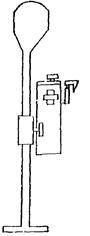
Техническая характеристика
Рабочая глубина измерений, м............................................................................. До 30
с приставкой.......................................................................................................... До 100
Чувствительность индикатора, мм...................................................................... До ±1
Точность измерений, мм....................................................................................... ±2
Масса нивелира, кг:
на воздухе.......................................................................................................... До 10
в воде................................................................................................................. До 1
Габаритные размеры в транспортном положении, м:
длина.................................................................................................................. 0,8
ширина............................................................................................................... 0,3
высота................................................................................................................ 0,3
в рабочем положении:
высота................................................................................................................ 2
ширина............................................................................................................... 0,3×0,3
УНИВЕРСАЛЬНЫЙ УКЛОНОМЕР ЦНИИС
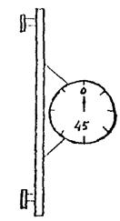
Техническая характеристика
Рабочая глубина измерений, м.................................................................... Не ограничена
Точность измерений, град............................................................................ ±0,2
Диапазон измерений по шкале, град........................................................... ±360
Температурная поправка.............................................................................. Не требуется
Измерительная база, мм................................................................................ 600
Масса уклономера, кг:
на воздухе.................................................................................................. 1,5
в воде......................................................................................................... 1
Габаритные размеры, мм.............................................................................. 650×300×80
Справочное
|
Наименование отклонений |
Величина отклонений |
|
|
Сваи призматические и круглые полые |
Сваи-оболочки |
|
|
По длине элементов (звеньев), мм: |
||
|
а) при длине до 10 м |
±40 |
±40 |
|
б) при длине > 10 м |
±50 |
±50 |
|
По размерам сторон или наружного диаметра поперечного сечения, мм |
±5 |
+7 -3 |
|
По длине острия, мм |
±30 |
- |
|
По смещению острия от центра, мм |
15 |
- |
|
По наклону плоскости верхнего торца, %: |
||
|
а) для цельных свай |
1,5 |
- |
|
б) для остальных свай и свай-оболочек в зоне стыка и цельных свай-оболочек |
1 |
1 |
|
По толщине стенки, мм |
±5 |
+7 -5 |
|
По кривизне (стрелке вогнутости или выпуклости) |
||
|
при длине элементов, мм: |
||
|
от 3 до 8 м |
8 |
8 |
|
от 9 до 16 м |
13 |
13 |
|
> 16 м |
20 |
20 |
|
По толщине защитного слоя, мм |
±5 |
±5 |
|
По шагу сеток, спирали или хомутов, мм |
±10 |
±10 |
|
По расстоянию между продольными стержнями арматуры, проволоками или прядями, мм |
±5 |
±10 |
|
По расстоянию от центра подъемных петель или меток для строповки до конца свайного элемента, мм |
±50 |
±50 |
|
По смещению положения подъемных петель относительно продольной оси свайного элемента, мм |
20 |
- |
Справочное
Паровоздушные молоты двойного действия
|
Параметры |
Модель молота и его номер (по старому условному обозначению) |
|||||||
|
CCCM-502 8 |
СССМ-501 7 |
СССМ-708 9 |
С-35 1,5 |
С-32 1 |
СССМ-142А 10 |
БР-28 - |
SB-400 - |
|
|
Общая масса, кг |
1345 |
2263 |
2988 |
3767 |
4095 |
5266 |
6550 |
6100 |
|
Масса бойка, кг |
180 |
365 |
680 |
614 |
655 |
1130 |
1450 |
1300 |
|
Ход бойка, мм |
222 |
242 |
406 |
450 |
525 |
508 |
500 |
- |
|
Диаметр цилиндра, мм |
248 |
317 |
215 |
200 |
240 |
254 |
330-480 |
- |
|
Ориентировочная энергия одного удара, кДж |
3450 |
5700 |
11200 |
10900 |
15900 |
18200 |
25000 |
21700 |
|
Число ударов в минуту |
275 |
225 |
140 |
135 |
125 |
105 |
120 |
100-115 |
|
Расход сжатого воздуха в минуту, м3 |
7,8 |
11,3 |
12,7 |
12,8 |
17 |
17 |
30 |
16 |
|
Расход пара в час, кг |
- |
- |
865 |
900 |
1200 |
1190 |
- |
780 |
|
Внутренний диаметр шланга, мм |
31 |
33 |
38 |
38 |
39 |
51 |
60 |
- |
|
Габаритные размеры молота, мм: |
||||||||
|
высота |
1613 |
1853 |
2491 |
2375 |
2390 |
2765 |
3190 |
2565 |
|
длина |
380 |
535 |
560 |
650 |
632 |
660 |
650 |
1057 |
|
ширина |
656 |
725 |
710 |
710 |
800 |
810 |
1003 |
900 |
Примечание. Молоты СССМ-502 и СССМ-501 могут использоваться как сваевыдергиватели. Рабочее избыточное давление пара или воздуха, подаваемого в молот, должно быть 0,7-1,0 МПа.
Паровоздушные молоты одиночного действия
|
Параметры |
Модель молота |
|||
|
СССМ-570 |
СССМ-582 |
СССМ-680 |
IHI-Менск МРВ-1000А |
|
|
Масса ударной части, кг |
1800 |
3000 |
6000 |
10000 |
|
Общая масса без наголовника, кг |
2700 |
4300 |
8845 |
12000 |
|
Максимальная высота подъема ударной части, мм |
1500 |
1300 |
1370 |
1250 |
|
Число ударов в минуту |
До 30 |
До 30 |
До 30 |
35-45 |
|
Давление пара на входе, МПа |
1 |
1 |
1 |
1 |
|
Расход пара в час, кг |
545 |
700 |
1470 |
3000 |
|
Расход воздуха в мин, м3 |
10 |
14 |
30 |
70 |
|
Давление воздуха на входе, МПа |
0,8 |
0,8 |
0,8 |
0,8 |
|
Внутренний диаметр шланга, мм |
38 |
50 |
75 |
- |
|
Габаритные размеры, мм: |
||||
|
высота |
4840 |
4840 |
4960 |
4903 |
|
ширина |
780 |
900 |
880 |
1120 |
|
длина |
810 |
1180 |
1410 |
1280 |
|
Управление |
Полуавтоматическое |
Автоматическое |
||
|
Страна-изготовитель |
СССР |
СССР |
СССР |
Япония |
Справочное
|
Показатели |
Значения |
|||||||||
|
Шифр молота: |
||||||||||
|
по Минтрансстрою |
УР1-500 |
УР1-1250 |
УР1-1800 |
УР1-2500 |
УР1-3500 |
- |
- |
УР1-15000 |
- |
УР1-7500 |
|
по ГОСТ 7888-80 |
МД-500 |
МД-1250 |
МД-1800 |
МД-2500 |
МД-3500 |
- |
- |
МД-5000 |
- |
- |
|
заводской: |
||||||||||
|
с воздушным охлаждением |
- |
С-858 |
С-859 |
C-949 |
С-954 |
- |
IДН-40А (Япония) |
С-974 |
- |
- |
|
с водяным охлаждением |
- |
СП-40 С-995 |
СП-41 С-956 С-996с |
СП-47 С-1047 С-1047с |
СП-48 С-1048 С-1048с |
К-35 (Япония) |
- |
СП-54 |
КВ-60 (Япония) |
УР1-7500 |
|
Масса поршня (ударной части), кг |
500 |
1250 |
1800 |
2500 |
3500 |
3500 |
4000 |
5000 |
6000 |
7500 |
|
Наибольшая допустимая высота падения поршня, мм |
2800-3000 |
2800-3000 |
2800-3000 |
2800-3000 |
2800-3000 |
3000 |
2500 |
3000 |
2500 |
3000 |
|
Число ударов в минуту |
42-55 |
42-55 |
42-55 |
42-55 |
42-55 |
39-60 |
40-60 |
44-55 |
35-60 |
38-45 |
|
Средний расход топлива в час, л |
4 |
7 |
10 |
14 |
18 |
14 |
26 |
25 |
28 |
- |
|
Масса молота с кошкой без наголовника, кг |
1200 |
2600 |
3500-3650 |
5500-5800 |
7300-8000 |
7500 |
9703 |
9000-10100 |
15000 |
19400 |
|
Габаритные размеры, мм: |
||||||||||
|
длина |
640 |
720 |
700-765 |
925-950 |
1000 |
930 |
1017 |
1170 |
1335 |
1380 |
|
ширина |
470 |
520 |
600 |
720 |
890 |
881 |
810 |
1020 |
1135 |
1160 |
|
высота |
3825 |
3955 |
4190-4335 |
4970 |
5080-5150 |
4550 |
4252 |
5300-5520 |
5770 |
7150 |
Справочное
|
Параметры |
Марка (типоразмер по ГОСТ 7888-80) |
|||
|
С-222 |
С-268 (МД-800) |
С-330 СП-6 (МД-2500) |
С-330А (МД-2500) |
|
|
Масса ударной части, кг |
1250 |
1800 |
2500 |
2500 |
|
Энергия удара по паспортным данным завода-изготовителя, кДж |
5,3 |
16 |
20 |
20 |
|
Наибольшая высота подъема ударной части, мм |
1790 |
2100 |
2600 |
2500 |
|
Число ударов в минуту |
50-55 |
50-55 |
42-50 |
42-50 |
|
Расход топлива в час, л |
5 |
6 |
8 |
11 |
|
Масса молота с кошкой (без наголовника), кг |
2300 |
3100 |
4200 |
4500 |
|
Габаритные размеры (без наголовника), мм: |
||||
|
длина |
850 |
900 |
870 |
870 |
|
ширина |
800 |
820 |
980 |
1000 |
|
высота |
3360 |
3820 |
4540 |
4760 |
Рекомендуемое
Максимальные динамические сжимающие и растягивающие напряжения в железобетонных призматических сваях сплошного сечения при забивке трубчатыми дизель-молотами и паровоздушными молотами одиночного действия в песчаные и глинистые грунты определяются по формуле
σс(р) = К1 · К2 · К3 · К4 · К5 · σ0, (1)
где σс(р) - максимальные сжимающие или растягивающие напряжения в свае, МПа;
К1 - коэффициент безопасности; принимается для сжимающих напряжений 1,1; для растягивающих 1,3;
К2 - коэффициент, зависящий от высоты падения ударной части молота hM;
К3 - коэффициент, зависящий от жесткости амортизатора Кж в нижней выемке наголовника;
К4 - коэффициент, зависящий от длины сваи L и расчетного сопротивления грунта под ее концом R, определяемого в соответствии с указаниями СНиП 2.02.03-85 «Свайные фундаменты».
Значения К2, К3, К4 принимаются соответственно: для трубчатых дизель-молотов - по табл. 1, 2, 3; для паровоздушных молотов одиночного действия - по табл. 4, 5, 6;
К5 - безразмерный коэффициент, зависящий от марки бетона сваи; принимается по табл. 7;
σ0
- сжимающие или растягивающие
напряжения, зависящие от величины отношения
массы ударной части молота к площади поперечного сечения сваи 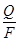
Формула (1) применима при условии соблюдения требований на изготовление свай и производства сваезабивочных работ, указанных в пп. 4.48, 4.51-4.54 основного текста.
Таблица 1
Коэффициент К2 для трубчатых дизель-молотов
Таблица 2
Коэффициент К3 для трубчатых дизель-молотов
|
5 |
10 |
15 |
20 |
30 |
40 |
50 |
60 |
70 |
80 |
90 |
100 |
110 |
120 |
|
|
К3 |
0,58 0,20 |
0,78 0,40 |
0,87 0,60 |
0,94 0,80 |
1,05 1,16 |
1,14 1,36 |
1,22 1,50 |
1,29 1,60 |
1,35 1,67 |
1,41 1,72 |
1,47 1,76 |
1,52 1,80 |
1,57 1,83 |
1,62 1,86 |
В табл. 1-9 значения коэффициентов указаны дробью: числитель - сжатие, знаменатель - растяжение.
Для промежуточных значений параметров в табл. 1-9 значения коэффициентов К2, К3, К4, К5 определяют интерполяцией.
Таблица 3
Коэффициент К4 для трубчатых дизель-молотов
|
Длина свай L, м |
Коэффициент К4 при расчетном сопротивлении грунта под нижним концом сваи R, МПа |
|||||||
|
11 |
8 |
6 |
4 |
2,5 |
1,5 |
1,0 |
0,5 |
|
|
25 |
1,03 0,44 |
1,03 0,66 |
1,02 0,88 |
1,02 1,10 |
1,01 1,37 |
1,01 1,65 |
1,00 1,93 |
1,00 2,50 |
|
20 |
1,02 0,40 |
1,01 0,60 |
1,01 0,80 |
1,00 1,00 |
1,00 1,25 |
0,99 1,50 |
0,98 1,75 |
0,98 2,25 |
|
16 |
1,01 0,35 |
1,00 0,53 |
1,00 0,70 |
0,99 0,88 |
0,98 1,10 |
0,97 1,32 |
0,96 1,54 |
0,95 2,00 |
|
12 |
0,99 0,30 |
0,99 0,44 |
0,98 0,59 |
0,97 0,74 |
0,96 0,93 |
0,94 1,11 |
0,92 1,29 |
0,91 1,70 |
|
8 |
0,98 0,20 |
0,97 0,30 |
0,96 0,40 |
0,95 0,50 |
0,93 0,63 |
0,92 0,75 |
0,88 0,88 |
0,86 1,30 |
Таблица 4
Коэффициент К2 для паровоздушных молотов
|
Расчетная высота падения ударной части молота hM, см |
20 |
40 |
60 |
80 |
100 |
120 |
|
К2 |
0,50 0,47 |
0,71 0,67 |
0,87 0,84 |
1,00 1,00 |
1,12 1,14 |
1,23 1,27 |
Таблица 5
Коэффициент К3 для паровоздушных молотов
|
5 |
10 |
15 |
20 |
30 |
40 |
50 |
60 |
70 |
80 |
90 |
100 |
110 |
120 |
|
|
К3 |
0,65 0,20 |
0,78 0,40 |
0,87 0,60 |
0,94 0,80 |
1,05 1,21 |
1,14 1,48 |
1,23 1,65 |
1,32 1,76 |
1,40 1,84 |
1,48 1,90 |
1,56 1,95 |
1,64 2,00 |
1,72 2,04 |
1,79 2,08 |
Таблица 6
Коэффициент К4 для паровоздушных молотов
|
Длина свай L, м |
Коэффициент К4 при расчетном сопротивлении грунта под нижним концом сваи R, МПа |
|||||||
|
11 |
8 |
6 |
4 |
2,5 |
1,5 |
1,0 |
0,5 |
|
|
25 |
1,04 0,52 |
1,03 0,78 |
1,03 1,04 |
1,02 1,30 |
1,02 1,56 |
1,01 1,82 |
1,01 2,03 |
1,01 2,40 |
|
20 |
1,03 0,47 |
1,02 0,70 |
1,02 0,94 |
1,01 1,17 |
1,01 1,41 |
1,01 1,64 |
1,00 1,87 |
1,00 2,20 |
|
16 |
1,02 0,40 |
1,02 0,60 |
1,01 0,80 |
1,00 1,00 |
1,00 1,20 |
1,00 1,40 |
0,99 1,60 |
0,99 1,90 |
|
12 |
1,00 0,30 |
0,99 0,44 |
0,98 0,59 |
0,97 0,74 |
0,97 0,89 |
0,97 1,03 |
0,96 1,18 |
0,96 1,50 |
|
8 |
0,96 0,16 |
0,95 0,24 |
0,94 0,32 |
0,93 0,40 |
0,93 0,48 |
0,93 0,56 |
0,92 0,64 |
0,92 0,80 |
Таблица 7
Коэффициент К5 для трубчатых дизель-молотов и паровоздушных молотов одиночного действия
|
200 |
300 |
400 |
500 |
|
|
К5 |
0,90 0,90 |
0,95 0,94 |
1,00 1,00 |
1,05 1,10 |
Таблица 8
Напряжения σ0 для трубчатых дизель-молотов
|
Q/F, кг/см2 |
0,8 |
1,0 |
1,2 |
1,4 |
1,6 |
1,8 |
2,0 |
2,2 |
2,4 |
2,6 |
2,8 |
3,0 |
|
σ0, МПа |
13,1 7,3 |
14,8 6,5 |
16,1 5,8 |
17,0 5,1 |
17,8 4,5 |
18,6 3,9 |
19,3 3,3 |
19,9 2,8 |
20,5 2,3 |
21,0 1,9 |
21,5 1,6 |
22,0 1,3 |
Таблица 9
Напряжение σ0 для паровоздушных молотов
|
Q/F, кг/см2 |
1,5 |
2,0 |
2,5 |
3,0 |
3,5 |
4,0 |
4,5 |
5,0 |
|
σ0, МПа |
14,0 8,2 |
15,5 6,4 |
16,5 4,8 |
17,7 3,6 |
18,5 2,8 |
19,6 2,2 |
20,3 1,8 |
20,9 1,5 |
В необходимых случаях формулу (1) можно использовать для решения обратных задач, т.е. определения безопасных режимов забивки (назначения массы молота, высоты падения или характеристики амортизатора) по заданным величинам максимальных сжимающих и растягивающих напряжений в свае (см. примеры).
Механические потери энергии молота приняты равными: 15 % - для трубчатых дизель-молотов и 10 % - для паровоздушных молотов одиночного действия. При таких значениях потерь энергии расчетная высота падения ударной части молота (табл. 1 и 4) близка к фактической высоте падения, при других значениях определяется по формуле
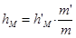
где hM, h′M - расчетная и фактическая высота падения ударной части молота, см;
m′ - коэффициент фактических потерь энергии в молоте, который практически колеблется в пределах: для трубчатых дизель-молотов 0,8-0,9, для паровоздушных молотов 0,6-0,9;
m - коэффициент расчетных потерь энергии в молоте принимается: для трубчатых дизель-молотов 0,85, для паровоздушных молотов 0,90.
Жесткость амортизатора Кж определяется по формуле
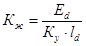
где Ed - модуль упругости амортизационного материала, МПа, принимается по табл. 10 в зависимости от предварительно задаваемых максимальных сжимающих напряжений σ в свае. Если значение σс, найденное по формуле (1), отличается от предварительно принятого значения σ более чем на 10 %, необходимо принять σ = σс и повторить расчет;
Кy - коэффициент уплотнения амортизационного материала; определяется по табл. 10;
ld - начальная толщина амортизатора в наголовнике до уплотнения, см.
Таблица 10
Коэффициент уплотнения амортизационного материала Кy
|
Амортизационный материал |
Коэффициент уплотнения Кy |
Модуль упругости Ed, МПа, при уровне максимальных сжимающих напряжений σ, МПа |
||||
|
5 |
10 |
15 |
20 |
25 |
||
|
Сосна с любым расположением волокон относительно направления сжатия |
0,40 |
90 |
170 |
250 |
320 |
400 |
|
Дуб с волокнами, перпендикулярными направлению сжатия |
0,60 |
260 |
340 |
410 |
460 |
510 |
|
Фанера березовая |
0,70 |
280 |
380 |
410 |
460 |
510 |
|
Войлок технический грубошерстный (ГОСТ 6418-81) |
0,35 |
80 |
200 |
300 |
380 |
430 |
|
Пеньковый бельный канат (ГОСТ 483-75) |
0,45 |
210 |
370 |
510 |
640 |
760 |
|
Асбест шнуровой (ГОСТ 1779-72) |
0,30 |
160 |
270 |
380 |
500 |
560 |
Жесткость амортизатора, состоящего из нескольких разнородных слоев материала, определяется с помощью формулы
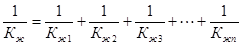
где Кж - суммарная жесткость всего амортизатора;
Кж1,2..n - жесткость каждого отдельного слоя, определяемая по формуле (3).
Пример 1.
Железобетонная свая с поперечным сечением 40×40 см, длиной 16 м забивается молотом УР1-3500 в тугопластичные глинистые грунты (JL = 0,4) на глубину 15 м. Амортизатор в нижней выемке наголовника выполнен из сосновых досок с волокнами поперек направления удара. Общая толщина амортизатора до уплотнения составляет 20 см.
Определить максимальные сжимающие и растягивающие напряжения в свае в конце погружения при высоте падения ударной части молота, равной 220 см. Масса ударной части молота 3500 кг, общая масса молота 7200 кг, масса наголовника 500 кг, масса сваи 6400 кг. Механические потери энергии в молоте составляют 15 %.
Для проведения расчета необходимо определить:
1. Исходные данные:
а) 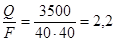
б) в начале забивки сваи сопротивление грунта под острием равно суммарной массе молота, наголовника и сваи, деленной на площадь поперечного сечения сваи
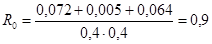
в) в конце забивки сваи сопротивление грунта под острием сваи согласно табл. 1 СНиП 2.02.03-85 равно R15 = 2,8 МПа.
2. Максимальные сжимающие напряжения в свае в конце погружения:
а)
σ0 = 19,9 МПа при 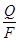
б) коэффициент К2 = 0,90 при hM = 220 см по табл. 1;
в) жесткость амортизатора наголовника по формуле (3), предполагая, что максимальные сжимающие напряжения в свае в конце забивки σ = 20 МПа. Предварительно по табл. 10 находим Ed = 320 МПа.
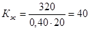
г) коэффициент К3 = 1,14 при Кж = 40 МПа/см по табл. 2;
д) коэффициент К4 = 1,00 при L = 16 м и R15 = 2,8 МПа по табл. 3 и К5 = 1,00 для марки бетона 400 по табл. 7.
е) предварительную величину снимающих напряжений в свае по формуле (1)
σс = К1 · К2 · К3 · К4 · К5 σ0 = 1,1 · 0,90 · 1,14 · 1,00 · 1,00 · 19,9 = 22,2 МПа;
ж) новое значение Кж при σ = σс = 22,2 МПа для уточнения значения σс (см. формулу (3)). Предварительно по табл. 10 уточняем Ed = 355 МПа:
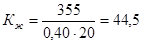
з) коэффициент К3 = 1,18 при Кж = 44,5 МПа/см по табл. 2;
и) уточненную величину максимальных сжимающих напряжений в свае по формуле (1):
σс = К1 · К2 · К3 · К4 · К5 · σ0 = 1,1 · 0,90 · 1,18 · 1,00 · 1,00 · 19,9 = 23,2 МПа;
3. Максимальные растягивающие напряжения в свае:
а) напряжение σ0 = 2,8 МПа при = 2,2 кг/см2 по табл. 8;
б) коэффициент К2 = 0,71 при hM = 220 см по табл. 1;
в) коэффициент К3 = 1,43 при Кж = 44,5 МПа/см по табл. 2;
г) коэффициент К4 = 0,98 при L = 16 м и R15 = 2,8 МПа по табл. 3;
д) коэффициент К5 = 1, по табл. 7;
е) максимальные растягивающие напряжения в свае в конце забивки по формуле (1)
σр = К1 · К2 · К3 · К4 · К5 · σ0 = 1,31 · 0,71 · 1,43 · 0,98 · 1 · 2,8 = 3,6 МПа;
Пример 2.
Железобетонная преднапряженная свая с поперечным сечением 45×45 см длиной 20 м забивается паровоздушным молотом одиночного действия с массой ударной части Q = 7500 кг в тугопластичный суглинок (JL = 0,3) на глубину 12 м. Свая изготовлена из бетона марки 400. Общая масса молота составляет 9000 кг, масса наголовника 1000 кг. Коэффициент фактических механических потерь энергии в молоте равен m′ = 0,7. Амортизатор в нижней выемке наголовника выполнен из сосновых досок с волокнами поперек направления удара общей толщиной до уплотнения 20 см, масса сваи 10000 кг.
Определить режим работы молота (высоту падения ударной части молота), если максимальные растягивающие напряжения в свае не должны превышать σр = 4,5 МПа, а сжимающие напряжения σс = 17 МПа.
1. Исходные данные:
а) 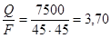
б) сопротивление грунта под острием сваи в начале забивки
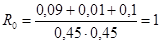
в) сопротивление грунта под острием сваи в конце забивки R12 = 3,6 МПа по табл. 1 СНиП 2.02.03-85.
2. Предельная высота падения молота в конце забивки по условию максимальных сжимающих напряжений в свае σс = 17 МПа;
а) значения σ0, К4, К5, Ed; σ0 = 18,9 МПа, К4 = 1,01; К5 = 1,00; Ed = 278 МПа - по табл. 9, 6, 7, 10;
б) жесткость амортизатора Кж - по формуле (3), коэффициент К3 - по табл. 5.
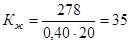
К3 = 1,09
в) коэффициент К2 - по формуле (1)
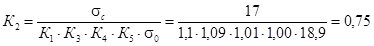
г) величина расчетной предельной высоты падения молота hM = 45 см - по интерполяции по табл. 4 при К2 = 0,75.
3. Продольная высота падения молота в конце забивки - по условию максимальных растягивающих напряжений в свае σр = 4,5 МПа;
а) Кж = 35 МПа/см - из предыдущего решения;
б) значения σ0, К3, К4, К5:
σ0 = 2,6 МПа, К3 = 1,34; К4 = 1,21; К5 = 1,00 - по табл. 9, 5, 6, 7;
в) коэффициент К2 - по формуле (1)
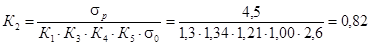
г) расчетная предельная высота падения молота hM = 58 см - по интерполяции по табл. 4 при К2 = 0,82.
Следовательно, предельная расчетная высота падения молота в конце забивки не должна превышать 45 см.
4. Предельная высота падения в начале забивки, по условию максимальных растягивающих напряжений σр = 4,5 МПа;
а) σ0 = 2,6 МПа; К3 = 1,34; К5 = 1,00 из предыдущего решения;
б) коэффициент К4 = 1,87 при L = 20 м и R0 = 1 МПа по табл. 6;
в) коэффициент К2 по формуле (1)
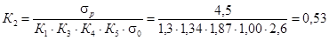
г) расчетная предельная высота падения молота hM = 26 см по интерполяции по табл. 4 при К2 = 0,53.
Так как при hM = 26 см напряжение сжатия заведомо ниже 17 МПа, то исходя из условия максимальных растягивающих напряжений, предельная высота падения ударной части молота в начале забивки не должна превышать 26 см.
Фактическая предельная высота падения ударной части молота определяется по формуле (2):
а) для начальной стадии забивки
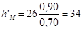
б) для конечной стадии забивки
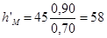
Справочное
Вибропогружатели
|
Параметры |
Марка |
|||||||||
|
В-401 (ВПП-2А) |
ВРП-3/44 |
С-1003 (ВП-1) |
ВРП-15/60 |
ВП-3М |
ВРЦ-30/132 |
ВУ-1,6 |
ВПМ-170 |
ВРП-70/200 |
ВУ-3 |
|
|
1 |
2 |
3 |
4 |
5 |
6 |
7 |
8 |
9 |
10 |
11 |
|
Статический момент массы дебалансов, кг· см |
1000 |
3000 |
9300 |
0-15000 |
23600 |
0-30000 |
34500 |
50000 |
0-70000 |
99400 |
|
Частота вращения дебалансов, об/мин |
1500 |
До 970 |
420 |
0-500 |
408 |
0-520 |
498 |
475; 550 |
До 500 |
500; 550 |
|
Вынуждающая сила, кН (тс · 10) |
250 |
До 300 |
190 |
0-400 |
445 |
0-900 |
950 |
1250-1700 |
0-1700 |
2800; 3300 |
|
Тип электродвигателя |
АОП-83-6 |
АОПВВ-2-81-6 |
ВМТ-6 |
4АС25м 4УЗ |
МТВ-711-10 |
АКВ-315М2-6 |
АКВ-315М8 |
АК-113-8М |
- |
АК-113-8М |
|
Номинальная мощность электродвигателей, кВт |
40 |
2×22 |
60 |
60 |
100 |
132 |
2×90 |
200 |
200 |
2×200 |
|
Масса без наголовника, кг |
2200 |
2000 |
4500 |
5080 |
7500 |
7200 |
11900 |
12500 |
15500 |
27600 |
|
Габаритные размеры, мм: |
||||||||||
|
высота |
2250 |
- |
1650 |
2044 |
2310 |
2245 |
1910 |
3400 |
- |
2480 |
|
ширина |
800 |
- |
1150 |
1114 |
1540 |
1440 |
2618 |
1260 |
- |
4420 |
|
длина |
1270 |
- |
1300 |
1245 |
1560 |
1440 |
3350 |
1860 |
- |
5150 |
Примечания: 1. В гр. 2 указан вибропогружатель с постоянными параметрами и с амортизатором.
2. В гр. 3 - вибропогружатель со ступенчатым изменением момента дебалансов при остановке и бесступенчатым регулированием частоты их вращения.
3. В гр. 4 и 6 - вибропогружатели с постоянными параметрами.
4. В гр. 5, 7, 10 - вибропогружатели с бесступенчатым регулированием момента дебалансов и частоты их вращения на ходу.
5. В гр. 8 и 11 - вибропогружатели с проходным отверстием.
6. В гр. 9 - вибропогружатель со ступенчато изменяемой частотой впадения дебалансов при остановке вибропогружателя.
Вибромолоты
|
Параметры |
Марка |
||
|
МШ-2М |
ВМС-1 |
ВМС-2 |
|
|
Установочная мощность двигателей, кВт |
2×22 |
2×30 |
2×40 |
|
Число оборотов дебалансов в минуту |
970 |
730 |
600 |
|
Максимальный момент массы дебалансов, кг. см |
910; 1130 |
2300 |
4500 |
|
Максимальная вынужденная сила, кН |
96; 119 |
140 |
180 |
|
Масса ударной части, кг |
2100 |
2850 |
5000 |
|
Число ударов в минуту |
970 |
730 |
600 |
|
Габаритные размеры, мм: |
|||
|
высота |
2295 |
1560 |
1760 |
|
ширина |
1175 |
1670 |
1670 |
|
длина |
1210 |
1370 |
1700 |
|
Общая масса не более, кг |
4100 |
5100 |
8000 |
|
Конструктивные особенности |
Удар вверх |
Удар вниз |
Удар вниз |
|
Тип электродвигателя |
АОП882-81-6 |
АВ-82-8 |
АВ-91-10 |
Справочное
Плавучие копры
|
Параметры |
Копры |
|||||
|
ПМК |
КСПК |
«Ниленс» |
«Юбигау» |
СССМ-680 |
«Кобе» |
|
|
Максимальный вылет стрелы от торца понтона, м |
- |
- |
6,5 |
6,5 |
9 |
27 |
|
Грузоподъемность при максимальном вылете, кН |
- |
- |
100 |
120 |
130 |
53 |
|
Максимальная грузоподъемность крана, кН |
- |
- |
300 |
300 |
250 |
200 |
|
Вылет стрелы при максимальной грузоподъемности, м |
- |
- |
3,25 |
3,25 |
4,4 |
17 |
|
Полезная высота (до молота), м |
17,5 |
25 |
25,4 |
25,8 |
24 |
30 |
|
Максимальный наклон относительно понтона: |
||||||
|
вдоль |
- |
3:1 |
3:1 |
3:1 |
3:1 |
4,5:1* |
|
поперек |
3:1 |
- |
- |
10:1 |
- |
- |
|
Максимальная масса забиваемой сваи, т |
12 |
10 |
12 |
12 |
13 |
15 |
|
Масса молота (полная масса ударной части), т |
7,5 (6) |
7,5 (6) |
9,3 (8) |
8 (6,1) |
7,5 (6) |
18,3/10 |
|
Размеры понтона, м: |
||||||
|
длина |
23,8 |
20,5 |
25 |
28,5 |
27,8 |
41 |
|
ширина |
14,9 |
14,7 |
10 |
13,4 |
12,3 |
17 |
|
высота борта |
2,5 |
2,7 |
2,5 |
2,55 |
- |
3,5 |
|
Осадка, м |
1,15 |
1,42 |
1,5 |
1,5 |
1,3 |
2,4 |
* При работе с молотом полной массой до 7,5 т максимальный наклон составляет 3:1.
Плавучие краны
|
Параметры |
Тип крана |
|||||||
|
«Блейхерт» (1) |
«Астрахань» (1) |
«Драво» (1) |
«Драво» (1) |
ПРК-100 (2) |
«Ганс» (1) |
«Черноморец» (1) |
«Богатырь» (1) |
|
|
Страна-изготовитель |
ГДР |
СССР |
США |
США |
СССР |
ВНР |
СССР |
СССР |
|
Максимальная грузоподъемность, кН |
500/100 |
600/150 |
600/150 |
900/200 |
1000/300 |
1000/250 |
1000/250 |
3000/1000 |
|
Вылет стрелы от оси вращения при максимальной грузоподъемности, м |
28,5/40 |
19,0/41,8 |
22,5/32 |
24/38 |
23,4/25,4 |
19,7/34,7 |
20/30 |
27,2/48,2 |
|
Высота крюка при указанном выше вылете, м |
38/31 |
38,4/10,4 |
24/20 |
29,6/24 |
30/33 |
27/29 |
28,5/32 |
43/36 |
|
Вылет стрелы от оси вращения, м: |
||||||||
|
максимальный |
35,2/40 |
25,3/41,8 |
30,4/32 |
32/28 |
32,9/34,9 |
33,2/34,7 |
26/30 |
38,2/48,2 |
|
минимальный |
14/16,7 |
14/15,5 |
13,1/14,5 |
17/20 |
15,9/17,9 |
9,4/10,7 |
14/16,5 |
16,2/19,5 |
|
Грузоподъемность при максимальном вылете стрелы, кН |
400/100 |
500/150 |
156/150 |
450/200 |
550/150 |
350/250 |
600/250 |
1500/1000 |
|
Высота крюка при вылете, м: |
||||||||
|
максимальном |
30/31 |
35/10,4 |
18/20 |
20/24 |
24/26,5 |
28/29 |
28,5/33 |
46/60 |
|
минимальном |
41,5/45 |
39,0/39,8 |
27/29 |
31,5/- |
32/35 |
26,8/27 |
32/36 |
28,4/36 |
|
Расстояние от оси вращения до транца корпуса |
10 |
8,6 |
11,4 |
12,9 |
12,9 |
9,5 |
10 |
12,6 |
|
Размер корпуса судна, м: |
||||||||
|
длина |
40 |
46,5 |
36,5 |
43 |
28,8 |
40 |
40,5 |
54,5 |
|
ширина |
20 |
17,7 |
18,3 |
21,5 |
21,6 |
19,0 |
20,0 |
25,2 |
|
Осадка, м: |
||||||||
|
максимальная |
3,3 |
2,7 |
2,0 |
2,3 |
1,55 |
2,5 |
2,2 |
2,8 |
|
минимальная |
2,1 |
2,5 |
1,84 |
1,7 |
0,85 |
1,3 |
1,4 |
2,04 |
|
Вес груза, принимаемого на палубу, кН |
- |
2000 |
2000 |
3500 |
- |
2000 |
3000 |
9000 |
|
Скорость собственного хода, узлы |
4-7 |
4-5 |
Несамоходные |
4 |
6 |
6 |
||
Примечания: 1. (1) - полноповоротный универсальный кран.
2. (2) - сборно-разборный кран.
3. Данные, приведенные в числителе - для основного крюка, а в знаменателе - для вспомогательного крюка.
Справочное
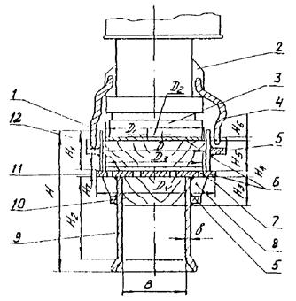
Схема сварного Н-образного наголовника для трубчатых дизель-молотов:
1 - корпус верхней выемки; 2 - проушина; 3 - шабот молота; 4 - трос; 5 - обручи; 6 - прокладки из стального листа; 7 - отверстия для удаления изношенного амортизатора; 8 - ребра; 9 - корпус нижней выемки с раструбом; 10 - амортизатор нижний; 11 - диафрагма; 12 - амортизатор верхний
|
Основные параметры сварных наголовников, мм |
Марки трубчатого дизель-молота |
||||
|
С-858, С-995 |
С-859, С-996, С-996с |
С-949, С-1047, С-1047с |
С-954, С-1048, С-1048с |
С-974, СП-54 |
|
|
Масса ударной части, кг |
|||||
|
1250 |
1800 |
2500 |
3500 |
5000 |
|
|
Н |
820 |
820 |
1020 |
1030 |
1170 |
|
H1 |
220 |
220 |
275 |
275 |
325 |
|
Н2 |
500 |
500 |
600 |
600 |
700 |
|
Н3 |
По расчету |
||||
|
Н4 |
40 |
40 |
60 |
60 |
60 |
|
Н5 |
150 |
150 |
200 |
200 |
250 |
|
Н6 |
20 |
20 |
20 |
20 |
20 |
|
Н7 |
4 |
4 |
4 |
4 |
4 |
|
Д |
510 |
560 |
650 |
760 |
860 |
|
Д1 |
500 |
550 |
630 |
740 |
840 |
|
Д2 |
80 |
80 |
100 |
100 |
100 |
|
Д3 |
490 |
535 |
725 |
625 |
810 |
|
Д4 |
565 |
620 |
680 |
730 |
940 |
|
В |
370 |
370 |
420 |
420 |
475 |
|
b |
12 |
16 |
20 |
20 |
20 |
|
Масса, кг |
250 |
330 |
600 |
770 |
970 |
|
Сечение сваи |
350×350 |
350×350 |
400×400 |
400×400 |
450×450 |
Примечание. Толщина амортизатора определяется расчетом (см. п. 4.54).
Справочное
|
Параметры |
Марка наголовника |
||||||
|
АК-60 |
АК-160 |
Н-301 |
НГ-1,2 |
НГ-1,6 |
НГУ-1,6 |
НШ-11 |
|
|
Тип свайного элемента |
Железобетонные центрифугированные сваи Ø 0,6 м и призматические сваи сечением 35×35 и 40×40 см |
Железобетонные сваи-оболочки Ø 1,6 м с толщиной стенки 12-15 см |
Железобетонные сваи-оболочки с толщиной стенки 12 см |
Железобетонные сваи-оболочки Ø 1,2 м |
Железобетонные сваи-оболочки Ø 1,6 м |
Железобетонные сваи-оболочки Ø 1,6 м |
Пакеты из 11 шпунтин типа «Ларсен V» |
|
Тип вибропогружателя или вибромолота |
ВП-1; ВП-3М |
ВП-170М |
ВУ-3; спаренные ВП-170М |
ВУ-1,6; ВРП-30/132 |
ВУ-1,6 |
ВРП-70/200 ВУ-1,6; ВПМ-170 |
ВП-170М |
|
Зажимное устройство |
Пружинно-клиновое |
Клиновое двухстороннее |
Клиновое двухстороннее |
Клиновое одностороннее |
Клиновое одностороннее |
Клиновое одностороннее |
Гидроаккумуляторное |
|
Привод зажимного устройства |
Пружинный |
Пружинный |
Гидравлический |
Гидравлический |
Гидравлический |
Гидравлический |
Гидравлический, реверсивный |
|
Масса, кг |
1240 |
11800 |
15000 |
5100 |
5000 |
5200 |
14000 |
|
Габариты, мм: |
|||||||
|
высота |
885 |
2800 |
2461 |
1850 |
1900 |
1350 |
2200 |
|
длина или диаметр |
1480 |
2220 |
3806 |
2400 |
2600 |
2650 |
5000 |
|
ширина |
1480 |
2220 |
3806 |
2400 |
2600 |
2650 |
2100 |
Справочное
Необходимая суммарная площадь проходного отверстия подмывных труб определяется исходя из требуемого расхода и напора воды, ориентировочные значения которых приведены в табл. 1 из расчета на 1000 см2 лобовой поверхности погружаемого свайного элемента в зависимости от грунтовых условий и глубины погружения. При этом принято, что подмывные трубы снабжаются коническим наконечником, имеющим угол конусности 10° и отношение диаметров выходного и входного отверстий равным 0,45. Техническая характеристика наконечников приведена в табл. 2. Суммарная площадь проходного отверстия подмывных труб определяется по формуле
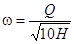
где ω - суммарная площадь проходного отверстия подмывных труб, см2;
Q - расход воды, м3/ч; 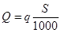
q - расход воды на 1000 см2 лобовой поверхности свайного элемента (см. табл. 1), м3/ч;
S - площадь лобовой поверхности свайного элемента, см2;
H - напор воды (см. табл. 1), МПа.
Руководствуясь найденным значением и указаниями п. 4.83, а также значениями диаметра и площадей проходного отверстия стандартных труб, приведенных в гр. 2 и 3 табл. 2 данного приложения, подбираются необходимый диаметр и количество подмывных труб.
Пример.
Железобетонная свая-оболочка диаметром D 1,6 м и толщиной стенки t = 15 см погружается на глубину 30 м в крупнозернистый песок средней плотности. Определить напор воды, диаметр и количество подмывных труб.
1. Определяем по табл. 1 необходимый напор воды при погружении свайного элемента в крупнозернистый песок средней плотности на глубину 30 м
Н = 1,8 МПа.
2. Определяем площадь лобовой поверхности сваи-оболочки
S = π (D - t) · t = 3,14 (160 - 15) · 15 = 6050 см2.
3. Определяем необходимый расход воды
,
где q 80 м3/ч (по табл. 1)
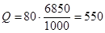
4. Определяем суммарную площадь проходного отверстия подмывных труб
см2.
5. Исходя из условия равномерного распределения труб по всему периметру сваи-оболочки через 1,5-2 м (по п. 4.82), принимаем три трубы диаметром 80 мм.
6. Проверяем выполнимость условия
ω1 · n ≥ ω,
где ω1 - площадь проходного отверстия выбранной трубы (по табл. 2);
n - количество труб; 50,3 · 3 > 130, следовательно условие выполняется.
Таблица 1
Напор H и расход воды q на 1000 см2 лобовой поверхности свайного элемента в зависимости от вида грунта и глубины погружения
|
Грунты |
Глубина погружения в грунт, м |
|||||
|
5-15 |
15-25 |
25-35 |
||||
|
Необходимый избыточный напор у наконечников H, МПа |
Расход воды на 1000 см2 лобовой поверхности свайного элемента q, м3/ч |
Необходимый избыточный напор у наконечников H, МПа |
Расход воды на 1000 см2 лобовой поверхности свайного элемента q, м3/ч |
Необходимый избыточный напор у наконечников H, МПа |
Расход воды на 1000 см2 лобовой поверхности свайного элемента q, м3/ч |
|
|
Насыпной рыхлый неслежавшийся грунт |
0,4-0,6 |
20-25 |
0,6-0,8 |
25-30 |
0,8-1,0 |
30-35 |
|
Песчаные пылеватые грунты средней плотности |
0,4-0,6 |
25-35 |
0,6-0,8 |
30-40 |
0,8-1,0 |
35-45 |
|
Песчаные мелкозернистые грунты средней плотности |
0,6-0,8 |
35-45 |
0,8-1,2 |
45-55 |
1,2-1,5 |
55-65 |
|
Песчаные грунты средней плотности и крупности |
0,8-1,0 |
40-50 |
1,0-1,4 |
50-60 |
1,4-1,6 |
60-70 |
|
Глинистые грунты мягкопластичные |
0,8-1,0 |
45-55 |
1,0-1,4 |
55-65 |
1,4-1,8 |
65-75 |
|
Песчаные крупнозернистые грунты средней плотности |
0,8-1,2 |
45-60 |
1,2-1,6 |
60-75 |
1,6-2,0 |
75-85 |
|
Глинистые грунты тугопластичные |
1,0-1,4 |
55-70 |
1,4-1,8 |
70-85 |
1,8-2,2 |
80-95 |
|
Песчано-гравелистые грунты средней плотности |
1,0-1,4 |
60-80 |
1,4-1,8 |
80-95 |
1,8-2,2 |
90-105 |
|
Глинистые грунты полутвердые |
1,2-1,6 |
65-85 |
1,6-2,0 |
80-100 |
2,0-2,5 |
100-120 |
Таблица 2
Технические характеристики наконечников для подмывных стандартных труб при угле конусности 10°
|
Диаметр (внутренний) подмывной трубы d, мм |
Площадь проходного отверстия подмывной трубы ω1, см2 |
Диаметр выходного отверстия наконечника d′, мм |
Площадь выходного отверстия наконечника ω2, см2 |
Длина наконечника, мм |
|
1 |
2 |
3 |
4 |
5 |
|
37 |
10,7 |
17 |
2,3 |
114 |
|
50 |
19,6 |
22 |
3,8 |
160 |
|
68 |
36,2 |
30 |
7,1 |
218 |
|
80 |
50,3 |
36 |
10,0 |
262 |
|
106 |
88,0 |
48 |
18,1 |
332 |
|
131 |
135,0 |
59 |
27,4 |
412 |
Примечание. Отношение диаметров выходного и входного отверстия для всех наконечников принято равным 0,45.
Рекомендуемое
Общие положения
1. В качестве вяжущего для бетонов следует применять портландцементы марки не ниже 400, отвечающие требованиям п. 5.6 основного текста.
2. Заполнители должны удовлетворять требованиям ГОСТ 10268-80. В качестве крупного заполнителя рекомендуется применять щебень изверженных пород марки не ниже 1000. Содержание в щебне слабых зерен не должно превышать 5 %.
3. Для снижения расхода воды и достижения необходимого воздухосодержания в бетонную смесь следует обязательно вводить комплексные добавки, состоящие из пластифицирующего компонента, например ЛСТ, и воздухововлекающего компонента, например СНВ, СДО, СНД или КТП.
Особенности проектирования состава бетона
4. При проектировании состава бетона водоцементное отношение, воздухосодержание бетонной смеси и расход воды должны соответствовать достижению заданной прочности и морозостойкости при минимальном расходе цемента и обеспечении заданной подвижности смеси.
Соотношение между величиной В/Ц, расходом воды и воздухосодержанием уплотненной бетонной смеси для получения бетонов марок F400 и F500 следует выбирать по графикам на рис. 1.
Рекомендуется применять бетонные смеси с расходом воды до 180 л/м3.
5. Для повышения удобоукладываемости смеси при минимальном расходе воды следует использовать пластифицирующую добавку в оптимальной дозировке, не вызывающей ухудшения свойств бетона и не создающей значительных осложнений в режиме его тепловлажностной обработки. Обычно дозировку ЛСТ принимают в количестве 0,1-0,15 % от массы цемента.
Рис. 1. Соотношение между величиной В/Ц, расходом воды и воздухосодержанием уплотненной бетонной смеси:
а - для получения бетона марки F400; б - то же марки F500
Следует также использовать дополнительный эффект пластификации за счет воздухововлечения бетонной смеси.
При выборе необходимой подвижности смеси следует учитывать указания п. 5.29.
Рекомендуется применять бетонные смеси с осадкой конуса до 6 см.
6. Воздухосодержание бетонной свежеприготовленной смеси должно назначаться с учетом потерь вовлеченного воздуха в процессе транспортирования и уплотнения смеси, установленных опытным путем.
7. Ориентировочная водопотребность и объемная доля песка для бетона с комплексной добавкой определяется по табл. 1.
Таблица 1
|
Наибольший размер зерен крупного заполнителя, мм |
Водопотребность бетонной смеси, л |
Объемная доля песка в смеси заполнителей при воздухосодержании, % |
||
|
2 |
4 |
6 |
||
|
10 |
190 |
56 |
53 |
51 |
|
20 |
165 |
45 |
43 |
41 |
|
40 |
150 |
38 |
36 |
35 |
|
70 |
135 |
34 |
32 |
31 |
Примечание. Водопотребностъ и объемная доля песка даны для смесей на природном песке с модулем крупности 2,5 при В/Ц = 0,55, подвижности смеси 5 см по осадке конуса и содержании вовлеченного воздуха до 4 %.
Для бетонов, приготовленных на песке с другой крупностью, а также имеющих другие подвижность, В/Ц и воздухосодержание, следует пользоваться поправками, приведенными в табл. 2.
Таблица 2
|
Изменение Мкр песка, В/Ц, подвижности и воздухосодержания смеси |
Изменение содержания песка в смеси заполнителей, % |
Изменение содержания воды, л/м3 |
|
Увеличение Мкр на 0,1 |
+0,5 |
- |
|
Уменьшение Мкр на 0,1 |
-0,5 |
- |
|
Увеличение В/Ц на 0,05 |
+1 |
- |
|
Уменьшение В/Ц на 0,05 |
-1 |
- |
|
Увеличение осадки конуса на 1 см |
- |
+2 |
|
Уменьшение осадки конуса на 1 см |
- |
-2 |
|
Увеличение воздухосодержания на 1 % |
- |
-3 |
|
Уменьшение воздухосодержания на 1 % |
- |
+3 |
8. По графикам на рис. 1 определяют В/Ц для трех-четырех значений воздухосодержания (от 2 до 6 %) при выбранной по п. 7 водопотребности.
Затем вычисляют Ц и величину , где Д - количество вовлеченного воздуха в %.
Затем строят график зависимости величины от воздухосодержания смеси.
По данным заданной прочности бетона Rσ и активности цемента Rц определяют значение , необходимое для достижения заданной прочности по формуле
где - требуемое значение.
По дополнительно построенному графику и необходимому значению выбирают воздухосодержание смеси Дн.
Для выбранных значений водопотребности (п. 7) и воздухосодержания Дн на рис. 1 выбирают значение В/Ц. Далее вычисляют расход цемента
.
Дальнейший расчет состава бетона производят по способу абсолютных объемов с учетом воздухосодержания бетонной смеси.
9. Дозировку воздухововлекающего компонента определяют экспериментально в соответствии с требуемым воздухосодержанием смеси.
10. Путем пробных замесов уточняют расход воды и дозировку воздухововлекающего компонента. При необходимости заметного изменения расхода воды повторяют расчет состава бетона в соответствии с п. 8 и снова проверяют состав бетона в пробном замесе.
Производство бетонных работ
11. Приготовление бетонной смеси, введение в нее добавок и уплотнение её осуществляют в соответствии с указаниями разд. 5.
12. Тепловлажностной обработке изделий должна предшествовать предварительная выдержка не менее 4 ч для бетонов из смеси с осадкой конуса до 3 см и не менее 5 ч для бетонов из смеси с осадкой конуса более 3 см.
13. Тепловлажностную обработку изделий рекомендуется осуществлять по режимам, выбираемым по табл. 3 в зависимости от массивности изделий, марки морозостойкости и подвижности бетонной смеси.
Относительная влажность паровоздушной смеси в камере должна быть не менее 95 %.
Таблица 3
|
Подвижность бетонной смеси, см |
Режимы тепловлажностной обработки для изделий |
|||
|
массивных |
немассивных |
|||
|
при марке бетона |
||||
|
F400 |
F500 |
F400 |
F500 |
|
|
0,5-3 |
1, 2 |
1 |
1, 2, 3 |
1, 2 |
|
3-6 |
1 |
1 |
1, 2 |
1 |
Примечания: 1. К массивным отнесены изделия с сечением более 50×50 см.
2. Характеристика режимов тепловлажностной обработки приведена в табл. 4.
14. Продолжительность изотермического прогрева устанавливается в соответствии с указаниями п. 5.46.
15. После тепловлажностной обработки изделия должны выдерживаться во влажных условиях в цехе или на складе не менее 100 град-сут. при температуре не ниже 5 °С.
Возможность сокращения указанного срока выдерживания изделий должна быть подтверждена испытанием на морозостойкость образцов конкретного бетона.
Таблица 4
|
Номер режима |
Максимальная скорость подъема температуры, град/ч |
Максимальная температура изотермического прогрева, °С |
Максимальная скорость охлаждения, град/ч |
|
1 |
10 |
60 |
10 |
|
2 |
10 |
70 |
10 |
|
3 |
15 |
70 |
15 |
Рекомендуемое
1. Общие положения
1. Рекомендации распространяются на изготовление немассивных железобетонных конструкций морских сооружений из бетона особо высокой морозостойкости (F1000), работающих в тяжелых условиях эксплуатации (по ГОСТ 26633-85).
2. Рекомендации являются дополнением к действующим нормативным документам по производству бетонных работ, разд. 5 Пособия и распространяются на изготовление сборных конструкций и возведение сооружений из монолитного бетона на побережье северных и дальневосточных морей.
3. Меры по защите конструкций от истирающего действия льда и других предметов, а также от температурных напряжений должны быть предусмотрены в проекте и настоящими рекомендациями не регламентируются.
2. Материалы для бетона и состав бетона
4. Для приготовления бетона должен применяться сульфатостойкий портландцемент или сульфатостойкий портландцемент с минеральными добавками по ГОСТ 22266-76.
5. Заполнители должны удовлетворять требованиям ГОСТ 10268-80. В качестве крупного заполнителя должен применяться щебень из изверженных горных пород.
6. В состав бетона обязательно вводится комплексная добавка, состоящая из смолы, нейтрализованной воздухововлекающей (СНВ) или её заменителей и лигносульфоната технического (ЛСТ).
Дозировка СНВ выбирается в пределах 0,005-0,03 % от массы цемента с целью вовлечения в бетонную смесь 3-5 % воздуха (по объему). Дозировка ЛСТ принимается в количестве 0,1-0,2 % от массы цемента.
Возможно применение совмещенного, заранее приготовленного раствора СНВ и ЛСТ, стабилизированного альгинатом натрия, введенным в количестве 0,005-0,01 % от массы цемента. Приготовление указанного совмещенного раствора комплексной добавки производят в соответствии с рекомендуемым приложением 17.
7. При проектировании составов бетона учитывают следующие ограничения:
водоцементное отношение - не более 0,40;
подвижность бетонной смеси в момент укладки - не более 4 см по осадке стандартного конуса;
содержание вовлеченного воздуха после транспортирования и уплотнения бетонной смеси - 2-4 % по объему.
3. Производство бетонных работ
8. Твердение бетона должно происходить при температуре бетона не менее 5 °С и регулярном увлажнении только пресной водой.
9. Элементы конструкций, предназначенные только для работы в переменном уровне, должны выдерживаться при положительной температуре и увлажнении до приобретения 100 %-ной проектной прочности. При этом срок выдерживания бетона марки F1000 должен быть не менее 30 суток.
10. Разрешается изготавливать конструкции с применением тепловлажностной обработки. Температура изотермического прогрева должна быть не более 40 °С.
Скорости подъема и снижения температуры не должны превышать 10 °С/ч. Влажность паровоздушной смеси в камере должна быть не менее 95 %.
Справочное
Бетоны с комплексной добавкой типа СНВ+ЛСТ
1. К добавкам типа СНВ+ЛСТ относятся добавки СПД+ЛСТ, СДО+ЛСТ, КТП+ЛСТ.
2. При подборе конкретного состава бетона предварительно должна быть определена оптимальная доза ЛСТ. Для бетонов естественного твердения дозировка ЛСТ выбирается в диапазоне от 0,07 до 0,4 % от массы цемента, а для бетонов, подвергающихся тепло-влажностной обработке - от 0,07 до 0,2 %.
Оптимальная дозировка выбирается путем испытания бетонных смесей с В/Ц, выбранным в соответствии с пп. 5.24, 5.25 при трех-четырех значениях дозировки ЛСТ. Бетонные смеси должны иметь при этом заданную подвижность, а прочность образцов бетона контролируется в заданные сроки (например, сразу после тепловлажностной обработки или в возрасте 28 суток). Для всех приготовленных смесей после уплотнения определяется содержание вовлеченного воздуха и расчетным путем по контролируемой объемной массе вычисляется расход воды.
Оптимальная дозировка ЛСТ соответствует минимальному содержанию в бетонной смеси объема воды и достижению наибольшей прочности при одинаковом расходе цемента.
3. При расчете состава бетона с комплексной добавкой определяют по табл. 1 водопотребность бетонных смесей с воздухосодержанием 2 % и с учетом примечаний к таблице.
4. Назначают минимальное воздухосодержание бетонной смеси в соответствии с п. 5.26.
где Ц - расход цемента на 1 м3 бетона, кг;
В - водопотребность смеси, определенная по п. 3;
Д - воздухосодержание по п. 4, %;
Rσ - прочность бетона в 28 дней, МПа;
Rц - активность (марка) цемента, МПа.
Таблица 1
|
Наибольший размер крупного заполнителя, мм |
Расход воды на 1 м3 при осадке конуса 5 см, л |
|
|
бетон на гравии |
бетон на щебне |
|
|
10 |
180 |
190 |
|
20 |
155 |
165 |
|
40 |
140 |
150 |
|
70 |
125 |
135 |
Примечания: 1. При осадке конуса больше или меньше принятой в табл. 1 расход воды соответственно увеличивают или уменьшают на 3 л на каждый сантиметр изменения осадки конуса.
2. При воздухосодержании бетонной смеси более 4 % расход воды уменьшают на 3 л на каждый дополнительный процент воздухосодержания.
3. Принятая по табл. 1 водопотребность с учетом примечаний 1 и 2 подлежит уточнению в пробных замесах на конкретных материалах, выбранных для бетона.
6. Сверяют ожидаемое водоцементное отношение с максимальным значением, допускаемым табл. 7 и 8 основного текста Пособия
В/Ц ≤ (В/Ц)мрз, (2)
где В/Ц - величина, определенная по расходу воды и цемента, полученная в пп. 3 и 5.
Если В/Ц > (В/Ц)мрз, то расход цемента изменяют в соответствии с формулой
, (3)
где Ц′ - расход цемента, откорректированный с учетом требований морозостойкости, В - водопотребность смеси по п. 3; (В/Ц)мрз - величина, определяемая по табл. 7 и 8 основного текста Пособия.
В этом случае целесообразно увеличить воздухосодержание смеси, благодаря чему может быть уменьшена её водопотребность и снижен расход цемента.
7. Определяют объем заполнителей:
, (4)
где А - абсолютной объем заполнителей, л;
Ц - расход цемента по пп. 5, 6;
γц - удельная масса цемента;
В - водопотребность бетонной смеси;
Д - воздухосодержание бетонной смеси, %.
8. По табл. 2 определяют ориентировочную долю песка от общего количества заполнителей по объему.
Таблица 2
|
Объемная доля песка в смеси заполнителей, % |
||||||||
|
В бетоне на гравии при воздухосодержании, % |
В бетоне на щебне при воздухосодержании, % |
|||||||
|
2 |
4 |
6 |
8 |
2 |
4 |
6 |
8 |
|
|
10 |
53 |
52 |
51 |
52 |
56 |
53 |
51 |
53 |
|
20 |
42 |
41 |
39 |
40 |
46 |
43 |
41 |
42 |
|
40 |
35 |
33 |
32 |
33 |
38 |
36 |
35 |
36 |
|
70 |
31 |
30 |
29 |
30 |
34 |
32 |
31 |
32 |
Примечания: 1. Процент песка установлен для бетонных смесей на природном песке с модулем крупности 2,5 при В/Ц = 0,55.
2. При увеличении или уменьшении модуля крупности песка на 0,1 содержание песка соответственно увеличивается или уменьшается на 0,5 %.
3. При увеличении или уменьшении В/Ц на 0,05 содержание песка соответственно увеличивается или уменьшается на 1 %.
9. Определяют количество песка и щебня в смеси заполнителей:
, (5)
, (6)
где П и Щ - расход песка и щебня на 1 м3 бетона, кг;
r - процент песка в смеси заполнителей (по п. 8);
А - абсолютный объем заполнителей (по п. 7), л;
γп, γщ - удельные массы соответственно песка и щебня, кг/л.
При применении других воздухововлекающих добавок (взамен СНВ) их дозировки выбирают в следующих диапазонах: СДО - 0,01-0,05 %, СПД - 0,005-0,02 %, КТП - 0,003-0,02 %.
11. После уточнения расхода воды (п. 10) производят повторный расчет по пп. 5-7, 9.
12. Кроме принятого по п. 8 количества песка, назначают еще отличающиеся на ±1-2 % доли песка в смеси заполнителей и аналогично рассчитывают еще два состава бетона для опытных замесов. При этом расход воды и дозу воздухововлекающего вещества принимают как в первом составе.
13. Путем пробных замесов из трех составов выбирают состав с наибольшей подвижностью при хорошей связности и нерасслаиваемости бетонной смеси.
14. Осуществляют пробные замесы бетона выбранного состава в производственной бетономешалке с целью уточнения дозы воздухововлекающего вещества для получения необходимого воздухововлечения. При этом добавка ЛСТ вводится в оптимальной дозе.
Бетоны с добавкой ЩСПК или комплексной добавкой на основе ЩСПК
15. Состав бетона с добавками ЩСПК или комплексными добавками на основе ЩСПК назначается путем корректировки состава без добавок, подобранного проверенным на практике способом, обеспечивающим заданную подвижность бетонной смеси и получение требуемой прочности.
16. Комплексные добавки на основе ЩСПК (ЩСПК+СНВ, ЩСПК+СПД, ЩСПК+СДО) применяются в случаях, когда введение одной добавки ЩСПК в рекомендуемых дозировках не обеспечивает необходимого, из условия достижения морозостойкости, воздухосодержания бетонной смеси (по п. 5.26 основного текста Пособия).
17. Дозировку добавки ЩСПК рекомендуется принимать в количестве 0,25-0,35 % от массы цемента. Дозировку воздухововлекающих компонентов (СНВ, СПД, СДО) подбирают, исходя из достижений необходимого воздухосодержания бетонной смеси. Ориентировочно их дозировки выбираются в диапазоне 0,005-0,02 % от массы цемента.
19. Состав бетона с добавкой может быть рассчитан по методу абсолютных объемов с учетом воздухосодержания уплотненной бетонной смеси и уменьшения расхода воды и цемента (п. 18).
20. Правильность подбора состава бетона с добавкой ЩСПК или с комплексной добавкой типа ЩСПК+СНВ проверяется испытанием прочности бетона, его водонепроницаемости и морозостойкости.
Бетоны с комплексной добавкой 136-41+ЛСТ
21. Вначале путем пробных замесов на смесях с В/Ц, принимаемых по табл. 7 и 8 основного текста, выбирают оптимальную дозировку ЛСТ, обеспечивающую наилучший пластифицирующий эффект. Дозировка ЛСТ не должна в этих замесах превышать 0,15 % от массы цемента.
В пробные замесы одновременно вводится добавка эмульсии 136-41 из расчета 300 г на 1 м3 бетонной смеси.
22. Установив ориентировочно по пробным замесам необходимый для достижения заданной подвижности расход воды, рассчитывают по известным методам проектирования составов бетона расходы цемента, мелкого и крупного заполнителей. При этом водоцементное отношение, определяемое по существующим формулам для обеспечения прочности обычного бетона, без добавок не должно превосходить значений, приведенных в табл. 7 и 8 основного текста Пособия.
23. Осуществляют пробный замес бетона, состав которого рассчитан по п. 22, с введением в него добавки 136-41 и ЛСТ вместе с водой затворения. Откорректировав расход воды и цемента с целью достижения заданной подвижности смеси при сохранении значения В/Ц (по п. 22), формуют образцы-кубы для испытания на прочность после тепловлажностной обработки, в том числе и в возрасте 28 суток. Режим тепловлажностной обработки должен соответствовать требованиям пп. 5.45, 5.46 основного текста.
Если получаемая прочность ниже требуемой, то следует уменьшить В/Ц с соответствующей корректировкой состава бетона.
Бетоны с добавками ГКЖ-10 (ГКП-10), ГКЖ-11 (ГКП-11)
24. Проектирование и подбор состава бетона следует производить расчетно-экспериментальным методом с учетом пластифицирующего и воздухововлекающего действия добавок.
25. Расчет состава бетона для опытных замесов производят в следующем порядке:
а) по общеизвестным формулам определяют водоцементное отношение из условий достижения заданной прочности;
б) ориентировочный расход воды при применении песка средней крупности и гравия определяют в зависимости от требуемой подвижности бетонной смеси и крупности заполнителя по графику (рис. 1). При применении щебня расход воды увеличивают на 10 л.
При расходе цемента свыше 400 кг расход воды увеличивают на 10 л на каждые дополнительные 100 кг цемента. Для песка с другой крупностью расход воды уточняют экспериментально при контроле подвижности бетонной смеси;
в) определяют ориентировочный расход цемента по формуле
;
г) определяют коэффициент снижения водопотребности, вызываемый пластифицирующим действием добавки, по табл. 3.
Таблица 3
|
Ориентировочный расход цемента, кг/м3 |
Коэффициент снижения водопотребности К |
|
300-400 |
0,16-0,12 |
|
400-500 |
0,12-0,10 |
|
500-600 |
0,10-0,08 |
Примечание. Снижение водопотребности показано для случая введения добавки в количестве 0,6 кг на 1 м3 бетона в пересчете на сухое вещество.
д) определяют уточненные расход воды и водоцементное отношение:
В1 = (1 - К) · В;
.
Выбранная для опытного замеса величина В/Ц' не должна превышать значений, установленных табл. 7 и 8 основного текста;
е) определяют объем цементного теста как сумму объемов цемента и воды;
ж) определяют расход щебня, кг, по формуле
,
где Vщ - пустотность щебня в стандартном рыхлом состоянии (в формулу подставляется в виде относительной величины);
α - коэффициент раздвижки зерен щебня раствором;
γ′щ - объемная насыпная масса щебня, кг/л;
γщ - удельная масса щебня, кг/л.
Коэффициент раздвижки зерен крупного заполнителя раствором устанавливают по табл. 4 в зависимости от расхода цементного теста на 1 м3.
Таблица 4
|
Расход цементного теста, кг/м3 |
Коэффициент раздвижки |
|
200 |
1,22 |
|
250 |
1,32 |
|
300 |
1,42 |
|
350 |
1,50 |
|
400 |
1,52 |
Примечание. Данные таблицы соответствуют модулю крупности песка 2,5; при уменьшении модуля крупности песка на 1 коэффициент уменьшается на 0,1-0,15, однако он не должен быть менее 1,1.
и) определяют расход песка по формуле
,
где П, Ц, В, Щ - соответственно расходы песка, цемента, воды и щебня на 1 м3 бетона, кг;
γц, γп, γщ - соответственно удельные массы цемента, песка и щебня, кг/л.
26. Расчетный состав бетона должен быть уточнен в пробных замесах с целью достижения заданной подвижности бетонной смеси и проектных марок бетона по прочности и морозостойкости. При изготовлении пробных замесов добавки силиконатов натрия вводятся в виде водного раствора любой удобной для работы концентрации из расчета введения не более 0,6 кг на 1 м3 бетона в пересчете на сухое вещество.
Рис. 1. Водопотребность бетонной смеси, изготовленной с применением портландцемента, песка средней крупности и гравия с наибольшей крупностью:
1 - 80 мм; 2 - 40 мм; 3 - 20 мм; 4 - 10 мм
В случае, если расчетный состав не обеспечивает заданной подвижности, в замес следует добавлять цемент и воду (при содержании в воде добавки из расчета 0,6 кг на 1 м3 в пересчете на сухое вещество) при сохранении В/Ц. Добавление цемента и воды с добавкой продолжают до тех пор, пока не будет достигнута заданная подвижность.
Если в первом замесе подвижность бетонной смеси превысит заданную, то в приготовленный замес следует добавить 5-10 % песка и щебня.
27. Перед изготовлением образцов для испытаний на прочность и для проверки на морозостойкость следует уточнить состав бетона с учетом п. 26, для чего следует определить фактический объем пробного замеса бетонной смеси, уплотненного способом, принятым в производственных условиях. Объем уплотненной бетонной смеси определяют по формуле, л
,
где ΣJ - суммарная масса всех материалов, пошедших на пробный замес (кроме добавок), кг;
γ - объемная масса уплотненной бетонной смеси, кг/л.
28. Объем вовлеченного в бетонную смесь воздуха определяют в соответствии с ГОСТ 10181.3-81.
29. Примерный объем вовлеченного воздуха в бетонной смеси с добавкой 0,6 кг силиконата натрия (в расчете на сухое вещество) показан на рис. 2, в зависимости от расхода цементного теста и крупности заполнителя.
Если фактический объем вовлеченного воздуха заметно превышает данные, приведенные на рис. 2, и достижение заданной прочности не может быть получено за счет пластифицирующего эффекта и уменьшения В/Ц, то количество добавки следует уменьшить при обеспечении воздухововлечения, приведенного на рис. 2.
30. Определяют расход материалов на 1 м3 бетона, пересчитывая его с учетом вовлеченного воздуха. Пересчет производится за счет уменьшения расхода песка на 1 м3 бетона по формуле
П1 = П - 10 · V · γ
где П1 - пересчетный расход песка, кг;
П - первоначальный расход песка, кг;
V - объем вовлеченного воздуха, %;
γ - объемная масса бетонной смеси, кг/л.
Рис. 2. Количество вовлеченного воздуха в бетонной смеси с добавкой силиконата натрия в зависимости от объема цементного теста и наибольшей крупности щебня:
1 - 10 мм; 2 - 20 мм; 3 - 40 мм
31. Из откорректированного состава изготовляют образцы бетона для испытания на прочность и морозостойкость.
Рекомендуемое
Общие положения
1. Добавки вводятся в бетонную смесь в виде водных растворов удобной для работы концентрации. Выбор концентрации раствора следует производить с учетом точности применяемого дозирующего устройства так, чтобы обеспечить точность дозирования веществ добавки, регламентированную СНиП 3.03.01-87.
Обычно на заводах ЖБК применяют растворы добавок с концентрацией от 2 до 10 %.
2. Необходимое количество концентрата добавки (жидкого, твердого, порошкообразного) для приготовления определенного количества водного раствора с концентрацией, соответствующей п. 1 настоящего приложения, определяют по формуле
,
где q - необходимое количество концентрата добавки для заправки приготовленной емкости, кг;
Q - количество приготовляемого водного раствора добавки, кг;
d1 - содержание безводного вещества добавки в 1 кг водного раствора добавки, кг;
d - то же в 1 кг исходного концентрата, кг.
Количество воды для разбавления концентрата берут несколько меньше определяемого по формуле
В = Q - q,
где В - количество воды, необходимое для разбавления концентрата добавки для получения водного раствора выбранной концентрации, кг.
Приготовление водных растворов добавок ЛСТ, СНВ, СПД, СДО, КТП, ЩСПК
3. Водные растворы добавок готовят в емкостях путем растворения в воде с температурой 60-70° твердых, пастообразных или жидких концентратов. Концентрат ЩСПК можно растворить в холодной воде. После полного растворения концентрата (с помощью перемешивания) раствор через сетчатый фильтр (с отверстиями до 1 мм) переливают в другую емкость. После остывания раствора до 20 °С доводят его концентрацию до заданной путем добавления в раствор воды. Концентрация определяется по плотности раствора (с помощью ареометра) в соответствии с табл. 1.
4. Растворы должны храниться в деревянной, стеклянной или стальной таре. Применение оцинкованной или алюминиевой посуды запрещается.
Приготовление водного раствора омыленной абиетиновой смолы (абиетата натрия)
В стеклянной посуде или металлической (кроме оцинкованной или алюминиевой) приготавливается 2 %-ный раствор едкого натра (NaOH). После полного растворения едкого натра раствор нагревают до 70-80 °С и в него небольшими порциями вводят измельченную абиетиновую смолу из расчета 100 г на каждый литр раствора едкого натра. Смесь поддерживается в нагретом состоянии до полного растворения абиетиновой смолы. Смолу в раствор следует вводить постепенно, так как введение её вызывает интенсивное пенообразование. Во избежание возможного комкования порошка смолы, а также и связи с пенообразованием при введении её в раствор щелочи, добавление смолы и процесс её растворения должны производиться при интенсивном перемешивании раствора.
После окончания приготовления раствора объем его доводится до первоначального добавлением количества воды, выкипевшей в период варки раствора. Полученный раствор будет содержать в 1 л 100 г исходной абиетиновой смолы, что и учитывается при всех расчетах дозировки раствора.
Таблица 1
|
Концентрация раствора, % |
Плотность растворов добавок при 20 °С, г/см3 |
|||||
|
Добавки |
||||||
|
ЩСПК |
СДО |
КТП |
СПД |
ЛСТ |
СНВ |
|
|
2 |
1,013 |
1,003 |
- |
- |
1,009 |
1,005 |
|
3 |
1,015 |
1,005 |
- |
1,003 |
1,013 |
1,009 |
|
4 |
1,025 |
1,007 |
- |
1,006 |
1,017 |
1,012 |
|
5 |
1,030 |
1,008 |
1,001 |
1,009 |
1,021 |
1,015 |
|
6 |
1,037 |
1,01 |
- |
1,012 |
1,025 |
1,018 |
|
7 |
1,043 |
1,012 |
1,002 |
1,014 |
1,029 |
1,021 |
|
8 |
1,049 |
1,014 |
- |
1,016 |
1,033 |
1,024 |
|
9 |
1,055 |
1,015 |
1,004 |
1,019 |
1,038 |
1,027 |
|
10 |
1,061 |
1,017 |
1,005 |
1,021 |
1,043 |
1,03 |
|
12 |
1,073 |
1,021 |
1,006 |
1,026 |
1,053 |
1,036 |
|
14 |
1,085 |
1,024 |
1,008 |
1,03 |
1,063 |
1,042 |
|
16 |
1,097 |
1,027 |
1,009 |
1,034 |
1,073 |
1,048 |
|
18 |
1,109 |
1,031 |
1,011 |
1,038 |
1,083 |
1,054 |
|
20 |
1,122 |
1,034 |
1,012 |
1,042 |
1,091 |
1,06 |
|
25 |
- |
1,043 |
1,017 |
1,052 |
1,117 |
1,075 |
|
30 |
- |
1,052 |
1,022 |
1,061 |
1,144 |
1,089 |
|
45 |
- |
1,078 |
- |
1,09 |
1,234 |
1,135 |
6. При приготовлении растворов омыленной абиетиновой смолы другой концентрации количество щелочи определяется из расчета 0,2 весовой единицы щелочи (считая на сухое вещество) на одну весовую единицу твердого вещества смолы.
7. Раствор омыленной абиетиновой смолы должен храниться в деревянной, стеклянной или железной таре. Применение оцинкованной или алюминиевой посуды не разрешается.
Приготовление водного раствора СНВ+ЛСТ+альгинат натрия
8. С целью предупреждения коагуляции смеси водных растворов добавок ЛСТ и СНВ и приготовления их совместного раствора применяется альгинат натрия.
Альгинат натрия - технический продукт, получаемый при переработке морских водорослей. Он представляет собой порошок или пластинки, легко растворяющиеся в воде. Альгинат натрия изготавливается Архангельским водорослевым комбинатом Главного управления «Севрыба».
9. Применение альгината натрия как стабилизатора позволяет использовать ЛСТ и СНВ в виде заранее приготовленного совместного раствора. Это упрощает технологию приготовления и дозирования добавки, для чего достаточен один расходный банк и один дозатор. При отсутствии альгината натрия добавки ЛСТ и СНВ приготавливаются и дозируются раздельно.
10. Дозировки ЛСТ и СНВ выбираются в соответствии со справочным приложением 16.
В пробных замесах добавки ЛСТ и СНВ вводятся раздельно, альгинат натрия не вводится.
Альгинат натрия вводят в состав бетона в количестве 0,005-0,01 % от массы цемента.
11. Водный раствор добавки СНВ+ЛСТ+альгинат натрия может быть приготовлен двумя способами:
а) последовательным растворением компонентов добавки в одной емкости;
б) смешением концентрированных растворов веществ, составляющих комплексную добавку.
Приготовление комплексной добавки по первому способу заключается в последовательном полном растворении в подогретой до 70 °С воде воздухововлекающего компонента СНВ, альгината натрия и в последнюю очередь - пластифицирующего компонента ЛСТ в соотношении, определенном пробными замесами.
По второму способу приготовление трехкомпонентной комплексной добавки осуществляется путем раздельного приготовления концентрированных растворов компонентов добавки и смешения их в количествах, соответствующих дозировкам, определенным пробными замесами.
12. Полученная комплексная добавка вводится через один дозатор в воду затворения в количестве, определяемом в расчете на сухое вещество ЛСТ по отношению к массе цемента с контролем воздухосодержания бетонной смеси.
13. В тех случаях, когда потребитель вместо СНВ получает абиетиновую смолу, она должна быть омылена в соответствии с п. 5 настоящего приложения. Дозировка в бетон омыленной абиетиновой смолы уточняется в пробных замесах. После этого приготовляют комплексную добавку следующим способом: сначала разводят водой раствор омыленной абиетиновой смолы до концентрации, в сто раз превышающей его дозировку по отношению к массе цемента, затем в этот раствор, подогретый до 50 °С, вводят 0,5-1 % от массы воды альгинат натрия, а после его растворения вводят туда же ЛСТ в количестве 10 % от массы воды и полностью растворяют. Полученный раствор комплексной добавки вводят через дозатор в бетонную смесь как указано выше.
Приготовление водных растворов ГКЖ-10 (11) и ГКП-10 (11)
14. Добавки ГКЖ-10 (11) поставляются на заводы железобетонных конструкций или строительство в виде водных растворов в стеклянных бутылях или металлических бочках, а добавки ГКП-10(11) - в виде порошков, затаренных в бумажные мешки. Каждая партия силиконатов натрия должна иметь паспорт. Применять силиконаты натрия при отсутствии паспортов завода-изготовителя запрещается.
15. Водные растворы и порошки должны храниться в таре, а порошки в сухом помещении при температуре от 0 до 30 °С.
16. Кремнийорганические жидкости ГКЖ-11 и ГКЖ-10, поступающие в виде водно-спиртовых растворов с концентрацией 30±5 %, могут непосредственно использоваться в производстве. В случае необходимости уменьшения концентрации жидкость ГКЖ-11 или ГКЖ-10 разбавляют водой.
Выбранную с учетом п. 1 настоящего приложения их концентрацию контролируют по плотности водного раствора в соответствии с табл. 2.
17. При применении порошков ГКП-11 или ГКП-10 их водные растворы готовят на производстве. Для растворения используют воду, нагретую до 40-50 °С. Раствор фильтруют через сетчатый фильтр с отверстиями 0,5 мм. Концентрацию растворов определяют в соответствии с табл. 2 по их плотности.
Таблица 2
|
Концентрация раствора, % |
Плотность раствора при 20 °С, г/см3 |
Концентрация раствора, % |
Плотность раствора при 20 °С, г/см3 |
||||
|
ГКЖ-10 (11) |
ГКП-10 |
ГКП-11 |
ГКЖ-10 (11) |
ГКП-10 |
ГКП-11 |
||
|
1 |
1,006 |
- |
- |
12 |
1,076 |
1,087 |
1,082 |
|
2 |
1,012 |
1,010 |
1,011 |
14 |
1,088 |
1,103 |
1,096 |
|
3 |
1,019 |
1,018 |
1,018 |
16 |
1,101 |
1,119 |
1,110 |
|
4 |
1,025 |
1,025 |
1,025 |
18 |
1,114 |
1,135 |
1,124 |
|
5 |
1,031 |
1,033 |
1,032 |
20 |
1,127 |
1,150 |
1,138 |
|
6 |
1,038 |
1,041 |
1,040 |
22 |
1,139 |
1,165 |
1,152 |
|
7 |
1,044 |
1,049 |
1,047 |
24 |
1,151 |
1,180 |
1,166 |
|
8 |
1,050 |
1,057 |
1,054 |
26 |
1,164 |
1,195 |
1,180 |
|
9 |
1,057 |
1,064 |
1,061 |
28 |
1,177 |
1,21 |
1,194 |
|
10 |
1,063 |
1,072 |
1,068 |
30 |
1,190 |
1,225 |
1,208 |
Рекомендуемое
1. Принципиальная схема установки для приготовления и дозирования одной добавки показана на рис. 1. Приготовление раствора добавки производится в приготовительном баке. Сюда подается вода, осуществляется её подогрев и после загрузки концентрата производится перемешивание (механическим способом или с помощью сжатого воздуха) до полного его растворения. Из приготовительного бака раствор через фильтры поступает в бак рабочего раствора, где регулируется и устанавливается рабочая концентрация раствора. Эти баки следует регулярно промывать водой. Для этой цели они должны иметь отводы в канализацию.
Рис. 1. Схема установки для приготовления и дозирования растворов добавок:
1 - приготовительный бак; 2 - бак рабочего раствора; 3 - расходный бак; 4 - дозатор; 5 - насос; 6 - кран
Готовый раствор добавки с помощью насоса подается в расходный бак. Из него раствор самотеком поступает в дозатор и затем с помощью крана сливается в воду затворения.
2. Объемы трех баков подбираются в зависимости от производительности бетоносмесительного узла из расчета обеспечения его раствором добавки на 1-3 смены работы.
3. Все баки должны иметь изнутри антикоррозийное покрытие. Для этой цели может быть использована перхлорвиниловая эмаль любой марки.
4. Рекомендуется использовать бронзовые вентили и краны тех же марок, что и для воды.
5. Наиболее важным узлом установки является дозирующее устройство вместе с системой управления. От конструкции этого узла зависит точность дозирования и надежность работы установки.
Рис. 2. Схема дозатора ПКБ ЦНИИС:
1 - корпус; 2 - поршень; 3 - трубка; 4 - устройство для фиксации поршня; 5 - двухходовой кран; 6 - расходный бaк
Рекомендуется использовать дозаторы вместимостью 3-5 л (для добавок СНВ, СПД, 136-41) и вместимостью 10-12 л (для добавки ЛСТ).
6. При производстве бетонных работ в полигонных условиях следует использовать дозаторы простейшей конструкции с редко изменяемой дозой. Схема такого дозатора показана на рис. 2. Объем дозы задается с помощью передвижного поршня, который фиксируется в заданном положении с помощью специального устройства. Набор дозы и её слив в воду затворения производится с помощью двухходового крана. После набора дозы уровни жидкости в расходном баке и вертикальной трубе дозатора одинаковы (сообщающиеся сосуды). Длина трубки подбирается так, чтобы ее верхний конец был не ниже максимального уровня раствора в расходном баке. Дозатор можно использовать с дистанционным управлением, при этом двухходовой кран оборудуется пневмоприводом.
7. На заводах ЖБК следует использовать многопозиционные автоматические дозаторы, позволяющие отмерять заданную дозу с пульта оператора. Многопозиционный дозатор оборудуется набором датчиков, например электродов или герконов (6-10 шт.), фиксирующих уровень раствора в дозаторе. Положение датчиков можно изменять вручную.
При дозировании выполняются следующие операции:
а) оператор с помощью многоконтактного переключателя включает в работу датчик, соответствующий заданной дозе;
б) при нажатии кнопки «дозировка» двухходовой кран поворачивается в положение «набор дозы». Поворот крана в положение «слив дозы» происходит автоматически, когда уровень раствора в дозаторе достигнет датчика. После этого дозатор готов к следующему дозировочному циклу.
8. Для каждого из компонентов комплексной добавки используется отдельная установка для приготовления и дозирования добавок.
Справочное
1. Теплоизоляционная защита конструкций может быть выполнена:
а) в виде монолитного пояса путём заливки в опалубку горячей битумно-минеральной смеси;
б) в виде облицовки поверхности бетона готовыми плитами из битумно-минеральной смеси путем установки их в опалубку. В обоих случаях по окончании работ опалубка должна быть оставлена на месте в качестве поддерживающего устройства.
Устройство теплоизоляционного пояса под водой на кратковременно обнажаемых участках сооружения рекомендуется выполнять путем установки готовых плит из битумно-минеральных смесей.
2. Для приготовления битумно-минеральной смеси в качестве органического вяжущего вещества используется нефтяной битум марки БНД-130/200, удовлетворяющий требованиям ГОСТ 22245-76.
При отсутствии битума марки БНД-130/200 допускается применять более вязкие битумы (по ГОСТ 22245-76) с разжижением их битумами марок СГ-70/130 и СГ-130/200 (ГОСТ 11955-82) до получения смеси битумов, имеющей величину глубины проникания иглы в пределах значений для битума БНД-130/200. В особых случаях, в зависимости от имеющегося оборудования, условий службы сооружений, может быть допущено применение битумов марок БНД-90/130 и БНД-60/90 (ГОСТ 22245-76) без их разжижения по согласованию с проектной организацией.
3. В качестве заполнителя могут быть использованы все виды дробленых котельных шлаков, естественные и искусственные пористые материалы, гранулометрический состав которых должен соответствовать данным, приведенным в нижеследующей таблице.
Для снижения стоимости приготовления минеральной смеси допускается уменьшение числа фракций до трех: 20-5 мм - 16 %; 5-0,3 мм - 30 %; менее 0,3 мм (до пылевидных частиц) - 54 %.
4. Для приготовления битумно-минеральной смеси должен использоваться заполнитель без загрязняющих примесей.
5. Для дробления крупных фракций минеральных заполнителей рекомендуется применять валковые дробилки, для получения пылевидной фракции следует произвести дополнительный их помол в шаровых мельницах. В случае отсутствия помольных установок допускается замена пылевидной фракции отходами цементов, (при зачистке складов), золой-уноса, минеральным порошком (употребляемым при изготовлении асфальтобетона).
Гранулометрический состав минеральных заполнителей
|
Размеры отверстий, мм |
20 |
10 |
5 |
2,5 |
1,25 |
0,63 |
0,315 |
0,14 |
<0,14 |
|
Частные остатки на ситах, % по массе |
0 |
6,5 |
9,2 |
6,3 |
11,2 |
5,1 |
7,0 |
17,7 |
37,0 |
|
Полные остатки, % |
0 |
6,5 |
15,7 |
22,0 |
33,2 |
38,3 |
45,3 |
63,0 |
100,0 |
6. Состав битумно-минеральной смеси определяется отношением по массе количества битума к количеству заполнителя и должен находиться в пределах от 1:3 до 1:2, т.е. содержание битума по массе должно составлять от 25 до 33 % от массы смеси. Оптимальный расход битума устанавливается опытным путем.
7. При подборе смеси следует стремиться к получению наиболее плотной смеси заполнителей, по своему гранулометрическому составу отвечающей требованиям, указанным в таблице.
8. Объемная масса битумно-минеральной смеси должна находиться в пределах от 1,5 до 1,8 т/м3.
9. Образцы битумно-минеральной смеси подобранного состава должны пройти полные физико-механические испытания в соответствии с ГОСТ 12801-84 с тем изменением, что вместо образцов-цилиндров для испытаний на сжатие изготовляют образцы-кубы 10×10×10 см, уплотняемые вибрированием или штыкованием.
10. Битумно-минеральная смесь должна удовлетворять следующим основным требованиям, обеспечивающим долговечность защитных покрытий в процессе эксплуатации:
а) деформативная устойчивость в диапазоне температур от минус 40 до плюс 40 °С;
б) коррозийная устойчивость в условиях моря (водостойкость и морозостойкость);
в) устойчивость против старения.
11. Основные физико-технические характеристики битумно-минеральных смесей должны соответствовать следующим значениям:
а) водонасыщение не более 3,5 % по объему;
б) набухание не более 1 % по объему;
в) временное сопротивление сжатию при температуре 20 °С R20 не менее 1,5 МПа (для пластичных и малопластичных смесей, укладываемых с уплотнением);
г) то же при 50 °С R50не менее 0,6 МПа;
д) временное сопротивление растяжению при температуре 20 °С R20p не менее 1,0 МПа;
е) коэффициент водоустойчивости не менее 0,9;
ж) коэффициент теплоустойчивости не более 3.
12. Приготовление битумно-минеральной смеси может быть организовано на одном из стационарных асфальтобетонных заводов, расположенном в районе строительства.
При отсутствии завода приготовление битумно-минеральной смеси необходимо организовать на строительстве с применением передвижных установок.
13. Процесс приготовления таких смесей аналогичен приготовлению асфальтобетонов и сострит из следующих операций:
а) дробление, грохочение и рассев минеральных материалов;
б) сушка и нагрев минеральных материалов;
в) дозировка вяжущего и заполнителей;
г) смешение компонентов смеси в горячем состоянии.
14. В зависимости от объема работ, выбранного способа устройства защитного пояса и имеющегося оборудования могут быть применены следующие варианты устройства защитного покрытия:
I вариант - приготовление битумно-минеральной смеси производится на месте с применением передвижной смесительной установки. Укладка горячей смеси выполняется методом литья или методом бетонирования с помощью вибрирования с пригрузом, а в недоступных для вибраторов местах - путем трамбования.
II вариант - битумно-минеральная смесь приготавливается на асфальтобетонном заводе и в горячем состоянии транспортируется к месту строительства. Укладка производится так же, как и в варианте I.
III вариант - устройство защитного покрытия производится путем облицовки элементов конструкций плитами, изготавливаемыми на асфальтобетонном заводе. Заделка стыков и швов выполняется с применением горячего битума и битумно-минеральной смеси с мелким заполнителем (до 2 мм).
IV вариант - на асфальтобетонном заводе приготавливаются плиты из битумно-минеральной мастики (смесь без крупного заполнителя), которая затем на месте строительства разогревается в котлах с добавлением крупного заполнителя и в необходимых случаях - битума для получения битумно-минеральной смеси нужного состава.
V вариант - битумно-минеральная смесь приготавливается на месте строительства в открытых котлах и используется как для изготовления защитных плит, так и для заливки этой смеси непосредственно в опалубку.
При устройстве покрытия по I и IV вариантам обеспечивается сплошность и монолитность защитного покрытия, что в значительной степени определяет высокое качество тепловой защиты.
По II варианту это может быть достигнуто при четкой организации транспортировки смеси от завода до места строительства по строго установленному графику и с подогревом смеси.
По III варианту для получения оплошности и монолитности теплоизоляционного покрытия желательно применение плит по возможности наибольших размеров с тщательной проработкой швов горячим битумом. Размер плит должен быть установлен в зависимости от условий транспортирования и кранового оборудования.
V вариант устройства защиты допускается применять только при небольшом объеме работ.
15. Перед употреблением в дело битум должен быть обезвожен. При приготовлении битумно-минеральной смеси вручную допускается применение заполнителей в воздушно-сухом состоянии.
16. Температура нагрева битума и битумно-минеральной смеси не должна превышать 180-190 °С.
Температура смеси при укладке должна быть в пределах 160-170 °С. Укладывать остывшую смесь запрещается.
17. Во всех случаях должна быть организована доставка горячей смеси к месту укладки с минимальной потерей тепла; допускается снижение температуры смеси не более чем на 20 °С.
18. Работы по устройству защиты путем укладки горячей битумно-минеральной смеси в опалубку на сооружении следует проводить в летнее время в сухую погоду. В дождливую погоду работы должны быть прекращены.
19. Укладка горячей смеси должна производиться по возможности большими порциями, поэтому должно быть организовано непрерывное и равномерное поступление смеси к месту производства работ.
Укладку следует прерывать вертикальными швами путем установки временных дощатых ограждений.
20. С возобновлением укладки следует обеспечить достаточный разогрев и оплавление ранее уложенной и затвердевшей смеси для получения плотного соединения на участках стыка и создания сплошности слоя на всем его протяжении.
21. Битумно-минеральная смесь, применяемая для устройства защитного покрытия путем заливки её в горячем состоянии за опалубку, должна иметь литую консистенцию. Смесь при такой консистенции быстро расплывается в заполняемом объеме и укладка ее производится без вибрирования. При более вязких смесях с медленным расплывом должно применяться штыкование или вибрирование с пригрузом. Такие смеси следует применять для изготовления облицовочных плит.
22. Продолжительность вибрирования зависит от температуры, степени пластичности смеси, типа вибратора и других факторов и должна устанавливаться опытным путем.
23. Распалубку плит, изготовляемых вне сооружения, следует производить после того, как они примут температуру окружающего воздуха.
24. В летнее время плиты должны храниться в затененных местах в штабелях высотой до 1 м и с обязательной установкой прокладок между ними.
25. В теплое время года с температурой воздуха не ниже 10 °С транспортирование плит с завода к месту строительства следует производить в специальных кассетах рамочного типа.
26. Конструкция защитного покрытия из плит, их размеры и способы крепления к сооружению должны включаться в состав проекта.
27. Перед установкой плит на место в зоне переменного уровня насухо (в период отлива) вся поверхность опалубки и прилегающая к ней поверхность плиты, а также бетонная поверхность в пределах зоны защиты должна быть покрыта горячим битумом. Перед установкой плит в подводной части вся поверхность плит также покрывается толстым слоем горячего битума.
28. Заделка швов между плитами шириной до 10 мм производится путем заливки их горячим битумом, а более широких - горячей битумно-минеральной смесью с мелким заполнителем (фракции меньше 2 мм).
29. В процессе приготовления битумно-минеральной смеси должен быть установлен контроль за дозированием материалов, качеством перемешивания, температурным режимом и качеством исходных материалов. Основные показатели работы смесительной установки и результаты контроля фиксируются в рабочем журнале.
30. Контроль прочности битумно-минеральной смеси производится на образцах-кубах 10×10×10 см, взятых при укладке её в изделия.
На каждые 50 м3 смеси производится определение следующих физико-механических свойств: объемной массы, плотности водонасыщения, набухания, временного сопротивления сжатию (при температуре воздуха 18-20 °С).
За исключением формы образцов и способа их приготовления испытание битумно-минеральной смеси производится в соответствии с указаниями ГОСТ 12801-84.
Примечание. Опытные образцы из смеси литой консистенции изготавливаются без уплотнения, а из пластичных смесей - с применением вибрирования или штыкования.
31. При приемке работ по устройству теплогидроизоляционной защиты должно быть проверено соответствие выполненных конструкций проекту.
32. Устройство теплогидроизоляционной защиты относится к скрытым работам и должно контролироваться в процессе приготовления и укладки смеси на место или монтажа защитного пояса на сооружении.
В особых случаях контроль качества теплоизоляционного материала производится путем физико-механических испытаний образцов, вырезанных из конструкций.
Справочное
Общие положения
1. Номенклатура конструктивных элементов, пропитка которых битумом обоснована условиями их службы, определяется возможностями строительного производства и наличием специального оборудования.
В примерный перечень таких элементов можно внести наголовники свай, составные сваи, плиты, массивы, блоки верхнего строения, тетраподы и пр.
2. Пропитка бетонных и железобетонных элементов производится горячим битумом в ваннах (при атмосферном давлении) или в автоклавах (при повышенном давлении).
3. Изделия, предназначенные для пропитки, должны иметь прочность не ниже проектной.
Пропитка при повышенном давлении
4. Элементы, подвергаемые пропитке, должны быть высушены (сухим воздухом) в течение 20-24 ч при равномерном повышений температуры со скоростью 6 °С в час с таким расчетом, чтобы к концу 20-часового периода сушки температура достигла 115-120 °С. Эта температура должна поддерживаться не менее 4 ч.
5. При автоклавной пропитке по окончании периода сушки во избежание остывания изделий они должны сразу же помещаться для обработки в пропиточный цилиндр, в котором происходит дальнейшее их обезвоживание в пространстве с вакуумом в пределах 575-700 мм рт.ст. до момента выпуска битума.
Продолжительность выдерживания в вакууме должна быть не менее 1 ч.
6. Битум должен вводиться в пропиточный цилиндр при температуре около 120 °С при поддержании вакуума в течение всей продолжительности выпуска битума.
7. По окончании заполнения цилиндра битумом вакуум должен быть заменен давлением воздуха в пределах 10-12 атм. Продолжительность пропитки под этим давлением для плотных бетонов должна быть не менее 12 ч.
8. Заданная температура битума должна поддерживаться в течение 2 ч с последующим постепенным ее снижением со скоростью, не превышающей 6 °С в час. При достижении температуры примерно 90-95 °С битум может быть удален или оставлен в цилиндре до конца периода нахождения под давлением.
9. После окончания пропитки следует охладить изделия до температуры воздуха в помещении со скоростью не более 5 °С в час. Охлаждение должно производиться на месте в пропиточном цилиндре или в специальной камере воздушного охлаждения.
10. По этому способу глубина пропитки должна быть в пределах 2-5 см для бетона с маркой по водонепроницаемости В-4 и 1,5-2 см для более плотных бетонов.
11. Для обеспечения более глубокой пропитки в плотных бетонах рекомендуется перед началом пропитки очищать их поверхность пескоструйным аппаратом на глубину до 1 мм.
12. Для пропитки бетона рекомендуется применять битум марки БНД-60/90 (ГОСТ 22245-76).
Пропитка при атмосферном давлении
13. Обработка изделий в случае пропитки при атмосферном давлении должна производиться в специальных ваннах, размеры которых принимаются в соответствии с габаритами пропитываемых изделий и их количеством при одновременной пропитке.
14. Пропиточные ванны должны быть вмонтированы в специально устроенные нагревательные печи с топками, работающими на длиннопламенном топливе (дрова, жидкое топливо).
15. Режимы сушки до пропитки и охлаждения изделия после пропитки следует принимать те же, что и при пропитке при повышенном давлении.
16. Изделия, нагретые при сушке, должны погружаться в пропиточную ванну при температуре битума в пределах 90-100 °С. Дальнейший разогрев битума до 170-180 °С следует вести со скоростью не выше 10 °С в час.
17. Продолжительность пропитки с момента погружения изделий должна быть не менее 24 ч. Уровень битума в ваннах в течение пропитки должен перекрывать на 15-20 см по высоте пропитываемые изделия.
18. По истечении срока пропитки находящиеся в ванне изделия должны быть вместе с битумом охлаждены до температуры 90-95 °С и после этого выгружены и направлены в специальные камеры для охлаждения со скоростью не выше 10 °С в час.
19. При этом способе глубина пропитки битумом БНД-60/90 должна быть не менее 0,3 см.
20. Для каждого состава бетона должны быть изготовлены две группы контрольных образцов. Одна группа образцов пропитывается битумом одновременно с первой партией изделий, другая - остается непропитанной. Количество образцов в каждой группе должно быть не менее: для испытания на морозостойкость - 9 кубов 10×10×10 см, для определения прочности на сжатие - 3 куба 10×10×10 см, для определения динамического модуля упругости - 3 балочки 10×10×50 см, для испытания на водонепроницаемость - 6 цилиндров высотой и диаметром 15 см. Для каждой последующей партии пропитываемых изделий из бетона данного состава изготавливаются 3 куба 10×10×10 см для испытания на сжатие и 3 балочки 10×10×50 см для определения динамического модуля упругости.
Опорные поверхности непропитанных образцов перед испытанием на сжатие покрываются тонким слоем битума и бумагой.
Опорные поверхности пропитанных образцов, испытываемых на сжатие, также покрываются бумагой.
Морозостойкость и водонепроницаемость пропитанного бетона определяются в одной из первых пропиток. В дальнейшем контроль пропитки проводится по глубине пропитки на образцах, испытываемых на сжатие и по значению модуля упругости на образцах-балочках.
21. В процессе пропитки как при повышенном, так и при атмосферном давлении должен быть установлен постоянный контроль за соблюдением заданного режима. Давление и температура в автоклаве, а также температура битума в ванне должны записываться в рабочий журнал по пропитке через каждый час.
22. Контроль качества пропитки и определение прочности бетона в обоих способах обработки следует проводить по результатам испытания опытных образцов бетона, пропитанных одновременно с изделиями.
Справочное
1. Для пропитки используется березовая древесина. До пропитки березовый пиломатериал должен быть раскроен на заготовки в соответствии с подготовленной спецификацией. Заготовки не должны иметь дефектов: гнили, сквозных трещин, табачных выпадающих или выпавших сучков, ложного ядра. При раскрое материала заготовкам должны быть даны припуски на усушку.
2. Перед пропиткой влажность древесины не должна превышать 22 %, для чего осуществляют сушку древесины при температуре 60-70 °С и психрометрической разности 6 °С.
3. Высушенные заготовки перед пропиткой полностью обрабатываются для придания им формы и профилей согласно чертежам детали. После этого детали накалываются на специальном наколочном станке для более глубокой пропитки смолой. Глубина наколов должна быть не менее 12 мм при толщине детали 40-45 мм и не менее 15 мм при большей толщине. Наколы располагаются с шагом 20 мм вдоль элемента с расстоянием 15 мм между рядами со смещением наколов в смежных рядах на 5 мм.
Наколочные ножи должны иметь размер у основания 14×3 мм, а у острия 3×1 мм.
4. Для пропитки деталей применяется фенолоформальдегидная смола СП-2 марки А. Смола должна храниться при температуре от 0 до 10 °С, но не более 20 °С. Гарантийный срок хранения смолы СП-2 - три месяца. Хранить её более длительное время не рекомендуется. Пригодность смолы определяется её вязкостью. При вязкости более 15 °Э смолу можно разбавить водой до нормальной вязкости 6-15 °Э. Допускается разбавление смолы водой в пропорции 1:0,7.
В смолу в целях предотвращения отрицательного воздействия на древесину морской воды и древоточцев добавляют пентахлорфенол (препарат П-4), выпускаемый по ТУ ЦНИИМОДа.
Пентахлорфенол представляет собой мелкие гранулы желтовато-серого цвета и имеет следующий состав: пентахлорфенол - 95-98 %, этиленгликоль - около 1 %, хлорид натрия - около 1 %, вода - не более 0,5 %. Пентахлорфенол слабо растворим в воде (почти не вымывается); в смоле хорошо растворяется в количестве до 5 % от её массы при температуре её 20-25 °С.
Пентахлорфенол не снижает механических свойств древесины и её огнестойкости, не вызывает коррозии черных металлов. Он принадлежит к относительно маловредным веществам, предохраняющим древесину как от гниения, так и от воздействия древоточцев.
5. Применяемый при пропитке древесины пропиточный состав имеет следующую рецептуру (в массовых частях): смола СП-2 марки А-100, пентахлорфенол (препарат П-4) 5, вода в количестве, достаточном для получения вязкости 6-15 °Э.
В смолу засыпают пентахлорфенол в гранулах и перемешивают 15-20 мин (при комнатной температуре) до полного растворения пентахлорфенола.
Пропитку древесины указанным выше пропиточным составом производят при температуре 15-20 °С. При более высокой температуре пропитывать не рекомендуется, так как в этом случае при многократном использовании состава для пропитки древесины вязкость его повышается.
6. Пропитка деталей производится в пропиточном цилиндре, позволяющем создать внутри цилиндра вакуум 650 мм рт. ст. и давление 6 атм.
7. Заготовленные и наколотые детали загружают в пустой пропиточный цилиндр. После закрытия цилиндра крышкой в нем создается вакуум 650 мм рт. ст., который выдерживается в течение 30 мин. Не снижая вакуума, в цилиндр заливают пропиточный состав с таким расчетом, чтобы все детали были полностью погружены в него. Так как древесина значительно легче смолы, должны быть приняты меры против всплывания деталей. Рекомендуется укладывать детали в специальный контейнер горизонтальными рядами с просветом 10-15 мм между деталями, или осуществлять закрепление деталей специальными прижимами или упорами.
8. Для пропитки древесины пропиточным составом на основе смолы в цилиндре с помощью сжатого воздуха создают давление 6 атм и поддерживают его в течение 2 ч. При давлении 5 атм время пропитки увеличивают до 4 ч.
9. После выдерживания в течение сроков по п. 8 пропиточный состав из цилиндра удаляется и снижается давление. Пропитанные детали выдерживаются в цилиндре еще 7-10 мин для стекания излишнего раствора, а затем выгружаются из цилиндра.
Для контроля часть деталей взвешивают до и после пропитки. Привес после пропитки раствором должен составлять не менее 30 % от массы древесины или на 1 м3 древесины около 200 кг пропиточного раствора, в том числе смолы 185-190 кг и пентахлорфенола 10 кг.
Время полимеризации может быть сокращено на 10-15 %, если в камере создать интенсивное движение горячего воздуха со скоростью 0,5-1 м/с.
Степень полимеризации периодически проверяется путем увлажнения контрольных образцов древесины. Для этого одним концом их погружают в воду на 10 мин. Если в течение этого времени поверхность образца побелеет, то термообработку необходимо продолжить.
11. При выдерживании и термообработке деталей по пп. 10 и 11 они должны быть пригружены во избежание коробления.
12. Перед загрузкой и разгрузкой камеры полимеризации должна быть включена вытяжная вентиляция с целью удаления паров смолы из камеры. Загрузку и разгрузку камеры производят при работающей ватажной вентиляции.
13. Пропитанные детали могут транспортироваться в вагонах или на открытых платформах.
Справочное
Для построения номограмм, помещенных в приложениях 1 и 2 ВСН 34/VIII-82 Минтрансстроя, используется формула СНиП 2.06.08-87, которая для элементов прямоугольного и кольцевого сечений соответственно с симметричной и равномерно распределенной по кольцу арматурой приведена к виду
где σ0 - эффективное напряжение в арматуре, определяемое в соответствии с п. 6.4 основного текста;
Rр = 1,4 Rрп.
Для удобства построения номограмм формула (1) приводится к виду
. (2)
Момент сопротивления приведенного сечения определяется по формуле
, (3)
где In - момент инерции приведенного сечения;
h - высота сечения элемента;
yc - расстояние от центра тяжести приведенного сечения до сжатой грани.
Для кольцевого сечения (оболочек) с равномерно распределенной по периметру арматурой при отношении
, (4)
где D, d - соответственно внешний и внутренний диаметры кольца.
Для квадратных сечения (свай) с симметричным армированием 8 стержнями
, (5)
где (а - расстояние от центра тяжести арматуры до грани сечения).
Для прямоугольных сечений с пазом (шпунт) с симметричной арматурой, расположенной в один ряд
, (6)
где bn, hn - соответственно глубина и средняя ширина паза.
Пример построения номограммы для сваи-оболочки диаметром 1,6 м с толщиной стенки 15 см, армированной 24 стержнями диаметром 28 мм из арматурной стали класса А-IIIв:
Fα = 24 · 6,16 = 147,8 см2;
Fδ = 0,785 (1602 - 1302) - 147,8 = 6681,7 см2;
.
Для построения номограммы используются формулы:
;
;
;
.
Задаваясь маркой бетона, получаем формулы для определения σ0 в зависимости от Мт.
Например, для марки бетона «300»
Rр = 1,4 RП = 1,4 · 1,5 = 2,1 МПа (21 кгс/см2); n = 7,69,
Wn = 0,226 (1 + 0,022 · 7,69) = 0,264,
;
Задаваясь значениями Мт через определенный интервал, например, 0,1 МН · м (10 тс · м), определяются значения σ0 и на графике в осях R0 и σ0 откладываются точки соответствующих им значений Мт.
Например, при моментах трещинообразования 2,0; 2,1; 2,2; 2,3 МН · м (200; 210; 220; 230 тс · м) значения эффективных напряжений в арматуре соответственно равны 223; 243; 263; 283 МПа (2230; 2430; 2630; 2830 кгс/см2).
Аналогичным образом определяются значения σ0 при других значениях момента трещинообразования и марок бетона.
Соединяя точки с одинаковыми значениями Мт, получаем требуемую номограмму.
На полученной номограмме наносим линию, ограничивающую зону образования продольных микротрещин.
Построение этой линии производится на основе уравнения
,
откуда, решая его относительно σ0, получаем
.
Принимая значения σσ.н = 0,4R0 (верхняя зона области образования микротрещин) в пределах необходимого интервала марок бетона, находим значения соответствующие:
марке бетона «200» (n = 9,30) соответствует σ0 = 438 МПа (4380 кгс/см2);
марке бетона «300» (n = 7,69) соответствует σ0 = 638 МПа (6380 кгс/см2).
Нанеся полученные точки на график, соединяем их прямой линией.
Справочное
Технологическая карта изготовления предварительно напряженного шпунта сечением 50×45 см, длиной 22 м, армированного 10 стержнями Ø 28 из стали класса А-IIIь
|
№ арматурных стержней |
Натяжение арматуры, МПа |
Выдержка арматуры |
Бетонирование |
Выдержка бетона |
Пропаривание |
Основание |
|
|||||||||||||
|
начало |
конец |
|||||||||||||||||||
|
σпр |
σ″0 |
σ′0 |
|
|||||||||||||||||
|
Время |
15-00 |
15-30 |
16-00 |
17-00 |
18-00 |
19-00 |
19-40 |
20-00 |
21-00 |
22-00 |
24-00 |
2-00 |
4-00 |
6-00 |
8-00 |
10-00 |
12-00 |
13-00 |
14-00 |
|
|
1 |
80 |
525 |
530 |
515 |
518 |
523 |
512 |
515 |
510 |
500 |
495 |
490 |
475 |
470 |
465 |
451 |
452 |
460 |
475 |
|
|
2 |
120 |
575 |
575 |
560 |
570 |
575 |
570 |
570 |
568 |
557 |
535 |
515 |
505 |
475 |
465 |
469 |
480 |
490 |
505 |
|
|
3 |
130 |
580 |
575 |
565 |
570 |
575 |
565 |
563 |
555 |
553 |
550 |
535 |
525 |
510 |
510 |
499 |
495 |
502 |
515 |
|
|
4 |
100 |
555 |
550 |
535 |
540 |
550 |
542 |
545 |
535 |
530 |
520 |
500 |
465 |
460 |
445 |
443 |
450 |
470 |
485 |
|
|
5 |
110 |
580 |
570 |
555 |
558 |
560 |
550 |
548 |
540 |
530 |
530 |
520 |
513 |
500 |
500 |
495 |
490 |
500 |
510 |
|
|
6 |
115 |
565 |
500 |
485 |
485 |
485 |
485 |
485 |
480 |
480 |
450 |
440 |
435 |
430 |
430 |
430 |
420 |
420 |
440 |
|
|
7 |
120 |
555 |
545 |
530 |
530 |
535 |
528 |
525 |
522 |
520 |
475 |
470 |
465 |
460 |
460 |
458 |
446 |
448 |
470 |
|
|
8 |
110 |
550 |
540 |
520 |
525 |
525 |
515 |
508 |
508 |
500 |
465 |
470 |
463 |
465 |
457 |
445 |
445 |
440 |
465 |
|
|
9 |
100 |
520 |
500 |
495 |
490 |
493 |
487 |
482 |
475 |
474 |
446 |
450 |
450 |
450 |
450 |
441 |
420 |
425 |
450 |
|
|
10 |
115 |
525 |
510 |
500 |
488 |
487 |
487 |
480 |
468 |
466 |
452 |
452 |
455 |
455 |
455 |
448 |
430 |
418 |
445 |
|
|
110 |
553 |
540 |
526 |
527 |
530 |
524 |
521 |
516 |
511 |
505 |
484 |
475 |
467 |
465 |
459 |
453 |
458 |
466 |
|
|
Примечание. За эффективное напряжение в арматуре σ0, в соответствии с п. 6.4, принимается среднее значение установившегося напряжения в арматуре, определенное за период с 10 до 13 ч и равное = 457 МПа (4570 кгс/см2).
ВЕДОМОСТЬ
на испытания предварительно напряженных свай сечением
45×50 см, длиной 22 м, армированных 10 стержнями Ø 28 мм, объект строительства - причал
№ 72 Ленинградского морского порта
|
№ сваи |
Дата изготовления |
Марка стали |
R0, МПа |
|
Eσ · 10-4, МПа |
n |
Напряжения в арматуре, МПа |
σσ.н, МПа |
Мт, кН · м |
|
|
|
Окончательное σ′0 |
Эффективное σ0 |
||||||||||
|
1-2 |
13.02.79 |
35ГС |
23,9 |
0,0239 |
2,35 |
8,51 |
486 |
406 |
9,7 |
305 |
0,40 |
|
6-7 |
14.02.79 |
35ГС |
23,9 |
0,0239 |
2,35 |
8,51 |
486 |
406 |
9,7 |
305 |
0,40 |
|
14-15 |
16.02.79 |
35ГС |
24,8 |
0,0240 |
2,40 |
8,33 |
518 |
410 |
9,84 |
308 |
0,40 |
|
20-21 |
19.02.79 |
35ГС |
24,8 |
0,0240 |
2,40 |
8,33 |
518 |
410 |
9,84 |
308 |
0,40 |
|
29-30 |
22.02.79 |
35ГС |
23,9 |
0,0239 |
2,35 |
8,51 |
471 |
385 |
9,2 |
294 |
0,38 |
|
31-32 |
26.02.79 |
35ГС |
23,9 |
0,0239 |
3,35 |
8,51 |
471 |
385 |
9,2 |
294 |
0,38 |
|
38-39 |
28.02.79 |
35ГС |
21,7 |
0,0236 |
2,22 |
9,01 |
532 |
436 |
10,29 |
321 |
0,47 |
|
43-44 |
2.03.79 |
35ГС |
21,7 |
0,0236 |
2,22 |
9,01 |
532 |
436 |
10,29 |
321 |
0,47 |
|
49-50 |
9.03.79 |
35ГС |
23,9 |
0,0239 |
2,35 |
8,51 |
509 |
394 |
9,41 |
297 |
0,39 |
|
61-62 |
16.03.79 |
35ГС |
23,9 |
0,0239 |
2,35 |
8,51 |
509 |
394 |
9,41 |
297 |
0,39 |
|
72-73 |
22.03.79 |
35ГС |
26,2 |
0,0241 |
2,44 |
8,20 |
525 |
440 |
10,59 |
326 |
0,40 |
|
83-84 |
29.03.79 |
25Г2С |
21,7 |
0,0236 |
2,22 |
9,01 |
517 |
373 |
8,8 |
284 |
0,40 |
|
88-89 |
4.04.79 |
25Г2С |
32,4 |
0,0246 |
2,72 |
7,35 |
542 |
431,5 |
10,6 |
323 |
0,33 |
|
91-92 |
11.04.79 |
25Г2С |
28,0 |
0,0242 |
2,53 |
7,90 |
552 |
440,5 |
10,68 |
328 |
0,38 |
|
94-95 |
13.04.79 |
25Г2С |
23,0 |
0,0238 |
2,30 |
8,70 |
566 |
426 |
10,13 |
314 |
0,44 |
|
99-100 |
26.04.79 |
25Г2С |
27,0 |
0,0241 |
2,48 |
8,06 |
558 |
457 |
11,04 |
336 |
0,40 |
|
Среднее значение |
0,0239 |
518,2 |
414,4 |
9,92 |
310 |
0,40 |
|||||
|
Трест «Севзапморгидрострой» ЗАВОД ЖЕЛЕЗОБЕТОННЫХ КОНСТРУКЦИЙ 192282, Ленинград, Турухтанный о-в, д. 1-а Паспорт № на железобетонный предварительно напряженный шпунт сечением 45×50 см, длиной 20,6 м, изготовленный в цехе с 13.02.81 г. по 23.04.81 г. 1. Количество в партии 100. 2. Партия № 4. 3. Проектная марка бетона на осевое сжатие М300. 4. Изделие армировано десятью стержнями согласно ТУ, сталь класса А-IIIв. 5. Объем уложенного в одно изделие бетона 4,2 м3. 6. Состав бетона 1:1,97:3,18. 7. Вид и активность цемента - портландцемент завода Пунане-Кунда. 8. Заполнители: песок (карьер) «Усть-Луга»; щебень (карьер) «Возрождение». 9. Водоцементное отношение 0,37. 10. Количество воды на 1 м3 бетона (в литрах) 168. 11. Осадка конуса (показатель удобоукладываемости) 2-3 см. 12. Проектная величина рабочего натяжения арматуры 540 МПа (5400 кгс/см2). 13. Передаточная прочность бетона не менее 70 % прочности проектной марки. 14. Средняя величина эффективного обжатия бетона 9,92 МПа (99,2 кгс/см2), степень обжатия 0,4. 15. Моменты трещинообразования, кН · м: нормируемый Мтт - 321 (32,1 тс ·м); фактический среднеарифметический в партии - 320 (32 тс · м); требуемый для данной партии , при партионном коэффициенте вариации 0,047, коэффициенте условий работы 0,961 и обеспеченности 0,95 - 254 (25,4 тс · м); минимальное значение требуемого момента относительно нормируемого момента 260 (26 тс · м). 16. Прочность бетона к моменту отпуска изделий не менее 30 МПа (300 кгс/см2). 17. Морозостойкость бетона к моменту отпуска изделий 200. 18. Режим термовлажностного ухода за изделием - тепловая обработка с дождеванием. Начальник ОТК Дата заполнения паспорта - 24.04.81 г. Изделия, поименованные в паспорте, в количестве 100 шт. отпущены СУ-414 для объекта строительства причала № 72 Ленинградского морского порта. Дата отгрузки - 29.04.81 г. Зав. складом |
Справочное
|
N, шт. |
ρ, % |
Изменчивость ν |
||||||||||
|
0,05 |
0,06 |
0,07 |
0,08 |
0,09 |
0,10 |
0,11 |
0,12 |
0,13 |
0,14 |
0,15 |
||
|
25 |
3 |
6 |
8 |
9 |
11 |
12 |
14 |
15 |
16 |
17 |
18 |
18 |
|
4 |
4 |
5 |
6 |
8 |
9 |
10 |
11 |
12 |
13 |
14 |
15 |
|
|
5 |
2 |
3 |
4 |
5 |
6 |
8 |
9 |
10 |
11 |
11 |
12 |
|
|
50 |
3 |
6 |
9 |
11 |
14 |
16 |
19 |
21 |
23 |
25 |
27 |
29 |
|
4 |
4 |
5 |
7 |
9 |
11 |
13 |
14 |
16 |
18 |
20 |
22 |
|
|
5 |
3 |
4 |
5 |
6 |
7 |
9 |
10 |
12 |
13 |
15 |
16 |
|
|
75 |
3 |
7 |
9 |
12 |
15 |
18 |
21 |
24 |
27 |
30 |
33 |
35 |
|
4 |
4 |
6 |
7 |
9 |
11 |
14 |
16 |
18 |
21 |
23 |
25 |
|
|
5 |
3 |
4 |
5 |
6 |
8 |
9 |
11 |
13 |
15 |
16 |
18 |
|
|
100 |
3 |
7 |
10 |
13 |
16 |
19 |
23 |
27 |
30 |
34 |
37 |
40 |
|
4 |
4 |
6 |
8 |
10 |
12 |
14 |
17 |
19 |
22 |
25 |
27 |
|
|
5 |
3 |
4 |
5 |
6 |
8 |
10 |
12 |
13 |
15 |
17 |
19 |
|
ПРИМЕР ОБРАБОТКИ ДАННЫХ ИСПЫТАНИЙ ПРЕДВАРИТЕЛЬНО НАПРЯЖЕННЫХ ЖЕЛЕЗОБЕТОННЫХ ШПУНТОВ СЕЧЕНИЕМ 50×45 см, АРМИРОВАННЫХ ДЕСЯТЬЮ СТЕРЖНЯМИ ДИАМЕТРОМ 28 мм ИЗ СТАЛИ КЛАССА А-IIIв
Исходные данные
1. Мт - момент, воспринимаемый сечением, нормальным к продольной оси элемента, при образовании трещин, величина которого указана в проекте, равен 225 кН · м (22,5 тс · м).
2. Нормируемый момент трещинообразования Мтт, определенный по формуле (3), при значениях t, ν и mт, соответственно равных 1,64; 0,135 и 0,9, равен 321 кН · м (32,1 тс · м).
3. Статистические данные испытаний, необходимые для определения среднего значения момента трещинообразования и изменчивости, приведены в табл. 1, а коэффициента условий работы mт в табл. 2.
Таблица 1
|
Mтi |
Mтi - |
|
№ п/п |
Mтi |
Mтi - |
|
|
|
1 |
328 |
8 |
64 |
22 |
331 |
11 |
121 |
|
2 |
330 |
10 |
100 |
23 |
314 |
-6 |
36 |
|
3 |
326 |
6 |
36 |
24 |
314 |
-6 |
36 |
|
4 |
334 |
14 |
196 |
25 |
320 |
0 |
0 |
|
5 |
325 |
5 |
25 |
26 |
320 |
0 |
0 |
|
6 |
298 |
-22 |
484 |
27 |
334 |
14 |
196 |
|
7 |
326 |
6 |
36 |
28 |
291 |
-29 |
841 |
|
8 |
285 |
-35 |
1225 |
29 |
327 |
7 |
49 |
|
9 |
314 |
-6 |
36 |
30 |
297 |
-23 |
529 |
|
10 |
325 |
5 |
25 |
31 |
297 |
-23 |
529 |
|
11 |
325 |
5 |
25 |
32 |
323 |
3 |
9 |
|
12 |
321 |
1 |
1 |
33 |
346 |
26 |
676 |
|
13 |
313 |
-7 |
49 |
34 |
329 |
9 |
81 |
|
14 |
313 |
-7 |
49 |
35 |
314 |
-6 |
36 |
|
15 |
343 |
23 |
529 |
36 |
300 |
-20 |
400 |
|
16 |
342 |
22 |
484 |
37 |
313 |
-7 |
49 |
|
17 |
336 |
16 |
256 |
38 |
336 |
16 |
256 |
|
18 |
320 |
0 |
0 |
39 |
311 |
-9 |
81 |
|
19 |
335 |
15 |
225 |
40 |
338 |
18 |
324 |
|
20 |
323 |
3 |
9 |
41 |
292 |
-28 |
784 |
|
21 |
326 |
6 |
36 |
42 |
339 |
19 |
361 |
|
13474 |
9284 |
Таблица 2
|
№ свай |
σ (1-5) i, МПа |
(6-10) i, МПа |
σ (1-10) i, МПа |
|
|
|
1 |
2 |
3 |
4 |
5 |
6 |
|
1 |
91 |
484 |
426 |
455 |
= 0,936 |
|
2 |
92-93 |
390 |
353 |
373 |
0,947 |
|
3 |
100-101 |
386 |
336 |
389 |
0,925 |
|
4 |
106-107 |
433 |
400 |
417 |
0,960 |
|
5 |
114-115 |
424 |
362 |
393 |
0,919 |
|
6 |
112-113 |
400 |
374 |
387 |
0,967 |
|
7 |
116-117 |
444 |
419 |
431,5 |
0,968 |
|
8 |
127-128 |
476 |
468 |
472 |
0,992 |
|
9 |
124-125 |
474 |
440 |
457 |
0,937 |
|
10 |
122-123 |
432 |
420 |
426 |
0,986 |
|
11 |
118-119 |
453 |
428 |
440,5 |
0,972 |
|
12 |
132-133 |
452 |
404 |
428 |
0,968 |
|
13 |
94-95 |
371 |
373 |
372 |
0,995 |
|
14 |
106-107 |
466 |
428 |
447 |
0,955 |
|
15 |
110-111 |
419 |
389 |
404 |
0,963 |
|
16 |
114-115 |
410 |
410 |
410 |
1,000 |
|
17 |
136-137 |
448 |
414 |
431 |
0,962 |
|
18 |
25-26 |
450 |
404 |
427 |
0,947 |
|
19 |
5-6 |
464 |
414 |
434 |
0,954 |
|
20 |
7-8 |
463 |
450 |
461 |
0,989 |
|
21 |
11-12 |
400 |
388 |
394 |
0,985 |
|
22 |
126-127 |
400 |
386 |
393 |
0,983 |
|
23 |
141-142 |
452 |
436 |
445 |
0,985 |
|
24 |
147-148 |
430 |
410 |
420 |
0,977 |
|
25 |
155-156 |
500 |
488 |
494 |
0,968 |
|
26 |
166-167 |
458 |
402 |
430 |
0,935 |
|
27 |
171-172 |
463 |
475 |
469 |
0,968 |
|
25,953 |
Оценка трещиностойкости изделий статистическим методом
1. По данным табл. 1 определяем среднее значение момента трещинообразования
кН · см (32,0 тс · м)
2. Коэффициент вариации ν определяем по формуле (4 осн. текста), используя данные этой же таблицы
3. Коэффициент условий работы mт определяем по формуле (6 осн. текста), используя данные табл. 2.
В третьем и четвертом столбцах таблицы помещены средние значения эффективных напряжений в арматуре, расположенной у рабочих граней шпунтовых свай (номера стержней в группах 1-5, 6-10).
В пятом столбце таблицы помещены средние значения эффективных напряжений во всей рабочей арматуре, в шестом столбце - отношения средних минимальных напряжений к средним по всей напряженной арматуре:
.
4. В соответствии с таблицей (справочное приложение 24), для числа изделий в партии, равного 100, изменчивости, равной 0,05, и заданной проектом точности, равной 3 %, получаем, что необходимое число испытаний равно 7, что значительно меньше числа испытаний, реализованных для оценки и mт.
5. В соответствии с формулой (3 осн. текста) определяем требуемое значение момента трещинообразования
кН · м (25,4 тс · м)
6. Производим сравнение требуемого среднего момента трещинообразования в процентах от нормируемого со значением, указанным в табл. 11 п. 6.27 для ν, равном 0,05, и числе испытаний более 30
%.
В связи с тем, что требуемое значение в процентах получилось меньше аналогичного значения, указанного в табл. 1 для ν равного 0,05, то минимальное значение Мтт принимаем равным 81 % от нормируемого, т.е. 321 · 0,81 = 260 кН · м (26,0 тс · м).
7. Окончательную оценку пригодности изделий по трещиностойкости производим по результатам сравнения требуемого и среднего моментов трещинообразования
.
Так как неравенство удовлетворяется (260 кН · м < 320 кН · м), партия шпунта, подвергнутая статистическому контролю по трещиностойкости, считается выдержавшей испытания.
Справочное
|
Работы |
Скорость течения, м/с |
|
Средней тяжести: поиск затонувших предметов, обследование подводных объектов и сооружений, работа с ручным инструментом (придерживаясь за ходовой трос, водолаз с трудом может сделать полный круг по грунту) |
0,5-1 |
|
Средней тяжести на глубине до 10 м (с ходовым тросом в руке водолаз может по грунту описать дугу не более 60°) |
1-1,5 |
|
Легкая на глубине до 20 м; закрепление троса, соединение небольшой скобы и т.п. (более сложная работа становится малопроизводительной, а на глубине больше 20 м - опасной) |
> 1,5 |
Справочное
Напор, м Допускаемая ширина сквозного отверстия, см
2............................................................................................... 40-38
4............................................................................................... 20-18
6............................................................................................... 13-12
8............................................................................................... 11-10
10............................................................................................... 8-7
12............................................................................................... 7-6
14............................................................................................... 6-5
16-18.......................................................................................... 5-4
20-26.......................................................................................... 4-3
28-30.......................................................................................... 3-2
Полуавтомат А1660 предназначен для подводной сварки различных соединений малоуглеродистых и низколегированных сталей во всех пространственных положениях. Им можно пользоваться в морской и пресной воде, на глубинах, доступных водолазу-сварщику.
Сварка производится от специального источника питания типа АСУМ-400, имеющего жесткую внешнюю характеристику (Uxx = 110 В, Iсв = 450 А), или от других источников с аналогичной характеристикой. На небольшой глубине допускается использование источника типа ПСГ-500.
С помощью полуавтомата можно осуществлять подводную сварку при строительстве и ремонте судов на плаву, гидротехнических сооружений, подводных трубопроводов различного назначения и т.п.
Подводимое напряжение, В................................................... 220 (380), частотой 50 Гц
Потребляемая мощность, кВт................................................. 0,6
Диаметр электродной проволоки, мм................................... 1,6-2
Скорость подачи проволоки, м/ч........................................... 100-1000
Изменение скорости подачи................................................... Плавное
Сварочный ток, А.................................................................... Постоянный, 450
Полярность............................................................................... Прямая или обратная
Длина каналов держателя, м................................................... 3,5
Количество электродной проволоки на катушке, м............ 400
Полуавтомат разработан Институтом электросварки им. Е. О. Патона АН УССР. Опытная серия выпущена заводом ИЭС им. Е. О. Патона.
Справочное
|
Типы агрегатов |
Тип |
Генератор |
Номинальный сварочный ток ПР, % |
Номинальный ток, А |
Пределы регулирования тока, А |
Двигатель |
Габаритные размеры агрегата, мм |
|
||||||
|
Напряжение, В |
Тип |
Мощность, кВт |
Число оборотов в минуту |
Масса, кг |
|
|||||||||
|
холостого хода |
номинальное рабочее |
|||||||||||||
|
длина |
ширина |
высота |
|
|||||||||||
|
ПАС-400-VI |
СТП-3-VI |
60-90 |
65 |
40 |
500 |
120-400 |
ЗИЛ-164 бензиновый |
66 |
1500-1700 |
1900 |
2670 |
880 |
1530 |
|
|
ПАС-400-VIII |
- |
- |
- |
- |
- |
350-600 |
- |
- |
- |
- |
- |
- |
- |
|
|
ПАС-1000 |
СТ-1000-1 |
68-92 |
65 |
45 |
1000 |
300-1200 |
IДВ-150 дизельный |
110 |
1500 |
4000 |
3920 |
1500 |
2100 |
|
|
АСД-3-1 |
СТП-3-VIII |
60-90 |
65 100 |
40 |
500 400 |
120-600 |
ЯАЗ-М-204Г дизельный |
44 |
1500 |
2500 |
2820 |
1155 |
2115 |
|
|
АСДП-500 |
СТП-3-VIII |
60-90 |
65 100 |
40 |
500 400 |
120-600 |
То же |
44 |
1500 |
5000 |
6240 |
2350 |
2670 |
|
|
АСБ-300-7 |
ГСО-300-5 |
- |
65 |
30 |
300 |
75-320 |
ГАЗ-320 бензиновый |
22 |
2000 |
700 |
1915 |
895 |
1655 |
|
|
АСБГ-300 |
ГСО-300-5 |
- |
65 |
30 |
300 |
75-320 |
ГАЗ-320Ж бензиновый |
18,3 |
2000 |
860 |
1915 |
895 |
1655 |
|
|
АСБ-300-2 |
ГСО-300 |
47-73 |
65 |
30 |
300 |
75-180 175-320 |
ГАЗ-МК бензиновый |
22 |
1430 1550 |
850 |
1080 |
810 |
1730 |
|
|
ССБ-300 |
СМГ-2М-VI |
50-80 |
65-100 |
30 30 |
300 250 |
75-340 |
ГАЗ-МК бензиновый |
22 |
1430 1550 |
950 |
2080 |
810 |
1730 |
|
|
САК-2М-VI |
СМГ-2М-VI |
50-80 |
65-100 |
30 30 |
300 250 |
75-340 |
То же |
22 |
1430 1550 |
900 |
2080 |
810 |
1730 |
|
Справочное
|
Марка |
Диаметр, мм |
Род и полярность тока |
Режим силы тока при сварке в нижнем положении, А |
|
ЭП-35 |
4-5 |
Постоянный, прямая |
222-240 300-340 |
|
ЛПС-3 |
4-5 |
-«- |
200-230 |
|
ЛПС-4 |
4-5 |
-«- |
200-230 250-300 |
|
ЛПС-5 |
4-5 |
-«- |
170-190 190-200 |
|
ЦН-П |
4-5 |
Постоянный, обратная |
200-220 260-270 |
|
ЭПС-5 |
4-5 |
-«- |
160-220 |
|
ЭПС-55 |
4-5 |
Постоянный и переменный, прямая и обратная |
240-260 300-320 |
|
ЭПС-52 |
4-5 |
Постоянный и переменный, прямая |
160-200 200-250 |
|
ППС-АН-1 |
2 |
Постоянный |
450 |
Примечания. 1. При сварке в вертикальном положении режимы снижаются на 10 %, в потолочном - на 15 %.
2. ППС-АН-1 - проволока для подводного полуавтомата А1660.
Рекомендуемое
1. Для обеспечения отсутствия сквозных трещин перерывы в бетонировании конструкций могут допускаться лишь в исключительных, вынужденных случаях. При перерывах бетонирования разность средних температур нового и ранее возведенного смежных массивов в момент максимального разогрева нового массива не должна превышать 15 °С. Сокращение разности средних температур на практике может достигаться сокращением перерывов бетонирования, понижением температуры укладываемого бетона или прогревом массива, возведенного до перерыва.
2. Бетонирование конструкций при среднесуточной температуре наружного воздуха ниже 5 °С и минимальной ниже 0 °С следует производить с оптимальной теплоизоляцией, обеспечивающей требуемую прочность бетона и вместе с тем повышающей трещиностойкость конструкции. Термическое сопротивление R, м2 · °С/Вт, оптимальной теплоизоляции следует определять по формуле
R = 0,09 + 0,014 tp,
где tp - расчетная температура наружного воздуха в период бетонирования, °С (без учета знака минус). Формула составлена для бетона, укладываемого с температурой выше 15 °С. При укладке бетона с температурой ниже 15 °С величина R соответственно умножается на отношение .
3. Для обеспечения отсутствия температурных трещин в поверхностных слоях конструкции скорость остывания бетона по окончании изотермического паропрогрева ωдоп, °С/ч, не должна превышать величины
где Δt - разница температур паровоздушной среды в период изотермического паропрогрева и в конце её охлаждения, °С;
εдоп - 0,15 мм/м - допускаемое удлинение бетона в конце охлаждения бетона. Величина εдоп может быть увеличена на основе испытания образцов бетона, аналогичных бетону данной конструкции;
m - коэффициент, учитывающий наличие (m = 1,2) или отсутствие (m = 1) искусственного увлажнения конструкции в период твердения бетона;
β - коэффициент, учитывающий геометрическую форму конструкции. Для конструкций c ребрами (параллелепипед, стена, тавр, двутавр и др.) β = 5 и без ребер (цилиндр, оболочка и др.) β = 15;
МП - модуль поверхности конструкции (отношение площади поверхности к объему), м-1;
nг - коэффициент горизонтальной симметричности конструкции, равный отношению модулей поверхности частей конструкции, расположенных слева и справа от вертикальной оси симметрии;
nв - коэффициент вертикальной симметричности конструкции, равный отношению модулей поверхности: для таврового сечения горизонтальной плиты с вутами и стенки, для двутаврового сечения - верхнего и нижнего поясов с вутами.
При вычислении nг и nв из двух модулей берется отношение меньшего по значению к большему. Площадь сечения конструкции по оси симметрии не учитывается.
4. При условии предъявления специальных требований к конструкции по трещиностойкости их распалубливание необходимо производить с соблюдением следующих требований:
а) для конструкции с модулем поверхности МП < 2:
должен прекратиться рост температуры бетона в центре конструкции от экзотермического разогрева;
перепад температур между центром конструкции и средней температурой наружного воздуха (в ближайшие 10 дней после распалубки) не более 32 °С при оптимальной теплоизоляции (см. п. 2) и 27 °С при теплоизоляции, большей оптимальной;
б) с модулем поверхности МП > 2:
распалубка допускается при разности температур поверхности и воздуха, не превышающей допустимой величины Δtдоп, определяемой по формулам:
для конструкций с раскрытыми охлаждаемыми поверхностями, °С
,
где ε′доп - допускаемая деформация растяжения бетона к моменту распалубки, мм/м, принимаемая по опытным данным, полученным для бетона, изготовленного из тех же материалов, того же состава и теми же методами, что и бетон конструкции. При отсутствии опытных данных величина ε′доп принимается равной для тяжелого бетона ε′доп = 0,11 мм/м, а для керамзитобетона ε′доп = 0,15 мм/м;
β′ - коэффициент, учитывающий геометрическую форму конструкций. Для конструкций с ребрами (параллелепипед, тавр и другие) β′ = 132 и без ребер (цилиндр, оболочка и другие) β′ = 380;
Vmax - максимальная по прогнозу метеостанций скорость ветра, м/с;
для конструкций с поверхностями, защищенными съемной теплоизоляцией, с термическим сопротивлением R, °С
.
Справочное
1. Организации контрольных измерений должно предшествовать тщательное изучение актов приемки массивов для обеспечения должного учета при кладке фактических отклонений массивов от проектных размеров.
2. При организации контрольных измерений и выбора инструментов и приспособлений для выполнения их следует учитывать указания п. 5 настоящего приложения.
3. Наблюдение за качеством и деформациями массивовой кладки имеет целью проверить выполнение требований настоящего раздела Пособия и проекта. Наблюдения за деформациями ведутся строительной организацией до времени сдачи сооружения в эксплуатацию.
4. По ходу строительства следует фиксировать высотное и плановое положение каждого уложенного в сооружение массива и ширину швов между массивами. Соответствующие контрольные измерения выполняются после укладки каждого массива.
Примечание. Измерения для определения отметок и уклонов верхней грани массивов допускается выполнять после выкладки каждого курса секции стенки.
5. Контрольные измерения кладки и наблюдения за её деформациями в подводной части могут выполняться водолазами в соответствии с настоящей инструкцией или при помощи специальных приборов, позволяющих получить нужные результаты без помощи водолазов или с использованием последних только для постановки инструмента в заданные точки, с получением цифровых характеристик кладки по данным приборов, вынесенных в надводную зону. Рекомендуется в указанных целях использовать подводные передвижные телевизионные установки ЦНИИС (ПТУ ЦНИИС).
Во всех случаях, когда точность измерений зависит от водолазов, обязателен систематический контроль их работы техническим персоналом, обученным водолазному делу.
6. Точки, в которых производятся измерения, необходимые для оценки качества кладки и определения её деформаций, в тех случаях, когда они не закрепляются специальными марками (см. п. 23 настоящего приложения), следует отмечать на поверхности массива несмываемой краской и одновременно давать их описание. Например, «Оба угла на верхней горизонтальной плоскости массива № _____ с морской стороны».
7. Качество кладки контролируется оценкой точности положения массивов в пределах допусков, установленных по п. 9.61, а также проверкой соблюдения требований выдерживания по курсам и законченной кладки, под огрузкой или без нее в соответствии с указаниями проекта сооружения.
8. Методика измерений должна учитывать особенности, имеющие место для подводной кладки в процессе её выполнения, когда отсутствуют стационарные надводные площадки, могущие служить базой для установки измерительной аппаратуры, и для кладки, уже выведенной в надводную зону.
9. Контроль планового положения массивов первого курса выполняет водолаз промерами от обоих вертикальных ребер каждого массива с морской стороны до боевой линии, разбитой и закрепленной в соответствии с требованиями разд. 7 настоящего Пособия, а также измерением ширины швов в соответствии с указаниями п. 12 и ступеней в плане между прилежащими массивами, руководствуясь п. 11 настоящего приложения.
10. Контроль планового положения массивов всех курсов, следующих за первым, выполняется измерением ступеней в поперечном сечении между массивами, укладываемого курса и предшествующего ему и ступеней в продольном направлении, руководствуясь указаниями п. 11, а также вертикальных швов согласно п. 12 настоящего приложения.
11. Ступени измеряют водолазы линейкой или угольником с морской стороны кладки:
а) в поперечном сечении по обеим нижним вершинам последнего уложенного массива;
б) в продольном направлении по одной точке - нижней вершине последнего уложенного массива.
12. Контроль ширины швов выполняется с морской стороны замерами поверху и понизу каждого вертикального и каждого горизонтального швов под углами вышележащих и над углами нижележащих массивов. Замеры рекомендуется снимать непосредственно с экрана видеоконтрольного устройства ППТУ ЦНИИС или получать их в натуре с помощью водолазных клиповых или рычажных щелемеров.
Примечание. Нивелирование рекомендуется исполнять с применением жестких штанг с нивелирными рейками, оборудованными уровнями, с перемещением и постановкой штанг при помощи специальных тележек, перемещаемых на понтоне по рельсам и оборудованных выносными консолями и лебедками или с помощью подводных нивелиров ЦНИИС.
15. Плановое положение массивов верхнего курса кладки контролируется засечками теодолитом с берегового базиса по вешкам, устанавливаемым по обоим углам верхней грани массивов с морской стороны последних.
В тех случаях, когда результаты нивелировок верхнего курса, выполненные согласно п. 18, покажут неожиданные значительные деформации кладки в процессе её выдерживания, контрольные измерения планового положения массивов верхнего курса рекомендуется выполнять и в процессе выдерживания.
Примечания: 1. Измерения, указанные в настоящем пункте, во всех случаях обязательны для массивов первого и верхнего курсов. Для массивов остальных курсов эти измерения обязательны лишь в тех случаях, когда величина измеряемого расстояния (под водой) не превышает 0,8 м.
2. Плановое положение отвеса фиксируется путем геодезической привязки к закрепленному на берегу оазису.
3. Уклон стенки следует проверять помимо сроков, указанных в настоящем пункте, также не ранее, чем через сутки после отсыпки разгрузочной призмы и перед предъявлением к сдаче законченной стенки.
17. Фактический уклон стенки определяется по относительному положению горизонтальных параллельных кордону ребер верхнего и первого курсов массивов, определенному с учетом фактических отклонений кладки от проектного положения по ступеням (см. пп. 10 и 16).
При определении уклона данным методом следует исходить из того, что горизонтальное расстояние между указанными ребрами при вертикальном положении стенки представлено в проекте стенки, а приращение этой величины для различных уклонов легко определяется элементарным расчетом. Так, при горизонтальном расстоянии между верхним и нижним ребрами у вертикальной стенки, равным 0,4 м, и возвышением верхнего ребра над нижним - 8 м при точно выполненной кладке для уклона 1 % горизонтальное расстояние равно 0,4 + 8 · 0,01 = 0,48, для 2 % 0,4 + 8 · 0,02 = 0,56 м и т.д.
Примечание. Этот срок может быть увеличен до трех суток в том случае, если последовательно проведенными нивелировками будет установлен замедленный темп деформаций, исключающий целесообразность ежедневных нивелировок, а в основании залегают грунты, в которых не могут иметь места деформации, существенно нарушающие закономерности, установленные при первоначальных нивелировках.
19. После отсыпки разгрузочной призмы в период засыпки грунта за стенку до начала работ по возведению надстройки нивелировка верхней поверхности кладки ограничивается тремя створами на секцию (по две точки с морской и береговой стороны массива на створ) и выполняется через каждые 5-10 суток.
Створы для нивелировки рекомендуется совмещать с поперечниками, указанными в п. 16.
20. После завершения огрузки основания незасыпанной стенкой следует выполнить контрольное измерение ширины швов, руководствуясь указаниями п. 12.
21. Идентичные размеры, получаемые различными контрольными измерениями согласно настоящей инструкции, следует сопоставлять и при выявлении противоречий выполнять дополнительные контрольные измерения.
Уклон кладки, определенный в соответствии с расстоянием между ребрами нижнего и верхнего курса массивов (п. 17), следует сопоставлять с уклоном, полученным при измерениях от отвеса (п. 16), и уклоном, выявленным при нивелировке верхнего курса кладки (п. 14).
Величину перекрытия швов, получаемую непосредственными измерениями (п. 13), следует сопоставлять с той же величиной, определенной на основе контроля планового положения массивов (пп. 9 и 10) и толщины швов (п. 12).
Ступени между соседними массивами одного и того же курса, определяемые водолазными замерами (п. 10), следует сопоставлять с теми же величинами, получаемыми нивелировкой (п. 14).
Ступени в поперечном сечении стенки, получаемые непосредственным измерением (п. 10), сопоставляются с определенными измерениями от отвеса (п. 16).
22. Контрольные измерения, которые не представляется возможным провести различными способами, необходимо проводить повторно. В случае расхождения данных первых и вторых замеров следует их повторять до получения удовлетворительных результатов.
Особое внимание при этом необходимо обращать на измерения, относящиеся к первому курсу кладки, к которому привязываются последующие курсы (см. п. 9).
23. Из числа контрольных измерений, выполняемых по ходу строительства в соответствии с настоящей инструкцией, следует выделить группу, по которой эти измерения будут продолжаться в период эксплуатации сооружения. Эти измерения ограничиваются областью деформаций сооружения и должны выполняться с закреплением точек или створов постоянными марками на основе специальной инструкции.
Справочное
1. Траверса устанавливается на верхний обрез оболочки в проектное положение по рискам, нанесенным на двух диаметрально противоположных плитах оболочки.
2. Нижние захваты-щечки подвесок траверсы стропятся к соответствующим каждой подвеске подъемным петлям, выступающим над верхним обрезом оболочки.
3. Подвески устанавливаются в строго вертикальное положение над соответствующими им подъемными петлями; опорные колодки подвесок должны быть при этом перпендикулярны осям парных двутавров.
4. Винтовыми регуляторами все подвески натягивают примерно с одинаковой силой вручную.
5. Каждый плавкран стропится к своей концевой опоре траверсы с помощью троса с «гашами» на концах; «гаши» заводятся в анкерные колодки концевых опор траверсы, а середина троса свободно охватывает гак плавкрана; оба троса с «гашами» на концах должны быть одинаковой длины; «гаши» кранов должны занять положение на вертикалях, проходящих через центры кольцевых опор траверсы; гаки обоих плавкранов соединяются тросом, длина которого в натянутом состоянии должна быть равна диаметру оболочки.
6. Перед подъемом оболочки производится «набивка» тросов, при этом усилия на гаках не должны превышать 200 кН.
7. После «набивки» тросов производится «обкатка» траверсы двумя ступенями нагрузки; при подъеме оболочки высотой 6,7 м первая ступень нагрузки составляет 40 т на каждый плавкран, а вторая - 50 т; при подъеме оболочек высотой 8,3 и 10,4 м величина ступеней нагрузки должна быть соответственно увеличена; величину нагрузки на гаках кранов допускается определять по показаниям амперметров. На обеих ступенях нагрузка должна выдерживаться не менее 10 мин; затем нагрузка сбрасывается до нуля, после чего производится повторное регулирование усилий в подвесках траверсы, т.е. они вновь вручную натягиваются примерно с одинаковой силой.
8. Оболочка поднимается вновь, т.е. производится «набивка» тросов и новая «обкатка» траверсы двумя ступенями нагрузки. На второй ступени нагрузка поддерживается в течение времени, необходимого для окончательной проверки состояния готовности всех участвующих в операции механизмов и оборудования.
9. При подъеме, опускании и особенно операциях, связанных с изменением положения оболочки относительно кранов, когда оболочка подвешена на траверсе, необходимо строго следить за тем, чтобы верхний и нижний обрезы оболочки были горизонтальными.
10. Оболочка транспортируется к месту установки и на 75 % своей высоты погружается в воду. В этом состоянии производится точная наводка оболочки в проектное положение в плане, после чего она устанавливается на каменную постель.
11. Порядок спаривания плавкранов, следования каравана из двух плавкранов с оболочкой по акватории, его буксирования, страховки, раскрепления и анкеровки для обеспечения точной наводки оболочки в плане определяется проектом производства работ.
Рекомендуемое
1. Упругоподатливые стыковые соединения сборных железобетонных плит в оболочках должны покрываться гидроизоляционным составом в целях предохранения от коррозии металлических деталей стыка.
Составы гидроизоляционных покрытий для морских и обращенных к берегу стыков, для их наружных и внутренних поверхностей определяются проектом (имея в виду разные условия их работы в сооружении).
Зона стыка, со стороны моря находящаяся в переменном уровне и наиболее подверженная коррозии, после гидроизоляционного покрытия должна бетонироваться с наружной стороны заподлицо с поверхностью сборных плит в пределах от обреза оболочки до уровня на 25-30 см ниже минимального расчетного уровня воды.
2. Нанесение гидроизоляционного покрытия и бетонирования фартуков, прикрывающих морские стыки в зоне переменного уровня, должны производиться на полигоне, где монтируется сборная оболочка, и могут начинаться сразу после сварки металлических закладных деталей стыковых соединений.
3. Перед нанесением гидроизоляционного покрытия металлические детали стыков должны быть тщательно очищены от ржавчины, грязи, масляных пятен и т.п. Очищать металлические поверхности рекомендуется механическим способом, применяя машинки, употребляющиеся для очистки корпусов судов при судоремонте, пескоструйные аппараты. Очищать металлические поверхности следует до блеска.
4. Гидроизоляционные составы для покрытий стыковых соединений в оболочках должны приготавливаться в соответствии с требованиями технологии каждого состава с учетом соблюдения точной дозировки составляющих объема приготовляемого состава, который может быть израсходован до начала его твердения или потери им необходимых свойств, способов перемешивания составляющих, температурных условий в помещении для приготовления составов, условий техники безопасности и охраны труда (вентиляция помещения, спецодежда, защитные приспособления: очки, противогазы, перчатки, обувь и др.).
5. Приготовлять составы для гидроизоляционных покрытий следует, как правило, на полигоне, где монтируются оболочки из сборных плит.
6. Транспортировать составы для гидроизоляции, имея в виду короткие расстояния и небольшие объемы материалов, следует на легких ручных тележках в небольших закрытых емкостях, а поднимать на подмости - с помощью блоков.
7. Наносить гидроизоляционные составы можно пистолетами-распылителями или вручную с помощью обычных кистей.
Рабочие, занятые нанесением гидроизоляционных составов, должны иметь защитные очки, рукавицы и соответствующие одежду и обувь.
8. В составе проекта производства работ по строительству причальных сооружений на сборных железобетонных цилиндрических оболочках большого диаметра с вертикальным членением должен быть раздел по гидроизоляции, в котором изложены вопросы приготовления, транспортирования и нанесения гидроизоляционных составов на стыки между сборными плитами, подготовка поверхностей стыков и техника безопасности при выполнении этих работ.
9. Контроль качества гидроизоляционных покрытий осуществляется визуальным путем.
В покрытиях не допускаются трещины, пустоты, пропуски, вздутия, слабые незатвердевшие участки, отколы и тому подобные дефекты. Обнаруженные дефекты подлежат исправлению.
При проверке качества рассматриваются документы, характеризующие составляющие компоненты в части соблюдения сроков их годности, а также соответствия условий хранения, способов приготовления, температур и других специальных требований, зависящих от свойств принятых в проекте материалов.
В паспорте на изготовленную оболочку должно указываться качество гидроизоляционных покрытий стыков.
Рекомендуемое
Выбор вибропогружателей и вибромолотов для погружения и извлечения шпунтин рекомендуется производить в зависимости от массы шпунтины и глубины её погружения по данным таблицы.
|
Масса шпунтины, т |
Глубина погружения, м |
Грунты |
Рекомендуемая марка вибромашин |
|
|
при погружении |
при извлечении |
|||
|
До 1,5 |
До 12 |
Легкие |
ВПП-2А С-467М |
ВПП-2А |
|
Средние |
С-467М ВМС-1 |
ВПП-2А |
||
|
Тяжелые |
С-467М ВМС-1 ВМС-2 |
ВПП-2А МШ-2 |
||
|
1,5-2 |
12-20 |
Легкие |
С-467М ВМС-1 ВМС-2 |
ВПП-2А МШ-2 |
|
Средние |
С-467М ВМС-2 |
МШ-2 |
||
|
Тяжелые |
ВМС-2 |
МШ-2 |
||
Рекомендуемое
При механизированной укладке готовых карт покрытий с помощью барабана деформации во времени протекают более интенсивно, нежели в эксплуатационный период, в связи с чем подбор асфальтобетона следует вести с учетом условий производства работ. Факторами, определяющими деформативную способность асфальтобетона при укладке покрытия с барабана, являются: пластичность материала, его температура, толщина покрытия, диаметр барабана, линейная скорость намотки или размотки покрытия.
Перевод покрытия из плоскости на окружность барабана или наоборот сопровождается изменением относительной деформации асфальтобетона с εmin = 0 (плоское положение покрытия) до (положение покрытия на барабане) где δ - толщина покрытия; а ρ - радиус барабана.
Для предотвращения появления в материале трещин при изменении деформации с εmin до εmax необходимо, чтобы изгиб происходил за время tраб, которое составляет 3 tкр. Критическое время деформации материала tкp в зависимости от скорости его деформации определяется путем изгиба на прессе асфальтобетонных балочек, лежащих на двух опорах; при этом температура балочек должна соответствовать температуре окружающей среды (воздух, вода) в период намотки покрытия или его укладки. Перемещение поршня на прессе при каждом испытании должно производиться с постоянной скоростью. Балочки изготавливают длиной 25 см, высотой h и шириной b, равными толщине покрытия.
Относительные деформации при изгибе балочек определяются по формуле
, (1)
где f - прогиб балочки при изгибе в середине пролета;
l - расстояние между опорами.
Испытания производятся при разных скоростях перемещения поршня v на прессе в диапазоне от 0,5 до 20 мм/мин, при этом фиксируются во времени нагрузки ρ на прессе.
По полученным данным строятся затем графики ρ = f(t) (рис. 1), пользуясь которыми по максимальному значению нагрузки ρ для каждой скорости v определяют tкр.
Рис. 1. Графики определения ρ = f(t)
Согласно равенству (1) относительная критическая деформация
, (2)
Далее строится график εкр = φ(tкр) (рис. 2), который показывает, за какое время tкр покрытие получит критическую деформацию, т.е. начнется трещинообразование в материале. По этому графику определяют tкр, соответствующее εmax, и далее считают, что для изгиба покрытия толщиной δ на барабане радиуса ρ достаточно времени
tраб = 3 tкр. (3)
Необходимое время покрытия tраб при его намотке на барабан соответствует времени движения покрытия по кривой AB длиной L со скоростью С.
Рис. 2. График определения εкр = φ(tкр)
Длину кривой AB измеряют непосредственно в период пробной намотки (рис. 3). Затем определяют скорость намотки покрытия
. (4)
При укладке покрытия под водой длина кривой берется ориентировочно, исходя из условий положения барабана над грунтом откоса, a tраб получается из лабораторных испытаний балочек с температурой, соответствующей температуре воды.
Рис. 3. Намотка покрытия на барабан на стенде
При намотке покрытия на плавучий барабан с понтона (рис. 4) консоль, свешивающаяся с понтона, должна иметь очертание переходной кривой, обладающей свойством
. (5)
Рис. 4. Намотка покрытия на плавучий барабан с понтона:
1 - понтон; 2 - барабан
Эта кривая (спираль Корню), рассчитывается по уравнению
, (6)
где δ - толщина покрытия, см;
K - кривизна кривой в рассматриваемой точке;
a - постоянный параметр кривой;
s - длина кривой от её начала до рассматриваемой точки, см.
Рекомендуемое
|
Дата |
№ плиты, захватки |
Время изготовления плиты, ч-мин |
Температура, °С |
Атмосферные осадки |
Уплотнение |
Толщина плиты, покрытия |
Результаты лабораторных исследований |
|
||||||||
|
смеси |
воздуха в период укладки |
|||||||||||||||
|
Масса катка |
Число проходок катка |
|||||||||||||||
|
при выпуске смесителем |
в начале укладки |
при уплотнении |
№ вырубок |
Водонасыщение, % от объема |
Объемная масса, г/см3 |
|||||||||||
|
Начало |
Окончание |
|||||||||||||||
|
в начале |
в конце |
|
||||||||||||||
|
1 |
2 |
3 |
4 |
5 |
6 |
7 |
8 |
9 |
10 |
11 |
12 |
13 |
14 |
15 |
16 |
|
|
||||||||||||||||
Мастер асфальтобетонных работ:
Рекомендуемое
Гидродинамическое воздействие потока, наблюдающееся при опускании покрытия под воду, определяется усилием, воспринимаемым самим покрытием, а также нагрузкой, передаваемой на средства укладки, отнесенными к геометрическому центру барабана.
Гидродинамические усилия (силы, нагрузки) определяют по формуле
,
где С - эмпирический коэффициент;
ω - площадь обтекаемого тела, м2;
γ - плотность воды, т/м3;
vср - средняя по вертикали скорость потока, м/с.
Гидродинамическая нагрузка на средства укладки и момент ее М учитываются через их составляющие соответственно Px, Рy, Рz и Мyx, Мzx, Мxz, при этом координатная ось X принимается направленной вдоль гидродинамической оси потока, ось Y - от берега в сторону реки и Z - по вертикали вниз.
Для определения значений указанных составляющих требуются следующие гидрометрические и гидрологические данные:
а) глубины в реке по створу Н (М);
б) угол между гидродинамической осью потока и продольной осью барабана при укладке покрытия α.
Угол α считается положительным, если продольная ось барабана поворота относительно гидродинамической оси потока против часовой стрелки, и отрицательным, если поворот происходит по часовой стрелке;
в) максимальное расстояние по вертикали от низа барабана до откоса берега в период укладки покрытия под воду t, м.
При определении составляющих силы Р значение входящих в приведенную выше формулу величин принимаются:
для PxCx = 0,5 (не зависит от угла α);
ωx - площадь проекции на координатную плоскость yz при соответствующем угле ±α;
для PyCy - определяется по графику (рис. 1);
ωy - площадь проекции на координатную плоскость X для положения барабана при α = 0°;
Рис. 1. График определения PyCy
для PzCz - определяется по графику (рис. 2);
ωz - сумма площадей полных проекций барабана и покрытия на координатную плоскость XY для положения барабана при α = 0°.
Рис. 2. График определения PzCz
При определении усилия в покрытии РП следует принимать:
С = 0,055 (не зависит от угла α);
ωz - то же, что при определении Pz;
Во всех случаях средняя скорость принимается направленной по оси X, т.е. vср = vx.
Для определения составляющих момента М принимается:
Myx = Py x εxy,
где εxy = - (0,1 - 0,3) l - эксцентриситет точки приложения Py относительно геометрического центра барабана (М);
l - длина барабана.
Mzx = P εxz,
где εxz = (0,8 - 1,0) l - эксцентриситет точки приложения относительно геометрического центра барабана.
Составляющие Py, Pz, Mxz и Мxy определяют натяжение в несущих барабан канатах, Мyz - усилия, приходящиеся на механические устройства, предотвращающие произвольное вращение барабана, Px - лобовая нагрузка при использовании продольного каната, определяет его сечение и закрепление.
Расчет производится в нескольких характерных точках на створе с учетом конкретных местных значений α, vср и t.
Элементы оборудования назначаются с учетом максимальных значений подсчитанных усилий и моментов.
СОДЕРЖАНИЕ